Часть страниц не загружена. Подключитесь к интернету и нажмите «Скачать ВНР офлайн».
Проверка сохранённых страниц…
0/0
/ 207100%
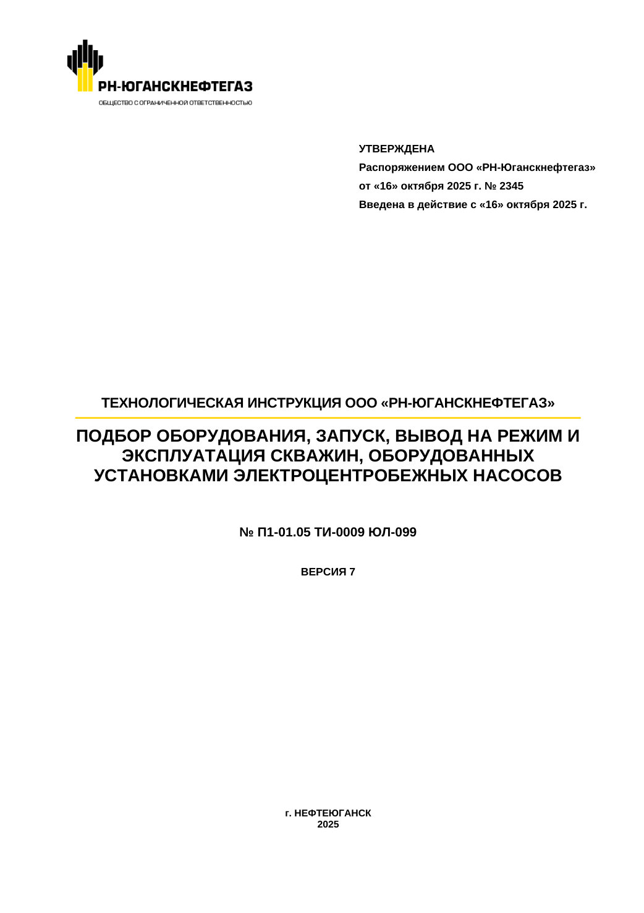
УТВЕРЖДЕНА
Распоряжением ООО «РН-Юганскнефтегаз»
от «16» октября 2025 г. № 2345
Введена в действие с «16» октября 2025 г.
ТЕХНОЛОГИЧЕСКАЯ ИНСТРУКЦИЯ ООО «РН-ЮГАНСКНЕФТЕГАЗ»
ПОДБОР ОБОРУДОВАНИЯ, ЗАПУСК, ВЫВОД НА РЕЖИМ И
ЭКСПЛУАТАЦИЯ СКВАЖИН, ОБОРУДОВАННЫХ
УСТАНОВКАМИ ЭЛЕКТРОЦЕНТРОБЕЖНЫХ НАСОСОВ
№ П1-01.05 ТИ-0009 ЮЛ-099
ВЕРСИЯ 7
г. НЕФТЕЮГАНСК
2025
СТРАНИЦА 7 ИЗ 207
ТЕХНОЛОГИЧЕСКАЯ ИНСТРУКЦИЯ ООО «РН-ЮГАНСКНЕФТЕГАЗ» № П1-01.05 ТИ-0009 ЮЛ-099
ВЕРСИЯ 7
ПОДБОР ОБОРУДОВАНИЯ, ЗАПУСК, ВЫВОД НА РЕЖИМ И ЭКСПЛУАТАЦИЯ СКВАЖИН, ОБОРУДОВАННЫХ УСТАНОВКАМИ ЭЛЕКТРОЦЕНТРОБЕЖНЫХ
НАСОСОВ
УРОВЕНЬ ДОСТУПА -
ОТКРЫТЫЙ
1. ВВОДНЫЕ ПОЛОЖЕНИЯ
1.1.
НАЗНАЧЕНИЕ
Технологическая инструкция устанавливает порядок действий персонала при подборе
оборудования, запуске, выводе на режим и эксплуатации скважин, оборудованных
установками ЭЦН с целью создания единых правил взаимодействия сторон, участвующих в
эксплуатации и обслуживании погружного оборудования установок ЭЦН, а также разделения
зон ответственности между исполнителями и повышения качества эксплуатации, увеличения
межремонтного периода эксплуатации оборудования, повышение эффективности добычи
нефти при помощи установок ЭЦН.
Технологическая инструкция разработана на основании ТУ и РЭ установки ЭЦН заводов-
изготовителей, опыта организации работ по эксплуатации, обслуживанию установки ЭЦН в
ООО «РН-Юганскнефтегаз» и в других нефтяных компаниях России.
1.2.
ОБЛАСТЬ ДЕЙСТВИЯ
1.2.1. Технологическая инструкция обязательна для исполнения работниками структурных
подразделений ООО «РН-Юганскнефтегаз», связанных с:
подбором и расчётом установки ЭЦН;
подготовкой наземного оборудования установки ЭЦН, скважин, оборудованных
установкой ЭЦН к пробному запуску на месторождениях ООО «РН-Юганскнефтегаз»;
выполнением работ по выводу на режим и эксплуатацией скважин, оборудованных
установкой ЭЦН на месторождениях ООО «РН-Юганскнефтегаз»;
контролем и анализом работы установок ЭЦН.
1.2.2. Исполнители Технологической инструкции приведены в разделе «Заключительные
положения».
1.2.3. Структурные подразделения ООО «РН-Юганскнефтегаз» при оформлении договоров с
подрядными организациями, осуществляющими услуги на объектах ООО «РН-
Юганскнефтегаз» по прокату, сервисному обслуживанию и ремонту погружного
оборудования, подземному ремонту скважин, предоставляющими услуги по выводу на режим
и эксплуатации скважин, обязаны включать в условия договора пункт о неукоснительном
выполнении подрядными организациями требований, установленных Технологической
инструкцией.
1.3. УРОВЕНЬ ДОСТУПА
Уровень доступа Технологической инструкции – «Открытый».
7 / 207
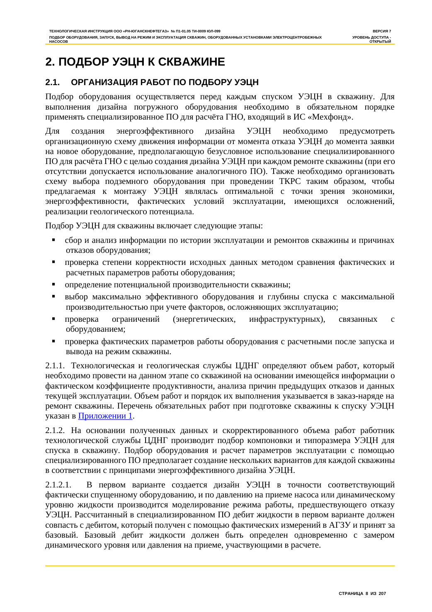
СТРАНИЦА 8 ИЗ 207
ТЕХНОЛОГИЧЕСКАЯ ИНСТРУКЦИЯ ООО «РН-ЮГАНСКНЕФТЕГАЗ» № П1-01.05 ТИ-0009 ЮЛ-099
ВЕРСИЯ 7
ПОДБОР ОБОРУДОВАНИЯ, ЗАПУСК, ВЫВОД НА РЕЖИМ И ЭКСПЛУАТАЦИЯ СКВАЖИН, ОБОРУДОВАННЫХ УСТАНОВКАМИ ЭЛЕКТРОЦЕНТРОБЕЖНЫХ
НАСОСОВ
УРОВЕНЬ ДОСТУПА -
ОТКРЫТЫЙ
2. ПОДБОР УЭЦН К СКВАЖИНЕ
2.1.
ОРГАНИЗАЦИЯ РАБОТ ПО ПОДБОРУ УЭЦН
Подбор оборудования осуществляется перед каждым спуском УЭЦН в скважину. Для
выполнения дизайна погружного оборудования необходимо в обязательном порядке
применять специализированное ПО для расчёта ГНО, входящий в ИС «Мехфонд».
Для создания энергоэффективного дизайна УЭЦН необходимо предусмотреть
организационную схему движения информации от момента отказа УЭЦН до момента заявки
на новое оборудование, предполагающую безусловное использование специализированного
ПО для расчёта ГНО с целью создания дизайна УЭЦН при каждом ремонте скважины (при его
отсутствии допускается использование аналогичного ПО). Также необходимо организовать
схему выбора подземного оборудования при проведении ТКРС таким образом, чтобы
предлагаемая к монтажу УЭЦН являлась оптимальной с точки зрения экономики,
энергоэффективности, фактических условий эксплуатации, имеющихся осложнений,
реализации геологического потенциала.
Подбор УЭЦН для скважины включает следующие этапы:
сбор и анализ информации по истории эксплуатации и ремонтов скважины и причинах
отказов оборудования;
проверка степени корректности исходных данных методом сравнения фактических и
расчетных параметров работы оборудования;
определение потенциальной производительности скважины;
выбор максимально эффективного оборудования и глубины спуска с максимальной
производительностью при учете факторов, осложняющих эксплуатацию;
проверка ограничений (энергетических, инфраструктурных), связанных с
оборудованием;
проверка фактических параметров работы оборудования с расчетными после запуска и
вывода на режим скважины.
2.1.1. Технологическая и геологическая службы ЦДНГ определяют объем работ, который
необходимо провести на данном этапе со скважиной на основании имеющейся информации о
фактическом коэффициенте продуктивности, анализа причин предыдущих отказов и данных
текущей эксплуатации. Объем работ и порядок их выполнения указывается в заказ-наряде на
ремонт скважины. Перечень обязательных работ при подготовке скважины к спуску УЭЦН
указан в Приложении 1.
2.1.2. На основании полученных данных и скорректированного объема работ работник
технологической службы ЦДНГ производит подбор компоновки и типоразмера УЭЦН для
спуска в скважину. Подбор оборудования и расчет параметров эксплуатации с помощью
специализированного ПО предполагает создание нескольких вариантов для каждой скважины
в соответствии с принципами энергоэффективного дизайна УЭЦН.
2.1.2.1.
В первом варианте создается дизайн УЭЦН в точности соответствующий
фактически спущенному оборудованию, и по давлению на приеме насоса или динамическому
уровню жидкости производится моделирование режима работы, предшествующего отказу
УЭЦН. Рассчитанный в специализированном ПО дебит жидкости в первом варианте должен
совпасть с дебитом, который получен с помощью фактических измерений в АГЗУ и принят за
базовый. Базовый дебит жидкости должен быть определен одновременно с замером
динамического уровня или давления на приеме, участвующими в расчете.
8 / 207
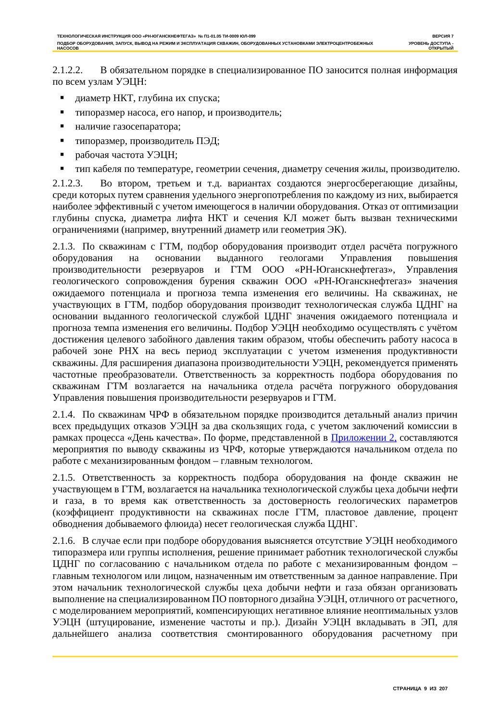
СТРАНИЦА 9 ИЗ 207
ТЕХНОЛОГИЧЕСКАЯ ИНСТРУКЦИЯ ООО «РН-ЮГАНСКНЕФТЕГАЗ» № П1-01.05 ТИ-0009 ЮЛ-099
ВЕРСИЯ 7
ПОДБОР ОБОРУДОВАНИЯ, ЗАПУСК, ВЫВОД НА РЕЖИМ И ЭКСПЛУАТАЦИЯ СКВАЖИН, ОБОРУДОВАННЫХ УСТАНОВКАМИ ЭЛЕКТРОЦЕНТРОБЕЖНЫХ
НАСОСОВ
УРОВЕНЬ ДОСТУПА -
ОТКРЫТЫЙ
2.1.2.2.
В обязательном порядке в специализированное ПО заносится полная информация
по всем узлам УЭЦН:
диаметр НКТ, глубина их спуска;
типоразмер насоса, его напор, и производитель;
наличие газосепаратора;
типоразмер, производитель ПЭД;
рабочая частота УЭЦН;
тип кабеля по температуре, геометрии сечения, диаметру сечения жилы, производителю.
2.1.2.3.
Во втором, третьем и т.д. вариантах создаются энергосберегающие дизайны,
среди которых путем сравнения удельного энергопотребления по каждому из них, выбирается
наиболее эффективный с учетом имеющегося в наличии оборудования. Отказ от оптимизации
глубины спуска, диаметра лифта НКТ и сечения КЛ может быть вызван техническими
ограничениями (например, внутренний диаметр или геометрия ЭК).
2.1.3. По скважинам с ГТМ, подбор оборудования производит отдел расчёта погружного
оборудования на основании выданного геологами Управления повышения
производительности резервуаров и ГТМ ООО «РН-Юганскнефтегаз», Управления
геологического сопровождения бурения скважин ООО «РН-Юганскнефтегаз» значения
ожидаемого потенциала и прогноза темпа изменения его величины. На скважинах, не
участвующих в ГТМ, подбор оборудования производит технологическая служба ЦДНГ на
основании выданного геологической службой ЦДНГ значения ожидаемого потенциала и
прогноза темпа изменения его величины. Подбор УЭЦН необходимо осуществлять с учётом
достижения целевого забойного давления таким образом, чтобы обеспечить работу насоса в
рабочей зоне РНХ на весь период эксплуатации с учетом изменения продуктивности
скважины. Для расширения диапазона производительности УЭЦН, рекомендуется применять
частотные преобразователи. Ответственность за корректность подбора оборудования по
скважинам ГТМ возлагается на начальника отдела расчёта погружного оборудования
Управления повышения производительности резервуаров и ГТМ.
2.1.4. По скважинам ЧРФ в обязательном порядке производится детальный анализ причин
всех предыдущих отказов УЭЦН за два скользящих года, с учетом заключений комиссии в
рамках процесса «День качества». По форме, представленной в Приложении 2
, составляются
мероприятия по выводу скважины из ЧРФ, которые утверждаются начальником отдела по
работе с механизированным фондом – главным технологом.
2.1.5. Ответственность за корректность подбора оборудования на фонде скважин не
участвующем в ГТМ, возлагается на начальника технологической службы цеха добычи нефти
и газа, в то время как ответственность за достоверность геологических параметров
(коэффициент продуктивности на скважинах после ГТМ, пластовое давление, процент
обводнения добываемого флюида) несет геологическая служба ЦДНГ.
2.1.6. В случае если при подборе оборудования выясняется отсутствие УЭЦН необходимого
типоразмера или группы исполнения, решение принимает работник технологической службы
ЦДНГ по согласованию с начальником отдела по работе с механизированным фондом –
главным технологом или лицом, назначенным им ответственным за данное направление. При
этом начальник технологической службы цеха добычи нефти и газа обязан организовать
выполнение на специализированном ПО повторного дизайна УЭЦН, отличного от расчетного,
с моделированием мероприятий, компенсирующих негативное влияние неоптимальных узлов
УЭЦН (штуцирование, изменение частоты и пр.). Дизайн УЭЦН вкладывать в ЭП, для
дальнейшего анализа соответствия смонтированного оборудования расчетному при
9 / 207
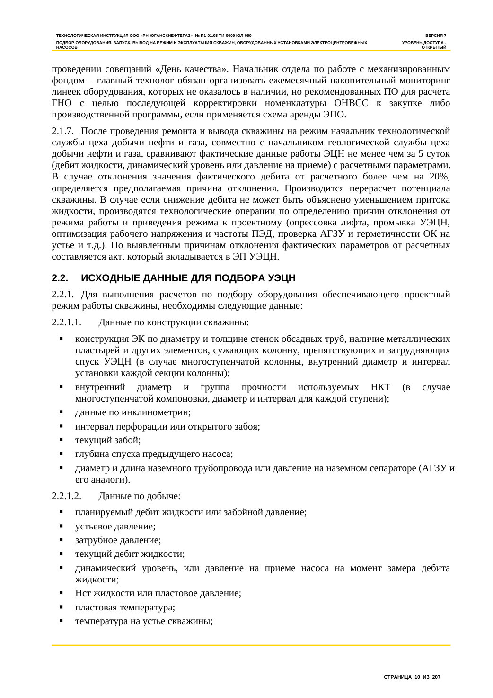
СТРАНИЦА 10 ИЗ 207
ТЕХНОЛОГИЧЕСКАЯ ИНСТРУКЦИЯ ООО «РН-ЮГАНСКНЕФТЕГАЗ» № П1-01.05 ТИ-0009 ЮЛ-099
ВЕРСИЯ 7
ПОДБОР ОБОРУДОВАНИЯ, ЗАПУСК, ВЫВОД НА РЕЖИМ И ЭКСПЛУАТАЦИЯ СКВАЖИН, ОБОРУДОВАННЫХ УСТАНОВКАМИ ЭЛЕКТРОЦЕНТРОБЕЖНЫХ
НАСОСОВ
УРОВЕНЬ ДОСТУПА -
ОТКРЫТЫЙ
проведении совещаний «День качества». Начальник отдела по работе с механизированным
фондом – главный технолог обязан организовать ежемесячный накопительный мониторинг
линеек оборудования, которых не оказалось в наличии, но рекомендованных ПО для расчёта
ГНО с целью последующей корректировки номенклатуры ОНВСС к закупке либо
производственной программы, если применяется схема аренды ЭПО.
2.1.7. После проведения ремонта и вывода скважины на режим начальник технологической
службы цеха добычи нефти и газа, совместно с начальником геологической службы цеха
добычи нефти и газа, сравнивают фактические данные работы ЭЦН не менее чем за 5 суток
(дебит жидкости, динамический уровень или давление на приеме) с расчетными параметрами.
В случае отклонения значения фактического дебита от расчетного более чем на 20%,
определяется предполагаемая причина отклонения. Производится перерасчет потенциала
скважины. В случае если снижение дебита не может быть объяснено уменьшением притока
жидкости, производятся технологические операции по определению причин отклонения от
режима работы и приведения режима к проектному (опрессовка лифта, промывка УЭЦН,
оптимизация рабочего напряжения и частоты ПЭД, проверка АГЗУ и герметичности ОК на
устье и т.д.). По выявленным причинам отклонения фактических параметров от расчетных
составляется акт, который вкладывается в ЭП УЭЦН.
2.2.
ИСХОДНЫЕ ДАННЫЕ ДЛЯ ПОДБОРА УЭЦН
2.2.1. Для выполнения расчетов по подбору оборудования обеспечивающего проектный
режим работы скважины, необходимы следующие данные:
2.2.1.1.
Данные по конструкции скважины:
конструкция ЭК по диаметру и толщине стенок обсадных труб, наличие металлических
пластырей и других элементов, сужающих колонну, препятствующих и затрудняющих
спуск УЭЦН (в случае многоступенчатой колонны, внутренний диаметр и интервал
установки каждой секции колонны);
внутренний диаметр и группа прочности используемых НКТ (в случае
многоступенчатой компоновки, диаметр и интервал для каждой ступени);
данные по инклинометрии;
интервал перфорации или открытого забоя;
текущий забой;
глубина спуска предыдущего насоса;
диаметр и длина наземного трубопровода или давление на наземном сепараторе (АГЗУ и
его аналоги).
2.2.1.2.
Данные по добыче:
планируемый дебит жидкости или забойной давление;
устьевое давление;
затрубное давление;
текущий дебит жидкости;
динамический уровень, или давление на приеме насоса на момент замера дебита
жидкости;
Нст жидкости или пластовое давление;
пластовая температура;
температура на устье скважины;
10 / 207
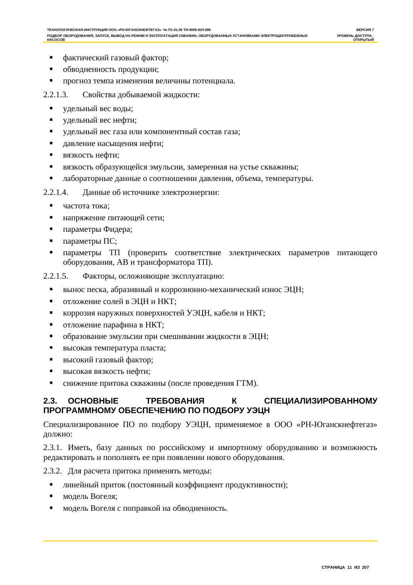
СТРАНИЦА 11 ИЗ 207
ТЕХНОЛОГИЧЕСКАЯ ИНСТРУКЦИЯ ООО «РН-ЮГАНСКНЕФТЕГАЗ» № П1-01.05 ТИ-0009 ЮЛ-099
ВЕРСИЯ 7
ПОДБОР ОБОРУДОВАНИЯ, ЗАПУСК, ВЫВОД НА РЕЖИМ И ЭКСПЛУАТАЦИЯ СКВАЖИН, ОБОРУДОВАННЫХ УСТАНОВКАМИ ЭЛЕКТРОЦЕНТРОБЕЖНЫХ
НАСОСОВ
УРОВЕНЬ ДОСТУПА -
ОТКРЫТЫЙ
фактический газовый фактор;
обводненность продукции;
прогноз темпа изменения величины потенциала.
2.2.1.3.
Свойства добываемой жидкости:
удельный вес воды;
удельный вес нефти;
удельный вес газа или компонентный состав газа;
давление насыщения нефти;
вязкость нефти;
вязкость образующейся эмульсии, замеренная на устье скважины;
лабораторные данные о соотношении давления, объема, температуры.
2.2.1.4.
Данные об источнике электроэнергии:
частота тока;
напряжение питающей сети;
параметры Фидера;
параметры ПС;
параметры ТП (проверить соответствие электрических параметров питающего
оборудования, АВ и трансформатора ТП).
2.2.1.5.
Факторы, осложняющие эксплуатацию:
вынос песка, абразивный и коррозионно-механический износ ЭЦН;
отложение солей в ЭЦН и НКТ;
коррозия наружных поверхностей УЭЦН, кабеля и НКТ;
отложение парафина в НКТ;
образование эмульсии при смешивании жидкости в ЭЦН;
высокая температура пласта;
высокий газовый фактор;
высокая вязкость нефти;
снижение притока скважины (после проведения ГТМ).
2.3.
ОСНОВНЫЕ
ТРЕБОВАНИЯ
К
СПЕЦИАЛИЗИРОВАННОМУ
ПРОГРАММНОМУ ОБЕСПЕЧЕНИЮ ПО ПОДБОРУ УЭЦН
Специализированное ПО по подбору УЭЦН, применяемое в ООО «РН-Юганскнефтегаз»
должно:
2.3.1. Иметь, базу данных по российскому и импортному оборудованию и возможность
редактировать и пополнять ее при появлении нового оборудования.
2.3.2. Для расчета притока применять методы:
линейный приток (постоянный коэффициент продуктивности);
модель Вогеля;
модель Вогеля с поправкой на обводненность.
11 / 207
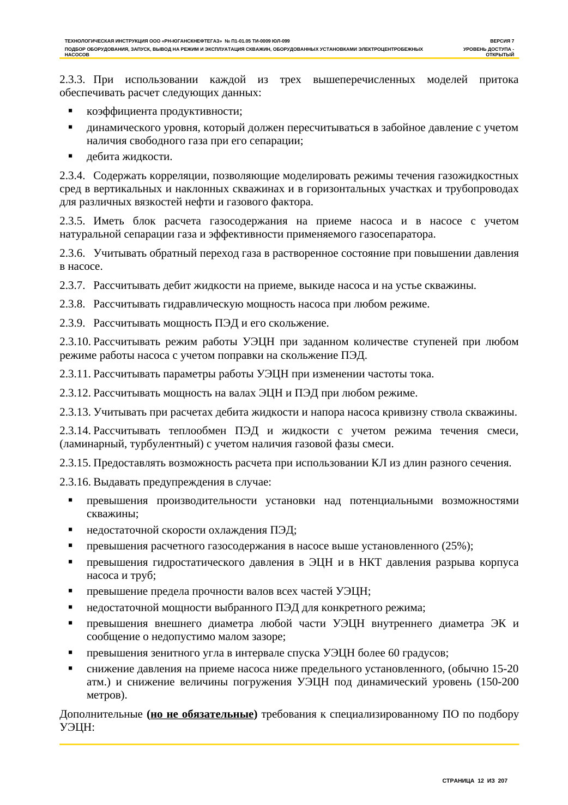
СТРАНИЦА 12 ИЗ 207
ТЕХНОЛОГИЧЕСКАЯ ИНСТРУКЦИЯ ООО «РН-ЮГАНСКНЕФТЕГАЗ» № П1-01.05 ТИ-0009 ЮЛ-099
ВЕРСИЯ 7
ПОДБОР ОБОРУДОВАНИЯ, ЗАПУСК, ВЫВОД НА РЕЖИМ И ЭКСПЛУАТАЦИЯ СКВАЖИН, ОБОРУДОВАННЫХ УСТАНОВКАМИ ЭЛЕКТРОЦЕНТРОБЕЖНЫХ
НАСОСОВ
УРОВЕНЬ ДОСТУПА -
ОТКРЫТЫЙ
2.3.3. При использовании каждой из трех вышеперечисленных моделей притока
обеспечивать расчет следующих данных:
коэффициента продуктивности;
динамического уровня, который должен пересчитываться в забойное давление с учетом
наличия свободного газа при его сепарации;
дебита жидкости.
2.3.4. Содержать корреляции, позволяющие моделировать режимы течения газожидкостных
сред в вертикальных и наклонных скважинах и в горизонтальных участках и трубопроводах
для различных вязкостей нефти и газового фактора.
2.3.5. Иметь блок расчета газосодержания на приеме насоса и в насосе с учетом
натуральной сепарации газа и эффективности применяемого газосепаратора.
2.3.6. Учитывать обратный переход газа в растворенное состояние при повышении давления
в насосе.
2.3.7. Рассчитывать дебит жидкости на приеме, выкиде насоса и на устье скважины.
2.3.8. Рассчитывать гидравлическую мощность насоса при любом режиме.
2.3.9. Рассчитывать мощность ПЭД и его скольжение.
2.3.10. Рассчитывать режим работы УЭЦН при заданном количестве ступеней при любом
режиме работы насоса с учетом поправки на скольжение ПЭД.
2.3.11. Рассчитывать параметры работы УЭЦН при изменении частоты тока.
2.3.12. Рассчитывать мощность на валах ЭЦН и ПЭД при любом режиме.
2.3.13. Учитывать при расчетах дебита жидкости и напора насоса кривизну ствола скважины.
2.3.14. Рассчитывать теплообмен ПЭД и жидкости с учетом режима течения смеси,
(ламинарный, турбулентный) с учетом наличия газовой фазы смеси.
2.3.15. Предоставлять возможность расчета при использовании КЛ из длин разного сечения.
2.3.16. Выдавать предупреждения в случае:
превышения производительности установки над потенциальными возможностями
скважины;
недостаточной скорости охлаждения ПЭД;
превышения расчетного газосодержания в насосе выше установленного (25%);
превышения гидростатического давления в ЭЦН и в НКТ давления разрыва корпуса
насоса и труб;
превышение предела прочности валов всех частей УЭЦН;
недостаточной мощности выбранного ПЭД для конкретного режима;
превышения внешнего диаметра любой части УЭЦН внутреннего диаметра ЭК и
сообщение о недопустимо малом зазоре;
превышения зенитного угла в интервале спуска УЭЦН более 60 градусов;
снижение давления на приеме насоса ниже предельного установленного, (обычно 15-20
атм.) и снижение величины погружения УЭЦН под динамический уровень (150-200
метров).
Дополнительные (но не обязательные) требования к специализированному ПО по подбору
УЭЦН:
12 / 207
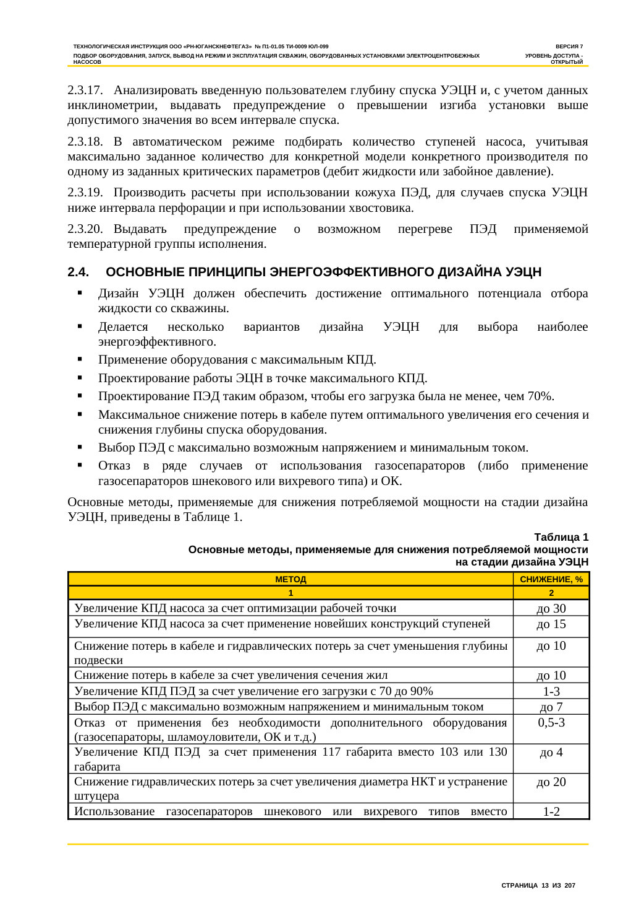
СТРАНИЦА 13 ИЗ 207
ТЕХНОЛОГИЧЕСКАЯ ИНСТРУКЦИЯ ООО «РН-ЮГАНСКНЕФТЕГАЗ» № П1-01.05 ТИ-0009 ЮЛ-099
ВЕРСИЯ 7
ПОДБОР ОБОРУДОВАНИЯ, ЗАПУСК, ВЫВОД НА РЕЖИМ И ЭКСПЛУАТАЦИЯ СКВАЖИН, ОБОРУДОВАННЫХ УСТАНОВКАМИ ЭЛЕКТРОЦЕНТРОБЕЖНЫХ
НАСОСОВ
УРОВЕНЬ ДОСТУПА -
ОТКРЫТЫЙ
2.3.17. Анализировать введенную пользователем глубину спуска УЭЦН и, с учетом данных
инклинометрии, выдавать предупреждение о превышении изгиба установки выше
допустимого значения во всем интервале спуска.
2.3.18. В автоматическом режиме подбирать количество ступеней насоса, учитывая
максимально заданное количество для конкретной модели конкретного производителя по
одному из заданных критических параметров (дебит жидкости или забойное давление).
2.3.19. Производить расчеты при использовании кожуха ПЭД, для случаев спуска УЭЦН
ниже интервала перфорации и при использовании хвостовика.
2.3.20. Выдавать предупреждение о возможном перегреве ПЭД применяемой
температурной группы исполнения.
2.4.
ОСНОВНЫЕ ПРИНЦИПЫ ЭНЕРГОЭФФЕКТИВНОГО ДИЗАЙНА УЭЦН
Дизайн УЭЦН должен обеспечить достижение оптимального потенциала отбора
жидкости со скважины.
Делается несколько вариантов дизайна УЭЦН для выбора наиболее
энергоэффективного.
Применение оборудования с максимальным КПД.
Проектирование работы ЭЦН в точке максимального КПД.
Проектирование ПЭД таким образом, чтобы его загрузка была не менее, чем 70%.
Максимальное снижение потерь в кабеле путем оптимального увеличения его сечения и
снижения глубины спуска оборудования.
Выбор ПЭД с максимально возможным напряжением и минимальным током.
Отказ в ряде случаев от использования газосепараторов (либо применение
газосепараторов шнекового или вихревого типа) и ОК.
Основные методы, применяемые для снижения потребляемой мощности на стадии дизайна
УЭЦН, приведены в Таблице 1.
Таблица 1
Основные методы, применяемые для снижения потребляемой мощности
на стадии дизайна УЭЦН
МЕТОД
СНИЖЕНИЕ, %
1
2
Увеличение КПД насоса за счет оптимизации рабочей точки
до 30
Увеличение КПД насоса за счет применение новейших конструкций ступеней
до 15
Снижение потерь в кабеле и гидравлических потерь за счет уменьшения глубины
подвески
до 10
Снижение потерь в кабеле за счет увеличения сечения жил
до 10
Увеличение КПД ПЭД за счет увеличение его загрузки с 70 до 90%
1-3
Выбор ПЭД с максимально возможным напряжением и минимальным током
до 7
Отказ от применения без необходимости дополнительного оборудования
(газосепараторы, шламоуловители, ОК и т.д.)
0,5-3
Увеличение КПД ПЭД за счет применения 117 габарита вместо 103 или 130
габарита
до 4
Снижение гидравлических потерь за счет увеличения диаметра НКТ и устранение
штуцера
до 20
Использование газосепараторов шнекового или вихревого типов вместо
1-2
13 / 207
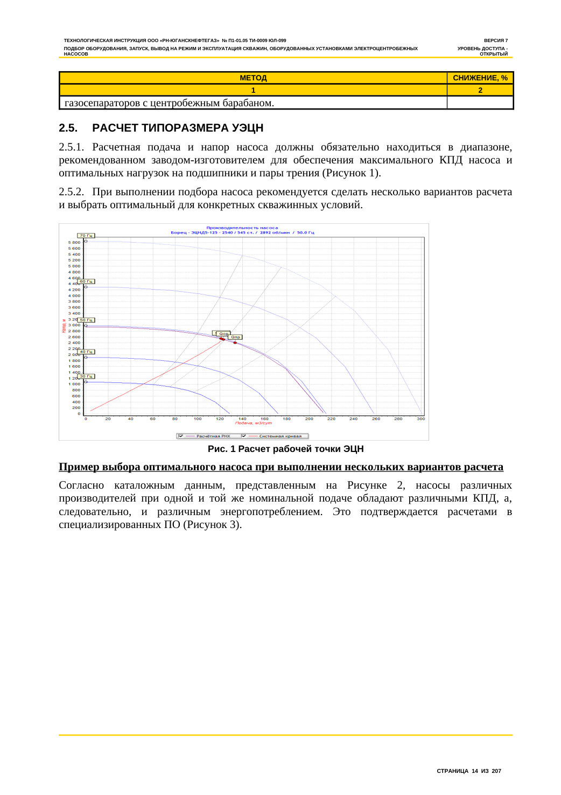
СТРАНИЦА 14 ИЗ 207
ТЕХНОЛОГИЧЕСКАЯ ИНСТРУКЦИЯ ООО «РН-ЮГАНСКНЕФТЕГАЗ» № П1-01.05 ТИ-0009 ЮЛ-099
ВЕРСИЯ 7
ПОДБОР ОБОРУДОВАНИЯ, ЗАПУСК, ВЫВОД НА РЕЖИМ И ЭКСПЛУАТАЦИЯ СКВАЖИН, ОБОРУДОВАННЫХ УСТАНОВКАМИ ЭЛЕКТРОЦЕНТРОБЕЖНЫХ
НАСОСОВ
УРОВЕНЬ ДОСТУПА -
ОТКРЫТЫЙ
МЕТОД
СНИЖЕНИЕ, %
1
2
газосепараторов с центробежным барабаном.
2.5.
РАСЧЕТ ТИПОРАЗМЕРА УЭЦН
2.5.1. Расчетная подача и напор насоса должны обязательно находиться в диапазоне,
рекомендованном заводом-изготовителем для обеспечения максимального КПД насоса и
оптимальных нагрузок на подшипники и пары трения (Рисунок 1).
2.5.2. При выполнении подбора насоса рекомендуется сделать несколько вариантов расчета
и выбрать оптимальный для конкретных скважинных условий.
Рис. 1 Расчет рабочей точки ЭЦН
Пример выбора оптимального насоса при выполнении нескольких вариантов расчета
Согласно каталожным данным, представленным на Рисунке 2, насосы различных
производителей при одной и той же номинальной подаче обладают различными КПД, а,
следовательно, и различным энергопотреблением. Это подтверждается расчетами в
специализированных ПО (Рисунок 3).
14 / 207
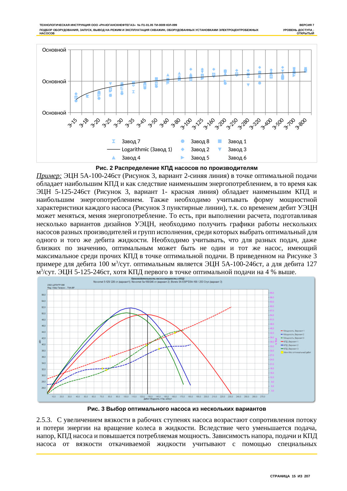
СТРАНИЦА 15 ИЗ 207
ТЕХНОЛОГИЧЕСКАЯ ИНСТРУКЦИЯ ООО «РН-ЮГАНСКНЕФТЕГАЗ» № П1-01.05 ТИ-0009 ЮЛ-099
ВЕРСИЯ 7
ПОДБОР ОБОРУДОВАНИЯ, ЗАПУСК, ВЫВОД НА РЕЖИМ И ЭКСПЛУАТАЦИЯ СКВАЖИН, ОБОРУДОВАННЫХ УСТАНОВКАМИ ЭЛЕКТРОЦЕНТРОБЕЖНЫХ
НАСОСОВ
УРОВЕНЬ ДОСТУПА -
ОТКРЫТЫЙ
Э-15
Э-18
Э-20
Э-25
Э-30
Э-35
Э-45
Э-50
Э-60
Э-80
Э-100
Э-125
Э-160
Э-200
Э-250
Э-280
Э-320
Э-400
Э-500
Э-700
Э-800
Основной
Основной
Основной
Завод 7
Завод 8
Завод 1
Logarithmic (Завод 1)
Завод 2
Завод 3
Завод 4
Завод 5
Завод 6
Рис. 2 Распределение КПД насосов по производителям
Пример: ЭЦН 5А-100-246ст (Рисунок 3, вариант 2-синяя линия) в точке оптимальной подачи
обладает наибольшим КПД и как следствие наименьшим энергопотреблением, в то время как
ЭЦН 5-125-246ст (Рисунок 3, вариант 1- красная линия) обладает наименьшим КПД и
наибольшим энергопотреблением. Также необходимо учитывать форму мощностной
характеристики каждого насоса (Рисунок 3 пунктирные линии), т.к. со временем дебит УЭЦН
может меняться, меняя энергопотребление. То есть, при выполнении расчета, подготавливая
несколько вариантов дизайнов УЭЦН, необходимо получить графики работы нескольких
насосов разных производителей и групп исполнения, среди которых выбрать оптимальный для
одного и того же дебита жидкости. Необходимо учитывать, что для разных подач, даже
близких по значению, оптимальным может быть не один и тот же насос, имеющий
максимальное среди прочих КПД в точке оптимальной подачи. В приведенном на Рисунке 3
примере для дебита 100 м3/сут. оптимальным является ЭЦН 5А-100-246ст, а для дебита 127
м3/сут. ЭЦН 5-125-246ст, хотя КПД первого в точке оптимальной подачи на 4 % выше.
Рис. 3 Выбор оптимального насоса из нескольких вариантов
2.5.3. С увеличением вязкости в рабочих ступенях насоса возрастают сопротивления потоку
и потери энергии на вращение колеса в жидкости. Вследствие чего уменьшается подача,
напор, КПД насоса и повышается потребляемая мощность. Зависимость напора, подачи и КПД
насоса от вязкости откачиваемой жидкости учитывают с помощью специальных
15 / 207
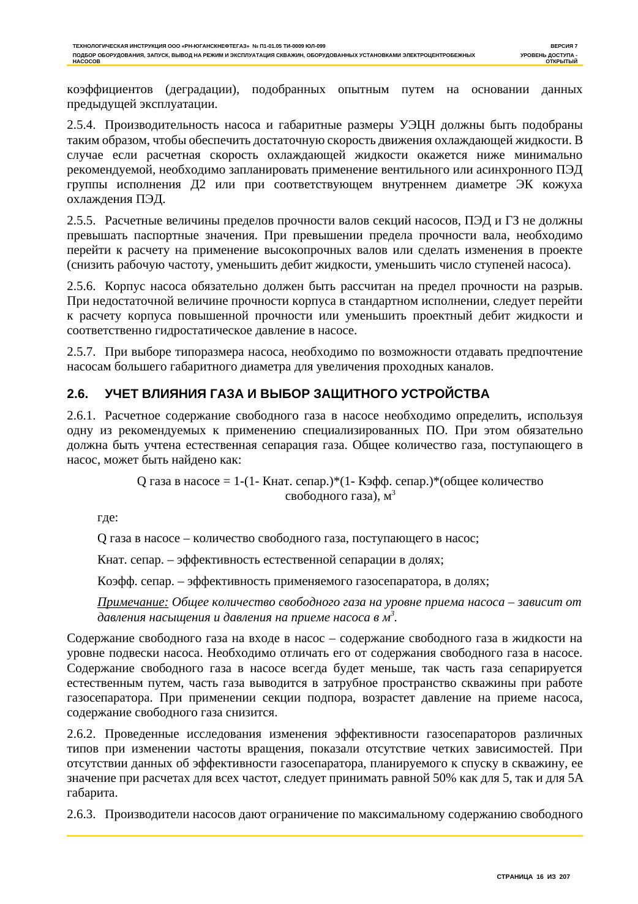
СТРАНИЦА 16 ИЗ 207
ТЕХНОЛОГИЧЕСКАЯ ИНСТРУКЦИЯ ООО «РН-ЮГАНСКНЕФТЕГАЗ» № П1-01.05 ТИ-0009 ЮЛ-099
ВЕРСИЯ 7
ПОДБОР ОБОРУДОВАНИЯ, ЗАПУСК, ВЫВОД НА РЕЖИМ И ЭКСПЛУАТАЦИЯ СКВАЖИН, ОБОРУДОВАННЫХ УСТАНОВКАМИ ЭЛЕКТРОЦЕНТРОБЕЖНЫХ
НАСОСОВ
УРОВЕНЬ ДОСТУПА -
ОТКРЫТЫЙ
коэффициентов (деградации), подобранных опытным путем на основании данных
предыдущей эксплуатации.
2.5.4. Производительность насоса и габаритные размеры УЭЦН должны быть подобраны
таким образом, чтобы обеспечить достаточную скорость движения охлаждающей жидкости. В
случае если расчетная скорость охлаждающей жидкости окажется ниже минимально
рекомендуемой, необходимо запланировать применение вентильного или асинхронного ПЭД
группы исполнения Д2 или при соответствующем внутреннем диаметре ЭК кожуха
охлаждения ПЭД.
2.5.5. Расчетные величины пределов прочности валов секций насосов, ПЭД и ГЗ не должны
превышать паспортные значения. При превышении предела прочности вала, необходимо
перейти к расчету на применение высокопрочных валов или сделать изменения в проекте
(снизить рабочую частоту, уменьшить дебит жидкости, уменьшить число ступеней насоса).
2.5.6. Корпус насоса обязательно должен быть рассчитан на предел прочности на разрыв.
При недостаточной величине прочности корпуса в стандартном исполнении, следует перейти
к расчету корпуса повышенной прочности или уменьшить проектный дебит жидкости и
соответственно гидростатическое давление в насосе.
2.5.7. При выборе типоразмера насоса, необходимо по возможности отдавать предпочтение
насосам большего габаритного диаметра для увеличения проходных каналов.
2.6.
УЧЕТ ВЛИЯНИЯ ГАЗА И ВЫБОР ЗАЩИТНОГО УСТРОЙСТВА
2.6.1. Расчетное содержание свободного газа в насосе необходимо определить, используя
одну из рекомендуемых к применению специализированных ПО. При этом обязательно
должна быть учтена естественная сепарация газа. Общее количество газа, поступающего в
насос, может быть найдено как:
Q газа в насосе = 1-(1- Кнат. сепар.)*(1- Кэфф. сепар.)*(общее количество
свободного газа), м3
где:
Q газа в насосе – количество свободного газа, поступающего в насос;
Кнат. сепар. – эффективность естественной сепарации в долях;
Коэфф. сепар. – эффективность применяемого газосепаратора, в долях;
Примечание: Общее количество свободного газа на уровне приема насоса – зависит от
давления насыщения и давления на приеме насоса в м3.
Содержание свободного газа на входе в насос – содержание свободного газа в жидкости на
уровне подвески насоса. Необходимо отличать его от содержания свободного газа в насосе.
Содержание свободного газа в насосе всегда будет меньше, так часть газа сепарируется
естественным путем, часть газа выводится в затрубное пространство скважины при работе
газосепаратора. При применении секции подпора, возрастет давление на приеме насоса,
содержание свободного газа снизится.
2.6.2. Проведенные исследования изменения эффективности газосепараторов различных
типов при изменении частоты вращения, показали отсутствие четких зависимостей. При
отсутствии данных об эффективности газосепаратора, планируемого к спуску в скважину, ее
значение при расчетах для всех частот, следует принимать равной 50% как для 5, так и для 5А
габарита.
2.6.3. Производители насосов дают ограничение по максимальному содержанию свободного
16 / 207
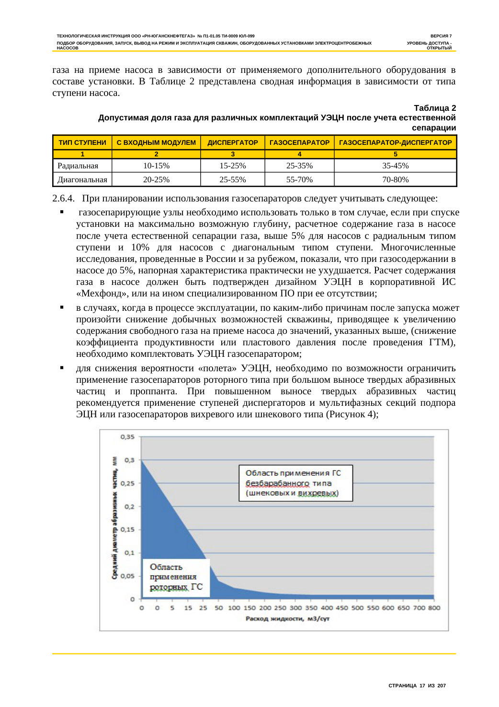
СТРАНИЦА 17 ИЗ 207
ТЕХНОЛОГИЧЕСКАЯ ИНСТРУКЦИЯ ООО «РН-ЮГАНСКНЕФТЕГАЗ» № П1-01.05 ТИ-0009 ЮЛ-099
ВЕРСИЯ 7
ПОДБОР ОБОРУДОВАНИЯ, ЗАПУСК, ВЫВОД НА РЕЖИМ И ЭКСПЛУАТАЦИЯ СКВАЖИН, ОБОРУДОВАННЫХ УСТАНОВКАМИ ЭЛЕКТРОЦЕНТРОБЕЖНЫХ
НАСОСОВ
УРОВЕНЬ ДОСТУПА -
ОТКРЫТЫЙ
газа на приеме насоса в зависимости от применяемого дополнительного оборудования в
составе установки. В Таблице 2 представлена сводная информация в зависимости от типа
ступени насоса.
Таблица 2
Допустимая доля газа для различных комплектаций УЭЦН после учета естественной
сепарации
ТИП СТУПЕНИ
С ВХОДНЫМ МОДУЛЕМ
ДИСПЕРГАТОР
ГАЗОСЕПАРАТОР
ГАЗОСЕПАРАТОР-ДИСПЕРГАТОР
1
2
3
4
5
Радиальная
10-15%
15-25%
25-35%
35-45%
Диагональная
20-25%
25-55%
55-70%
70-80%
2.6.4. При планировании использования газосепараторов следует учитывать следующее:
газосепарирующие узлы необходимо использовать только в том случае, если при спуске
установки на максимально возможную глубину, расчетное содержание газа в насосе
после учета естественной сепарации газа, выше 5% для насосов с радиальным типом
ступени и 10% для насосов с диагональным типом ступени. Многочисленные
исследования, проведенные в России и за рубежом, показали, что при газосодержании в
насосе до 5%, напорная характеристика практически не ухудшается. Расчет содержания
газа в насосе должен быть подтвержден дизайном УЭЦН в корпоративной ИС
«Мехфонд», или на ином специализированном ПО при ее отсутствии;
в случаях, когда в процессе эксплуатации, по каким-либо причинам после запуска может
произойти снижение добычных возможностей скважины, приводящее к увеличению
содержания свободного газа на приеме насоса до значений, указанных выше, (снижение
коэффициента продуктивности или пластового давления после проведения ГТМ),
необходимо комплектовать УЭЦН газосепаратором;
для снижения вероятности «полета» УЭЦН, необходимо по возможности ограничить
применение газосепараторов роторного типа при большом выносе твердых абразивных
частиц и проппанта. При повышенном выносе твердых абразивных частиц
рекомендуется применение ступеней диспергаторов и мультифазных секций подпора
ЭЦН или газосепараторов вихревого или шнекового типа (Рисунок 4);
17 / 207
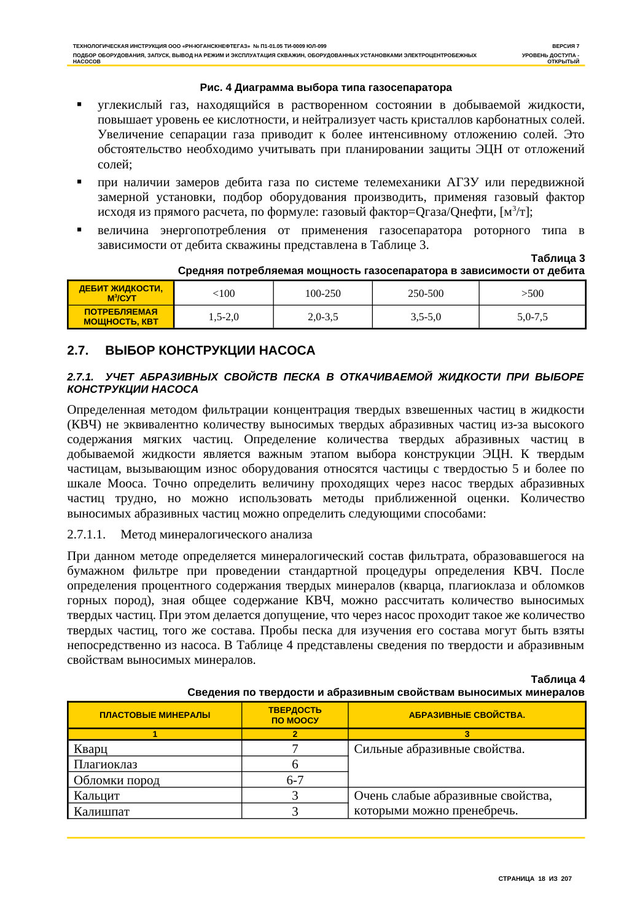
СТРАНИЦА 18 ИЗ 207
ТЕХНОЛОГИЧЕСКАЯ ИНСТРУКЦИЯ ООО «РН-ЮГАНСКНЕФТЕГАЗ» № П1-01.05 ТИ-0009 ЮЛ-099
ВЕРСИЯ 7
ПОДБОР ОБОРУДОВАНИЯ, ЗАПУСК, ВЫВОД НА РЕЖИМ И ЭКСПЛУАТАЦИЯ СКВАЖИН, ОБОРУДОВАННЫХ УСТАНОВКАМИ ЭЛЕКТРОЦЕНТРОБЕЖНЫХ
НАСОСОВ
УРОВЕНЬ ДОСТУПА -
ОТКРЫТЫЙ
Рис. 4 Диаграмма выбора типа газосепаратора
углекислый газ, находящийся в растворенном состоянии в добываемой жидкости,
повышает уровень ее кислотности, и нейтрализует часть кристаллов карбонатных солей.
Увеличение сепарации газа приводит к более интенсивному отложению солей. Это
обстоятельство необходимо учитывать при планировании защиты ЭЦН от отложений
солей;
при наличии замеров дебита газа по системе телемеханики АГЗУ или передвижной
замерной установки, подбор оборудования производить, применяя газовый фактор
исходя из прямого расчета, по формуле: газовый фактор=Qгаза/Qнефти, [м3/т];
величина энергопотребления от применения газосепаратора роторного типа в
зависимости от дебита скважины представлена в Таблице 3.
Таблица 3
Средняя потребляемая мощность газосепаратора в зависимости от дебита
ДЕБИТ ЖИДКОСТИ,
М3/СУТ
<100
100-250
250-500
>500
ПОТРЕБЛЯЕМАЯ
МОЩНОСТЬ, КВТ
1,5-2,0
2,0-3,5
3,5-5,0
5,0-7,5
2.7.
ВЫБОР КОНСТРУКЦИИ НАСОСА
2.7.1.
УЧЕТ АБРАЗИВНЫХ СВОЙСТВ ПЕСКА В ОТКАЧИВАЕМОЙ ЖИДКОСТИ ПРИ ВЫБОРЕ
КОНСТРУКЦИИ НАСОСА
Определенная методом фильтрации концентрация твердых взвешенных частиц в жидкости
(КВЧ) не эквивалентно количеству выносимых твердых абразивных частиц из-за высокого
содержания мягких частиц. Определение количества твердых абразивных частиц в
добываемой жидкости является важным этапом выбора конструкции ЭЦН. К твердым
частицам, вызывающим износ оборудования относятся частицы с твердостью 5 и более по
шкале Мооса. Точно определить величину проходящих через насос твердых абразивных
частиц трудно, но можно использовать методы приближенной оценки. Количество
выносимых абразивных частиц можно определить следующими способами:
2.7.1.1.
Метод минералогического анализа
При данном методе определяется минералогический состав фильтрата, образовавшегося на
бумажном фильтре при проведении стандартной процедуры определения КВЧ. После
определения процентного содержания твердых минералов (кварца, плагиоклаза и обломков
горных пород), зная общее содержание КВЧ, можно рассчитать количество выносимых
твердых частиц. При этом делается допущение, что через насос проходит такое же количество
твердых частиц, того же состава. Пробы песка для изучения его состава могут быть взяты
непосредственно из насоса. В Таблице 4 представлены сведения по твердости и абразивным
свойствам выносимых минералов.
Таблица 4
Сведения по твердости и абразивным свойствам выносимых минералов
ПЛАСТОВЫЕ МИНЕРАЛЫ
ТВЕРДОСТЬ
ПО МООСУ
АБРАЗИВНЫЕ СВОЙСТВА.
1
2
3
Кварц
7
Сильные абразивные свойства.
Плагиоклаз
6
Обломки пород
6-7
Кальцит
3
Очень слабые абразивные свойства,
которыми можно пренебречь.
Калишпат
3
18 / 207
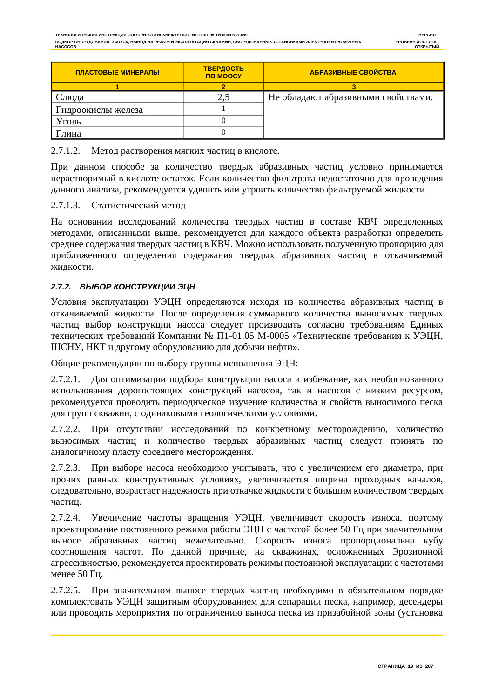
СТРАНИЦА 19 ИЗ 207
ТЕХНОЛОГИЧЕСКАЯ ИНСТРУКЦИЯ ООО «РН-ЮГАНСКНЕФТЕГАЗ» № П1-01.05 ТИ-0009 ЮЛ-099
ВЕРСИЯ 7
ПОДБОР ОБОРУДОВАНИЯ, ЗАПУСК, ВЫВОД НА РЕЖИМ И ЭКСПЛУАТАЦИЯ СКВАЖИН, ОБОРУДОВАННЫХ УСТАНОВКАМИ ЭЛЕКТРОЦЕНТРОБЕЖНЫХ
НАСОСОВ
УРОВЕНЬ ДОСТУПА -
ОТКРЫТЫЙ
ПЛАСТОВЫЕ МИНЕРАЛЫ
ТВЕРДОСТЬ
ПО МООСУ
АБРАЗИВНЫЕ СВОЙСТВА.
1
2
3
Слюда
2,5
Не обладают абразивными свойствами.
Гидроокислы железа
1
Уголь
0
Глина
0
2.7.1.2.
Метод растворения мягких частиц в кислоте.
При данном способе за количество твердых абразивных частиц условно принимается
нерастворимый в кислоте остаток. Если количество фильтрата недостаточно для проведения
данного анализа, рекомендуется удвоить или утроить количество фильтруемой жидкости.
2.7.1.3.
Статистический метод
На основании исследований количества твердых частиц в составе КВЧ определенных
методами, описанными выше, рекомендуется для каждого объекта разработки определить
среднее содержания твердых частиц в КВЧ. Можно использовать полученную пропорцию для
приближенного определения содержания твердых абразивных частиц в откачиваемой
жидкости.
2.7.2.
ВЫБОР КОНСТРУКЦИИ ЭЦН
Условия эксплуатации УЭЦН определяются исходя из количества абразивных частиц в
откачиваемой жидкости. После определения суммарного количества выносимых твердых
частиц выбор конструкции насоса следует производить согласно требованиям Единых
технических требований Компании № П1-01.05 М-0005 «Технические требования к УЭЦН,
ШСНУ, НКТ и другому оборудованию для добычи нефти».
Общие рекомендации по выбору группы исполнения ЭЦН:
2.7.2.1.
Для оптимизации подбора конструкции насоса и избежание, как необоснованного
использования дорогостоящих конструкций насосов, так и насосов с низким ресурсом,
рекомендуется проводить периодическое изучение количества и свойств выносимого песка
для групп скважин, с одинаковыми геологическими условиями.
2.7.2.2.
При отсутствии исследований по конкретному месторождению, количество
выносимых частиц и количество твердых абразивных частиц следует принять по
аналогичному пласту соседнего месторождения.
2.7.2.3.
При выборе насоса необходимо учитывать, что с увеличением его диаметра, при
прочих равных конструктивных условиях, увеличивается ширина проходных каналов,
следовательно, возрастает надежность при откачке жидкости с большим количеством твердых
частиц.
2.7.2.4.
Увеличение частоты вращения УЭЦН, увеличивает скорость износа, поэтому
проектирование постоянного режима работы ЭЦН с частотой более 50 Гц при значительном
выносе абразивных частиц нежелательно. Скорость износа пропорциональна кубу
соотношения частот. По данной причине, на скважинах, осложненных Эрозионной
агрессивностью, рекомендуется проектировать режимы постоянной эксплуатации с частотами
менее 50 Гц.
2.7.2.5.
При значительном выносе твердых частиц необходимо в обязательном порядке
комплектовать УЭЦН защитным оборудованием для сепарации песка, например, десендеры
или проводить мероприятия по ограничению выноса песка из призабойной зоны (установка
19 / 207
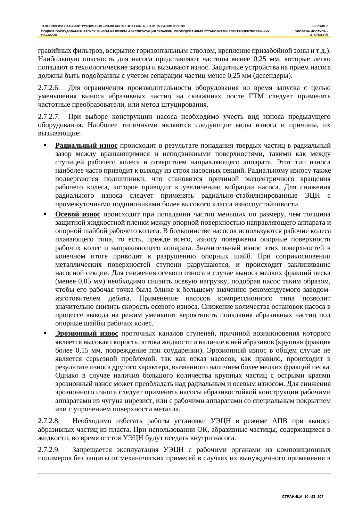
СТРАНИЦА 20 ИЗ 207
ТЕХНОЛОГИЧЕСКАЯ ИНСТРУКЦИЯ ООО «РН-ЮГАНСКНЕФТЕГАЗ» № П1-01.05 ТИ-0009 ЮЛ-099
ВЕРСИЯ 7
ПОДБОР ОБОРУДОВАНИЯ, ЗАПУСК, ВЫВОД НА РЕЖИМ И ЭКСПЛУАТАЦИЯ СКВАЖИН, ОБОРУДОВАННЫХ УСТАНОВКАМИ ЭЛЕКТРОЦЕНТРОБЕЖНЫХ
НАСОСОВ
УРОВЕНЬ ДОСТУПА -
ОТКРЫТЫЙ
гравийных фильтров, вскрытие горизонтальным стволом, крепление призабойной зоны и т.д.).
Наибольшую опасность для насоса представляют частицы менее 0,25 мм, которые легко
попадают в технологические зазоры и вызывают износ. Защитные устройства на прием насоса
должны быть подобранны с учетом сепарации частиц менее 0,25 мм (десендеры).
2.7.2.6.
Для ограничения производительности оборудования во время запуска с целью
уменьшения выноса абразивных частиц на скважинах после ГТМ следует применять
частотные преобразователи, или метод штуцирования.
2.7.2.7.
При выборе конструкции насоса необходимо учесть вид износа предыдущего
оборудования. Наиболее типичными являются следующие виды износа и причины, их
вызывающие:
Радиальный износ
происходит в результате попадания твердых частиц в радиальный
зазор между вращающимися и неподвижными поверхностями, такими как между
ступицей рабочего колеса и отверстием направляющего аппарата. Этот тип износа
наиболее часто приводит к выходу из строя насосных секций. Радиальному износу также
подвергаются подшипники, что становится причиной эксцентричного вращения
рабочего колеса, которое приводит к увеличению вибрации насоса. Для снижения
радиального износа следует применять радиально-стабилизированные ЭЦН с
промежуточными подшипниками более высокого класса износоустойчивости.
Осевой износ
происходит при попадании частиц меньших по размеру, чем толщина
защитной жидкостной пленки между опорной поверхностью направляющего аппарата и
опорной шайбой рабочего колеса. В большинстве насосов используются рабочие колеса
плавающего типа, то есть, прежде всего, износу повержены опорные поверхности
рабочих колес и направляющего аппарата. Значительный износ этих поверхностей в
конечном итоге приводит к разрушению опорных шайб. При соприкосновении
металлических поверхностей ступени разрушаются, и происходит заклинивание
насосной секции. Для снижения осевого износа в случае выноса мелких фракций песка
(менее 0,05 мм) необходимо снизить осевую нагрузку, подобрав насос таким образом,
чтобы его рабочая точка была ближе к большему значению рекомендуемого заводом-
изготовителем дебита. Применение насосов компрессионного типа позволит
значительно снизить скорость осевого износа. Снижение количества остановок насоса в
процессе вывода на режим уменьшит вероятность попадания абразивных частиц под
опорные шайбы рабочих колес.
Эрозионный износ
проточных каналов ступеней, причиной возникновения которого
является высокая скорость потока жидкости и наличие в ней абразивов (крупная фракция
более 0,15 мм, повреждение при соударении). Эрозионный износ в общем случае не
является серьезной проблемой, так как отказ насосов, как правило, происходит в
результате износа другого характера, вызванного наличием более мелких фракций песка.
Однако в случае наличия большого количества крупных частиц с острыми краями
эрозионный износ может преобладать над радиальным и осевым износом. Для снижения
эрозионного износа следует применять насосы абразивостойкой конструкции рабочими
аппаратами из чугуна нирезист, или с рабочими аппаратами со специальным покрытием
или с упрочением поверхности металла.
2.7.2.8.
Необходимо избегать работы установки УЭЦН в режиме АПВ при выносе
абразивных частиц из пласта. При использовании ОК, абразивные частицы, содержащиеся в
жидкости, во время отстоя УЭЦН будут оседать внутри насоса.
2.7.2.9.
Запрещается эксплуатация УЭЦН с рабочими органами из композиционных
полимеров без защиты от механических примесей в случаях их вынужденного применения в
20 / 207
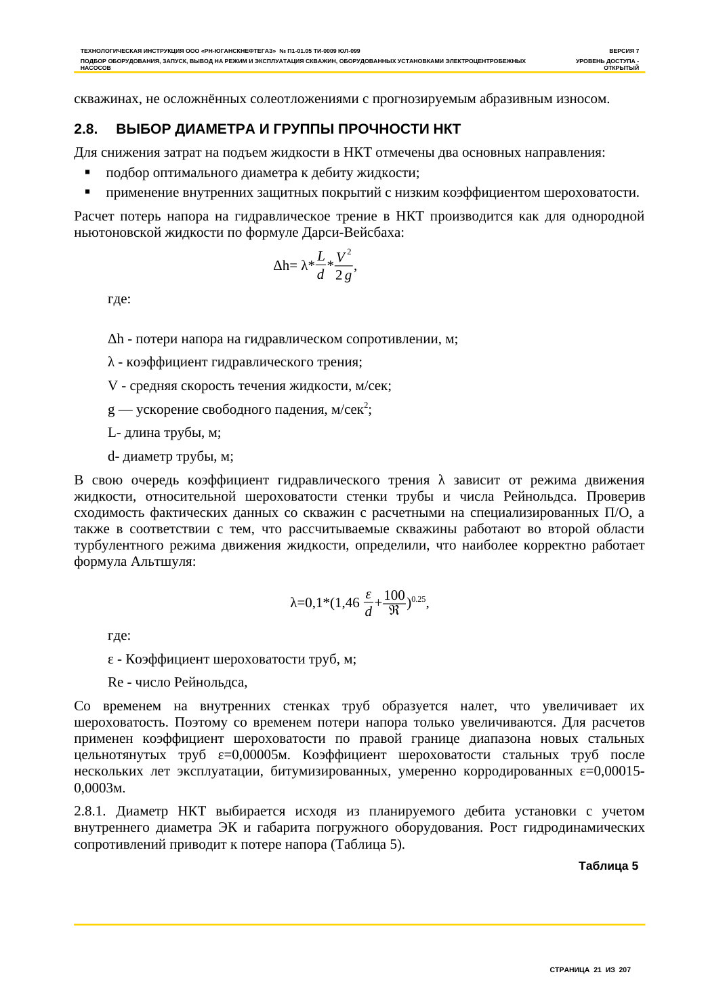
СТРАНИЦА 21 ИЗ 207
ТЕХНОЛОГИЧЕСКАЯ ИНСТРУКЦИЯ ООО «РН-ЮГАНСКНЕФТЕГАЗ» № П1-01.05 ТИ-0009 ЮЛ-099
ВЕРСИЯ 7
ПОДБОР ОБОРУДОВАНИЯ, ЗАПУСК, ВЫВОД НА РЕЖИМ И ЭКСПЛУАТАЦИЯ СКВАЖИН, ОБОРУДОВАННЫХ УСТАНОВКАМИ ЭЛЕКТРОЦЕНТРОБЕЖНЫХ
НАСОСОВ
УРОВЕНЬ ДОСТУПА -
ОТКРЫТЫЙ
скважинах, не осложнённых солеотложениями с прогнозируемым абразивным износом.
2.8.
ВЫБОР ДИАМЕТРА И ГРУППЫ ПРОЧНОСТИ НКТ
Для снижения затрат на подъем жидкости в НКТ отмечены два основных направления:
подбор оптимального диаметра к дебиту жидкости;
применение внутренних защитных покрытий с низким коэффициентом шероховатости.
Расчет потерь напора на гидравлическое трение в НКТ производится как для однородной
ньютоновской жидкости по формуле Дарси-Вейсбаха:
Δh= λ* L
d * V
2
2 g,
где:
Δh - потери напора на гидравлическом сопротивлении, м;
λ - коэффициент гидравлического трения;
V - средняя скорость течения жидкости, м/сек;
g — ускорение свободного падения, м/сек2;
L- длина трубы, м;
d- диаметр трубы, м;
В свою очередь коэффициент гидравлического трения λ зависит от режима движения
жидкости, относительной шероховатости стенки трубы и числа Рейнольдса. Проверив
сходимость фактических данных со скважин с расчетными на специализированных П/О, а
также в соответствии с тем, что рассчитываемые скважины работают во второй области
турбулентного режима движения жидкости, определили, что наиболее корректно работает
формула Альтшуля:
λ=0,1*(1,46 ε
d +100
ℜ)0.25,
где:
ε - Коэффициент шероховатости труб, м;
Re - число Рейнольдса,
Со временем на внутренних стенках труб образуется налет, что увеличивает их
шероховатость. Поэтому со временем потери напора только увеличиваются. Для расчетов
применен коэффициент шероховатости по правой границе диапазона новых стальных
цельнотянутых труб ε=0,00005м. Коэффициент шероховатости стальных труб после
нескольких лет эксплуатации, битумизированных, умеренно корродированных ε=0,00015-
0,0003м.
2.8.1. Диаметр НКТ выбирается исходя из планируемого дебита установки с учетом
внутреннего диаметра ЭК и габарита погружного оборудования. Рост гидродинамических
сопротивлений приводит к потере напора (Таблица 5).
Таблица 5
21 / 207
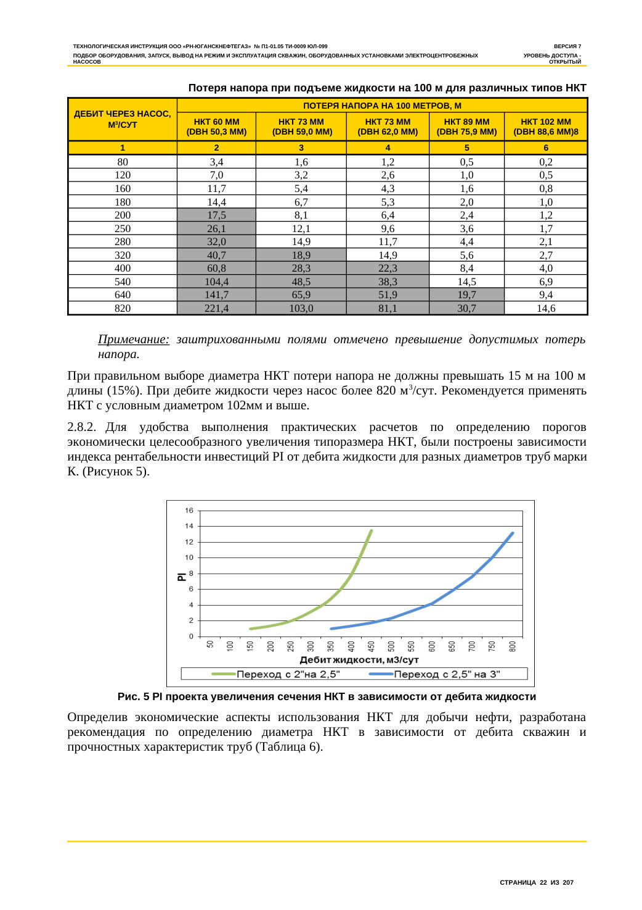
СТРАНИЦА 22 ИЗ 207
ТЕХНОЛОГИЧЕСКАЯ ИНСТРУКЦИЯ ООО «РН-ЮГАНСКНЕФТЕГАЗ» № П1-01.05 ТИ-0009 ЮЛ-099
ВЕРСИЯ 7
ПОДБОР ОБОРУДОВАНИЯ, ЗАПУСК, ВЫВОД НА РЕЖИМ И ЭКСПЛУАТАЦИЯ СКВАЖИН, ОБОРУДОВАННЫХ УСТАНОВКАМИ ЭЛЕКТРОЦЕНТРОБЕЖНЫХ
НАСОСОВ
УРОВЕНЬ ДОСТУПА -
ОТКРЫТЫЙ
Потеря напора при подъеме жидкости на 100 м для различных типов НКТ
ДЕБИТ ЧЕРЕЗ НАСОС,
М3/СУТ
ПОТЕРЯ НАПОРА НА 100 МЕТРОВ, М
НКТ 60 ММ
(DВН 50,3 ММ)
НКТ 73 ММ
(DВН 59,0 ММ)
НКТ 73 ММ
(DВН 62,0 ММ)
НКТ 89 ММ
(DВН 75,9 ММ)
НКТ 102 ММ
(DВН 88,6 ММ)8
1
2
3
4
5
6
80
3,4
1,6
1,2
0,5
0,2
120
7,0
3,2
2,6
1,0
0,5
160
11,7
5,4
4,3
1,6
0,8
180
14,4
6,7
5,3
2,0
1,0
200
17,5
8,1
6,4
2,4
1,2
250
26,1
12,1
9,6
3,6
1,7
280
32,0
14,9
11,7
4,4
2,1
320
40,7
18,9
14,9
5,6
2,7
400
60,8
28,3
22,3
8,4
4,0
540
104,4
48,5
38,3
14,5
6,9
640
141,7
65,9
51,9
19,7
9,4
820
221,4
103,0
81,1
30,7
14,6
Примечание: заштрихованными полями отмечено превышение допустимых потерь
напора.
При правильном выборе диаметра НКТ потери напора не должны превышать 15 м на 100 м
длины (15%). При дебите жидкости через насос более 820 м3/сут. Рекомендуется применять
НКТ с условным диаметром 102мм и выше.
2.8.2. Для удобства выполнения практических расчетов по определению порогов
экономически целесообразного увеличения типоразмера НКТ, были построены зависимости
индекса рентабельности инвестиций PI от дебита жидкости для разных диаметров труб марки
К. (Рисунок 5).
Рис. 5 PI проекта увеличения сечения НКТ в зависимости от дебита жидкости
Определив экономические аспекты использования НКТ для добычи нефти, разработана
рекомендация по определению диаметра НКТ в зависимости от дебита скважин и
прочностных характеристик труб (Таблица 6).
22 / 207
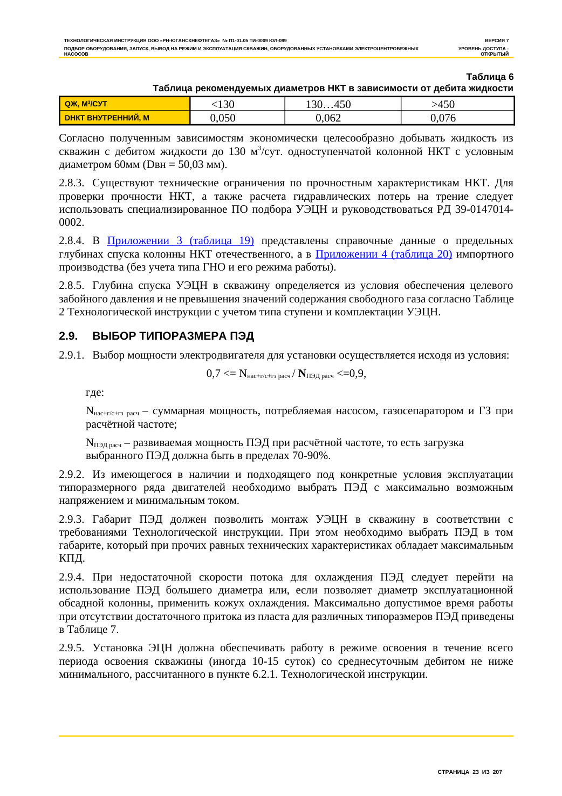
СТРАНИЦА 23 ИЗ 207
ТЕХНОЛОГИЧЕСКАЯ ИНСТРУКЦИЯ ООО «РН-ЮГАНСКНЕФТЕГАЗ» № П1-01.05 ТИ-0009 ЮЛ-099
ВЕРСИЯ 7
ПОДБОР ОБОРУДОВАНИЯ, ЗАПУСК, ВЫВОД НА РЕЖИМ И ЭКСПЛУАТАЦИЯ СКВАЖИН, ОБОРУДОВАННЫХ УСТАНОВКАМИ ЭЛЕКТРОЦЕНТРОБЕЖНЫХ
НАСОСОВ
УРОВЕНЬ ДОСТУПА -
ОТКРЫТЫЙ
Таблица 6
Таблица рекомендуемых диаметров НКТ в зависимости от дебита жидкости
QЖ, М3/СУТ
<130
130…450
>450
DНКТ ВНУТРЕННИЙ, М
0,050
0,062
0,076
Согласно полученным зависимостям экономически целесообразно добывать жидкость из
скважин с дебитом жидкости до 130 м3/сут. одноступенчатой колонной НКТ с условным
диаметром 60мм (Dвн = 50,03 мм).
2.8.3. Существуют технические ограничения по прочностным характеристикам НКТ. Для
проверки прочности НКТ, а также расчета гидравлических потерь на трение следует
использовать специализированное ПО подбора УЭЦН и руководствоваться РД 39-0147014-
0002.
2.8.4. В Приложении 3
(таблица 19)
представлены справочные данные о предельных
глубинах спуска колонны НКТ отечественного, а в Приложении 4
(таблица 20)
импортного
производства (без учета типа ГНО и его режима работы).
2.8.5. Глубина спуска УЭЦН в скважину определяется из условия обеспечения целевого
забойного давления и не превышения значений содержания свободного газа согласно Таблице
2 Технологической инструкции с учетом типа ступени и комплектации УЭЦН.
2.9.
ВЫБОР ТИПОРАЗМЕРА ПЭД
2.9.1. Выбор мощности электродвигателя для установки осуществляется исходя из условия:
0,7 <= Nнас+г/c+гз расч / NПЭД расч <=0,9,
где:
Nнас+г/c+гз расч – суммарная мощность, потребляемая насосом, газосепаратором и ГЗ при
расчётной частоте;
NПЭД расч – развиваемая мощность ПЭД при расчётной частоте, то есть загрузка
выбранного ПЭД должна быть в пределах 70-90%.
2.9.2. Из имеющегося в наличии и подходящего под конкретные условия эксплуатации
типоразмерного ряда двигателей необходимо выбрать ПЭД с максимально возможным
напряжением и минимальным током.
2.9.3. Габарит ПЭД должен позволить монтаж УЭЦН в скважину в соответствии с
требованиями Технологической инструкции. При этом необходимо выбрать ПЭД в том
габарите, который при прочих равных технических характеристиках обладает максимальным
КПД.
2.9.4. При недостаточной скорости потока для охлаждения ПЭД следует перейти на
использование ПЭД большего диаметра или, если позволяет диаметр эксплуатационной
обсадной колонны, применить кожух охлаждения. Максимально допустимое время работы
при отсутствии достаточного притока из пласта для различных типоразмеров ПЭД приведены
в Таблице 7.
2.9.5. Установка ЭЦН должна обеспечивать работу в режиме освоения в течение всего
периода освоения скважины (иногда 10-15 суток) со среднесуточным дебитом не ниже
минимального, рассчитанного в пункте 6.2.1. Технологической инструкции.
23 / 207
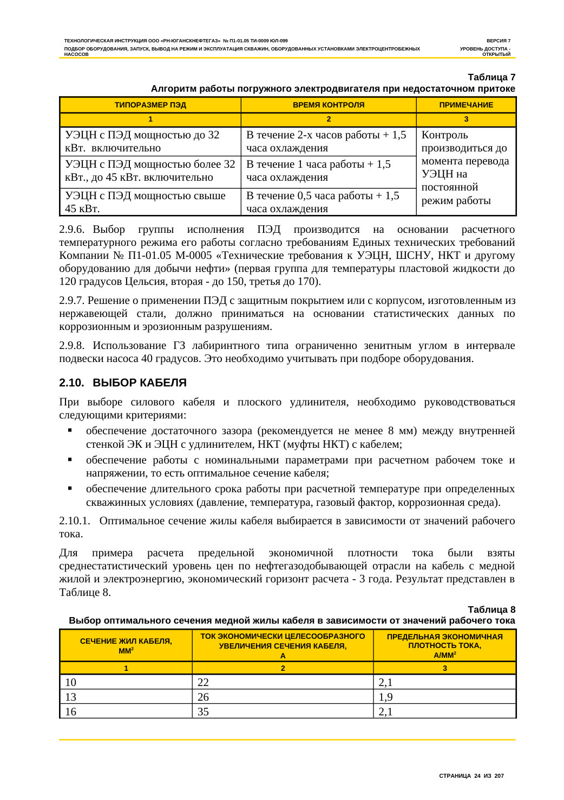
СТРАНИЦА 24 ИЗ 207
ТЕХНОЛОГИЧЕСКАЯ ИНСТРУКЦИЯ ООО «РН-ЮГАНСКНЕФТЕГАЗ» № П1-01.05 ТИ-0009 ЮЛ-099
ВЕРСИЯ 7
ПОДБОР ОБОРУДОВАНИЯ, ЗАПУСК, ВЫВОД НА РЕЖИМ И ЭКСПЛУАТАЦИЯ СКВАЖИН, ОБОРУДОВАННЫХ УСТАНОВКАМИ ЭЛЕКТРОЦЕНТРОБЕЖНЫХ
НАСОСОВ
УРОВЕНЬ ДОСТУПА -
ОТКРЫТЫЙ
Таблица 7
Алгоритм работы погружного электродвигателя при недостаточном притоке
ТИПОРАЗМЕР ПЭД
ВРЕМЯ КОНТРОЛЯ
ПРИМЕЧАНИЕ
1
2
3
УЭЦН с ПЭД мощностью до 32
кВт. включительно
В течение 2-х часов работы + 1,5
часа охлаждения
Контроль
производиться до
момента перевода
УЭЦН на
постоянной
режим работы
УЭЦН с ПЭД мощностью более 32
кВт., до 45 кВт. включительно
В течение 1 часа работы + 1,5
часа охлаждения
УЭЦН с ПЭД мощностью свыше
45 кВт.
В течение 0,5 часа работы + 1,5
часа охлаждения
2.9.6. Выбор группы исполнения ПЭД производится на основании расчетного
температурного режима его работы согласно требованиям Единых технических требований
Компании № П1-01.05 М-0005 «Технические требования к УЭЦН, ШСНУ, НКТ и другому
оборудованию для добычи нефти» (первая группа для температуры пластовой жидкости до
120 градусов Цельсия, вторая - до 150, третья до 170).
2.9.7. Решение о применении ПЭД с защитным покрытием или с корпусом, изготовленным из
нержавеющей стали, должно приниматься на основании статистических данных по
коррозионным и эрозионным разрушениям.
2.9.8. Использование ГЗ лабиринтного типа ограниченно зенитным углом в интервале
подвески насоса 40 градусов. Это необходимо учитывать при подборе оборудования.
2.10. ВЫБОР КАБЕЛЯ
При выборе силового кабеля и плоского удлинителя, необходимо руководствоваться
следующими критериями:
обеспечение достаточного зазора (рекомендуется не менее 8 мм) между внутренней
стенкой ЭК и ЭЦН с удлинителем, НКТ (муфты НКТ) с кабелем;
обеспечение работы с номинальными параметрами при расчетном рабочем токе и
напряжении, то есть оптимальное сечение кабеля;
обеспечение длительного срока работы при расчетной температуре при определенных
скважинных условиях (давление, температура, газовый фактор, коррозионная среда).
2.10.1. Оптимальное сечение жилы кабеля выбирается в зависимости от значений рабочего
тока.
Для примера расчета предельной экономичной плотности тока были взяты
среднестатистический уровень цен по нефтегазодобывающей отрасли на кабель с медной
жилой и электроэнергию, экономический горизонт расчета - 3 года. Результат представлен в
Таблице 8.
Таблица 8
Выбор оптимального сечения медной жилы кабеля в зависимости от значений рабочего тока
СЕЧЕНИЕ ЖИЛ КАБЕЛЯ,
ММ2
ТОК ЭКОНОМИЧЕСКИ ЦЕЛЕСООБРАЗНОГО
УВЕЛИЧЕНИЯ СЕЧЕНИЯ КАБЕЛЯ,
А
ПРЕДЕЛЬНАЯ ЭКОНОМИЧНАЯ
ПЛОТНОСТЬ ТОКА,
А/ММ2
1
2
3
10
22
2,1
13
26
1,9
16
35
2,1
24 / 207
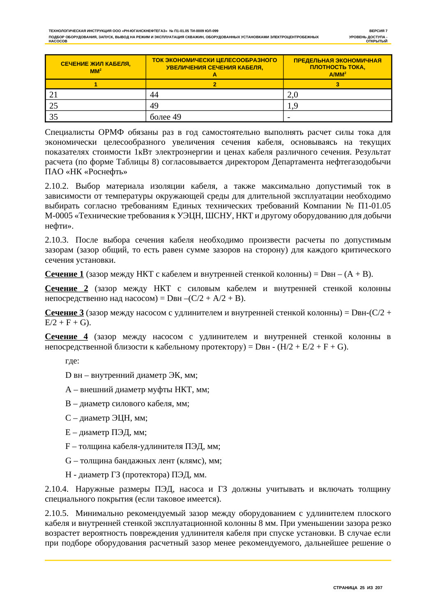
СТРАНИЦА 25 ИЗ 207
ТЕХНОЛОГИЧЕСКАЯ ИНСТРУКЦИЯ ООО «РН-ЮГАНСКНЕФТЕГАЗ» № П1-01.05 ТИ-0009 ЮЛ-099
ВЕРСИЯ 7
ПОДБОР ОБОРУДОВАНИЯ, ЗАПУСК, ВЫВОД НА РЕЖИМ И ЭКСПЛУАТАЦИЯ СКВАЖИН, ОБОРУДОВАННЫХ УСТАНОВКАМИ ЭЛЕКТРОЦЕНТРОБЕЖНЫХ
НАСОСОВ
УРОВЕНЬ ДОСТУПА -
ОТКРЫТЫЙ
СЕЧЕНИЕ ЖИЛ КАБЕЛЯ,
ММ2
ТОК ЭКОНОМИЧЕСКИ ЦЕЛЕСООБРАЗНОГО
УВЕЛИЧЕНИЯ СЕЧЕНИЯ КАБЕЛЯ,
А
ПРЕДЕЛЬНАЯ ЭКОНОМИЧНАЯ
ПЛОТНОСТЬ ТОКА,
А/ММ2
1
2
3
21
44
2,0
25
49
1,9
35
более 49
-
Специалисты ОРМФ обязаны раз в год самостоятельно выполнять расчет силы тока для
экономически целесообразного увеличения сечения кабеля, основываясь на текущих
показателях стоимости 1кВт электроэнергии и ценах кабеля различного сечения. Результат
расчета (по форме Таблицы 8) согласовывается директором Департамента нефтегазодобычи
ПАО «НК «Роснефть»
2.10.2. Выбор материала изоляции кабеля, а также максимально допустимый ток в
зависимости от температуры окружающей среды для длительной эксплуатации необходимо
выбирать согласно требованиям Единых технических требований Компании № П1-01.05
М-0005 «Технические требования к УЭЦН, ШСНУ, НКТ и другому оборудованию для добычи
нефти».
2.10.3. После выбора сечения кабеля необходимо произвести расчеты по допустимым
зазорам (зазор общий, то есть равен сумме зазоров на сторону) для каждого критического
сечения установки.
Сечение 1 (зазор между НКТ с кабелем и внутренней стенкой колонны) = Dвн – (A + B).
Сечение 2 (зазор между НКТ с силовым кабелем и внутренней стенкой колонны
непосредственно над насосом) = Dвн –(C/2 + A/2 + B).
Сечение 3 (зазор между насосом с удлинителем и внутренней стенкой колонны) = Dвн-(C/2 +
E/2 + F + G).
Сечение 4 (зазор между насосом с удлинителем и внутренней стенкой колонны в
непосредственной близости к кабельному протектору) = Dвн - (H/2 + E/2 + F + G).
где:
D вн – внутренний диаметр ЭК, мм;
А – внешний диаметр муфты НКТ, мм;
B – диаметр силового кабеля, мм;
C – диаметр ЭЦН, мм;
E – диаметр ПЭД, мм;
F – толщина кабеля-удлинителя ПЭД, мм;
G – толщина бандажных лент (клямс), мм;
H - диаметр ГЗ (протектора) ПЭД, мм.
2.10.4. Наружные размеры ПЭД, насоса и ГЗ должны учитывать и включать толщину
специального покрытия (если таковое имеется).
2.10.5. Минимально рекомендуемый зазор между оборудованием с удлинителем плоского
кабеля и внутренней стенкой эксплуатационной колонны 8 мм. При уменьшении зазора резко
возрастет вероятность повреждения удлинителя кабеля при спуске установки. В случае если
при подборе оборудования расчетный зазор менее рекомендуемого, дальнейшее решение о
25 / 207
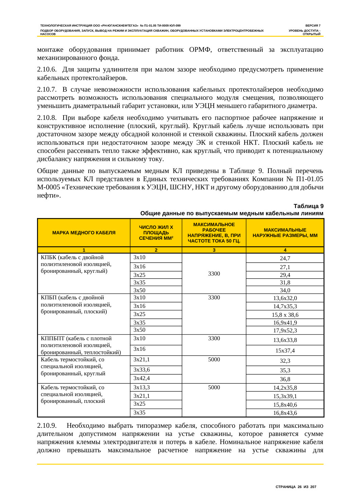
СТРАНИЦА 26 ИЗ 207
ТЕХНОЛОГИЧЕСКАЯ ИНСТРУКЦИЯ ООО «РН-ЮГАНСКНЕФТЕГАЗ» № П1-01.05 ТИ-0009 ЮЛ-099
ВЕРСИЯ 7
ПОДБОР ОБОРУДОВАНИЯ, ЗАПУСК, ВЫВОД НА РЕЖИМ И ЭКСПЛУАТАЦИЯ СКВАЖИН, ОБОРУДОВАННЫХ УСТАНОВКАМИ ЭЛЕКТРОЦЕНТРОБЕЖНЫХ
НАСОСОВ
УРОВЕНЬ ДОСТУПА -
ОТКРЫТЫЙ
монтаже оборудования принимает работник ОРМФ, ответственный за эксплуатацию
механизированного фонда.
2.10.6. Для защиты удлинителя при малом зазоре необходимо предусмотреть применение
кабельных протектолайзеров.
2.10.7. В случае невозможности использования кабельных протектолайзеров необходимо
рассмотреть возможность использования специального модуля смещения, позволяющего
уменьшить диаметральный габарит установки, или УЭЦН меньшего габаритного диаметра.
2.10.8. При выборе кабеля необходимо учитывать его паспортное рабочее напряжение и
конструктивное исполнение (плоский, круглый). Круглый кабель лучше использовать при
достаточном зазоре между обсадной колонной и стенкой скважины. Плоский кабель должен
использоваться при недостаточном зазоре между ЭК и стенкой НКТ. Плоский кабель не
способен рассеивать тепло также эффективно, как круглый, что приводит к потенциальному
дисбалансу напряжения и сильному току.
Общие данные по выпускаемым медным КЛ приведены в Таблице 9. Полный перечень
используемых КЛ представлен в Единых технических требованиях Компании № П1-01.05
М-0005 «Технические требования к УЭЦН, ШСНУ, НКТ и другому оборудованию для добычи
нефти».
Таблица 9
Общие данные по выпускаемым медным кабельным линиям
МАРКА МЕДНОГО КАБЕЛЯ
ЧИСЛО ЖИЛ Х
ПЛОЩАДЬ
СЕЧЕНИЯ ММ2
МАКСИМАЛЬНОЕ
РАБОЧЕЕ
НАПРЯЖЕНИЕ, В, ПРИ
ЧАСТОТЕ ТОКА 50 ГЦ.
МАКСИМАЛЬНЫЕ
НАРУЖНЫЕ РАЗМЕРЫ, ММ
1
2
3
4
КПБК (кабель с двойной
полиэтиленовой изоляцией,
бронированный, круглый)
3х10
3300
24,7
3х16
27,1
3х25
29,4
3х35
31,8
3х50
34,0
КПБП (кабель с двойной
полиэтиленовой изоляцией,
бронированный, плоский)
3х10
3300
13,6х32,0
3х16
14,7х35,3
3х25
15,8 х 38,6
3х35
16,9х41,9
3х50
17,9х52,3
КППБПТ (кабель с плотной
полиэтиленовой изоляцией,
бронированный, теплостойкий)
3х10
3300
13,6х33,8
3х16
15х37,4
Кабель термостойкий, со
специальной изоляцией,
бронированный, круглый
3х21,1
5000
32,3
3х33,6
35,3
3х42,4
36,8
Кабель термостойкий, со
специальной изоляцией,
бронированный, плоский
3х13,3
5000
14,2х35,8
3х21,1
15,3х39,1
3х25
15,8х40,6
3х35
16,8х43,6
2.10.9.
Необходимо выбрать типоразмер кабеля, способного работать при максимально
длительном допустимом напряжении на устье скважины, которое равняется сумме
напряжения клеммы электродвигателя и потерь в кабеле. Номинальное напряжение кабеля
должно превышать максимальное расчетное напряжение на устье скважины для
26 / 207
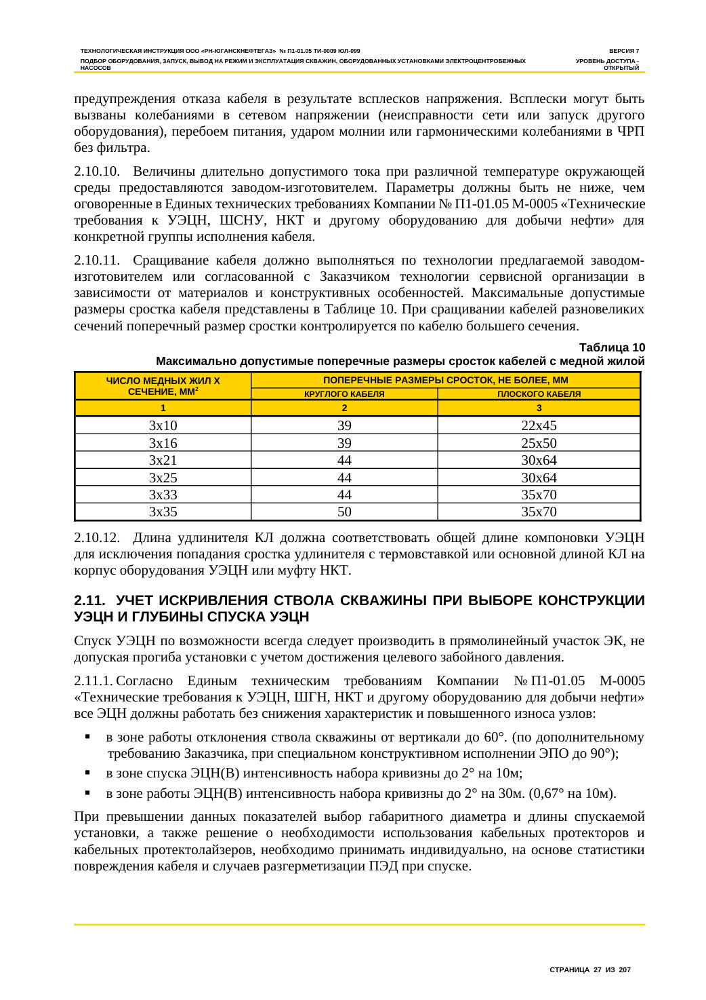
СТРАНИЦА 27 ИЗ 207
ТЕХНОЛОГИЧЕСКАЯ ИНСТРУКЦИЯ ООО «РН-ЮГАНСКНЕФТЕГАЗ» № П1-01.05 ТИ-0009 ЮЛ-099
ВЕРСИЯ 7
ПОДБОР ОБОРУДОВАНИЯ, ЗАПУСК, ВЫВОД НА РЕЖИМ И ЭКСПЛУАТАЦИЯ СКВАЖИН, ОБОРУДОВАННЫХ УСТАНОВКАМИ ЭЛЕКТРОЦЕНТРОБЕЖНЫХ
НАСОСОВ
УРОВЕНЬ ДОСТУПА -
ОТКРЫТЫЙ
предупреждения отказа кабеля в результате всплесков напряжения. Всплески могут быть
вызваны колебаниями в сетевом напряжении (неисправности сети или запуск другого
оборудования), перебоем питания, ударом молнии или гармоническими колебаниями в ЧРП
без фильтра.
2.10.10.
Величины длительно допустимого тока при различной температуре окружающей
среды предоставляются заводом-изготовителем. Параметры должны быть не ниже, чем
оговоренные в Единых технических требованиях Компании № П1-01.05 М-0005 «Технические
требования к УЭЦН, ШСНУ, НКТ и другому оборудованию для добычи нефти» для
конкретной группы исполнения кабеля.
2.10.11.
Сращивание кабеля должно выполняться по технологии предлагаемой заводом-
изготовителем или согласованной с Заказчиком технологии сервисной организации в
зависимости от материалов и конструктивных особенностей. Максимальные допустимые
размеры сростка кабеля представлены в Таблице 10. При сращивании кабелей разновеликих
сечений поперечный размер сростки контролируется по кабелю большего сечения.
Таблица 10
Максимально допустимые поперечные размеры сросток кабелей с медной жилой
ЧИСЛО МЕДНЫХ ЖИЛ Х
СЕЧЕНИЕ, ММ2
ПОПЕРЕЧНЫЕ РАЗМЕРЫ СРОСТОК, НЕ БОЛЕЕ, ММ
КРУГЛОГО КАБЕЛЯ
ПЛОСКОГО КАБЕЛЯ
1
2
3
3х10
39
22х45
3х16
39
25х50
3х21
44
30х64
3х25
44
30х64
3х33
44
35х70
3х35
50
35х70
2.10.12.
Длина удлинителя КЛ должна соответствовать общей длине компоновки УЭЦН
для исключения попадания сростка удлинителя с термовставкой или основной длиной КЛ на
корпус оборудования УЭЦН или муфту НКТ.
2.11. УЧЕТ ИСКРИВЛЕНИЯ СТВОЛА СКВАЖИНЫ ПРИ ВЫБОРЕ КОНСТРУКЦИИ
УЭЦН И ГЛУБИНЫ СПУСКА УЭЦН
Спуск УЭЦН по возможности всегда следует производить в прямолинейный участок ЭК, не
допуская прогиба установки с учетом достижения целевого забойного давления.
2.11.1. Согласно Единым техническим требованиям Компании № П1-01.05 М-0005
«Технические требования к УЭЦН, ШГН, НКТ и другому оборудованию для добычи нефти»
все ЭЦН должны работать без снижения характеристик и повышенного износа узлов:
в зоне работы отклонения ствола скважины от вертикали до 60°. (по дополнительному
требованию Заказчика, при специальном конструктивном исполнении ЭПО до 90°);
в зоне спуска ЭЦН(В) интенсивность набора кривизны до 2° на 10м;
в зоне работы ЭЦН(В) интенсивность набора кривизны до 2° на 30м. (0,67° на 10м).
При превышении данных показателей выбор габаритного диаметра и длины спускаемой
установки, а также решение о необходимости использования кабельных протекторов и
кабельных протектолайзеров, необходимо принимать индивидуально, на основе статистики
повреждения кабеля и случаев разгерметизации ПЭД при спуске.
27 / 207
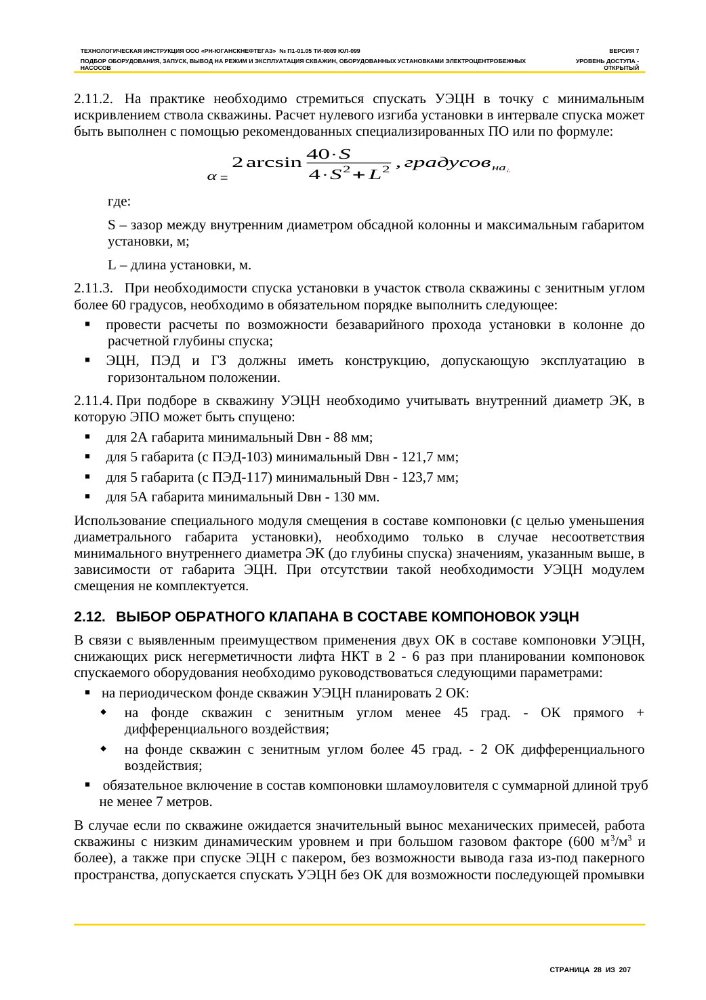
СТРАНИЦА 28 ИЗ 207
ТЕХНОЛОГИЧЕСКАЯ ИНСТРУКЦИЯ ООО «РН-ЮГАНСКНЕФТЕГАЗ» № П1-01.05 ТИ-0009 ЮЛ-099
ВЕРСИЯ 7
ПОДБОР ОБОРУДОВАНИЯ, ЗАПУСК, ВЫВОД НА РЕЖИМ И ЭКСПЛУАТАЦИЯ СКВАЖИН, ОБОРУДОВАННЫХ УСТАНОВКАМИ ЭЛЕКТРОЦЕНТРОБЕЖНЫХ
НАСОСОВ
УРОВЕНЬ ДОСТУПА -
ОТКРЫТЫЙ
2.11.2. На практике необходимо стремиться спускать УЭЦН в точку с минимальным
искривлением ствола скважины. Расчет нулевого изгиба установки в интервале спуска может
быть выполнен с помощью рекомендованных специализированных ПО или по формуле:
α =
2arcsin 40⋅S
4⋅S2+ L2 , градусовна¿
где:
S – зазор между внутренним диаметром обсадной колонны и максимальным габаритом
установки, м;
L – длина установки, м.
2.11.3. При необходимости спуска установки в участок ствола скважины с зенитным углом
более 60 градусов, необходимо в обязательном порядке выполнить следующее:
провести расчеты по возможности безаварийного прохода установки в колонне до
расчетной глубины спуска;
ЭЦН, ПЭД и ГЗ должны иметь конструкцию, допускающую эксплуатацию в
горизонтальном положении.
2.11.4. При подборе в скважину УЭЦН необходимо учитывать внутренний диаметр ЭК, в
которую ЭПО может быть спущено:
для 2А габарита минимальный Dвн - 88 мм;
для 5 габарита (с ПЭД-103) минимальный Dвн - 121,7 мм;
для 5 габарита (с ПЭД-117) минимальный Dвн - 123,7 мм;
для 5А габарита минимальный Dвн - 130 мм.
Использование специального модуля смещения в составе компоновки (с целью уменьшения
диаметрального габарита установки), необходимо только в случае несоответствия
минимального внутреннего диаметра ЭК (до глубины спуска) значениям, указанным выше, в
зависимости от габарита ЭЦН. При отсутствии такой необходимости УЭЦН модулем
смещения не комплектуется.
2.12. ВЫБОР ОБРАТНОГО КЛАПАНА В СОСТАВЕ КОМПОНОВОК УЭЦН
В связи с выявленным преимуществом применения двух ОК в составе компоновки УЭЦН,
снижающих риск негерметичности лифта НКТ в 2 - 6 раз при планировании компоновок
спускаемого оборудования необходимо руководствоваться следующими параметрами:
на периодическом фонде скважин УЭЦН планировать 2 ОК:
на фонде скважин с зенитным углом менее 45 град. - ОК прямого +
дифференциального воздействия;
на фонде скважин с зенитным углом более 45 град. - 2 ОК дифференциального
воздействия;
обязательное включение в состав компоновки шламоуловителя с суммарной длиной труб
не менее 7 метров.
В случае если по скважине ожидается значительный вынос механических примесей, работа
скважины с низким динамическим уровнем и при большом газовом факторе (600 м3/м3 и
более), а также при спуске ЭЦН с пакером, без возможности вывода газа из-под пакерного
пространства, допускается спускать УЭЦН без ОК для возможности последующей промывки
28 / 207
СТРАНИЦА 29 ИЗ 207
ТЕХНОЛОГИЧЕСКАЯ ИНСТРУКЦИЯ ООО «РН-ЮГАНСКНЕФТЕГАЗ» № П1-01.05 ТИ-0009 ЮЛ-099
ВЕРСИЯ 7
ПОДБОР ОБОРУДОВАНИЯ, ЗАПУСК, ВЫВОД НА РЕЖИМ И ЭКСПЛУАТАЦИЯ СКВАЖИН, ОБОРУДОВАННЫХ УСТАНОВКАМИ ЭЛЕКТРОЦЕНТРОБЕЖНЫХ
НАСОСОВ
УРОВЕНЬ ДОСТУПА -
ОТКРЫТЫЙ
насоса через НКТ (данное решение принимает Начальник отдела по работе с
механизированным фондом – главный технолог, учитывая возможные осложнения при ВНР).
29 / 207
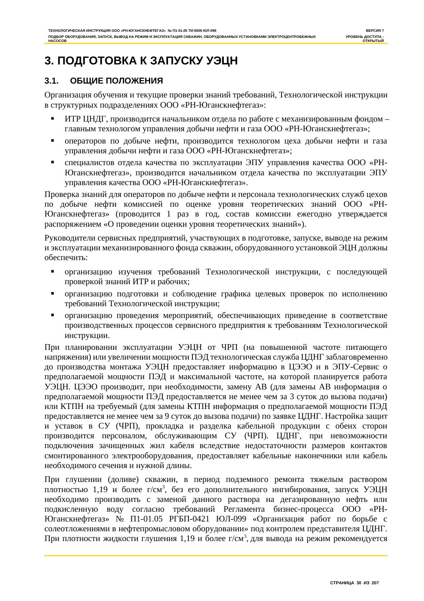
СТРАНИЦА 30 ИЗ 207
ТЕХНОЛОГИЧЕСКАЯ ИНСТРУКЦИЯ ООО «РН-ЮГАНСКНЕФТЕГАЗ» № П1-01.05 ТИ-0009 ЮЛ-099
ВЕРСИЯ 7
ПОДБОР ОБОРУДОВАНИЯ, ЗАПУСК, ВЫВОД НА РЕЖИМ И ЭКСПЛУАТАЦИЯ СКВАЖИН, ОБОРУДОВАННЫХ УСТАНОВКАМИ ЭЛЕКТРОЦЕНТРОБЕЖНЫХ
НАСОСОВ
УРОВЕНЬ ДОСТУПА -
ОТКРЫТЫЙ
3. ПОДГОТОВКА К ЗАПУСКУ УЭЦН
3.1.
ОБЩИЕ ПОЛОЖЕНИЯ
Организация обучения и текущие проверки знаний требований, Технологической инструкции
в структурных подразделениях ООО «РН-Юганскнефтегаз»:
ИТР ЦНДГ, производится начальником отдела по работе с механизированным фондом –
главным технологом управления добычи нефти и газа ООО «РН-Юганскнефтегаз»;
операторов по добыче нефти, производится технологом цеха добычи нефти и газа
управления добычи нефти и газа ООО «РН-Юганскнефтегаз»;
специалистов отдела качества по эксплуатации ЭПУ управления качества ООО «РН-
Юганскнефтегаз», производится начальником отдела качества по эксплуатации ЭПУ
управления качества ООО «РН-Юганскнефтегаз».
Проверка знаний для операторов по добыче нефти и персонала технологических служб цехов
по добыче нефти комиссией по оценке уровня теоретических знаний ООО «РН-
Юганскнефтегаз» (проводится 1 раз в год, состав комиссии ежегодно утверждается
распоряжением «О проведении оценки уровня теоретических знаний»).
Руководители сервисных предприятий, участвующих в подготовке, запуске, выводе на режим
и эксплуатации механизированного фонда скважин, оборудованного установкой ЭЦН должны
обеспечить:
организацию изучения требований Технологической инструкции, с последующей
проверкой знаний ИТР и рабочих;
организацию подготовки и соблюдение графика целевых проверок по исполнению
требований Технологической инструкции;
организацию проведения мероприятий, обеспечивающих приведение в соответствие
производственных процессов сервисного предприятия к требованиям Технологической
инструкции.
При планировании эксплуатации УЭЦН от ЧРП (на повышенной частоте питающего
напряжения) или увеличении мощности ПЭД технологическая служба ЦДНГ заблаговременно
до производства монтажа УЭЦН предоставляет информацию в ЦЭЭО и в ЭПУ-Сервис о
предполагаемой мощности ПЭД и максимальной частоте, на которой планируется работа
УЭЦН. ЦЭЭО производит, при необходимости, замену АВ (для замены АВ информация о
предполагаемой мощности ПЭД предоставляется не менее чем за 3 суток до вызова подачи)
или КТПН на требуемый (для замены КТПН информация о предполагаемой мощности ПЭД
предоставляется не менее чем за 9 суток до вызова подачи) по заявке ЦДНГ. Настройка защит
и уставок в СУ (ЧРП), прокладка и разделка кабельной продукции с обеих сторон
производится персоналом, обслуживающим СУ (ЧРП). ЦДНГ, при невозможности
подключения зачищенных жил кабеля вследствие недостаточности размеров контактов
смонтированного электрооборудования, предоставляет кабельные наконечники или кабель
необходимого сечения и нужной длины.
При глушении (доливе) скважин, в период подземного ремонта тяжелым раствором
плотностью 1,19 и более г/см3, без его дополнительного ингибирования, запуск УЭЦН
необходимо производить с заменой данного раствора на дегазированную нефть или
подкисленную воду согласно требований Регламента бизнес-процесса ООО «РН-
Юганскнефтегаз» № П1-01.05 РГБП-0421 ЮЛ-099 «Организация работ по борьбе с
солеотложениями в нефтепромысловом оборудовании» под контролем представителя ЦДНГ.
При плотности жидкости глушения 1,19 и более г/см3, для вывода на режим рекомендуется
30 / 207
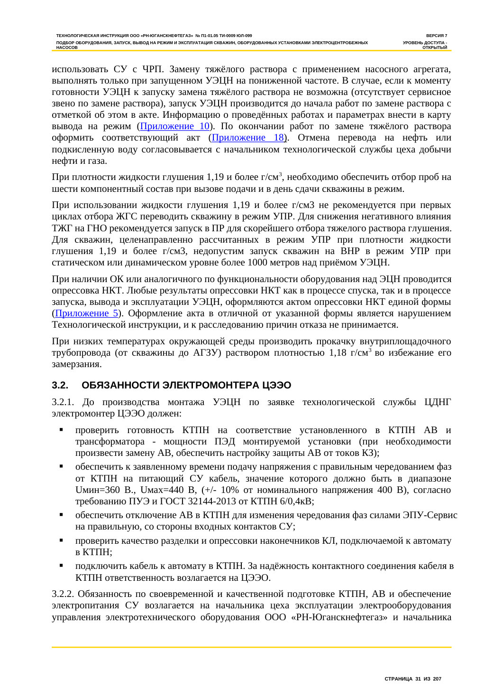
СТРАНИЦА 31 ИЗ 207
ТЕХНОЛОГИЧЕСКАЯ ИНСТРУКЦИЯ ООО «РН-ЮГАНСКНЕФТЕГАЗ» № П1-01.05 ТИ-0009 ЮЛ-099
ВЕРСИЯ 7
ПОДБОР ОБОРУДОВАНИЯ, ЗАПУСК, ВЫВОД НА РЕЖИМ И ЭКСПЛУАТАЦИЯ СКВАЖИН, ОБОРУДОВАННЫХ УСТАНОВКАМИ ЭЛЕКТРОЦЕНТРОБЕЖНЫХ
НАСОСОВ
УРОВЕНЬ ДОСТУПА -
ОТКРЫТЫЙ
использовать СУ с ЧРП. Замену тяжёлого раствора с применением насосного агрегата,
выполнять только при запущенном УЭЦН на пониженной частоте. В случае, если к моменту
готовности УЭЦН к запуску замена тяжёлого раствора не возможна (отсутствует сервисное
звено по замене раствора), запуск УЭЦН производится до начала работ по замене раствора с
отметкой об этом в акте. Информацию о проведённых работах и параметрах внести в карту
вывода на режим (Приложение 10). По окончании работ по замене тяжёлого раствора
оформить соответствующий акт (Приложение 18
) . Отмена перевода на нефть или
подкисленную воду согласовывается с начальником технологической службы цеха добычи
нефти и газа.
При плотности жидкости глушения 1,19 и более г/см3, необходимо обеспечить отбор проб на
шести компонентный состав при вызове подачи и в день сдачи скважины в режим.
При использовании жидкости глушения 1,19 и более г/см3 не рекомендуется при первых
циклах отбора ЖГС переводить скважину в режим УПР. Для снижения негативного влияния
ТЖГ на ГНО рекомендуется запуск в ПР для скорейшего отбора тяжелого раствора глушения.
Для скважин, целенаправленно рассчитанных в режим УПР при плотности жидкости
глушения 1,19 и более г/см3, недопустим запуск скважин на ВНР в режим УПР при
статическом или динамическом уровне более 1000 метров над приёмом УЭЦН.
При наличии ОК или аналогичного по функциональности оборудования над ЭЦН проводится
опрессовка НКТ. Любые результаты опрессовки НКТ как в процессе спуска, так и в процессе
запуска, вывода и эксплуатации УЭЦН, оформляются актом опрессовки НКТ единой формы
(Приложение 5). Оформление акта в отличной от указанной формы является нарушением
Технологической инструкции, и к расследованию причин отказа не принимается.
При низких температурах окружающей среды производить прокачку внутриплощадочного
трубопровода (от скважины до АГЗУ) раствором плотностью 1,18 г/см3 во избежание его
замерзания.
3.2.
ОБЯЗАННОСТИ ЭЛЕКТРОМОНТЕРА ЦЭЭО
3.2.1. До производства монтажа УЭЦН по заявке технологической службы ЦДНГ
электромонтер ЦЭЭО должен:
проверить готовность КТПН на соответствие установленного в КТПН АВ и
трансформатора - мощности ПЭД монтируемой установки (при необходимости
произвести замену АВ, обеспечить настройку защиты АВ от токов КЗ);
обеспечить к заявленному времени подачу напряжения с правильным чередованием фаз
от КТПН на питающий СУ кабель, значение которого должно быть в диапазоне
Uмин=360 В., Uмах=440 В, (+/- 10% от номинального напряжения 400 В), согласно
требованию ПУЭ и ГОСТ 32144-2013 от КТПН 6/0,4кВ;
обеспечить отключение АВ в КТПН для изменения чередования фаз силами ЭПУ-Сервис
на правильную, со стороны входных контактов СУ;
проверить качество разделки и опрессовки наконечников КЛ, подключаемой к автомату
в КТПН;
подключить кабель к автомату в КТПН. За надёжность контактного соединения кабеля в
КТПН ответственность возлагается на ЦЭЭО.
3.2.2. Обязанность по своевременной и качественной подготовке КТПН, АВ и обеспечение
электропитания СУ возлагается на начальника цеха эксплуатации электрооборудования
управления электротехнического оборудования ООО «РН-Юганскнефтегаз» и начальника
31 / 207
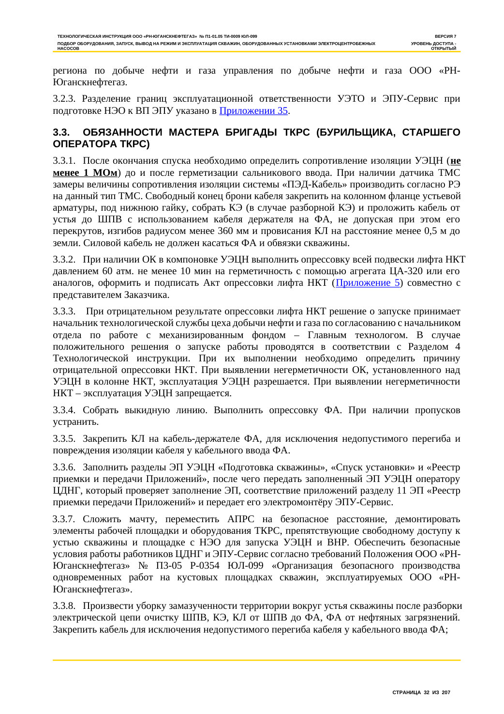
СТРАНИЦА 32 ИЗ 207
ТЕХНОЛОГИЧЕСКАЯ ИНСТРУКЦИЯ ООО «РН-ЮГАНСКНЕФТЕГАЗ» № П1-01.05 ТИ-0009 ЮЛ-099
ВЕРСИЯ 7
ПОДБОР ОБОРУДОВАНИЯ, ЗАПУСК, ВЫВОД НА РЕЖИМ И ЭКСПЛУАТАЦИЯ СКВАЖИН, ОБОРУДОВАННЫХ УСТАНОВКАМИ ЭЛЕКТРОЦЕНТРОБЕЖНЫХ
НАСОСОВ
УРОВЕНЬ ДОСТУПА -
ОТКРЫТЫЙ
региона по добыче нефти и газа управления по добыче нефти и газа ООО «РН-
Юганскнефтегаз.
3.2.3. Разделение границ эксплуатационной ответственности УЭТО и ЭПУ-Сервис при
подготовке НЭО к ВП ЭПУ указано в Приложении 35.
3.3.
ОБЯЗАННОСТИ МАСТЕРА БРИГАДЫ ТКРС (БУРИЛЬЩИКА, СТАРШЕГО
ОПЕРАТОРА ТКРС)
3.3.1. После окончания спуска необходимо определить сопротивление изоляции УЭЦН (не
менее 1 МОм) до и после герметизации сальникового ввода. При наличии датчика ТМС
замеры величины сопротивления изоляции системы «ПЭД-Кабель» производить согласно РЭ
на данный тип ТМС. Свободный конец брони кабеля закрепить на колонном фланце устьевой
арматуры, под нижнюю гайку, собрать КЭ (в случае разборной КЭ) и проложить кабель от
устья до ШПВ с использованием кабеля держателя на ФА, не допуская при этом его
перекрутов, изгибов радиусом менее 360 мм и провисания КЛ на расстояние менее 0,5 м до
земли. Силовой кабель не должен касаться ФА и обвязки скважины.
3.3.2. При наличии ОК в компоновке УЭЦН выполнить опрессовку всей подвески лифта НКТ
давлением 60 атм. не менее 10 мин на герметичность с помощью агрегата ЦА-320 или его
аналогов, оформить и подписать Акт опрессовки лифта НКТ (Приложение 5) совместно с
представителем Заказчика.
3.3.3. При отрицательном результате опрессовки лифта НКТ решение о запуске принимает
начальник технологической службы цеха добычи нефти и газа по согласованию с начальником
отдела по работе с механизированным фондом – Главным технологом. В случае
положительного решения о запуске работы проводятся в соответствии с Разделом 4
Технологической инструкции. При их выполнении необходимо определить причину
отрицательной опрессовки НКТ. При выявлении негерметичности ОК, установленного над
УЭЦН в колонне НКТ, эксплуатация УЭЦН разрешается. При выявлении негерметичности
НКТ – эксплуатация УЭЦН запрещается.
3.3.4. Собрать выкидную линию. Выполнить опрессовку ФА. При наличии пропусков
устранить.
3.3.5. Закрепить КЛ на кабель-держателе ФА, для исключения недопустимого перегиба и
повреждения изоляции кабеля у кабельного ввода ФА.
3.3.6. Заполнить разделы ЭП УЭЦН «Подготовка скважины», «Спуск установки» и «Реестр
приемки и передачи Приложений», после чего передать заполненный ЭП УЭЦН оператору
ЦДНГ, который проверяет заполнение ЭП, соответствие приложений разделу 11 ЭП «Реестр
приемки передачи Приложений» и передает его электромонтёру ЭПУ-Сервис.
3.3.7. Сложить мачту, переместить АПРС на безопасное расстояние, демонтировать
элементы рабочей площадки и оборудования ТКРС, препятствующие свободному доступу к
устью скважины и площадке с НЭО для запуска УЭЦН и ВНР. Обеспечить безопасные
условия работы работников ЦДНГ и ЭПУ-Сервис согласно требований Положения ООО «РН-
Юганскнефтегаз» № П3-05 Р-0354 ЮЛ-099 «Организация безопасного производства
одновременных работ на кустовых площадках скважин, эксплуатируемых ООО «РН-
Юганскнефтегаз».
3.3.8. Произвести уборку замазученности территории вокруг устья скважины после разборки
электрической цепи очистку ШПВ, КЭ, КЛ от ШПВ до ФА, ФА от нефтяных загрязнений.
Закрепить кабель для исключения недопустимого перегиба кабеля у кабельного ввода ФА;
32 / 207
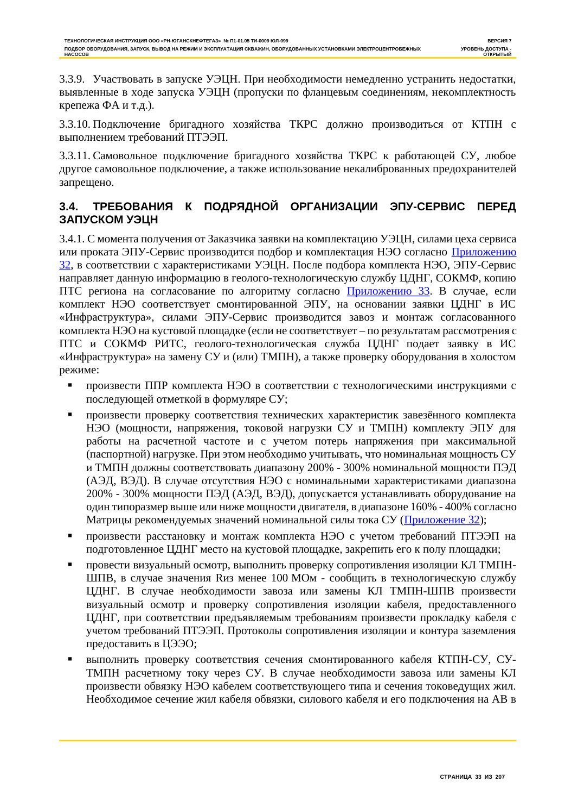
СТРАНИЦА 33 ИЗ 207
ТЕХНОЛОГИЧЕСКАЯ ИНСТРУКЦИЯ ООО «РН-ЮГАНСКНЕФТЕГАЗ» № П1-01.05 ТИ-0009 ЮЛ-099
ВЕРСИЯ 7
ПОДБОР ОБОРУДОВАНИЯ, ЗАПУСК, ВЫВОД НА РЕЖИМ И ЭКСПЛУАТАЦИЯ СКВАЖИН, ОБОРУДОВАННЫХ УСТАНОВКАМИ ЭЛЕКТРОЦЕНТРОБЕЖНЫХ
НАСОСОВ
УРОВЕНЬ ДОСТУПА -
ОТКРЫТЫЙ
3.3.9. Участвовать в запуске УЭЦН. При необходимости немедленно устранить недостатки,
выявленные в ходе запуска УЭЦН (пропуски по фланцевым соединениям, некомплектность
крепежа ФА и т.д.).
3.3.10. Подключение бригадного хозяйства ТКРС должно производиться от КТПН с
выполнением требований ПТЭЭП.
3.3.11. Самовольное подключение бригадного хозяйства ТКРС к работающей СУ, любое
другое самовольное подключение, а также использование некалиброванных предохранителей
запрещено.
3.4.
ТРЕБОВАНИЯ К ПОДРЯДНОЙ ОРГАНИЗАЦИИ ЭПУ-СЕРВИС ПЕРЕД
ЗАПУСКОМ УЭЦН
3.4.1. С момента получения от Заказчика заявки на комплектацию УЭЦН, силами цеха сервиса
или проката ЭПУ-Сервис производится подбор и комплектация НЭО согласно Приложению
32, в соответствии с характеристиками УЭЦН. После подбора комплекта НЭО, ЭПУ-Сервис
направляет данную информацию в геолого-технологическую службу ЦДНГ, СОКМФ, копию
ПТС региона на согласование по алгоритму согласно Приложению 33. В случае, если
комплект НЭО соответствует смонтированной ЭПУ, на основании заявки ЦДНГ в ИС
«Инфраструктура», силами ЭПУ-Сервис производится завоз и монтаж согласованного
комплекта НЭО на кустовой площадке (если не соответствует – по результатам рассмотрения с
ПТС и СОКМФ РИТС, геолого-технологическая служба ЦДНГ подает заявку в ИС
«Инфраструктура» на замену СУ и (или) ТМПН), а также проверку оборудования в холостом
режиме:
произвести ППР комплекта НЭО в соответствии с технологическими инструкциями с
последующей отметкой в формуляре СУ;
произвести проверку соответствия технических характеристик завезённого комплекта
НЭО (мощности, напряжения, токовой нагрузки СУ и ТМПН) комплекту ЭПУ для
работы на расчетной частоте и с учетом потерь напряжения при максимальной
(паспортной) нагрузке. При этом необходимо учитывать, что номинальная мощность СУ
и ТМПН должны соответствовать диапазону 200% - 300% номинальной мощности ПЭД
(АЭД, ВЭД). В случае отсутствия НЭО с номинальными характеристиками диапазона
200% - 300% мощности ПЭД (АЭД, ВЭД), допускается устанавливать оборудование на
один типоразмер выше или ниже мощности двигателя, в диапазоне 160% - 400% согласно
Матрицы рекомендуемых значений номинальной силы тока СУ (Приложение 32);
произвести расстановку и монтаж комплекта НЭО с учетом требований ПТЭЭП на
подготовленное ЦДНГ место на кустовой площадке, закрепить его к полу площадки;
провести визуальный осмотр, выполнить проверку сопротивления изоляции КЛ ТМПН-
ШПВ, в случае значения Rиз менее 100 МОм - сообщить в технологическую службу
ЦДНГ. В случае необходимости завоза или замены КЛ ТМПН-ШПВ произвести
визуальный осмотр и проверку сопротивления изоляции кабеля, предоставленного
ЦДНГ, при соответствии предъявляемым требованиям произвести прокладку кабеля с
учетом требований ПТЭЭП. Протоколы сопротивления изоляции и контура заземления
предоставить в ЦЭЭО;
выполнить проверку соответствия сечения смонтированного кабеля КТПН-СУ, СУ-
ТМПН расчетному току через СУ. В случае необходимости завоза или замены КЛ
произвести обвязку НЭО кабелем соответствующего типа и сечения токоведущих жил.
Необходимое сечение жил кабеля обвязки, силового кабеля и его подключения на АВ в
33 / 207
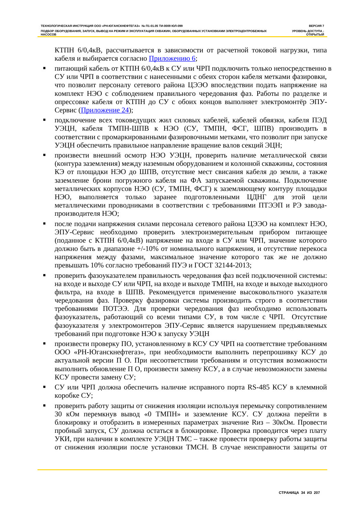
СТРАНИЦА 34 ИЗ 207
ТЕХНОЛОГИЧЕСКАЯ ИНСТРУКЦИЯ ООО «РН-ЮГАНСКНЕФТЕГАЗ» № П1-01.05 ТИ-0009 ЮЛ-099
ВЕРСИЯ 7
ПОДБОР ОБОРУДОВАНИЯ, ЗАПУСК, ВЫВОД НА РЕЖИМ И ЭКСПЛУАТАЦИЯ СКВАЖИН, ОБОРУДОВАННЫХ УСТАНОВКАМИ ЭЛЕКТРОЦЕНТРОБЕЖНЫХ
НАСОСОВ
УРОВЕНЬ ДОСТУПА -
ОТКРЫТЫЙ
КТПН 6/0,4кВ, рассчитывается в зависимости от расчетной токовой нагрузки, типа
кабеля и выбирается согласно Приложению 6;
питающий кабель от КТПН 6/0,4кВ к СУ или ЧРП подключить только непосредственно в
СУ или ЧРП в соответствии с нанесенными с обеих сторон кабеля метками фазировки,
что позволит персоналу сетевого района ЦЭЭО впоследствии подать напряжение на
комплект НЭО с соблюдением правильного чередования фаз. Работы по разделке и
опрессовке кабеля от КТПН до СУ с обоих концов выполняет электромонтёр ЭПУ-
Сервис (Приложение 24);
подключение всех токоведущих жил силовых кабелей, кабелей обвязки, кабеля ПЭД
УЭЦН, кабеля ТМПН-ШПВ к НЭО (СУ, ТМПН, ФСГ, ШПВ) производить в
соответствии с промаркированными фазировочными метками, что позволит при запуске
УЭЦН обеспечить правильное направление вращение валов секций ЭЦН;
произвести внешний осмотр НЭО УЭЦН, проверить наличие металлической связи
(контура заземления) между наземным оборудованием и колонной скважины, состояния
КЭ от площадки НЭО до ШПВ, отсутствие мест свисания кабеля до земли, а также
заземление брони погружного кабеля на ФА запускаемой скважины. Подключение
металлических корпусов НЭО (СУ, ТМПН, ФСГ) к заземляющему контуру площадки
НЭО, выполняется только заранее подготовленными ЦДНГ для этой цели
металлическими проводниками в соответствии с требованиями ПТЭЭП и РЭ завода-
производителя НЭО;
после подачи напряжения силами персонала сетевого района ЦЭЭО на комплект НЭО,
ЭПУ-Сервис необходимо проверить электроизмерительным прибором питающее
(поданное с КТПН 6/0,4кВ) напряжение на входе в СУ или ЧРП, значение которого
должно быть в диапазоне +/-10% от номинального напряжения, и отсутствие перекоса
напряжения между фазами, максимальное значение которого так же не должно
превышать 10% согласно требований ПУЭ и ГОСТ 32144-2013;
проверить фазоуказателем правильность чередования фаз всей подключенной системы:
на входе и выходе СУ или ЧРП, на входе и выходе ТМПН, на входе и выходе выходного
фильтра, на входе в ШПВ. Рекомендуется применение высоковольтного указателя
чередования фаз. Проверку фазировки системы производить строго в соответствии
требованиями ПОТЭЭ. Для проверки чередования фаз необходимо использовать
фазоуказатель, работающий со всеми типами СУ, в том числе с ЧРП. Отсутствие
фазоуказателя у электромонтеров ЭПУ-Сервис является нарушением предъявляемых
требований при подготовке НЭО к запуску УЭЦН
произвести проверку ПО, установленному в КСУ СУ ЧРП на соответствие требованиям
ООО «РН-Юганскнефтегаз», при необходимости выполнить перепрошивку КСУ до
актуальной версии П О. При несоответствии требованиям и отсутствия возможности
выполнить обновление П О, произвести замену КСУ, а в случае невозможности замены
КСУ провести замену СУ;
СУ или ЧРП должна обеспечить наличие исправного порта RS-485 КСУ в клеммной
коробке СУ;
проверить работу защиты от снижения изоляции используя перемычку сопротивлением
30 кОм перемкнув вывод «0 ТМПН» и заземление КСУ. СУ должна перейти в
блокировку и отобразить в измеренных параметрах значение Rиз – 30кОм. Провести
пробный запуск, СУ должна остаться в блокировке. Проверка проводится через плату
УКИ, при наличии в комплекте УЭЦН ТМС – также провести проверку работы защиты
от снижения изоляции после установки ТМСН. В случае неисправности защиты от
34 / 207
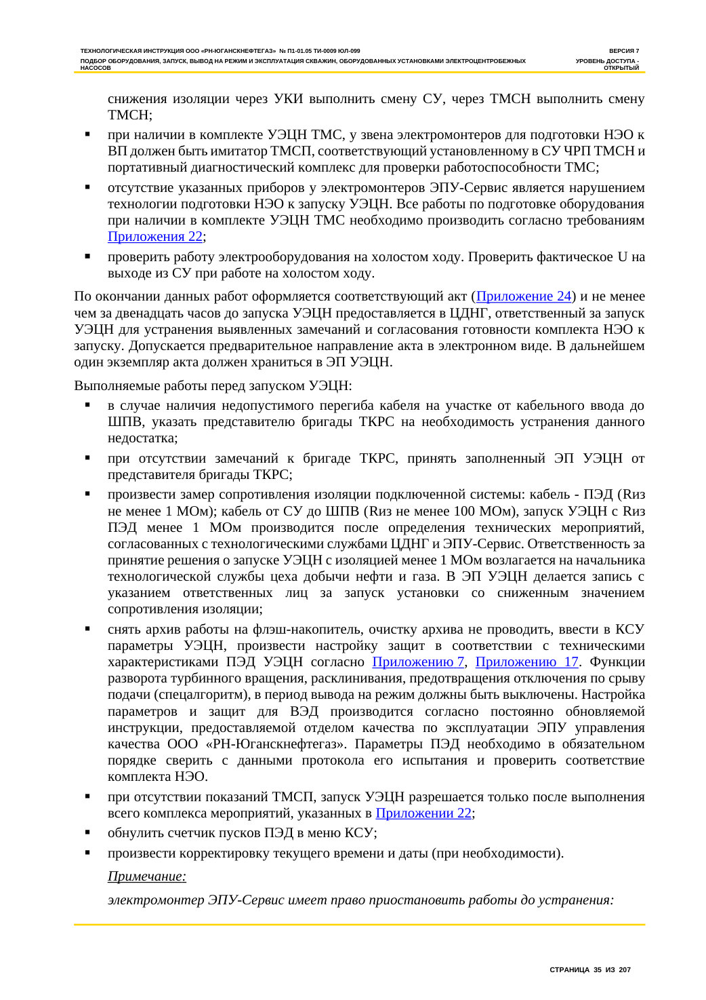
СТРАНИЦА 35 ИЗ 207
ТЕХНОЛОГИЧЕСКАЯ ИНСТРУКЦИЯ ООО «РН-ЮГАНСКНЕФТЕГАЗ» № П1-01.05 ТИ-0009 ЮЛ-099
ВЕРСИЯ 7
ПОДБОР ОБОРУДОВАНИЯ, ЗАПУСК, ВЫВОД НА РЕЖИМ И ЭКСПЛУАТАЦИЯ СКВАЖИН, ОБОРУДОВАННЫХ УСТАНОВКАМИ ЭЛЕКТРОЦЕНТРОБЕЖНЫХ
НАСОСОВ
УРОВЕНЬ ДОСТУПА -
ОТКРЫТЫЙ
снижения изоляции через УКИ выполнить смену СУ, через ТМСН выполнить смену
ТМСН;
при наличии в комплекте УЭЦН ТМС, у звена электромонтеров для подготовки НЭО к
ВП должен быть имитатор ТМСП, соответствующий установленному в СУ ЧРП ТМСН и
портативный диагностический комплекс для проверки работоспособности ТМС;
отсутствие указанных приборов у электромонтеров ЭПУ-Сервис является нарушением
технологии подготовки НЭО к запуску УЭЦН. Все работы по подготовке оборудования
при наличии в комплекте УЭЦН ТМС необходимо производить согласно требованиям
Приложения 22;
проверить работу электрооборудования на холостом ходу. Проверить фактическое U на
выходе из СУ при работе на холостом ходу.
По окончании данных работ оформляется соответствующий акт (Приложение 24) и не менее
чем за двенадцать часов до запуска УЭЦН предоставляется в ЦДНГ, ответственный за запуск
УЭЦН для устранения выявленных замечаний и согласования готовности комплекта НЭО к
запуску. Допускается предварительное направление акта в электронном виде. В дальнейшем
один экземпляр акта должен храниться в ЭП УЭЦН.
Выполняемые работы перед запуском УЭЦН:
в случае наличия недопустимого перегиба кабеля на участке от кабельного ввода до
ШПВ, указать представителю бригады ТКРС на необходимость устранения данного
недостатка;
при отсутствии замечаний к бригаде ТКРС, принять заполненный ЭП УЭЦН от
представителя бригады ТКРС;
произвести замер сопротивления изоляции подключенной системы: кабель - ПЭД (Rиз
не менее 1 МОм); кабель от СУ до ШПВ (Rиз не менее 100 МОм), запуск УЭЦН с Rиз
ПЭД менее 1 МОм производится после определения технических мероприятий,
согласованных с технологическими службами ЦДНГ и ЭПУ-Сервис. Ответственность за
принятие решения о запуске УЭЦН с изоляцией менее 1 МОм возлагается на начальника
технологической службы цеха добычи нефти и газа. В ЭП УЭЦН делается запись с
указанием ответственных лиц за запуск установки со сниженным значением
сопротивления изоляции;
снять архив работы на флэш-накопитель, очистку архива не проводить, ввести в КСУ
параметры УЭЦН, произвести настройку защит в соответствии с техническими
характеристиками ПЭД УЭЦН согласно Приложению
7 , Приложению 17. Функции
разворота турбинного вращения, расклинивания, предотвращения отключения по срыву
подачи (спецалгоритм), в период вывода на режим должны быть выключены. Настройка
параметров и защит для ВЭД производится согласно постоянно обновляемой
инструкции, предоставляемой отделом качества по эксплуатации ЭПУ управления
качества ООО «РН-Юганскнефтегаз». Параметры ПЭД необходимо в обязательном
порядке сверить с данными протокола его испытания и проверить соответствие
комплекта НЭО.
при отсутствии показаний ТМСП, запуск УЭЦН разрешается только после выполнения
всего комплекса мероприятий, указанных в Приложении 22;
обнулить счетчик пусков ПЭД в меню КСУ;
произвести корректировку текущего времени и даты (при необходимости).
Примечание
:
электромонтер ЭПУ-Сервис имеет право приостановить работы до устранения:
35 / 207
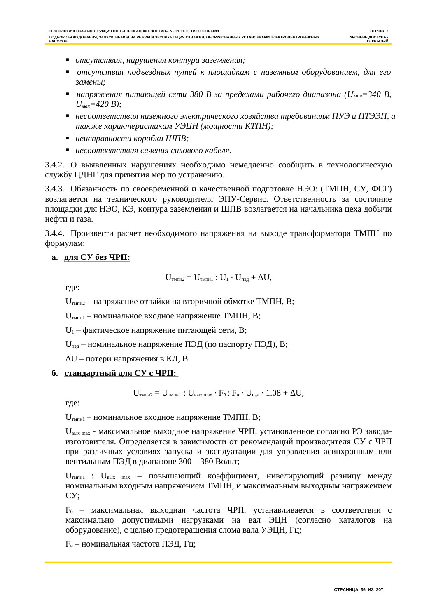
СТРАНИЦА 36 ИЗ 207
ТЕХНОЛОГИЧЕСКАЯ ИНСТРУКЦИЯ ООО «РН-ЮГАНСКНЕФТЕГАЗ» № П1-01.05 ТИ-0009 ЮЛ-099
ВЕРСИЯ 7
ПОДБОР ОБОРУДОВАНИЯ, ЗАПУСК, ВЫВОД НА РЕЖИМ И ЭКСПЛУАТАЦИЯ СКВАЖИН, ОБОРУДОВАННЫХ УСТАНОВКАМИ ЭЛЕКТРОЦЕНТРОБЕЖНЫХ
НАСОСОВ
УРОВЕНЬ ДОСТУПА -
ОТКРЫТЫЙ
отсутствия, нарушения контура заземления;
отсутствия подъездных путей к площадкам с наземным оборудованием, для его
замены;
напряжения питающей сети 380 В за пределами рабочего диапазона (Uмин=340 В,
Uмах=420 В);
несоответствия наземного электрического хозяйства требованиям ПУЭ и ПТЭЭП, а
также характеристикам УЭЦН (мощности КТПН);
неисправности коробки ШПВ;
несоответствия сечения силового кабеля.
3.4.2. О выявленных нарушениях необходимо немедленно сообщить в технологическую
службу ЦДНГ для принятия мер по устранению.
3.4.3. Обязанность по своевременной и качественной подготовке НЭО: (ТМПН, СУ, ФСГ)
возлагается на технического руководителя ЭПУ-Сервис. Ответственность за состояние
площадки для НЭО, КЭ, контура заземления и ШПВ возлагается на начальника цеха добычи
нефти и газа.
3.4.4. Произвести расчет необходимого напряжения на выходе трансформатора ТМПН по
формулам:
а. для СУ без ЧРП:
Uтмпн2 = Uтмпн1 : U1 ∙ Uпэд + ΔU,
где:
Uтмпн2 – напряжение отпайки на вторичной обмотке ТМПН, В;
Uтмпн1 – номинальное входное напряжение ТМПН, В;
U1 – фактическое напряжение питающей сети, В;
Uпэд – номинальное напряжение ПЭД (по паспорту ПЭД), В;
ΔU – потери напряжения в КЛ, В.
б. стандартный для СУ с ЧРП:
Uтмпн2 = Uтмпн1 : Uвых max ∙ Fб : Fн ∙ Uпэд ∙ 1.08 + ΔU,
где:
Uтмпн1 – номинальное входное напряжение ТМПН, В;
Uвых max - максимальное выходное напряжение ЧРП, установленное согласно РЭ завода-
изготовителя. Определяется в зависимости от рекомендаций производителя СУ с ЧРП
при различных условиях запуска и эксплуатации для управления асинхронным или
вентильным ПЭД в диапазоне 300 – 380 Вольт;
Uтмпн1
: Uвых
max – повышающий коэффициент, нивелирующий разницу между
номинальным входным напряжением ТМПН, и максимальным выходным напряжением
СУ;
Fб – максимальная выходная частота ЧРП, устанавливается в соответствии с
максимально допустимыми нагрузками на вал ЭЦН (согласно каталогов на
оборудование), с целью предотвращения слома вала УЭЦН, Гц;
Fн – номинальная частота ПЭД, Гц;
36 / 207
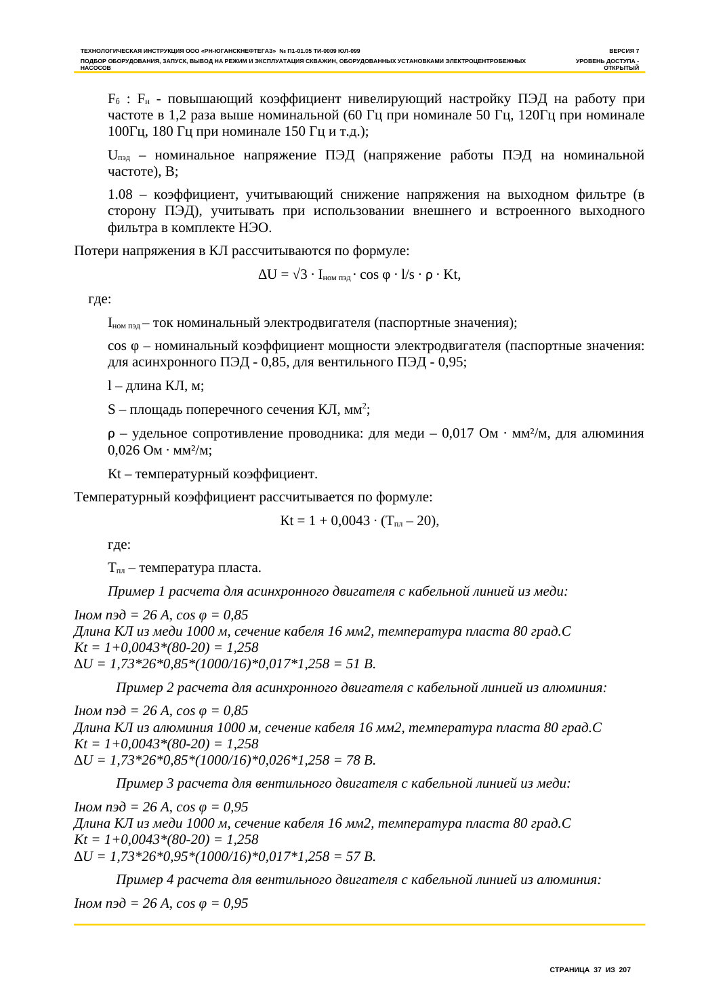
СТРАНИЦА 37 ИЗ 207
ТЕХНОЛОГИЧЕСКАЯ ИНСТРУКЦИЯ ООО «РН-ЮГАНСКНЕФТЕГАЗ» № П1-01.05 ТИ-0009 ЮЛ-099
ВЕРСИЯ 7
ПОДБОР ОБОРУДОВАНИЯ, ЗАПУСК, ВЫВОД НА РЕЖИМ И ЭКСПЛУАТАЦИЯ СКВАЖИН, ОБОРУДОВАННЫХ УСТАНОВКАМИ ЭЛЕКТРОЦЕНТРОБЕЖНЫХ
НАСОСОВ
УРОВЕНЬ ДОСТУПА -
ОТКРЫТЫЙ
Fб : Fн - повышающий коэффициент нивелирующий настройку ПЭД на работу при
частоте в 1,2 раза выше номинальной (60 Гц при номинале 50 Гц, 120Гц при номинале
100Гц, 180 Гц при номинале 150 Гц и т.д.);
Uпэд – номинальное напряжение ПЭД (напряжение работы ПЭД на номинальной
частоте), В;
1.08 – коэффициент, учитывающий снижение напряжения на выходном фильтре (в
сторону ПЭД), учитывать при использовании внешнего и встроенного выходного
фильтра в комплекте НЭО.
Потери напряжения в КЛ рассчитываются по формуле:
∆U = √3 ∙ Iном пэд ∙ cos φ ∙ l/s ∙ ρ ∙ Kt,
где:
Iном пэд – ток номинальный электродвигателя (паспортные значения);
cos φ – номинальный коэффициент мощности электродвигателя (паспортные значения:
для асинхронного ПЭД - 0,85, для вентильного ПЭД - 0,95;
l – длина КЛ, м;
S – площадь поперечного сечения КЛ, мм2;
ρ – удельное сопротивление проводника: для меди – 0,017 Ом ∙ мм²/м, для алюминия
0,026 Ом ∙ мм²/м;
Кt – температурный коэффициент.
Температурный коэффициент рассчитывается по формуле:
Кt = 1 + 0,0043 ∙ (Tпл – 20),
где:
Тпл – температура пласта.
Пример 1 расчета для асинхронного двигателя с кабельной линией из меди:
Iном пэд = 26 А, cos φ = 0,85
Длина КЛ из меди 1000 м, сечение кабеля 16 мм2, температура пласта 80 град.С
Кt = 1+0,0043*(80-20) = 1,258
∆U = 1,73*26*0,85*(1000/16)*0,017*1,258 = 51 В.
Пример 2 расчета для асинхронного двигателя с кабельной линией из алюминия:
Iном пэд = 26 А, cos φ = 0,85
Длина КЛ из алюминия 1000 м, сечение кабеля 16 мм2, температура пласта 80 град.С
Кt = 1+0,0043*(80-20) = 1,258
∆U = 1,73*26*0,85*(1000/16)*0,026*1,258 = 78 В.
Пример 3 расчета для вентильного двигателя с кабельной линией из меди:
Iном пэд = 26 А, cos φ = 0,95
Длина КЛ из меди 1000 м, сечение кабеля 16 мм2, температура пласта 80 град.С
Кt = 1+0,0043*(80-20) = 1,258
∆U = 1,73*26*0,95*(1000/16)*0,017*1,258 = 57 В.
Пример 4 расчета для вентильного двигателя с кабельной линией из алюминия:
Iном пэд = 26 А, cos φ = 0,95
37 / 207
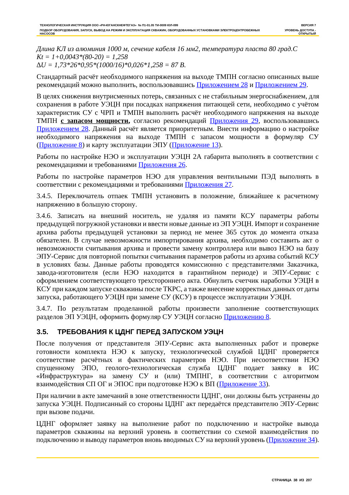
СТРАНИЦА 38 ИЗ 207
ТЕХНОЛОГИЧЕСКАЯ ИНСТРУКЦИЯ ООО «РН-ЮГАНСКНЕФТЕГАЗ» № П1-01.05 ТИ-0009 ЮЛ-099
ВЕРСИЯ 7
ПОДБОР ОБОРУДОВАНИЯ, ЗАПУСК, ВЫВОД НА РЕЖИМ И ЭКСПЛУАТАЦИЯ СКВАЖИН, ОБОРУДОВАННЫХ УСТАНОВКАМИ ЭЛЕКТРОЦЕНТРОБЕЖНЫХ
НАСОСОВ
УРОВЕНЬ ДОСТУПА -
ОТКРЫТЫЙ
Длина КЛ из алюминия 1000 м, сечение кабеля 16 мм2, температура пласта 80 град.С
Кt = 1+0,0043*(80-20) = 1,258
∆U = 1,73*26*0,95*(1000/16)*0,026*1,258 = 87 В.
Стандартный расчёт необходимого напряжения на выходе ТМПН согласно описанных выше
рекомендаций можно выполнить, воспользовавшись Приложением 28 и Приложением 29.
В целях снижения внутрисменных потерь, связанных с не стабильным энергоснабжением, для
сохранения в работе УЭЦН при посадках напряжения питающей сети, необходимо с учётом
характеристик СУ с ЧРП и ТМПН выполнить расчёт необходимого напряжения на выходе
ТМПН с запасом мощности, согласно рекомендаций Приложения 29, воспользовавшись
Приложением 28. Данный расчёт является приоритетным. Внести информацию о настройке
необходимого напряжения на выходе ТМПН с запасом мощности в формуляр СУ
(Приложение 8) и карту эксплуатации ЭПУ (Приложение 13).
Работы по настройке НЭО и эксплуатации УЭЦН 2А габарита выполнять в соответствии с
рекомендациями и требованиями Приложения 26.
Работы по настройке параметров НЭО для управления вентильными ПЭД выполнять в
соответствии с рекомендациями и требованиями Приложения 27.
3.4.5. Переключатель отпаек ТМПН установить в положение, ближайшее к расчетному
напряжению в большую сторону.
3.4.6. Записать на внешний носитель, не удаляя из памяти КСУ параметры работы
предыдущей погружной установки и ввести новые данные из ЭП УЭЦН. Импорт и сохранение
архива работы предыдущей установки за период не менее 365 суток до момента отказа
обязателен. В случае невозможности импортирования архива, необходимо составить акт о
невозможности считывания архива и провести замену контроллера или вывоз НЭО на базу
ЭПУ-Сервис для повторной попытки считывания параметров работы из архива событий КСУ
в условиях базы. Данные работы проводятся комиссионно с представителями Заказчика,
завода-изготовителя (если НЭО находится в гарантийном периоде) и ЭПУ-Сервис с
оформлением соответствующего трехстороннего акта. Обнулить счетчик наработки УЭЦН в
КСУ при каждом запуске скважины после ТКРС, а также внесение корректных данных от даты
запуска, работающего УЭЦН при замене СУ (КСУ) в процессе эксплуатации УЭЦН.
3.4.7. По результатам проделанной работы произвести заполнение соответствующих
разделов ЭП УЭЦН, оформить формуляр СУ УЭЦН согласно Приложению 8.
3.5.
ТРЕБОВАНИЯ К ЦДНГ ПЕРЕД ЗАПУСКОМ УЭЦН
После получения от представителя ЭПУ-Сервис акта выполненных работ и проверке
готовности комплекта НЭО к запуску, технологической службой ЦДНГ проверяется
соответствие расчётных и фактических параметров НЭО. При несоответствии НЭО
спущенному ЭПО, геолого-технологическая служба ЦДНГ подает заявку в ИС
«Инфраструктура» на замену СУ и (или) ТМПНГ, в соответствии с алгоритмом
взаимодействия СП ОГ и ЭПОС при подготовке НЭО к ВП (Приложение 33).
При наличии в акте замечаний в зоне ответственности ЦДНГ, они должны быть устранены до
запуска УЭЦН. Подписанный со стороны ЦДНГ акт передаётся представителю ЭПУ-Сервис
при вызове подачи.
ЦДНГ оформляет заявку на выполнение работ по подключению и настройке вывода
параметров скважины на верхний уровень в соответствии со схемой взаимодействия по
подключению и выводу параметров вновь вводимых СУ на верхний уровень (Приложение 34).
38 / 207
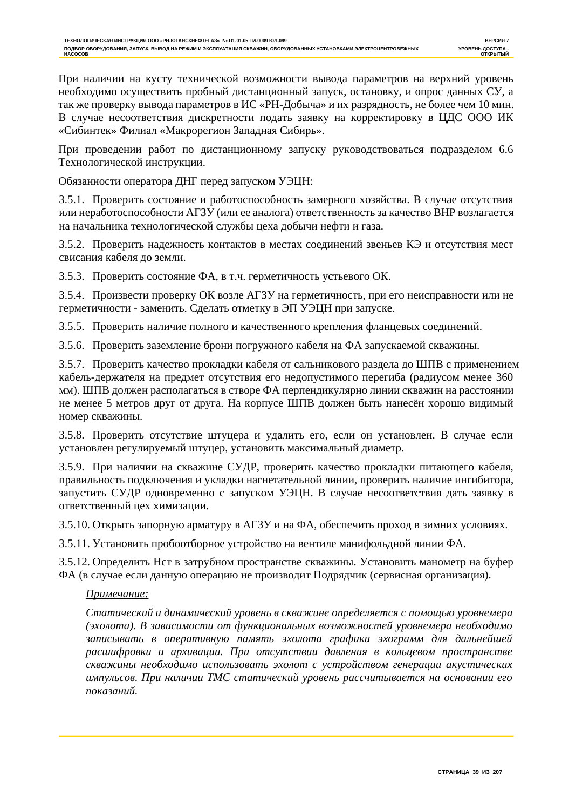
СТРАНИЦА 39 ИЗ 207
ТЕХНОЛОГИЧЕСКАЯ ИНСТРУКЦИЯ ООО «РН-ЮГАНСКНЕФТЕГАЗ» № П1-01.05 ТИ-0009 ЮЛ-099
ВЕРСИЯ 7
ПОДБОР ОБОРУДОВАНИЯ, ЗАПУСК, ВЫВОД НА РЕЖИМ И ЭКСПЛУАТАЦИЯ СКВАЖИН, ОБОРУДОВАННЫХ УСТАНОВКАМИ ЭЛЕКТРОЦЕНТРОБЕЖНЫХ
НАСОСОВ
УРОВЕНЬ ДОСТУПА -
ОТКРЫТЫЙ
При наличии на кусту технической возможности вывода параметров на верхний уровень
необходимо осуществить пробный дистанционный запуск, остановку, и опрос данных СУ, а
так же проверку вывода параметров в ИС «РН-Добыча» и их разрядность, не более чем 10 мин.
В случае несоответствия дискретности подать заявку на корректировку в ЦДС ООО ИК
«Сибинтек» Филиал «Макрорегион Западная Сибирь».
При проведении работ по дистанционному запуску руководствоваться подразделом 6.6
Технологической инструкции.
Обязанности оператора ДНГ перед запуском УЭЦН:
3.5.1. Проверить состояние и работоспособность замерного хозяйства. В случае отсутствия
или неработоспособности АГЗУ (или ее аналога) ответственность за качество ВНР возлагается
на начальника технологической службы цеха добычи нефти и газа.
3.5.2. Проверить надежность контактов в местах соединений звеньев КЭ и отсутствия мест
свисания кабеля до земли.
3.5.3. Проверить состояние ФА, в т.ч. герметичность устьевого ОК.
3.5.4. Произвести проверку ОК возле АГЗУ на герметичность, при его неисправности или не
герметичности - заменить. Сделать отметку в ЭП УЭЦН при запуске.
3.5.5. Проверить наличие полного и качественного крепления фланцевых соединений.
3.5.6. Проверить заземление брони погружного кабеля на ФА запускаемой скважины.
3.5.7. Проверить качество прокладки кабеля от сальникового раздела до ШПВ с применением
кабель-держателя на предмет отсутствия его недопустимого перегиба (радиусом менее 360
мм). ШПВ должен располагаться в створе ФА перпендикулярно линии скважин на расстоянии
не менее 5 метров друг от друга. На корпусе ШПВ должен быть нанесён хорошо видимый
номер скважины.
3.5.8. Проверить отсутствие штуцера и удалить его, если он установлен. В случае если
установлен регулируемый штуцер, установить максимальный диаметр.
3.5.9. При наличии на скважине СУДР, проверить качество прокладки питающего кабеля,
правильность подключения и укладки нагнетательной линии, проверить наличие ингибитора,
запустить СУДР одновременно с запуском УЭЦН. В случае несоответствия дать заявку в
ответственный цех химизации.
3.5.10. Открыть запорную арматуру в АГЗУ и на ФА, обеспечить проход в зимних условиях.
3.5.11. Установить пробоотборное устройство на вентиле манифольдной линии ФА.
3.5.12. Определить Нст в затрубном пространстве скважины. Установить манометр на буфер
ФА (в случае если данную операцию не производит Подрядчик (сервисная организация).
Примечание:
Статический и динамический уровень в скважине определяется с помощью уровнемера
(эхолота). В зависимости от функциональных возможностей уровнемера необходимо
записывать в оперативную память эхолота графики эхограмм для дальнейшей
расшифровки и архивации. При отсутствии давления в кольцевом пространстве
скважины необходимо использовать эхолот с устройством генерации акустических
импульсов. При наличии ТМС статический уровень рассчитывается на основании его
показаний.
39 / 207
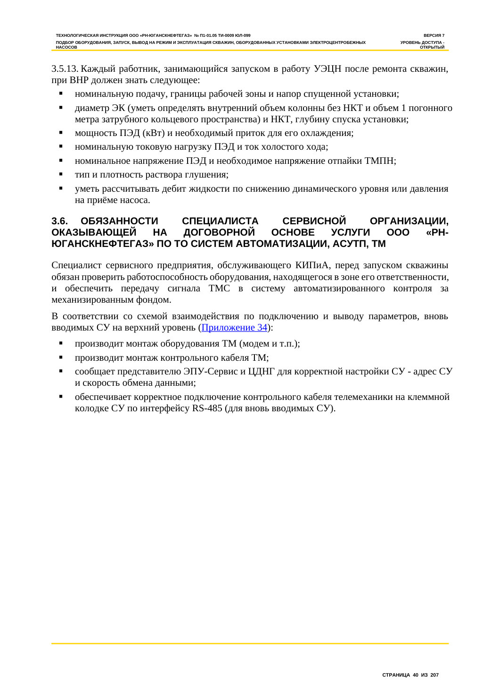
СТРАНИЦА 40 ИЗ 207
ТЕХНОЛОГИЧЕСКАЯ ИНСТРУКЦИЯ ООО «РН-ЮГАНСКНЕФТЕГАЗ» № П1-01.05 ТИ-0009 ЮЛ-099
ВЕРСИЯ 7
ПОДБОР ОБОРУДОВАНИЯ, ЗАПУСК, ВЫВОД НА РЕЖИМ И ЭКСПЛУАТАЦИЯ СКВАЖИН, ОБОРУДОВАННЫХ УСТАНОВКАМИ ЭЛЕКТРОЦЕНТРОБЕЖНЫХ
НАСОСОВ
УРОВЕНЬ ДОСТУПА -
ОТКРЫТЫЙ
3.5.13. Каждый работник, занимающийся запуском в работу УЭЦН после ремонта скважин,
при ВНР должен знать следующее:
номинальную подачу, границы рабочей зоны и напор спущенной установки;
диаметр ЭК (уметь определять внутренний объем колонны без НКТ и объем 1 погонного
метра затрубного кольцевого пространства) и НКТ, глубину спуска установки;
мощность ПЭД (кВт) и необходимый приток для его охлаждения;
номинальную токовую нагрузку ПЭД и ток холостого хода;
номинальное напряжение ПЭД и необходимое напряжение отпайки ТМПН;
тип и плотность раствора глушения;
уметь рассчитывать дебит жидкости по снижению динамического уровня или давления
на приёме насоса.
3.6.
ОБЯЗАННОСТИ
СПЕЦИАЛИСТА
СЕРВИСНОЙ
ОРГАНИЗАЦИИ,
ОКАЗЫВАЮЩЕЙ НА ДОГОВОРНОЙ ОСНОВЕ УСЛУГИ ООО «РН-
ЮГАНСКНЕФТЕГАЗ» ПО ТО СИСТЕМ АВТОМАТИЗАЦИИ, АСУТП, ТМ
Специалист сервисного предприятия, обслуживающего КИПиА, перед запуском скважины
обязан проверить работоспособность оборудования, находящегося в зоне его ответственности,
и обеспечить передачу сигнала ТМС в систему автоматизированного контроля за
механизированным фондом.
В соответствии со схемой взаимодействия по подключению и выводу параметров, вновь
вводимых СУ на верхний уровень (Приложение 34):
производит монтаж оборудования ТМ (модем и т.п.);
производит монтаж контрольного кабеля ТМ;
сообщает представителю ЭПУ-Сервис и ЦДНГ для корректной настройки СУ - адрес СУ
и скорость обмена данными;
обеспечивает корректное подключение контрольного кабеля телемеханики на клеммной
колодке СУ по интерфейсу RS-485 (для вновь вводимых СУ).
40 / 207
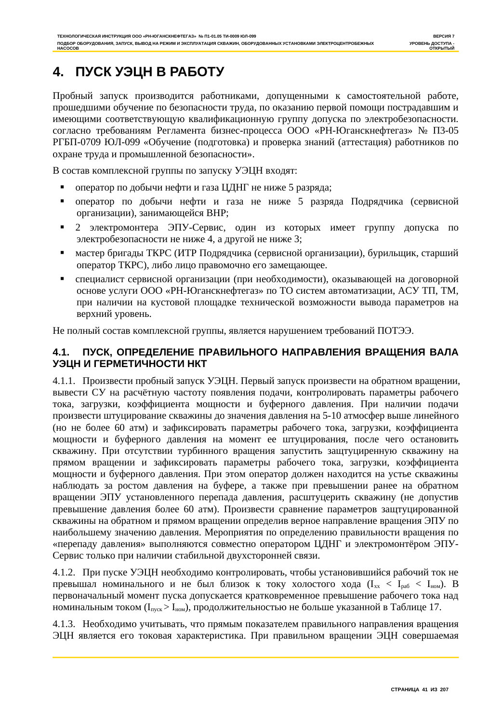
СТРАНИЦА 41 ИЗ 207
ТЕХНОЛОГИЧЕСКАЯ ИНСТРУКЦИЯ ООО «РН-ЮГАНСКНЕФТЕГАЗ» № П1-01.05 ТИ-0009 ЮЛ-099
ВЕРСИЯ 7
ПОДБОР ОБОРУДОВАНИЯ, ЗАПУСК, ВЫВОД НА РЕЖИМ И ЭКСПЛУАТАЦИЯ СКВАЖИН, ОБОРУДОВАННЫХ УСТАНОВКАМИ ЭЛЕКТРОЦЕНТРОБЕЖНЫХ
НАСОСОВ
УРОВЕНЬ ДОСТУПА -
ОТКРЫТЫЙ
4.
ПУСК УЭЦН В РАБОТУ
Пробный запуск производится работниками, допущенными к самостоятельной работе,
прошедшими обучение по безопасности труда, по оказанию первой помощи пострадавшим и
имеющими соответствующую квалификационную группу допуска по электробезопасности.
согласно требованиям Регламента бизнес-процесса ООО «РН-Юганскнефтегаз» № П3-05
РГБП-0709 ЮЛ-099 «Обучение (подготовка) и проверка знаний (аттестация) работников по
охране труда и промышленной безопасности».
В состав комплексной группы по запуску УЭЦН входят:
оператор по добычи нефти и газа ЦДНГ не ниже 5 разряда;
оператор по добычи нефти и газа не ниже 5 разряда Подрядчика (сервисной
организации), занимающейся ВНР;
2 электромонтера ЭПУ-Сервис, один из которых имеет группу допуска по
электробезопасности не ниже 4, а другой не ниже 3;
мастер бригады ТКРС (ИТР Подрядчика (сервисной организации), бурильщик, старший
оператор ТКРС), либо лицо правомочно его замещающее.
специалист сервисной организации (при необходимости), оказывающей на договорной
основе услуги ООО «РН-Юганскнефтегаз» по ТО систем автоматизации, АСУ ТП, ТМ,
при наличии на кустовой площадке технической возможности вывода параметров на
верхний уровень.
Не полный состав комплексной группы, является нарушением требований ПОТЭЭ.
4.1.
ПУСК, ОПРЕДЕЛЕНИЕ ПРАВИЛЬНОГО НАПРАВЛЕНИЯ ВРАЩЕНИЯ ВАЛА
УЭЦН И ГЕРМЕТИЧНОСТИ НКТ
4.1.1. Произвести пробный запуск УЭЦН. Первый запуск произвести на обратном вращении,
вывести СУ на расчётную частоту появления подачи, контролировать параметры рабочего
тока, загрузки, коэффициента мощности и буферного давления. При наличии подачи
произвести штуцирование скважины до значения давления на 5-10 атмосфер выше линейного
(но не более 60 атм) и зафиксировать параметры рабочего тока, загрузки, коэффициента
мощности и буферного давления на момент ее штуцирования, после чего остановить
скважину. При отсутствии турбинного вращения запустить защтуциренную скважину на
прямом вращении и зафиксировать параметры рабочего тока, загрузки, коэффициента
мощности и буферного давления. При этом оператор должен находится на устье скважины
наблюдать за ростом давления на буфере, а также при превышении ранее на обратном
вращении ЭПУ установленного перепада давления, расштуцерить скважину (не допустив
превышение давления более 60 атм). Произвести сравнение параметров защтуцированной
скважины на обратном и прямом вращении определив верное направление вращения ЭПУ по
наибольшему значению давления. Мероприятия по определению правильности вращения по
«перепаду давления» выполняются совместно оператором ЦДНГ и электромонтёром ЭПУ-
Сервис только при наличии стабильной двухсторонней связи.
4.1.2. При пуске УЭЦН необходимо контролировать, чтобы установившийся рабочий ток не
превышал номинального и не был близок к току холостого хода (Iхх < Iраб < Iном). В
первоначальный момент пуска допускается кратковременное превышение рабочего тока над
номинальным током (Iпуск > Iном), продолжительностью не больше указанной в Таблице 17.
4.1.3. Необходимо учитывать, что прямым показателем правильного направления вращения
ЭЦН является его токовая характеристика. При правильном вращении ЭЦН совершаемая
41 / 207
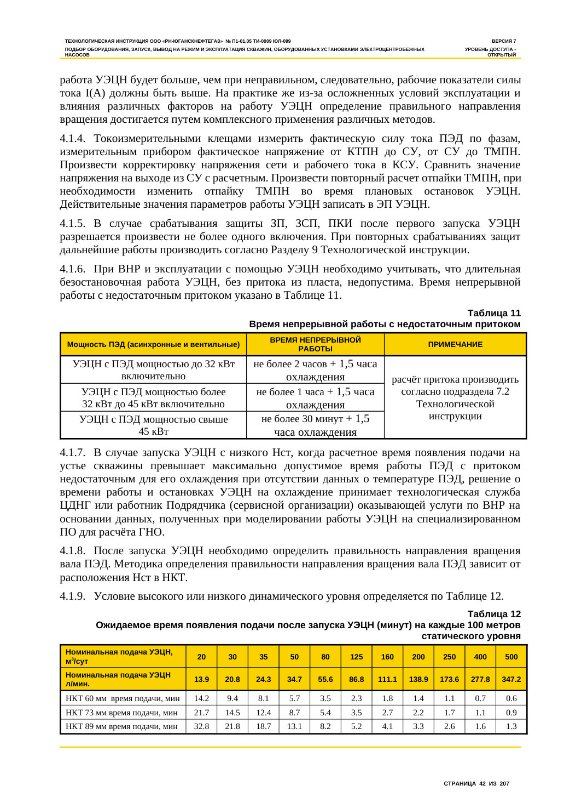
СТРАНИЦА 42 ИЗ 207
ТЕХНОЛОГИЧЕСКАЯ ИНСТРУКЦИЯ ООО «РН-ЮГАНСКНЕФТЕГАЗ» № П1-01.05 ТИ-0009 ЮЛ-099
ВЕРСИЯ 7
ПОДБОР ОБОРУДОВАНИЯ, ЗАПУСК, ВЫВОД НА РЕЖИМ И ЭКСПЛУАТАЦИЯ СКВАЖИН, ОБОРУДОВАННЫХ УСТАНОВКАМИ ЭЛЕКТРОЦЕНТРОБЕЖНЫХ
НАСОСОВ
УРОВЕНЬ ДОСТУПА -
ОТКРЫТЫЙ
работа УЭЦН будет больше, чем при неправильном, следовательно, рабочие показатели силы
тока I(А) должны быть выше. На практике же из-за осложненных условий эксплуатации и
влияния различных факторов на работу УЭЦН определение правильного направления
вращения достигается путем комплексного применения различных методов.
4.1.4. Токоизмерительными клещами измерить фактическую силу тока ПЭД по фазам,
измерительным прибором фактическое напряжение от КТПН до СУ, от СУ до ТМПН.
Произвести корректировку напряжения сети и рабочего тока в КСУ. Сравнить значение
напряжения на выходе из СУ с расчетным. Произвести повторный расчет отпайки ТМПН, при
необходимости изменить отпайку ТМПН во время плановых остановок УЭЦН.
Действительные значения параметров работы УЭЦН записать в ЭП УЭЦН.
4.1.5. В случае срабатывания защиты ЗП, ЗСП, ПКИ после первого запуска УЭЦН
разрешается произвести не более одного включения. При повторных срабатываниях защит
дальнейшие работы производить согласно Разделу 9 Технологической инструкции.
4.1.6. При ВНР и эксплуатации с помощью УЭЦН необходимо учитывать, что длительная
безостановочная работа УЭЦН, без притока из пласта, недопустима. Время непрерывной
работы с недостаточным притоком указано в Таблице 11.
Таблица 11
Время непрерывной работы с недостаточным притоком
Мощность ПЭД (асинхронные и вентильные)
ВРЕМЯ НЕПРЕРЫВНОЙ
РАБОТЫ
ПРИМЕЧАНИЕ
УЭЦН с ПЭД мощностью до 32 кВт
включительно
не более 2 часов + 1,5 часа
охлаждения
расчёт притока производить
согласно подраздела 7.2
Технологической
инструкции
УЭЦН с ПЭД мощностью более
32 кВт до 45 кВт включительно
не более 1 часа + 1,5 часа
охлаждения
УЭЦН с ПЭД мощностью свыше
45 кВт
не более 30 минут + 1,5
часа охлаждения
4.1.7. В случае запуска УЭЦН с низкого Нст, когда расчетное время появления подачи на
устье скважины превышает максимально допустимое время работы ПЭД с притоком
недостаточным для его охлаждения при отсутствии данных о температуре ПЭД, решение о
времени работы и остановках УЭЦН на охлаждение принимает технологическая служба
ЦДНГ или работник Подрядчика (сервисной организации) оказывающей услуги по ВНР на
основании данных, полученных при моделировании работы УЭЦН на специализированном
ПО для расчёта ГНО.
4.1.8. После запуска УЭЦН необходимо определить правильность направления вращения
вала ПЭД. Методика определения правильности направления вращения вала ПЭД зависит от
расположения Нст в НКТ.
4.1.9. Условие высокого или низкого динамического уровня определяется по Таблице 12.
Таблица 12
Ожидаемое время появления подачи после запуска УЭЦН (минут) на каждые 100 метров
статического уровня
Номинальная подача УЭЦН,
м3/сут
20
30
35
50
80
125
160
200
250
400
500
Номинальная подача УЭЦН
л/мин.
13.9
20.8
24.3
34.7
55.6
86.8
111.1
138.9
173.6
277.8
347.2
НКТ 60 мм время подачи, мин
14.2
9.4
8.1
5.7
3.5
2.3
1.8
1.4
1.1
0.7
0.6
НКТ 73 мм время подачи, мин
21.7
14.5
12.4
8.7
5.4
3.5
2.7
2.2
1.7
1.1
0.9
НКТ 89 мм время подачи, мин
32.8
21.8
18.7
13.1
8.2
5.2
4.1
3.3
2.6
1.6
1.3
42 / 207
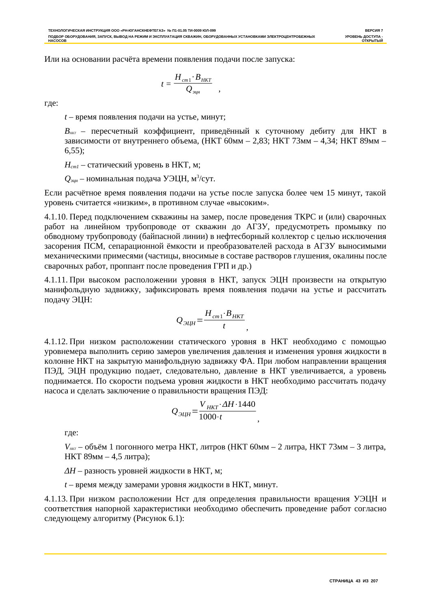
СТРАНИЦА 43 ИЗ 207
ТЕХНОЛОГИЧЕСКАЯ ИНСТРУКЦИЯ ООО «РН-ЮГАНСКНЕФТЕГАЗ» № П1-01.05 ТИ-0009 ЮЛ-099
ВЕРСИЯ 7
ПОДБОР ОБОРУДОВАНИЯ, ЗАПУСК, ВЫВОД НА РЕЖИМ И ЭКСПЛУАТАЦИЯ СКВАЖИН, ОБОРУДОВАННЫХ УСТАНОВКАМИ ЭЛЕКТРОЦЕНТРОБЕЖНЫХ
НАСОСОВ
УРОВЕНЬ ДОСТУПА -
ОТКРЫТЫЙ
Или на основании расчёта времени появления подачи после запуска:
,
где:
t – время появления подачи на устье, минут;
ВНКТ – пересчетный коэффициент, приведённый к суточному дебиту для НКТ в
зависимости от внутреннего объема, (НКТ 60мм – 2,83; НКТ 73мм – 4,34; НКТ 89мм –
6,55);
Нст1 – статический уровень в НКТ, м;
Qэцн – номинальная подача УЭЦН, м3/сут.
Если расчётное время появления подачи на устье после запуска более чем 15 минут, такой
уровень считается «низким», в противном случае «высоким».
4.1.10. Перед подключением скважины на замер, после проведения ТКРС и (или) сварочных
работ на линейном трубопроводе от скважин до АГЗУ, предусмотреть промывку по
обводному трубопроводу (байпасной линии) в нефтесборный коллектор с целью исключения
засорения ПСМ, сепарационной ёмкости и преобразователей расхода в АГЗУ выносимыми
механическими примесями (частицы, вносимые в составе растворов глушения, окалины после
сварочных работ, проппант после проведения ГРП и др.)
4.1.11. При высоком расположении уровня в НКТ, запуск ЭЦН произвести на открытую
манифольдную задвижку, зафиксировать время появления подачи на устье и рассчитать
подачу ЭЦН:
QЭЦН= H ст1⋅BНКТ
t
,
4.1.12. При низком расположении статического уровня в НКТ необходимо с помощью
уровнемера выполнить серию замеров увеличения давления и изменения уровня жидкости в
колонне НКТ на закрытую манифольдную задвижку ФА. При любом направлении вращения
ПЭД, ЭЦН продукцию подает, следовательно, давление в НКТ увеличивается, а уровень
поднимается. По скорости подъема уровня жидкости в НКТ необходимо рассчитать подачу
насоса и сделать заключение о правильности вращения ПЭД:
QЭЦН=V НКТ⋅ΔН⋅1440
1000⋅t
,
где:
VНКТ – объём 1 погонного метра НКТ, литров (НКТ 60мм – 2 литра, НКТ 73мм – 3 литра,
НКТ 89мм – 4,5 литра);
ΔН – разность уровней жидкости в НКТ, м;
t – время между замерами уровня жидкости в НКТ, минут.
4.1.13. При низком расположении Нст для определения правильности вращения УЭЦН и
соответствия напорной характеристики необходимо обеспечить проведение работ согласно
следующему алгоритму (Рисунок 6.1):
t = H cm1∙BHKT
Qэцн
43 / 207
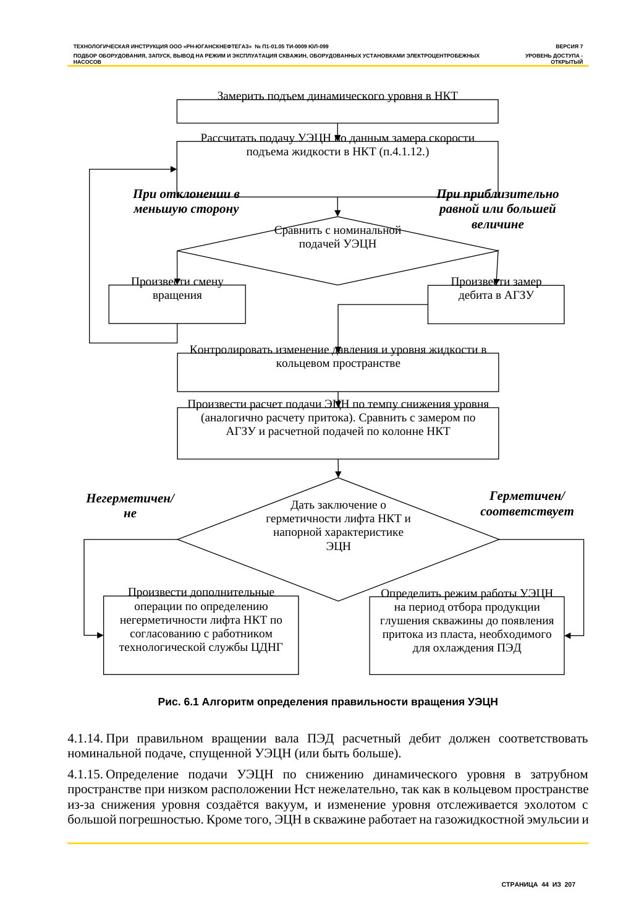
СТРАНИЦА 44 ИЗ 207
ТЕХНОЛОГИЧЕСКАЯ ИНСТРУКЦИЯ ООО «РН-ЮГАНСКНЕФТЕГАЗ» № П1-01.05 ТИ-0009 ЮЛ-099
ВЕРСИЯ 7
ПОДБОР ОБОРУДОВАНИЯ, ЗАПУСК, ВЫВОД НА РЕЖИМ И ЭКСПЛУАТАЦИЯ СКВАЖИН, ОБОРУДОВАННЫХ УСТАНОВКАМИ ЭЛЕКТРОЦЕНТРОБЕЖНЫХ
НАСОСОВ
УРОВЕНЬ ДОСТУПА -
ОТКРЫТЫЙ
Рис. 6.1 Алгоритм определения правильности вращения УЭЦН
4.1.14. При правильном вращении вала ПЭД расчетный дебит должен соответствовать
номинальной подаче, спущенной УЭЦН (или быть больше).
4.1.15. Определение подачи УЭЦН по снижению динамического уровня в затрубном
пространстве при низком расположении Нст нежелательно, так как в кольцевом пространстве
из-за снижения уровня создаётся вакуум, и изменение уровня отслеживается эхолотом с
большой погрешностью. Кроме того, ЭЦН в скважине работает на газожидкостной эмульсии и
Определить режим работы УЭЦН
на период отбора продукции
глушения скважины до появления
притока из пласта, необходимого
для охлаждения ПЭД
Произвести дополнительные
операции по определению
негерметичности лифта НКТ по
согласованию с работником
технологической службы ЦДНГ
Герметичен/
соответствует
Негерметичен/
не
Дать заключение о
герметичности лифта НКТ и
напорной характеристике
ЭЦН
Произвести расчет подачи ЭЦН по темпу снижения уровня
(аналогично расчету притока). Сравнить с замером по
АГЗУ и расчетной подачей по колонне НКТ
Контролировать изменение давления и уровня жидкости в
кольцевом пространстве
При приблизительно
равной или большей
величине
Произвести замер
дебита в АГЗУ
При отклонении в
меньшую сторону
Произвести смену
вращения
Сравнить с номинальной
подачей УЭЦН
Замерить подъем динамического уровня в НКТ
Рассчитать подачу УЭЦН по данным замера скорости
подъема жидкости в НКТ (п.4.1.12.)
44 / 207
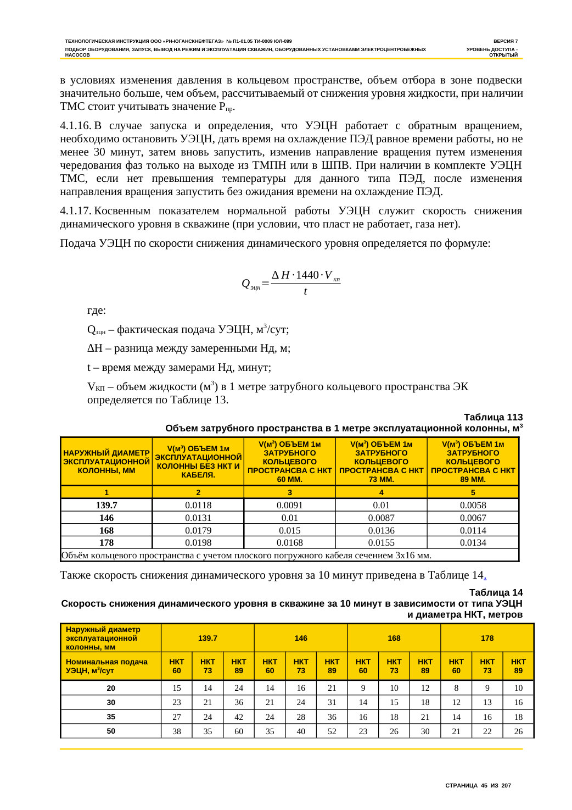
СТРАНИЦА 45 ИЗ 207
ТЕХНОЛОГИЧЕСКАЯ ИНСТРУКЦИЯ ООО «РН-ЮГАНСКНЕФТЕГАЗ» № П1-01.05 ТИ-0009 ЮЛ-099
ВЕРСИЯ 7
ПОДБОР ОБОРУДОВАНИЯ, ЗАПУСК, ВЫВОД НА РЕЖИМ И ЭКСПЛУАТАЦИЯ СКВАЖИН, ОБОРУДОВАННЫХ УСТАНОВКАМИ ЭЛЕКТРОЦЕНТРОБЕЖНЫХ
НАСОСОВ
УРОВЕНЬ ДОСТУПА -
ОТКРЫТЫЙ
в условиях изменения давления в кольцевом пространстве, объем отбора в зоне подвески
значительно больше, чем объем, рассчитываемый от снижения уровня жидкости, при наличии
ТМС стоит учитывать значение Рпр.
4.1.16. В случае запуска и определения, что УЭЦН работает с обратным вращением,
необходимо остановить УЭЦН, дать время на охлаждение ПЭД равное времени работы, но не
менее 30 минут, затем вновь запустить, изменив направление вращения путем изменения
чередования фаз только на выходе из ТМПН или в ШПВ. При наличии в комплекте УЭЦН
ТМС, если нет превышения температуры для данного типа ПЭД, после изменения
направления вращения запустить без ожидания времени на охлаждение ПЭД.
4.1.17. Косвенным показателем нормальной работы УЭЦН служит скорость снижения
динамического уровня в скважине (при условии, что пласт не работает, газа нет).
Подача УЭЦН по скорости снижения динамического уровня определяется по формуле:
Qэцн= ∆Н ∙1440∙V кп
t
где:
Qэцн – фактическая подача УЭЦН, м3/сут;
∆Н – разница между замеренными Нд, м;
t – время между замерами Нд, минут;
VКП – объем жидкости (м3) в 1 метре затрубного кольцевого пространства ЭК
определяется по Таблице 13.
Таблица 113
Объем затрубного пространства в 1 метре эксплуатационной колонны, м3
НАРУЖНЫЙ ДИАМЕТР
ЭКСПЛУАТАЦИОННОЙ
КОЛОННЫ, ММ
V(м3) ОБЪЕМ 1м
ЭКСПЛУАТАЦИОННОЙ
КОЛОННЫ БЕЗ НКТ И
КАБЕЛЯ.
V(м3) ОБЪЕМ 1м
ЗАТРУБНОГО
КОЛЬЦЕВОГО
ПРОСТРАНСВА С НКТ
60 ММ.
V(м3) ОБЪЕМ 1м
ЗАТРУБНОГО
КОЛЬЦЕВОГО
ПРОСТРАНСВА С НКТ
73 ММ.
V(м3) ОБЪЕМ 1м
ЗАТРУБНОГО
КОЛЬЦЕВОГО
ПРОСТРАНСВА С НКТ
89 ММ.
1
2
3
4
5
139.7
0.0118
0.0091
0.01
0.0058
146
0.0131
0.01
0.0087
0.0067
168
0.0179
0.015
0.0136
0.0114
178
0.0198
0.0168
0.0155
0.0134
Объём кольцевого пространства с учетом плоского погружного кабеля сечением 3х16 мм.
Также скорость снижения динамического уровня за 10 минут приведена в Таблице 14.
Таблица 14
Скорость снижения динамического уровня в скважине за 10 минут в зависимости от типа УЭЦН
и диаметра НКТ, метров
Наружный диаметр
эксплуатационной
колонны, мм
139.7
146
168
178
Номинальная подача
УЭЦН, м3/сут
НКТ
60
НКТ
73
НКТ
89
НКТ
60
НКТ
73
НКТ
89
НКТ
60
НКТ
73
НКТ
89
НКТ
60
НКТ
73
НКТ
89
20
15
14
24
14
16
21
9
10
12
8
9
10
30
23
21
36
21
24
31
14
15
18
12
13
16
35
27
24
42
24
28
36
16
18
21
14
16
18
50
38
35
60
35
40
52
23
26
30
21
22
26
45 / 207
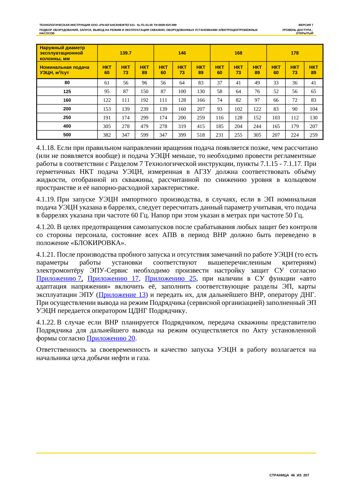
СТРАНИЦА 46 ИЗ 207
ТЕХНОЛОГИЧЕСКАЯ ИНСТРУКЦИЯ ООО «РН-ЮГАНСКНЕФТЕГАЗ» № П1-01.05 ТИ-0009 ЮЛ-099
ВЕРСИЯ 7
ПОДБОР ОБОРУДОВАНИЯ, ЗАПУСК, ВЫВОД НА РЕЖИМ И ЭКСПЛУАТАЦИЯ СКВАЖИН, ОБОРУДОВАННЫХ УСТАНОВКАМИ ЭЛЕКТРОЦЕНТРОБЕЖНЫХ
НАСОСОВ
УРОВЕНЬ ДОСТУПА -
ОТКРЫТЫЙ
Наружный диаметр
эксплуатационной
колонны, мм
139.7
146
168
178
Номинальная подача
УЭЦН, м3/сут
НКТ
60
НКТ
73
НКТ
89
НКТ
60
НКТ
73
НКТ
89
НКТ
60
НКТ
73
НКТ
89
НКТ
60
НКТ
73
НКТ
89
80
61
56
96
56
64
83
37
41
49
33
36
41
125
95
87
150
87
100
130
58
64
76
52
56
65
160
122
111
192
111
128
166
74
82
97
66
72
83
200
153
139
239
139
160
207
93
102
122
83
90
104
250
191
174
299
174
200
259
116
128
152
103
112
130
400
305
278
479
278
319
415
185
204
244
165
179
207
500
382
347
599
347
399
518
231
255
305
207
224
259
4.1.18. Если при правильном направлении вращения подача появляется позже, чем рассчитано
(или не появляется вообще) и подача УЭЦН меньше, то необходимо провести регламентные
работы в соответствии с Разделом 7 Технологической инструкции, пункты 7.1.15 - 7.1.17. При
герметичных НКТ подача УЭЦН, измеренная в АГЗУ должна соответствовать объёму
жидкости, отобранной из скважины, рассчитанной по снижению уровня в кольцевом
пространстве и её напорно-расходной характеристике.
4.1.19. При запуске УЭЦН импортного производства, в случаях, если в ЭП номинальная
подача УЭЦН указана в баррелях, следует пересчитать данный параметр учитывая, что подача
в баррелях указана при частоте 60 Гц. Напор при этом указан в метрах при частоте 50 Гц.
4.1.20. В целях предотвращения самозапусков после срабатывания любых защит без контроля
со стороны персонала, состояние всех АПВ в период ВНР должно быть переведено в
положение «БЛОКИРОВКА».
4.1.21. После производства пробного запуска и отсутствия замечаний по работе УЭЦН (то есть
параметры работы установки соответствуют вышеперечисленным критериям)
электромонтёру ЭПУ-Сервис необходимо произвести настройку защит CУ согласно
Приложению
7 , Приложению 17, Приложению 25, при наличии в СУ функции «авто
адаптация напряжения» включить её, заполнить соответствующие разделы ЭП, карты
эксплуатации ЭПУ (Приложение 13) и передать их, для дальнейшего ВНР, оператору ДНГ.
При осуществлении вывода на режим Подрядчика (сервисной организацией) заполненный ЭП
УЭЦН передается оператором ЦДНГ Подрядчику.
4.1.22. В случае если ВНР планируется Подрядчиком, передача скважины представителю
Подрядчика для дальнейшего вывода на режим осуществляется по Акту установленной
формы согласно Приложению 20.
Ответственность за своевременность и качество запуска УЭЦН в работу возлагается на
начальника цеха добычи нефти и газа.
46 / 207
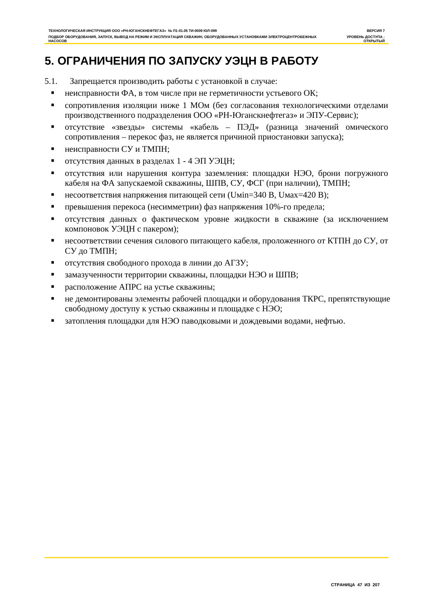
СТРАНИЦА 47 ИЗ 207
ТЕХНОЛОГИЧЕСКАЯ ИНСТРУКЦИЯ ООО «РН-ЮГАНСКНЕФТЕГАЗ» № П1-01.05 ТИ-0009 ЮЛ-099
ВЕРСИЯ 7
ПОДБОР ОБОРУДОВАНИЯ, ЗАПУСК, ВЫВОД НА РЕЖИМ И ЭКСПЛУАТАЦИЯ СКВАЖИН, ОБОРУДОВАННЫХ УСТАНОВКАМИ ЭЛЕКТРОЦЕНТРОБЕЖНЫХ
НАСОСОВ
УРОВЕНЬ ДОСТУПА -
ОТКРЫТЫЙ
5. ОГРАНИЧЕНИЯ ПО ЗАПУСКУ УЭЦН В РАБОТУ
5.1.
Запрещается производить работы с установкой в случае:
неисправности ФА, в том числе при не герметичности устьевого ОК;
сопротивления изоляции ниже 1 МОм (без согласования технологическими отделами
производственного подразделения ООО «РН-Юганскнефтегаз» и ЭПУ-Сервис);
отсутствие «звезды» системы «кабель – ПЭД» (разница значений омического
сопротивления – перекос фаз, не является причиной приостановки запуска);
неисправности СУ и ТМПН;
отсутствия данных в разделах 1 - 4 ЭП УЭЦН;
отсутствия или нарушения контура заземления: площадки НЭО, брони погружного
кабеля на ФА запускаемой скважины, ШПВ, СУ, ФСГ (при наличии), ТМПН;
несоответствия напряжения питающей сети (Uмin=340 В, Uмах=420 В);
превышения перекоса (несимметрии) фаз напряжения 10%-го предела;
отсутствия данных о фактическом уровне жидкости в скважине (за исключением
компоновок УЭЦН с пакером);
несоответствии сечения силового питающего кабеля, проложенного от КТПН до СУ, от
СУ до ТМПН;
отсутствия свободного прохода в линии до АГЗУ;
замазученности территории скважины, площадки НЭО и ШПВ;
расположение АПРС на устье скважины;
не демонтированы элементы рабочей площадки и оборудования ТКРС, препятствующие
свободному доступу к устью скважины и площадке с НЭО;
затопления площадки для НЭО паводковыми и дождевыми водами, нефтью.
47 / 207
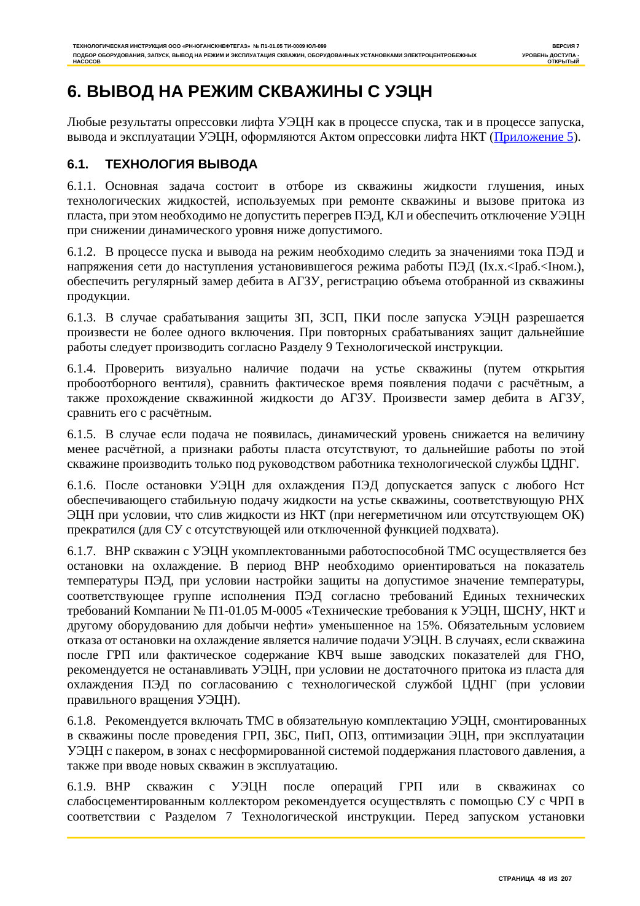
СТРАНИЦА 48 ИЗ 207
ТЕХНОЛОГИЧЕСКАЯ ИНСТРУКЦИЯ ООО «РН-ЮГАНСКНЕФТЕГАЗ» № П1-01.05 ТИ-0009 ЮЛ-099
ВЕРСИЯ 7
ПОДБОР ОБОРУДОВАНИЯ, ЗАПУСК, ВЫВОД НА РЕЖИМ И ЭКСПЛУАТАЦИЯ СКВАЖИН, ОБОРУДОВАННЫХ УСТАНОВКАМИ ЭЛЕКТРОЦЕНТРОБЕЖНЫХ
НАСОСОВ
УРОВЕНЬ ДОСТУПА -
ОТКРЫТЫЙ
6. ВЫВОД НА РЕЖИМ СКВАЖИНЫ С УЭЦН
Любые результаты опрессовки лифта УЭЦН как в процессе спуска, так и в процессе запуска,
вывода и эксплуатации УЭЦН, оформляются Актом опрессовки лифта НКТ (Приложение 5).
6.1.
ТЕХНОЛОГИЯ ВЫВОДА
6.1.1. Основная задача состоит в отборе из скважины жидкости глушения, иных
технологических жидкостей, используемых при ремонте скважины и вызове притока из
пласта, при этом необходимо не допустить перегрев ПЭД, КЛ и обеспечить отключение УЭЦН
при снижении динамического уровня ниже допустимого.
6.1.2. В процессе пуска и вывода на режим необходимо следить за значениями тока ПЭД и
напряжения сети до наступления установившегося режима работы ПЭД (Iх.х.<Iраб.<Iном.),
обеспечить регулярный замер дебита в АГЗУ, регистрацию объема отобранной из скважины
продукции.
6.1.3. В случае срабатывания защиты ЗП, ЗСП, ПКИ после запуска УЭЦН разрешается
произвести не более одного включения. При повторных срабатываниях защит дальнейшие
работы следует производить согласно Разделу 9 Технологической инструкции.
6.1.4. Проверить визуально наличие подачи на устье скважины (путем открытия
пробоотборного вентиля), сравнить фактическое время появления подачи с расчётным, а
также прохождение скважинной жидкости до АГЗУ. Произвести замер дебита в АГЗУ,
сравнить его с расчётным.
6.1.5. В случае если подача не появилась, динамический уровень снижается на величину
менее расчётной, а признаки работы пласта отсутствуют, то дальнейшие работы по этой
скважине производить только под руководством работника технологической службы ЦДНГ.
6.1.6. После остановки УЭЦН для охлаждения ПЭД допускается запуск с любого Нст
обеспечивающего стабильную подачу жидкости на устье скважины, соответствующую РНХ
ЭЦН при условии, что слив жидкости из НКТ (при негерметичном или отсутствующем ОК)
прекратился (для СУ с отсутствующей или отключенной функцией подхвата).
6.1.7. ВНР скважин с УЭЦН укомплектованными работоспособной ТМС осуществляется без
остановки на охлаждение. В период ВНР необходимо ориентироваться на показатель
температуры ПЭД, при условии настройки защиты на допустимое значение температуры,
соответствующее группе исполнения ПЭД согласно требований Единых технических
требований Компании № П1-01.05 М-0005 «Технические требования к УЭЦН, ШСНУ, НКТ и
другому оборудованию для добычи нефти» уменьшенное на 15%. Обязательным условием
отказа от остановки на охлаждение является наличие подачи УЭЦН. В случаях, если скважина
после ГРП или фактическое содержание КВЧ выше заводских показателей для ГНО,
рекомендуется не останавливать УЭЦН, при условии не достаточного притока из пласта для
охлаждения ПЭД по согласованию с технологической службой ЦДНГ (при условии
правильного вращения УЭЦН).
6.1.8. Рекомендуется включать ТМС в обязательную комплектацию УЭЦН, смонтированных
в скважины после проведения ГРП, ЗБС, ПиП, ОПЗ, оптимизации ЭЦН, при эксплуатации
УЭЦН с пакером, в зонах с несформированной системой поддержания пластового давления, а
также при вводе новых скважин в эксплуатацию.
6.1.9. ВНР скважин с УЭЦН после операций ГРП или в скважинах со
слабосцементированным коллектором рекомендуется осуществлять с помощью СУ с ЧРП в
соответствии с Разделом 7 Технологической инструкции. Перед запуском установки
48 / 207
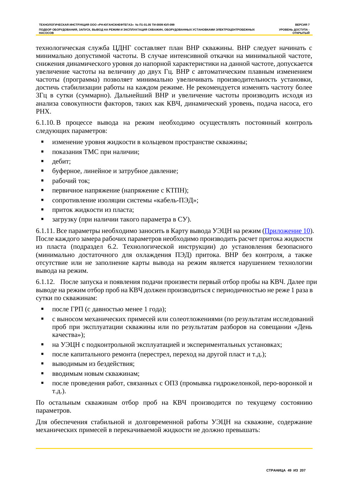
СТРАНИЦА 49 ИЗ 207
ТЕХНОЛОГИЧЕСКАЯ ИНСТРУКЦИЯ ООО «РН-ЮГАНСКНЕФТЕГАЗ» № П1-01.05 ТИ-0009 ЮЛ-099
ВЕРСИЯ 7
ПОДБОР ОБОРУДОВАНИЯ, ЗАПУСК, ВЫВОД НА РЕЖИМ И ЭКСПЛУАТАЦИЯ СКВАЖИН, ОБОРУДОВАННЫХ УСТАНОВКАМИ ЭЛЕКТРОЦЕНТРОБЕЖНЫХ
НАСОСОВ
УРОВЕНЬ ДОСТУПА -
ОТКРЫТЫЙ
технологическая служба ЦДНГ составляет план ВНР скважины. ВНР следует начинать с
минимально допустимой частоты. В случае интенсивной откачки на минимальной частоте,
снижения динамического уровня до напорной характеристики на данной частоте, допускается
увеличение частоты на величину до двух Гц. ВНР с автоматическим плавным изменением
частоты (программа) позволяет минимально увеличивать производительность установки,
достичь стабилизации работы на каждом режиме. Не рекомендуется изменять частоту более
3Гц в сутки (суммарно). Дальнейший ВНР и увеличение частоты производить исходя из
анализа совокупности факторов, таких как КВЧ, динамический уровень, подача насоса, его
РНХ.
6.1.10. В процессе вывода на режим необходимо осуществлять постоянный контроль
следующих параметров:
изменение уровня жидкости в кольцевом пространстве скважины;
показания ТМС при наличии;
дебит;
буферное, линейное и затрубное давление;
рабочий ток;
первичное напряжение (напряжение с КТПН);
сопротивление изоляции системы «кабель-ПЭД»;
приток жидкости из пласта;
загрузку (при наличии такого параметра в СУ).
6.1.11. Все параметры необходимо заносить в Карту вывода УЭЦН на режим (Приложение 10).
После каждого замера рабочих параметров необходимо производить расчет притока жидкости
из пласта (подраздел 6.2. Технологической инструкции) до установления безопасного
(минимально достаточного для охлаждения ПЭД) притока. ВНР без контроля, а также
отсутствие или не заполнение карты вывода на режим является нарушением технологии
вывода на режим.
6.1.12. После запуска и появления подачи произвести первый отбор пробы на КВЧ. Далее при
выводе на режим отбор проб на КВЧ должен производиться с периодичностью не реже 1 раза в
сутки по скважинам:
после ГРП (с давностью менее 1 года);
с выносом механических примесей или солеотложениями (по результатам исследований
проб при эксплуатации скважины или по результатам разборов на совещании «День
качества»);
на УЭЦН с подконтрольной эксплуатацией и экспериментальных установках;
после капитального ремонта (перестрел, переход на другой пласт и т.д.);
выводимым из бездействия;
вводимым новым скважинам;
после проведения работ, связанных с ОПЗ (промывка гидрожелонкой, перо-воронкой и
т.д.).
По остальным скважинам отбор проб на КВЧ производится по текущему состоянию
параметров.
Для обеспечения стабильной и долговременной работы УЭЦН на скважине, содержание
механических примесей в перекачиваемой жидкости не должно превышать:
49 / 207
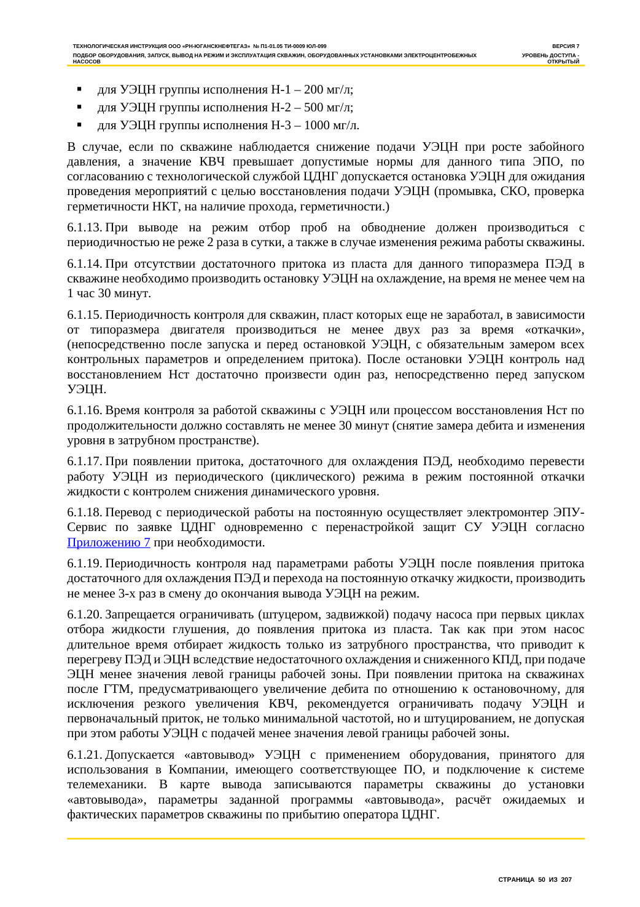
СТРАНИЦА 50 ИЗ 207
ТЕХНОЛОГИЧЕСКАЯ ИНСТРУКЦИЯ ООО «РН-ЮГАНСКНЕФТЕГАЗ» № П1-01.05 ТИ-0009 ЮЛ-099
ВЕРСИЯ 7
ПОДБОР ОБОРУДОВАНИЯ, ЗАПУСК, ВЫВОД НА РЕЖИМ И ЭКСПЛУАТАЦИЯ СКВАЖИН, ОБОРУДОВАННЫХ УСТАНОВКАМИ ЭЛЕКТРОЦЕНТРОБЕЖНЫХ
НАСОСОВ
УРОВЕНЬ ДОСТУПА -
ОТКРЫТЫЙ
для УЭЦН группы исполнения Н-1 – 200 мг/л;
для УЭЦН группы исполнения Н-2 – 500 мг/л;
для УЭЦН группы исполнения Н-3 – 1000 мг/л.
В случае, если по скважине наблюдается снижение подачи УЭЦН при росте забойного
давления, а значение КВЧ превышает допустимые нормы для данного типа ЭПО, по
согласованию с технологической службой ЦДНГ допускается остановка УЭЦН для ожидания
проведения мероприятий с целью восстановления подачи УЭЦН (промывка, СКО, проверка
герметичности НКТ, на наличие прохода, герметичности.)
6.1.13. При выводе на режим отбор проб на обводнение должен производиться с
периодичностью не реже 2 раза в сутки, а также в случае изменения режима работы скважины.
6.1.14. При отсутствии достаточного притока из пласта для данного типоразмера ПЭД в
скважине необходимо производить остановку УЭЦН на охлаждение, на время не менее чем на
1 час 30 минут.
6.1.15. Периодичность контроля для скважин, пласт которых еще не заработал, в зависимости
от типоразмера двигателя производиться не менее двух раз за время «откачки»,
(непосредственно после запуска и перед остановкой УЭЦН, с обязательным замером всех
контрольных параметров и определением притока). После остановки УЭЦН контроль над
восстановлением Нст достаточно произвести один раз, непосредственно перед запуском
УЭЦН.
6.1.16. Время контроля за работой скважины с УЭЦН или процессом восстановления Нст по
продолжительности должно составлять не менее 30 минут (снятие замера дебита и изменения
уровня в затрубном пространстве).
6.1.17. При появлении притока, достаточного для охлаждения ПЭД, необходимо перевести
работу УЭЦН из периодического (циклического) режима в режим постоянной откачки
жидкости с контролем снижения динамического уровня.
6.1.18. Перевод с периодической работы на постоянную осуществляет электромонтер ЭПУ-
Сервис по заявке ЦДНГ одновременно с перенастройкой защит СУ УЭЦН согласно
Приложению 7 при необходимости.
6.1.19. Периодичность контроля над параметрами работы УЭЦН после появления притока
достаточного для охлаждения ПЭД и перехода на постоянную откачку жидкости, производить
не менее 3-х раз в смену до окончания вывода УЭЦН на режим.
6.1.20. Запрещается ограничивать (штуцером, задвижкой) подачу насоса при первых циклах
отбора жидкости глушения, до появления притока из пласта. Так как при этом насос
длительное время отбирает жидкость только из затрубного пространства, что приводит к
перегреву ПЭД и ЭЦН вследствие недостаточного охлаждения и сниженного КПД, при подаче
ЭЦН менее значения левой границы рабочей зоны. При появлении притока на скважинах
после ГТМ, предусматривающего увеличение дебита по отношению к остановочному, для
исключения резкого увеличения КВЧ, рекомендуется ограничивать подачу УЭЦН и
первоначальный приток, не только минимальной частотой, но и штуцированием, не допуская
при этом работы УЭЦН с подачей менее значения левой границы рабочей зоны.
6.1.21. Допускается «автовывод» УЭЦН с применением оборудования, принятого для
использования в Компании, имеющего соответствующее ПО, и подключение к системе
телемеханики. В карте вывода записываются параметры скважины до установки
«автовывода», параметры заданной программы «автовывода», расчёт ожидаемых и
фактических параметров скважины по прибытию оператора ЦДНГ.
50 / 207
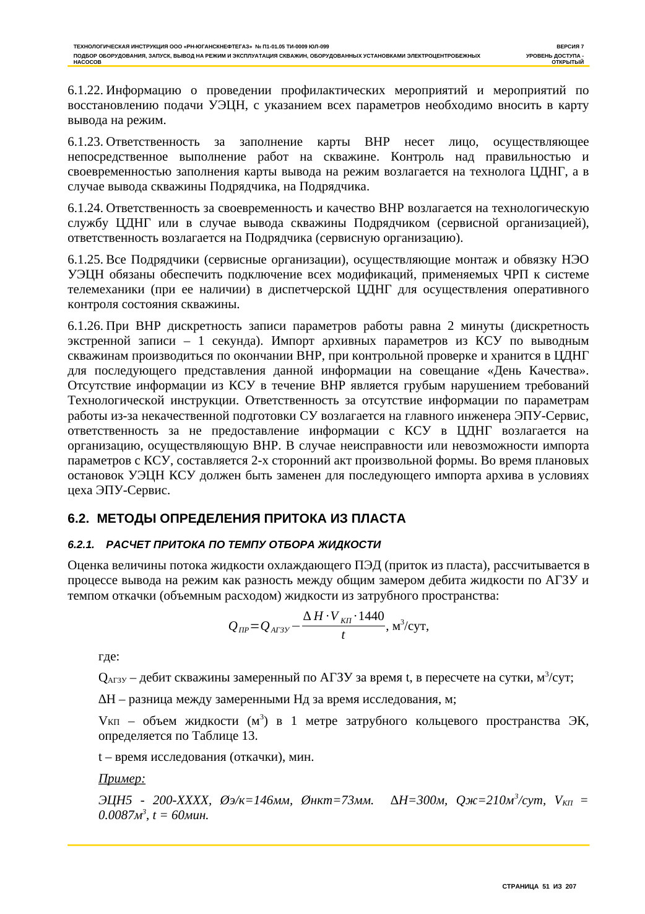
СТРАНИЦА 51 ИЗ 207
ТЕХНОЛОГИЧЕСКАЯ ИНСТРУКЦИЯ ООО «РН-ЮГАНСКНЕФТЕГАЗ» № П1-01.05 ТИ-0009 ЮЛ-099
ВЕРСИЯ 7
ПОДБОР ОБОРУДОВАНИЯ, ЗАПУСК, ВЫВОД НА РЕЖИМ И ЭКСПЛУАТАЦИЯ СКВАЖИН, ОБОРУДОВАННЫХ УСТАНОВКАМИ ЭЛЕКТРОЦЕНТРОБЕЖНЫХ
НАСОСОВ
УРОВЕНЬ ДОСТУПА -
ОТКРЫТЫЙ
6.1.22. Информацию о проведении профилактических мероприятий и мероприятий по
восстановлению подачи УЭЦН, с указанием всех параметров необходимо вносить в карту
вывода на режим.
6.1.23. Ответственность за заполнение карты ВНР несет лицо, осуществляющее
непосредственное выполнение работ на скважине. Контроль над правильностью и
своевременностью заполнения карты вывода на режим возлагается на технолога ЦДНГ, а в
случае вывода скважины Подрядчика, на Подрядчика.
6.1.24. Ответственность за своевременность и качество ВНР возлагается на технологическую
службу ЦДНГ или в случае вывода скважины Подрядчиком (сервисной организацией),
ответственность возлагается на Подрядчика (сервисную организацию).
6.1.25. Все Подрядчики (сервисные организации), осуществляющие монтаж и обвязку НЭО
УЭЦН обязаны обеспечить подключение всех модификаций, применяемых ЧРП к системе
телемеханики (при ее наличии) в диспетчерской ЦДНГ для осуществления оперативного
контроля состояния скважины.
6.1.26. При ВНР дискретность записи параметров работы равна 2 минуты (дискретность
экстренной записи – 1 секунда). Импорт архивных параметров из КСУ по выводным
скважинам производиться по окончании ВНР, при контрольной проверке и хранится в ЦДНГ
для последующего представления данной информации на совещание «День Качества».
Отсутствие информации из КСУ в течение ВНР является грубым нарушением требований
Технологической инструкции. Ответственность за отсутствие информации по параметрам
работы из-за некачественной подготовки СУ возлагается на главного инженера ЭПУ-Сервис,
ответственность за не предоставление информации с КСУ в ЦДНГ возлагается на
организацию, осуществляющую ВНР. В случае неисправности или невозможности импорта
параметров с КСУ, составляется 2-х сторонний акт произвольной формы. Во время плановых
остановок УЭЦН КСУ должен быть заменен для последующего импорта архива в условиях
цеха ЭПУ-Сервис.
6.2. МЕТОДЫ ОПРЕДЕЛЕНИЯ ПРИТОКА ИЗ ПЛАСТА
6.2.1.
РАСЧЕТ ПРИТОКА ПО ТЕМПУ ОТБОРА ЖИДКОСТИ
Оценка величины потока жидкости охлаждающего ПЭД (приток из пласта), рассчитывается в
процессе вывода на режим как разность между общим замером дебита жидкости по АГЗУ и
темпом откачки (объемным расходом) жидкости из затрубного пространства:
QПР=Q АГЗУ−∆H ∙V КП ∙1440
t
, м3/сут,
где:
QАГЗУ – дебит скважины замеренный по АГЗУ за время t, в пересчете на сутки, м3/сут;
∆Н – разница между замеренными Нд за время исследования, м;
VКП – объем жидкости (м3) в 1 метре затрубного кольцевого пространства ЭК,
определяется по Таблице 13.
t – время исследования (откачки), мин.
Пример:
ЭЦН5 - 200-ХХХХ, Øэ/к=146мм, Øнкт=73мм. ∆Н=300м, Qж=210м3/сут, VКП =
0.0087м3, t = 60мин.
51 / 207
СТРАНИЦА 52 ИЗ 207
ТЕХНОЛОГИЧЕСКАЯ ИНСТРУКЦИЯ ООО «РН-ЮГАНСКНЕФТЕГАЗ» № П1-01.05 ТИ-0009 ЮЛ-099
ВЕРСИЯ 7
ПОДБОР ОБОРУДОВАНИЯ, ЗАПУСК, ВЫВОД НА РЕЖИМ И ЭКСПЛУАТАЦИЯ СКВАЖИН, ОБОРУДОВАННЫХ УСТАНОВКАМИ ЭЛЕКТРОЦЕНТРОБЕЖНЫХ
НАСОСОВ
УРОВЕНЬ ДОСТУПА -
ОТКРЫТЫЙ
Qпр=210-300*0.0087*1440/60мин =147,4м3/сут составляет приток из пласта.
Минимальный достаточный приток жидкости из пласта для охлаждения ПЭД при его
номинальной загрузке рассчитывается согласно требованиям ТУ завода-изготовителя, а
именно условие обеспечения минимальной скорости потока охлаждающей жидкости:
Qминпр=Sкп∙V ∙86400, м3/сут,
где:
Sкп – площадь кольцевого пространства между корпусом ПЭД и внутренней стенкой
ЭК, м2;
V – минимальная скорость потока охлаждающей жидкости (м/сек) в зависимости от
марки ПЭД согласно Приложению 19. При отсутствии в приложении данных о ПЭД
необходимой мощности и производителя, информацию о минимальной скорости
охлаждающей жидкости необходимо получить в ОРМФ или УК.
Площадь кольцевого пространства между корпусом ПЭД и внутренней стенкой ЭК
рассчитывается по формуле:
Sкп=3,14∙((
Ø эк
2000)
2
−(
Ø пэд
2000)
2
), м2,
где:
Øэк – внутренний диаметр ЭК на глубине спуска ПЭД, мм;
Øпэд – наружный диаметр ПЭД, мм.
Приток необходимый для охлаждения ПЭД при загрузке менее номинального значения
рассчитывается по формуле:
Qпркор=Qминпр∙I раб
2
I ном
2
, где:
Qмин пр – минимальный достаточный приток жидкости из пласта для охлаждения ПЭД
при его номинальной загрузке, м3/сут;
Iраб – рабочий ток ПЭД, Ампер;
Iном – номинальный ток ПЭД, Ампер;
При наличии в комплекте УЭЦН исправного блока погружной телеметрии, допускается
отклонение от рассчитанных значений, которые определяются и обосновываются
технологической службой ЦДНГ с учетом фактических параметров работы УЭЦН,
конструкции ЭК, ТУ на ПЭД от заводов-производителей, поправок на скважинные условия
эксплуатации и т.д. при обязательном условии значения температуры ПЭД не превышающего
его максимальную характеристику (Д1 - 120°С, Д2 - 150°С, Д3 - 170°С) за вычетом 15% запаса.
Например, для ПЭД Д1 (120°С), на выводе на режим допускается работа без остановки на
охлаждение, если значение температуры ПЭД не достигло 102°С
6.2.2.
РАСЧЕТ ПРИТОКА ПО ВОССТАНОВЛЕНИЮ УРОВНЯ В ЭКСПЛУАТАЦИОННОЙ КОЛОННЕ
Приток жидкости из пласта после остановки УЭЦН необходимо определять после
прекращения слива жидкости из колонны НКТ (если клапан негерметичен или отсутствует);
Время в течение, которого происходит слив жидкости из НКТ (при негерметичном ОК),
вычисляется методом определения изменения уровня жидкости в НКТ с помощью
52 / 207
СТРАНИЦА 53 ИЗ 207
ТЕХНОЛОГИЧЕСКАЯ ИНСТРУКЦИЯ ООО «РН-ЮГАНСКНЕФТЕГАЗ» № П1-01.05 ТИ-0009 ЮЛ-099
ВЕРСИЯ 7
ПОДБОР ОБОРУДОВАНИЯ, ЗАПУСК, ВЫВОД НА РЕЖИМ И ЭКСПЛУАТАЦИЯ СКВАЖИН, ОБОРУДОВАННЫХ УСТАНОВКАМИ ЭЛЕКТРОЦЕНТРОБЕЖНЫХ
НАСОСОВ
УРОВЕНЬ ДОСТУПА -
ОТКРЫТЫЙ
скважинного уровнемера (эхолот), при закрытой манифольдной задвижке ФА. В момент
времени, когда уровень в компрессорных трубах остановился (или начал расти) считается, что
слив жидкости из НКТ прекратился и с этого времени можно определять приток по
восстановлению уровня в затрубном пространстве ЭК.
Косвенным показателем прекращения слива жидкости из НКТ является остановка турбинного
вращения по показаниям контроллера (СУ имеющие такую функцию).
Приток жидкости из пласта необходимо определять по восстановлению уровня жидкости в
затрубном пространстве скважины после каждой остановки УЭЦН в процессе вывода, при
закрытой манифольдной задвижке ФА скважины, используя расчетные данные из Таблицы 13.
Приток рассчитывается по формулам:
для УЭЦН с герметичным ОК:
Q= ∆H ∙V кп∙1440
t
, (м3/сут)
для УЭЦН с отсутствующим или с негерметичным ОК в период слива жидкости из НКТ
(замеры производятся до момента окончания слива)
Q=
(∆H ∙V кп−V нкт∙H ст)∙1440
t
, (м3/сут)
для УЭЦН с отсутствующим или с негерметичным ОК после полного слива жидкости из НКТ
(замеры производятся с момента окончания слива):
Q= ∆H ∙(V кп+V нкт)∙1440
t
, (м3/сут),
где:
Н – изменение уровня в затрубном пространстве за время исследования, м;
Vкп – объем жидкости (м3) в 1 метре затрубного кольцевого пространства ЭК
определяется по Таблице 13;
Vнкт – внутренний объем 1 погонного метра НКТ (НКТ 60мм – 0,002; НКТ 73мм – 0,003;
НКТ 89мм – 0,0045), м3;
Нст – статический уровень в затрубном пространстве и НКТ в момент окончания слива;
t - время исследования, мин.
Постоянный контроль притока из пласта в процессе работы и остановки УЭЦН на охлаждение
позволяет сократить время ВНР и исключить необоснованные запуски и остановки насоса,
которые неблагоприятно влияют на работоспособность погружного оборудования.
53 / 207
СТРАНИЦА 54 ИЗ 207
ТЕХНОЛОГИЧЕСКАЯ ИНСТРУКЦИЯ ООО «РН-ЮГАНСКНЕФТЕГАЗ» № П1-01.05 ТИ-0009 ЮЛ-099
ВЕРСИЯ 7
ПОДБОР ОБОРУДОВАНИЯ, ЗАПУСК, ВЫВОД НА РЕЖИМ И ЭКСПЛУАТАЦИЯ СКВАЖИН, ОБОРУДОВАННЫХ УСТАНОВКАМИ ЭЛЕКТРОЦЕНТРОБЕЖНЫХ
НАСОСОВ
УРОВЕНЬ ДОСТУПА -
ОТКРЫТЫЙ
6.3. ЗАКЛЮЧИТЕЛЬНЫЙ ЭТАП ВЫВОДА СКВАЖИНЫ НА РЕЖИМСкважина
считается вышедшей на режим работы, если фактические параметры достигли
установившихся значений, объясняемых объективными причинами (Qж, Qн,
обводненность, Ндин, F) и рабочей характеристике насоса, динамический уровень
изменяется не более чем на 50 м в сутки, а объём жидкости, отобранный из скважины
равен двум объёмам ее обсадной колонны, но не менее двух объёмов использованной при
ремонте жидкости глушения. Если при производстве ремонта в призабойную зону
пласта закачивались технологические жидкости (носитель пропанта и пр.), то объём
жидкости, отобранный из скважины должен быть равным этому объёму плюс двух
кратный объём жидкости глушения. Еще одним критерием ВНР считается условие
равенства затрубного и линейного давлений (Рз = Рл), которое применимо для
большинства скважин. Если в ЦНДГ есть скважины с низким затрубным давлением, то
технолог при выдаче оператору план-задания на ВНР, обязан сделать об этом отметку.
Подтверждение установившегося режима работы выполняют совместно представители
ЦДНГ, организации ответственной за ВНР и ЭПУ-сервис по заявке ЦДНГ.
6.3.1. Электромонтёр ЭПУ-Сервис устанавливает время самозапуска СУ с учетом времени
самозапуска остальных СУ, подключенных к данному фидеру, согласно карты самозапусков
(Приложение 9), предоставленной ЦДНГ. При выставлении времени самозапуска необходимо
учитывать время слива столба жидкости из НКТ (при негерметичном ОК или его отсутствии
для СУ, не фиксирующих частоту турбинного вращения). При использовании СУ,
фиксирующих частоту турбинного вращения и блокирующих при этом запуск,
устанавливается программа последовательных запусков с периодичностью исключающей
возможность перегруза КТПН.
6.3.2. При наличии в ПО КСУ функции разворота турбинного вращения, расклинивания,
предотвращения отключения по срыву подачи (спецалгоритм), предназначенной для
сокращения времени простоя УЭЦН после отключения электроэнергии, необходимо его
включить и настроить согласно рекомендаций завода-изготовителя, указанных в РЭ ПО с
учётом текущих ограничивающих факторов (тип и мощность ПЭД, Rиз, наработка, питание от
ДГУ). Данное требование распространяется для УЭЦН, работающих в постоянном режиме.
Для УЭЦН, работающих со сниженным Rиз (с отключенной защитой ПКИ) и от ДГУ,
активация спецалгоритма запрещена.
6.3.3. Увеличивается уставка периода записи хронологии событий в обычном режиме с 2-х
минут на время до 2-х часов. Состояние и количество АПВ перенастраивается в соответствии
требованиям Приложения 7 и Приложения 17.
Электромонтёр ЭПУ-Сервис и оператор ДНГ заполняют необходимую информацию в
формуляре СУ.
6.3.4. Если в процессе ВНР не удалось добиться расчётного притока из пласта, необходимого
для стабильной работы УЭЦН, то проводятся работы по ограничению подачи УЭЦН.
Ограничение подачи УЭЦН осуществляется следующими способами:
использование СУ с ЧРП (понижение промышленной частоты тока);
использование штуцера на выкидном манифольде ФА. При использовании схемы
штуцирования следует помнить, что ограничение отбора приводит к снижению КПД
установки, то есть к дополнительному нагреву УЭЦН;
При этом подача насоса должна быть не менее левой границы рабочей зоны с учётом
текущей частоты питающего напряжения (закон «подобия») при условии обеспечения
достаточного охлаждения ПЭД для постоянного режима;
если штуцированием и с помощью частотного регулирования не удаётся добиться
54 / 207
СТРАНИЦА 55 ИЗ 207
ТЕХНОЛОГИЧЕСКАЯ ИНСТРУКЦИЯ ООО «РН-ЮГАНСКНЕФТЕГАЗ» № П1-01.05 ТИ-0009 ЮЛ-099
ВЕРСИЯ 7
ПОДБОР ОБОРУДОВАНИЯ, ЗАПУСК, ВЫВОД НА РЕЖИМ И ЭКСПЛУАТАЦИЯ СКВАЖИН, ОБОРУДОВАННЫХ УСТАНОВКАМИ ЭЛЕКТРОЦЕНТРОБЕЖНЫХ
НАСОСОВ
УРОВЕНЬ ДОСТУПА -
ОТКРЫТЫЙ
стабильного режима работы системы «скважина-УЭЦН», то следует переходить на
работу УЭЦН в периодическом режиме (подраздел 11.11. Технологической инструкции).
6.3.5. При определении программы периодической работы УЭЦН необходимо учитывать
следующие критерии:
режим работы УЭЦН должен обеспечить максимальную депрессию на пласт на
протяжении времени его работы;
настройка программной ячейки СУ не должна допускать остановки УЭЦН по срыву
подачи (срабатывание защиты ЗСП);
работа УЭЦН в режиме АПВ по срыву подачи не допускается.
6.3.6. Решение о дальнейшей эксплуатации УЭЦН не вышедших на режимную работу
принимается технологической службой ЦДНГ.
6.3.7. По окончании ВНР оператор ЦДНГ или представитель Подрядчика (сервисной
организации), занимающийся ВНР, передаёт в технологическую службу ЦДНГ заполненный
ЭП УЭЦН и Карту ВНР, которые хранятся в ЦДНГ до остановки УЭЦН и его передачи в
ремонт.
6.3.8. В целях оценки качества ВНР, совместно с ЭП УЭЦН в ЦДНГ так же должны храниться
в электронном виде оригинального формата архивы параметров УЭЦН, импортируемые из
КСУ после окончания вывода, не позднее проведения контрольной проверки, охватывающие
период с момента вызова подачи. При отсутствии корректных показаний ТМС в архиве
параметров, совместно с ЭП УЭЦН дополнительно должны храниться в электронном виде
оригинального формата записи графиков замеров уровней в скважине в период ВНР.
6.3.9. В случае, если ВНР осуществлялся Подрядчиком, передача скважины представителю
ЦДНГ для дальнейшей эксплуатации осуществляется по Акту установленной формы согласно
Приложению 21.
6.4.
ОСОБЕННОСТИ ЗАПУСКА И ВЫВОДА НА РЕЖИМ ПРИ УСЛОВИИ
КОМПЛЕКТАЦИИ УЭЦН ПОГРУЖНОЙ ТЕЛЕМЕТРИЕЙ
6.4.1. Перед запуском скважины с погружной телеметрией производится настройка ТМС –
приводится в соответствие погружной блок и наземный блок работниками ЭПУ-Сервис.
6.4.2. При запуске скважины после ТКРС при Рз – 0 атм., затруднительно точно определить
Нстат. и изменение Ндин. после запуска УЭЦН в работу. При наличии данных по давлению на
приеме можно уточнить Нстат. и изменение Ндин. Пересчет давления на приеме насоса в
метры столба жидкости производить по формуле:
Н дин(стат)=Lсп−Н погр,
где:
Lсп – глубина спуска насоса;
Нпогр – условный столб жидкости над приемом насоса (глубина погружения под
уровень по вертикали):
H погр=
(Pдатч−Pзатр)∙98.07
ρгж затр∙9,81
,
где:
Рдатч – давление на приеме насоса по показаниям датчика, атм;
Рзатр – затрубное давление, атм;
55 / 207
СТРАНИЦА 56 ИЗ 207
ТЕХНОЛОГИЧЕСКАЯ ИНСТРУКЦИЯ ООО «РН-ЮГАНСКНЕФТЕГАЗ» № П1-01.05 ТИ-0009 ЮЛ-099
ВЕРСИЯ 7
ПОДБОР ОБОРУДОВАНИЯ, ЗАПУСК, ВЫВОД НА РЕЖИМ И ЭКСПЛУАТАЦИЯ СКВАЖИН, ОБОРУДОВАННЫХ УСТАНОВКАМИ ЭЛЕКТРОЦЕНТРОБЕЖНЫХ
НАСОСОВ
УРОВЕНЬ ДОСТУПА -
ОТКРЫТЫЙ
ρгж затр – плотность ГЖС в затрубном пространстве, г/см3 (для скважин, пласт которых
ещё не заработал – плотность раствора глушения (замещения), для скважин, выведенных
в режим - 0.6 – 0.87 г/см3;
9,81 – ускорение свободного падения, м/с2;
98.07 – коэффициент, учитывающий перевод единиц измерения давления из технической
атмосферы (кгс/см2) в Паскаль (1 кгс/см2 = 98066.5 Па).
В упрощённом виде, формула имеет вид:
H погр=
(Pдатч−Pзатр)∙10
ρгж затр
Для наклонно-направленной или горизонтальной скважины, Lсп и Нпогр необходимо привести к
вертикальным значениям, учитывая удлинение ствола скважины.
Пример:
НСП УЭЦН = 3000 м, РПР = 35 атм, РЗ = 24 атм, pгж= 0,65, удлинение ствола скважины на
уровне НСП = 271 м,
НПОГР = (35 – 24) · 10 ꞉ 0,65 = 169 м.
Вертикальный НД = 3000 – 271 – 169 = 2560 м. По данным инклинометрии (Рисунок 6.2)
определяется НД по стволу скважины, соответствующий рассчитанному вертикальному =
2790 м.
Рис. 6.2 Инклинометрия
6.4.3. После запуска УЭЦН в работу при определении правильности направления вращения
валов УЭЦН после пересчета значения давления на приеме насоса в метры столба жидкости
(изменение Ндин) сравнить скорость снижения Рпр (Ндин) со значениями снижения Ндин,
рассчитанными по формуле в пункте 4.1.17. Технологической инструкции. Соответствие
скорости снижения Рпр (Ндин) расчётным значениям косвенно свидетельствует о правильном
направлении вращения.
6.4.4. Данные с погружного датчика о температуре ПЭД необходимо использовать для
контроля за температурным режимом работы УЭЦН. После запуска УЭЦН температура ПЭД
должна набрать рабочее значение, как правило, на 20-30 % выше начальной температуры
(примерно температура пласта) и остановиться на достигнутом значении. Необходимо
56 / 207
СТРАНИЦА 57 ИЗ 207
ТЕХНОЛОГИЧЕСКАЯ ИНСТРУКЦИЯ ООО «РН-ЮГАНСКНЕФТЕГАЗ» № П1-01.05 ТИ-0009 ЮЛ-099
ВЕРСИЯ 7
ПОДБОР ОБОРУДОВАНИЯ, ЗАПУСК, ВЫВОД НА РЕЖИМ И ЭКСПЛУАТАЦИЯ СКВАЖИН, ОБОРУДОВАННЫХ УСТАНОВКАМИ ЭЛЕКТРОЦЕНТРОБЕЖНЫХ
НАСОСОВ
УРОВЕНЬ ДОСТУПА -
ОТКРЫТЫЙ
ориентироваться на изменение рабочей, а не начальной, температуры ПЭД. Если при наличии
подачи рост температуры ПЭД продолжается, это свидетельствует о недостаточном
охлаждении ПЭД, в период отбора жидкости глушения из затрубного пространства.
Допускается продолжать эксплуатацию УЭЦН при обязательном условии наличия подачи до
значения температуры ПЭД не превышающего его максимальную характеристику (Д1 - 120°С,
Д2 - 150°С, Д3 - 170°С) за вычетом 15 % запаса. Например, для ПЭД Д2 (150°С), при выводе на
режим допускается работа без остановки на охлаждение, если значение температуры ПЭД не
достигло 127,5°С, при обязательном условии наличия подачи. Настройка защит при наличии
ТМС после ВНР осуществляется в соответствии с Приложением 7 Технологической
инструкции.
6.4.5. Необходимо определить причину повышения температуры ПЭД, возможными
причинами повышения температуры может быть: недостаточный приток из пласта,
неправильное вращение валов УЭЦН, негерметичность лифта НКТ, недостаточный напор
УЭЦН при текущей частоте.
6.4.6. При ВНР использование данных с погружного датчика (давление на приеме насоса,
температура ПЭД, температура жидкости на приеме насоса, вибрация) совместно с
остальными параметрами работы скважины (Нд, Q и др.) позволяют более точно оценить
режим работы системы «УЭЦН-скважина», уменьшить риск некачественного вывода на
режим и отказа установки на выводе.
6.5.
ОСОБЕННОСТИ ЭКСПЛУАТАЦИИ УЭЦН ПРИ ОТСУТСТВИИ ИЛИ
НЕИСПРАВНОСТИ АГЗУ
6.5.1. Основными проблемами на скважинах с отсутствующим или неработающим АГЗУ,
являются:
контроль за эксплуатацией и работа скважин в аварийных режимах;
невозможность определения продуктивности скважин, следовательно, и связанные с
этим ошибки в подборе и эксплуатации УЭЦН.
6.5.2. На скважинах, где отсутствует или не работает АГЗУ, и нет возможности произвести
замеры другим (переносным, передвижным) оборудованием, вывод всех без исключения
УЭЦН необходимо осуществлять с помощью ЧРП. На данных скважинах комплектацию
УЭЦН рекомендуется производить датчиками погружной телеметрии. Применение ТМС в
данных условиях позволит кратно снизить риск выхода из строя оборудования по причине
работы УЭЦН без подачи. Подробная инструкция по настройке защит с применением данных
с ТМС описана в Приложении 7, а ВНР и эксплуатация УЭЦН осуществляется согласно
подраздела 6.4. Технологической инструкции.
6.5.3. Существуют различные методики определения дебита жидкости по косвенным
параметрам. Наибольшую достоверность дает расчет дебита жидкости по расходно-напорным
характеристикам насоса, выполненный на специализированном ПО по подбору оборудования.
Суть данного метода заключается в точном моделировании на специализированном ПО всех
узлов УЭЦН, которая работает в скважине, и определении дебита жидкости при известных
характеристиках насоса, свойствах флюида и давлении на приеме насоса. Пример применения
данной методики изложен в Приложении
11
.
6.5.4. Определение подачи насоса по Q-H – характеристике. Данный метод применим для
УЭЦН, состоящих из секций с одинаковыми Q-Н – характеристиками, без признаков износа,
засорения или отложения солей.
57 / 207
СТРАНИЦА 58 ИЗ 207
ТЕХНОЛОГИЧЕСКАЯ ИНСТРУКЦИЯ ООО «РН-ЮГАНСКНЕФТЕГАЗ» № П1-01.05 ТИ-0009 ЮЛ-099
ВЕРСИЯ 7
ПОДБОР ОБОРУДОВАНИЯ, ЗАПУСК, ВЫВОД НА РЕЖИМ И ЭКСПЛУАТАЦИЯ СКВАЖИН, ОБОРУДОВАННЫХ УСТАНОВКАМИ ЭЛЕКТРОЦЕНТРОБЕЖНЫХ
НАСОСОВ
УРОВЕНЬ ДОСТУПА -
ОТКРЫТЫЙ
По замеренному или рассчитанному Нд, напор УЭЦН рассчитывается по упрощённой
формуле:
Нэцн = Нд + (Рб - Рз) ∙ 10 (м),
где:
Нэцн - расчётный напор ЭЦН (м);
Нд - уровень жидкости в затрубном пространстве скважины с вычетом удлинения на
глубине Нд (м);
Рб – давление на буфере скважины (атм);
Рз - давление в затрубном пространстве скважины (атм);
По полученному результату рассчитывается напор одной ступени или секции ЭЦН и по
графику Q-Н – характеристиками определяется подача УЭЦН, соответствующая
рассчитанному напору.
Пример 1:
ЭЦНD1000EZ-1528, 256 ступеней, 2 секции по 128 ступеней.
НД = 1750 м, РЗ = 15 атм, РБ = 25 атм, F = 50 Гц, удлинение ствола скважины на уровне НД =
40 м, Нсп УЭЦН = 1915м, НКТ 73х5.5 мм.
НЭЦН = 1750 - 40 + (25 – 15) · 10 = 1810 м. С учётом потерь напора на трение в НКТ (Таблица 5)
НЭЦН = 1810 + 1915 ꞉ 100 · 2,6 = 1860 м,
где
2,6 – потери напора при дебите 120 м3/сут на каждые 100 метров в НКТ 73х5.5, м;
НСТУП = 1860 ꞉ 256 = 7,26 м. Напор секции равен Нсек = 7,26 · 128 = 929,9 м.
По графику Q-H характеристики (Рисунок 6.3), напору секции 930 метров соответствует
подача 72 м3/сут.
Рис. 6.3 Q-H характеристика
58 / 207
СТРАНИЦА 59 ИЗ 207
ТЕХНОЛОГИЧЕСКАЯ ИНСТРУКЦИЯ ООО «РН-ЮГАНСКНЕФТЕГАЗ» № П1-01.05 ТИ-0009 ЮЛ-099
ВЕРСИЯ 7
ПОДБОР ОБОРУДОВАНИЯ, ЗАПУСК, ВЫВОД НА РЕЖИМ И ЭКСПЛУАТАЦИЯ СКВАЖИН, ОБОРУДОВАННЫХ УСТАНОВКАМИ ЭЛЕКТРОЦЕНТРОБЕЖНЫХ
НАСОСОВ
УРОВЕНЬ ДОСТУПА -
ОТКРЫТЫЙ
Пример 2:
ЭЦНМИК5А-320-2400, 448 ступеней
НД = 2728 м, РЗ = 25 атм, РБ = 26 атм, F = 54 Гц, удлинение ствола скважины на уровне НД =
125 м, Нсп УЭЦН = 2800м, НКТ 73х5.5 мм.
НЭЦН = 2728 - 125 + (26 – 25) · 10 = 2613 м. С учётом потерь напора на трение в НКТ (Таблица
5) НЭЦН = 2613 + 2800 ꞉ 100 · 14,9 = 3030 м,
где
14,9 – потери напора при дебите 320 м3/сут на каждые 100 метров в НКТ 73х5.5, м;
НСТУП = 3030 ꞉ 448 = 6,76 м. При F 50 Гц НСТУП = 6,76 · (50 ꞉ 54)2 = 5,8 м.
По графику Q-H характеристики (Рисунок 6.4), напору ступени 5,8 метра соответствует
подача 275 м3/сут.
На частоте 54 Гц Qж = 275 ꞉ 50 · 54 = 297 м3/сут.
Рис. 6.4 Q-H характеристика
6.6.
ОСОБЕННОСТИ ЗАПУСКА, ВЫВОДА НА РЕЖИМ И ЭКСПЛУАТАЦИИ
СКВАЖИН ПРИ НАЛИЧИИ УДАЛЕННОГО УПРАВЛЕНИЯ УЭЦН
Под удаленным управлением УЭЦН понимается наличие технической возможности,
программного обеспечения и средств связи, обеспечивающие удаленное управление
параметрами в КСУ, таких как:
запуск, остановка УЭЦН;
изменение частоты питающего напряжения;
изменение защитных уставок.
Действие данного пункта распространяется на ЦДНГ, где существует возможность
удаленного управления УЭЦН.
При удалённом запуске УЭЦН после ремонта скважины необходимо руководствоваться
требованиями Раздела 4 Технологической инструкции. Запуск при этом производится
посредством программного обеспечения, персоналом из числа технологической службы или
59 / 207
СТРАНИЦА 60 ИЗ 207
ТЕХНОЛОГИЧЕСКАЯ ИНСТРУКЦИЯ ООО «РН-ЮГАНСКНЕФТЕГАЗ» № П1-01.05 ТИ-0009 ЮЛ-099
ВЕРСИЯ 7
ПОДБОР ОБОРУДОВАНИЯ, ЗАПУСК, ВЫВОД НА РЕЖИМ И ЭКСПЛУАТАЦИЯ СКВАЖИН, ОБОРУДОВАННЫХ УСТАНОВКАМИ ЭЛЕКТРОЦЕНТРОБЕЖНЫХ
НАСОСОВ
УРОВЕНЬ ДОСТУПА -
ОТКРЫТЫЙ
оператором Пульта Управления цеха добычи нефти и газа только после подтверждения
оператором ДНГ посредством телефонной или радиосвязи готовности скважины и УЭЦН к
запуску.
В период вывода на режим и эксплуатации УЭЦН изменение частоты питающего напряжения
и защитных уставок посредством программного обеспечения допускается персоналом из
числа технологической службы ЦДНГ.
На период вывода на режим, осуществляемого прокатной или сервисной организацией,
действие данного пункта не распространяется.
После аварийных или плановых отключений электроэнергии, а также остановок УЭЦН для
проведения технологических операций, рекомендуется производить удаленный запуск,
остановку УЭЦН посредством программного обеспечения, персоналом из числа
технологической службы либо оператором ЦДНГ. При этом оператору ДНГ в течение одного
часа после удалённого запуска необходимо убедиться в наличии на устье подачи и прохода
жидкости до АГЗУ на запущенных скважинах.
Порядок удаленного запуска при остановках УЭЦН в результате срабатывания защит во время
вывода на режим и эксплуатации УЭЦН приведен в Таблице 15.
Таблица 15
Порядок выполнения удалённого запуска
ПРИЧИНЫ ОСТАНОВКИ УЭЦН
РАЗРЕШЕНИЕ
УДАЛЁННОГО
ЗАПУСКА
УСЛОВИЯ УДАЛЁННОГО ЗАПУСКА**
Защита по высокому напряжению
Да
Допускается 1 пробный запуск после
восстановления напряжения до допустимой
величины
Защита по низкому напряжению
Да
Допускается 1 пробный запуск после
восстановления напряжения до допустимой
величины
Защита по дисбалансу напряжений
Да
Допускается 1 пробный запуск после
восстановления дисбаланса напряжения до
допустимой величины
Защита по перегрузке
Да*
Допускается 1 пробный запуск
Защита по недогрузке
Да
Допускается 1 пробный запуск
Защита по дисбалансу токов
Да*
Допускается 1 пробный запуск
Защита по недопустимому давлению на
приеме УЭЦН
Да
Допускается 1 пробный запуск после
восстановления давления на приеме УЭЦН
до допустимых значений
Защита по недопустимой температуре ПЭД
(макс/мин)
Да
Допускается 1 пробный запуск после
восстановления температуры ПЭД до
допустимых значений
Защита по вибрации (при наличии
погружного датчика)
Да
Допускается 1 пробный запуск
Защита по сопротивлению изоляции
Нет
-
Аппаратная защита СУ (неисправность
контактора, неисправность УПП, IGBT, МТЗ
и пр.)
Нет
-
Блокировка двери
Нет
-
* - при включенном УКИ;
60 / 207
СТРАНИЦА 61 ИЗ 207
ТЕХНОЛОГИЧЕСКАЯ ИНСТРУКЦИЯ ООО «РН-ЮГАНСКНЕФТЕГАЗ» № П1-01.05 ТИ-0009 ЮЛ-099
ВЕРСИЯ 7
ПОДБОР ОБОРУДОВАНИЯ, ЗАПУСК, ВЫВОД НА РЕЖИМ И ЭКСПЛУАТАЦИЯ СКВАЖИН, ОБОРУДОВАННЫХ УСТАНОВКАМИ ЭЛЕКТРОЦЕНТРОБЕЖНЫХ
НАСОСОВ
УРОВЕНЬ ДОСТУПА -
ОТКРЫТЫЙ
** - при наличии работоспособной ТМС и исправной АГЗУ.
После запуска необходимо обеспечить контроль параметров работы УЭЦН, важно не
допустить перегрева ПЭД. По истечении расчетного времени появления подачи необходимо
поставить скважину на замер.
При неуспешном пробном удаленном запуске, повторный запуск УЭЦН необходимо
производить только под контролем оператора ДНГ находящимся на кустовой площадке.
Оператору ДНГ перед запуском или остановкой УЭЦН необходимо убедиться в отсутствии
факторов, наличие которых возможно приведет к возникновению аварийной ситуации и
посредством телефонной или радиосвязи сообщить технологической службе и оператору
Пульта Управления цеха добычи нефти и газа о наличии таких факторов или готовности
УЭЦН к запуску.
Для исключения возникновения нештатных и аварийных ситуаций в период низких
температур окружающей среды, в случае существования рисков размораживания ФА,
наземных и подземных трубопроводов коллекторов, при отсутствии или не исправной АГЗУ
удаленный запуск УЭЦН без нахождения оператора ДНГ на кустовой площадке запрещается.
При наличии или возможном возникновении аварийной ситуации в период запуска, вывода на
режим и эксплуатации УЭЦН изменение параметров: запуск, остановка УЭЦН, частота
питающего напряжения, защитных уставок допускается только оператором ДНГ или
электромонтером ЭПУ-Сервис непосредственно в СУ на кустовой площадке.
Ответственность за удаленное управление параметрами УЭЦН в КСУ: запуск, остановка,
изменение частоты и защитных уставок, возлагается на ведущего технолога ЦДНГ.
61 / 207
СТРАНИЦА 62 ИЗ 207
ТЕХНОЛОГИЧЕСКАЯ ИНСТРУКЦИЯ ООО «РН-ЮГАНСКНЕФТЕГАЗ» № П1-01.05 ТИ-0009 ЮЛ-099
ВЕРСИЯ 7
ПОДБОР ОБОРУДОВАНИЯ, ЗАПУСК, ВЫВОД НА РЕЖИМ И ЭКСПЛУАТАЦИЯ СКВАЖИН, ОБОРУДОВАННЫХ УСТАНОВКАМИ ЭЛЕКТРОЦЕНТРОБЕЖНЫХ
НАСОСОВ
УРОВЕНЬ ДОСТУПА -
ОТКРЫТЫЙ
7.
СТАНЦИЯ УПРАВЛЕНИЯ С ЧАСТОТНО-РЕГУЛИРЕУМЫМ
ПРИВОДОМ
7.1.
ОСОБЕННОСТИ ПРИМЕНЕНИЯ СТАНЦИИ УПРАВЛЕНИЯ С ЧАСТОТНО-
РЕГУЛИРУЕМЫМ ПРИВОДОМ
7.1.1. Работу с ЧРП необходимо осуществлять в соответствии с РЭ частотного
преобразователя работниками, прошедшими обучение по работе с данным оборудованием.
7.1.2. СУ с ЧРП имеют значения КПД на 4% ниже по сравнению с СУ без ЧРП. Поэтому в
случае отсутствия необходимости использования СУ с ЧРП требуется производить замену СУ.
7.1.3. СУ с ЧРП позволяет:
плавно запустить УЭЦН, снизить пусковые токи тем самым обеспечивая щадящие
режимы работы для кабеля и двигателя;
снизить износ насоса за счет работы на пониженной частоте;
изменять расходно-напорные характеристики насоса, подбирая оптимальный режим
работы в соответствии с притоком к скважине;
производить ВНР автоматически по заданной программе с плавным увеличением
частоты шагом от 0,1 Гц в период времени от 1 секунды до 2,5 часов, снижая
возможность залпового выброса механических примесей (не на всех модификациях
частотных приводов);
производить запуск заклинившей установки методом «расклинки» в обоих направлениях
вращения с различными настройками параметров привода;
менять направление вращения ПЭД без полной остановки привода.
7.1.4. Таким образом, применение СУ с ЧРП рекомендуется для решения 4-х основных задач:
снижение негативного влияния выноса повышенных механических примесей из пласта
за счет плавного пуска и эксплуатации УЭЦН на пониженной частоте. В первую очередь
это относится к вновь вводимым скважинам, скважинам после проведения ГРП и другим
скважинам, эксплуатация которых сопровождается повышенным выносом
механических примесей. ВНР после проведения ГРП в обязательном порядке должен
осуществляться с помощью СУ с ЧРП;
эксплуатация скважины в постоянном режиме, когда РНХ насоса превышают приток к
скважине. Чаще всего такое происходит на скважинах после проведения ГТМ и на
участках месторождений с низкой компенсацией отборов жидкости;
увеличение отбора жидкости за счет эксплуатации на повышенной частоте;
повышение надежности УЭЦН за счет снижения пусковых токовых нагрузок, в
скважинах, эксплуатация которых осуществляется в УПР.
7.1.5. Планируя выполнение работы с УЭЦН на разных частотах необходимо учитывать, что
при изменении частоты изменяются параметры работы погружного насоса (закон «подобия»),
а именно:
подача насоса ЭЦН – изменяется линейно (прямо пропорционально изменению
частоты):
Q=Qном∙F
Fном,
где:
62 / 207
СТРАНИЦА 63 ИЗ 207
ТЕХНОЛОГИЧЕСКАЯ ИНСТРУКЦИЯ ООО «РН-ЮГАНСКНЕФТЕГАЗ» № П1-01.05 ТИ-0009 ЮЛ-099
ВЕРСИЯ 7
ПОДБОР ОБОРУДОВАНИЯ, ЗАПУСК, ВЫВОД НА РЕЖИМ И ЭКСПЛУАТАЦИЯ СКВАЖИН, ОБОРУДОВАННЫХ УСТАНОВКАМИ ЭЛЕКТРОЦЕНТРОБЕЖНЫХ
НАСОСОВ
УРОВЕНЬ ДОСТУПА -
ОТКРЫТЫЙ
Q – расчетная подача;
Qном – подача при номинальной частоте;
F – расчетная частота;
Fном – номинальная частота.
Напор насоса ЭЦН – изменяется в квадратичной зависимости (относительно изменения
частоты):
H=H ном∙( F
Fном
)
2
,
где:
Н – расчетный напор;
Нном – напор при номинальной частоте;
Fном – номинальная частота.
Потребляемая насосом ЭЦН мощность – изменяется в кубической зависимости
(относительно изменения частоты):
N=N ном∙( F
Fном
)
3
,
где:
N – расчетная мощность;
Nном – мощность при номинальной частоте;
Fном – номинальная частота.
Мощность и напряжение двигателя ПЭД изменяется линейно (прямо пропорционально
изменению частоты:
N пэд=N пэдном∙F
Fном,
U пэд=U пэдном∙F
Fном,
где:
Nпэд –расчетная мощность ПЭД;
Nпэдном – мощность ПЭД при номинальной частоте;
Uпэд – расчетное требуемое напряжение ПЭД;
Uпэдном – требуемое напряжение ПЭД при номинальной частоте;
Fном – номинальная частота.
Максимально возможная частота системы ЭЦН+ПЭД рассчитывается по формуле:
Fmax=√
N пэд
N эцн
∙Fном,
где:
Fmax – максимальная допустимая частота;
Nпэд – номинальная мощность ПЭД;
63 / 207
СТРАНИЦА 64 ИЗ 207
ТЕХНОЛОГИЧЕСКАЯ ИНСТРУКЦИЯ ООО «РН-ЮГАНСКНЕФТЕГАЗ» № П1-01.05 ТИ-0009 ЮЛ-099
ВЕРСИЯ 7
ПОДБОР ОБОРУДОВАНИЯ, ЗАПУСК, ВЫВОД НА РЕЖИМ И ЭКСПЛУАТАЦИЯ СКВАЖИН, ОБОРУДОВАННЫХ УСТАНОВКАМИ ЭЛЕКТРОЦЕНТРОБЕЖНЫХ
НАСОСОВ
УРОВЕНЬ ДОСТУПА -
ОТКРЫТЫЙ
Nэцн – номинальная мощность ЭЦН;
Fном – номинальная частота;
7.1.6. Ограничивающими факторами при повышении частоты являются:
запас мощности погружного двигателя – при повышении частоты мощность изменяется
линейно, в то время, когда потребляемая насосом мощность изменяется в кубической
зависимости, и наступает момент, когда двигатель не сможет выдать необходимую
насосу мощность (вырастет ток и произойдет остановка по перегрузу);
прочность валов погружной системы – при повышении частоты растет нагрузка на вал
(т.к. меняется напор, производительность, и момент сопротивления вращению вала) и,
выбрав погружной двигатель с большим запасом по мощности имеется риск скручивания
вала, особенно при наличии в перекачиваемой жидкости механических примесей
(эффект подклинивания);
глубина спуска УЭЦН – при повышении частоты в квадратичной зависимости
увеличивается напор насоса и существует риск, что произойдет остановка по недогрузу
(когда насос откачает всю жидкость до приема насоса и перейдет в режим холостого
хода).
максимальная частота для УЭЦН с асинхронными ПЭД:
для УЭЦН отечественного производства – 60 Гц;
для УЭЦН импортного производства – 70 Гц.
максимальная частота для УЭЦН с вентильными ПЭД - в соответствии с
комплектацией, РЭ завода-изготовителя и Единых технических требований
Компании № П1-01.05 М-0005 «Технические требования к УЭЦН, ШСНУ, НКТ и
другому оборудованию для добычи нефти».
7.1.7. При понижении частоты ограничивающими факторами являются:
напор насоса – при снижении частоты напор насоса ЭЦН снижается в квадратичной
зависимости и может произойти момент, когда энергии насоса (напора) не хватит, чтобы
поднять столб жидкости с динамического уровня и произойдет срыв подачи и остановка
УЭЦН от срабатывания защиты по недогрузу (ЗСП);
согласно результатам испытаний по термодинамике и вибродиагностике работа на
частотах ниже промышленной частоты характеризуется меньшими значениями нагрева
и вибрации погружного оборудования. Минимально допустимая частота для погружных
систем (рекомендуемая заводами-изготовителями):
для УЭЦН отечественного производства – 35 Гц;
для УЭЦН импортного производства – 35 Гц.
7.1.8. Учитывая все ограничивающие факторы, решение о применении СУ с ЧРП должно
быть тщательно продумано и спланировано еще на стадии дизайна УЭЦН.
7.1.9. Для исключения непроизводительных остановок УЭЦН, а также соблюдения щадящего
режима работы силовых модулей с их минимальным нагревом – перед запуском необходимо
устанавливать отпайку трансформатора из расчёта базовой частоты, которая должна быть
равна расчетной. Напряжение на трансформаторе должно быть рассчитано исходя из
напряжения, необходимого для двигателя и потерь напряжения в КЛ, относительно глубины
спуска УЭЦН (согласно подразделу 2.4 Технологической инструкции). При запуске УЭЦН
необходимо контролировать рабочий ток, который должен быть не выше номинального тока.
64 / 207
СТРАНИЦА 65 ИЗ 207
ТЕХНОЛОГИЧЕСКАЯ ИНСТРУКЦИЯ ООО «РН-ЮГАНСКНЕФТЕГАЗ» № П1-01.05 ТИ-0009 ЮЛ-099
ВЕРСИЯ 7
ПОДБОР ОБОРУДОВАНИЯ, ЗАПУСК, ВЫВОД НА РЕЖИМ И ЭКСПЛУАТАЦИЯ СКВАЖИН, ОБОРУДОВАННЫХ УСТАНОВКАМИ ЭЛЕКТРОЦЕНТРОБЕЖНЫХ
НАСОСОВ
УРОВЕНЬ ДОСТУПА -
ОТКРЫТЫЙ
7.1.10. До принятия решения по «раскрутке» скважин необходимо оценить следующие
критерии:
максимально возможные токовые нагрузки на НЭО;
максимально возможные нагрузки на автомат в ТП;
сечение силового кабеля по стороне 0,4 кВ для работы с необходимыми нагрузками;
текущую и ожидаемую загрузку ТП 35/6 кВ;
текущую и ожидаемую загрузку кустовой ТП КТПН 6/0,4 кВ;
столб жидкости над приемом насоса должен быть достаточным для обеспечения работы
УЭЦН без срыва подачи;
при наличии погружного датчика на УЭЦН условный столб жидкости над приемом
насоса (глубина погружения) можно рассчитать по формуле:
H погр=
(Pдатч−Pзатр)∙98.07
ρгж затр∙9,81
,
где:
Рдатч – давление на приеме насоса по показаниям датчика, атм;
Рзатр – затрубное давление, атм;
ρгж затр – плотность ГЖС в затрубном пространстве, г/см3 (для скважин, пласт которых
ещё не заработал – плотность раствора глушения (замещения), для скважин, выведенных
в режим - 0.7;
9,81 – ускорение свободного падения, м/с2;
98.07 – коэффициент, учитывающий перевод единиц измерения давления из
технической атмосферы (кгс/см2) в Паскаль (1 кгс/см2 = 98066.5 Па).
В упрощённом виде, формула имеет вид:
H погр=
(Pдатч−Pзатр)∙10
ρгж затр
При отсутствии погружного датчика на УЭЦН условный столб жидкости над приемом насоса
можно рассчитать по формуле:
Н погр=Lсп−Н дин;
где:
Lсп – глубина спуска насоса;
Ндин – динамический уровень в скважине;
режим работы УЭЦН по токовым характеристикам должен быть стабильным (отсутствие
скачков тока характерных подклиниванию насоса или прорывам газа);
уровень токовых нагрузок УЭЦН не должен быть близким к значению уставки защиты
по перегрузу (ЗП). Возможно, необходимо выполнить оптимизацию выходного
напряжения на повышающем трансформаторе (подобрать оптимальное напряжение, при
котором значение тока минимально). Максимальной частотой для работы с УЭЦН
следует считать частоту, при которой рабочий ток (скорректированный базовой частотой
или напряжением базовой частоты) не превышает номинальные значения.
7.1.11. При оптимизации скважин выделяются следующие технологические фазы:
65 / 207
СТРАНИЦА 66 ИЗ 207
ТЕХНОЛОГИЧЕСКАЯ ИНСТРУКЦИЯ ООО «РН-ЮГАНСКНЕФТЕГАЗ» № П1-01.05 ТИ-0009 ЮЛ-099
ВЕРСИЯ 7
ПОДБОР ОБОРУДОВАНИЯ, ЗАПУСК, ВЫВОД НА РЕЖИМ И ЭКСПЛУАТАЦИЯ СКВАЖИН, ОБОРУДОВАННЫХ УСТАНОВКАМИ ЭЛЕКТРОЦЕНТРОБЕЖНЫХ
НАСОСОВ
УРОВЕНЬ ДОСТУПА -
ОТКРЫТЫЙ
разгон – работа УЭЦН по определенной программе в сторону увеличения рабочей
частоты;
отработка – временное прекращение разгона при достижении определенной частоты для
снятия контрольных параметров указанных в Таблице 18 (замеры дебита и КВЧ
производить в период после непрерывной отработки в период от 6 до 12 часов);
стабилизация – прекращение разгона на определенном уровне при ухудшении режима
работы или выносе КВЧ до возвращения параметров в нормальный режим;
оптимальный режим – режим, при котором достигнут оптимальный режим по дебиту и
частоте;
отход – снижение рабочей частоты ниже ранее достигнутой, вследствие остановок
УЭЦН по срабатыванию защит, резкого ухудшения режима работы или залповом выносе
КВЧ.
7.1.12. Темпы разгона обозначить следующими условиями:
Нормальный разгон – программа разгона 0.1/2880 (3Гц в сутки).
Критерии применения:
режим работы УЭЦН стабильный (токовые нагрузки ровные);
давление на приеме насоса более 40 атм.;
уровень КВЧ ниже 500 мг/л.
Осторожный разгон – программа разгона 0.1/8640 – 0,1/5760 (1 – 1,5 Гц в сутки).
Критерии применения:
режим работы УЭЦН удовлетворительный (колебания токовых нагрузок не приводят к
остановке УЭЦН по недогрузу (ЗСП) или перегрузу (ЗП);
давление на приеме насоса более 40 атм.;
уровень КВЧ на пороговом уровне 500 мг/л.
Быстрый разгон (до ранее достигнутой рабочей частоты) – программа разгона 0.1/120-360 (1Гц
за 20 мин - 1Гц за 60 мин).
Критерии применения:
применяется для быстрого возврата на рабочую частоту после текущих или плановых
отключений УЭЦН при стабильном режиме работы до остановки (токовые нагрузки
ровные).
Шаг разгона выбирать в зависимости от режима работы скважины.
7.1.13. При определении программы вывода на режим с помощью частотного привода
необходимо принять во внимание информацию о предшествующей работе данной скважины
(причины отказов погружного оборудования, наработки, осложнения, геологические
особенности пласта, проводившиеся мероприятия и применяемое дополнительное
оборудование для защиты от осложняющих факторов).
7.1.14. Перед запуском УЭЦН технологическая служба ЦДНГ составляет технологическую
программу ВНР, где указывает:
начальную частоту запуска;
параметры набора частоты;
максимальную рабочую частоту.
66 / 207
СТРАНИЦА 67 ИЗ 207
ТЕХНОЛОГИЧЕСКАЯ ИНСТРУКЦИЯ ООО «РН-ЮГАНСКНЕФТЕГАЗ» № П1-01.05 ТИ-0009 ЮЛ-099
ВЕРСИЯ 7
ПОДБОР ОБОРУДОВАНИЯ, ЗАПУСК, ВЫВОД НА РЕЖИМ И ЭКСПЛУАТАЦИЯ СКВАЖИН, ОБОРУДОВАННЫХ УСТАНОВКАМИ ЭЛЕКТРОЦЕНТРОБЕЖНЫХ
НАСОСОВ
УРОВЕНЬ ДОСТУПА -
ОТКРЫТЫЙ
7.1.15. При определении частоты, с которой необходимо запускать УЭЦН, необходимо
учитывать Нст жидкости в скважине и определить минимальную рабочую частоту исходя из
максимально развиваемого напора установки на данной частоте. При низком значении уровня
в скважине запуск на минимальной частоте может не обеспечить подачу ЭЦН продукции на
поверхность.
7.1.16. В случае необходимости определения работоспособности УЭЦН (соответствия Q-Н
характеристики), правильности направления вращения или подтверждения герметичности
НКТ, необходимо:
опрессовать НКТ на давление не более 60 атм. Для этого, следует рассчитать
необходимую частоту для проведения опрессовки по формуле или воспользоваться
данными из Таблицы 16:
F=50⋅√
40⋅9,81+H ДИН
НУЭЦН
,
где:
Нуэцн – максимальный напор при нулевой подаче (на закрытую задвижку), развиваемый
УЭЦН на частоте 50 Гц (по напорной характеристике УЭЦН);
Ндин – уровень жидкости в затрубном пространстве скважины с вычетом
удлинения на глубине Нд;
произвести опрессовку и зафиксировать Рмакс (максимально развиваемое давление при
опрессовке), скорость нарастания давления, удерживая Рмакс. Подтверждение Pмaкс и
герметичности НКТ соответствует опрокидыванию тока (нагрузки) до холостого;
произвести смену вращения ПЭД, повторно произвести опрессовку и зафиксировать
Рмакс;
сравнить Рмакс и скорости их нарастания. Наибольшее значение давления определяет
правильное вращение УЭЦН.
Если вследствие высокого уровня в скважине, частота опрессовки рассчитывается менее
минимально допустимой для данной марки ПЭД, то опрессовку и определение правильности
вращения производить на минимальной частоте для данного ПЭД, создавая после запуска
перепад давления 10-20 атм на буфере скважины с помощью регулируемого штуцера и,
сравнивая значения замера дебита жидкости на обоих вращениях. При отсутствии
возможности замера дебита, сравнивать значение давления на буфере в обоих вращениях. При
этом не допускается увеличение давления более 60 атм.
7.1.17. Во избежание создания избыточного давления при опрессовке, около СУ должен
находиться электромонтер ЭПУ-Сервис (или оператор ЦДНГ), который при возникновении
опасности отключит УЭЦН по команде оператора ЦДНГ.
7.1.18. В случае не достижения Рмакс ~ 54 - 60 атм на обоих направлениях вращения – решение
о дальнейших работах на данной скважине принимает технологическая служба ЦДНГ.
Таблица 16
67 / 207
СТРАНИЦА 68 ИЗ 207
ТЕХНОЛОГИЧЕСКАЯ ИНСТРУКЦИЯ ООО «РН-ЮГАНСКНЕФТЕГАЗ» № П1-01.05 ТИ-0009 ЮЛ-099
ВЕРСИЯ 7
ПОДБОР ОБОРУДОВАНИЯ, ЗАПУСК, ВЫВОД НА РЕЖИМ И ЭКСПЛУАТАЦИЯ СКВАЖИН, ОБОРУДОВАННЫХ УСТАНОВКАМИ ЭЛЕКТРОЦЕНТРОБЕЖНЫХ
НАСОСОВ
УРОВЕНЬ ДОСТУПА -
ОТКРЫТЫЙ
Напор УЭЦН
Н
стат
дин
НАПОР УЭЦН
1300
1400
1450
150
0
1550
160
0
1650
170
0
1750
180
0
1850
1900
195
0
2000
205
0
2100
215
0
2200
F опрессовки, Гц до 60 атм.
0
27.5
26.5
26.0
25.6
25.2
24.8
24.4
24.0
23.7
23.3
23.0
22.7
22.4
22.1
21.9
21.6
21.4
21.1
100
30.8
29.7
29.1
28.6
28.2
27.7
27.3
26.9
26.5
26.2
25.8
25.5
25.1
24.8
24.5
24.2
23.9
23.7
200
33.8
32.5
32.0
31.4
30.9
30.4
30.0
29.5
29.1
28.7
28.3
27.9
27.6
27.2
26.9
26.6
26.2
25.9
300
36.5
35.2
34.6
34.0
33.4
32.9
32.4
31.9
31.5
31.0
30.6
30.2
29.8
29.4
29.1
28.7
28.4
28.1
400
39.0
37.6
37.0
36.3
35.8
35.2
34.6
34.1
33.6
33.2
32.7
32.3
31.9
31.5
31.1
30.7
30.4
30.0
500
41.4
39.9
39.2
38.6
37.9
37.3
36.8
36.2
35.7
35.2
34.7
34.3
33.8
33.4
33.0
32.6
32.2
31.8
600
43.7
42.1
41.4
40.7
40.0
39.4
38.8
38.2
37.7
37.1
36.6
36.1
35.7
35.2
34.8
34.4
34.0
33.6
700
45.8
44.2
43.4
42.7
42.0
41.3
40.7
40.1
39.5
39.0
38.4
37.9
37.4
37.0
36.5
36.1
35.6
35.2
800
47.9
46.1
45.3
44.6
43.9
43.2
42.5
41.9
41.3
40.7
40.1
39.6
39.1
38.6
38.1
37.7
37.2
36.8
900
49.9
48.0
47.2
46.4
45.7
44.9
44.3
43.6
43.0
42.4
41.8
41.2
40.7
40.2
39.7
39.2
38.8
38.3
1000
51.7
49.9
49.0
48.2
47.4
46.6
45.9
45.3
44.6
44.0
43.4
42.8
42.3
41.7
41.2
40.7
40.2
39.8
1100
53.6
51.6
50.7
49.9
49.1
48.3
47.6
46.8
46.2
45.5
44.9
44.3
43.7
43.2
42.7
42.2
41.7
41.2
7.2.
ИСПОЛЬЗОВАНИЕ ФУНКЦИИ СУ С ЧРП
Режим плавный
В этом режиме изменение частоты происходит равномерно с заданным темпом, как показано
на Рисунке 7.
Рис. 7 Изменение выходной частоты в режиме разгона «Плавный»
Режим с синхронизацией
Режим синхронизации рекомендуется использовать при «тяжёлых» пусках ПЭД. В этом
режиме увеличение частоты на выходе ПЧ происходит с заданным темпом до значения -
частота синхронизации, поддерживается в течение времени синхронизации, после этого
частота повышается или понижается до заданной частоты и продолжается работа СУ ЧР в
обычном режиме.
Таким образом, полное время достижения заданной частоты будет равно сумме времен
разгона и синхронизации, как показано на Рисунке 8.
68 / 207
СТРАНИЦА 69 ИЗ 207
ТЕХНОЛОГИЧЕСКАЯ ИНСТРУКЦИЯ ООО «РН-ЮГАНСКНЕФТЕГАЗ» № П1-01.05 ТИ-0009 ЮЛ-099
ВЕРСИЯ 7
ПОДБОР ОБОРУДОВАНИЯ, ЗАПУСК, ВЫВОД НА РЕЖИМ И ЭКСПЛУАТАЦИЯ СКВАЖИН, ОБОРУДОВАННЫХ УСТАНОВКАМИ ЭЛЕКТРОЦЕНТРОБЕЖНЫХ
НАСОСОВ
УРОВЕНЬ ДОСТУПА -
ОТКРЫТЫЙ
Рис. 8 Изменение выходной частоты в режиме разгона «С синхронизацией»
Режим толчковый
Толчковый режим используется для работы на нагрузку с большим пусковым моментом. В
этом режиме увеличение частоты на выходе ПЧ происходит с заданным темпом до значения -
частота толчков, затем напряжение на выходе увеличивается до значения - напряжение
толчков. Время действия повышенного напряжения определяется временем толчка. После
прохождения заданного количества толчков СУ продолжает разгон до заданной частоты и
дальнейшую работу в обычном режиме. Характер изменения выходного напряжения и
частоты в режиме разгона «толчковый» показан на Рисунке 9.
Рис. 9 Изменение выходного напряжения и частоты в режиме разгона «Толчковый»
Толчковый режим функционирует только во время запуска ПЭД, при работе СУ с
установившейся выходной частотой работа данного режима невозможна.
Режим с раскачкой
Режим раскачки используется для запуска ПЭД с заклиненным ротором. В этом режиме
разгона двигатель запускается сначала в прямом направлении, затем в обратном и снова в
прямом, как показано на Рисунке 10. Изменение выходной частоты происходит с темпом -
частота толчка, время разгона в прямом или в обратном направлении и время торможения до
нулевой выходной частоты. Один цикл раскачки состоит из разгона двигателя в прямом
направлении, торможения, разгона в обратном направлении и торможения, количество циклов
задается функцией. Напряжение при разгоне в прямом и обратном направлении изменяется
линейно от нуля до заданного функцией. После прохождения всех циклов, СУ продолжает
разгон до заданной частоты и работу в обычном режиме.
69 / 207
СТРАНИЦА 70 ИЗ 207
ТЕХНОЛОГИЧЕСКАЯ ИНСТРУКЦИЯ ООО «РН-ЮГАНСКНЕФТЕГАЗ» № П1-01.05 ТИ-0009 ЮЛ-099
ВЕРСИЯ 7
ПОДБОР ОБОРУДОВАНИЯ, ЗАПУСК, ВЫВОД НА РЕЖИМ И ЭКСПЛУАТАЦИЯ СКВАЖИН, ОБОРУДОВАННЫХ УСТАНОВКАМИ ЭЛЕКТРОЦЕНТРОБЕЖНЫХ
НАСОСОВ
УРОВЕНЬ ДОСТУПА -
ОТКРЫТЫЙ
При активированном режиме раскачки любой запуск СУ ЧР (то есть при нажатии кнопки
ПУСК, при удалённом или автоматическом запуске) будет начинаться с подачи на ПЭД
установленное количество толчков. При запрете данного режима запуск СУ будет
осуществляться в обычном режиме.
Режим раскачки функционирует только во время запуска ПЭД, при работе СУ с
установившейся выходной частотой работа данного режима невозможна.
Рис. 10 Изменение выходного напряжения и частоты в режиме разгона «с раскачкой»
Режим встряхивания
Режим встряхивания используется для предотвращения отложений на РО погружного насоса.
Режим встряхивания представляет собой серии изменений частоты вращения УЭЦН,
повторяющиеся с заданным периодом. При работе в данном режиме производится резкое, с
заданным темпом, изменение выходной частоты от заданной частоты Fзад до частоты F1,
работа на частоте F1 в течение заданного времени Твстрях, затем изменение с заданным
темпом частоты с F1 до F2, работа на частоте F2 в течение заданного времени Твстрях, затем
производится изменение частоты до заданной и дальнейшая работа на заданной частоте Fзад.
Процесс изменения частоты от F1 до F2 повторяется до тех пор, пока не будет выполнено
заданное количество встряхиваний. После завершения цикла встряхиваний производится
плавное изменение частоты до заданной. Изменение выходной частоты СУ при работе в
режиме встряхивания показано на Рисунке 11.
Рис. 11 Изменение выходного напряжения и частоты в режиме встряхивания
70 / 207
СТРАНИЦА 71 ИЗ 207
ТЕХНОЛОГИЧЕСКАЯ ИНСТРУКЦИЯ ООО «РН-ЮГАНСКНЕФТЕГАЗ» № П1-01.05 ТИ-0009 ЮЛ-099
ВЕРСИЯ 7
ПОДБОР ОБОРУДОВАНИЯ, ЗАПУСК, ВЫВОД НА РЕЖИМ И ЭКСПЛУАТАЦИЯ СКВАЖИН, ОБОРУДОВАННЫХ УСТАНОВКАМИ ЭЛЕКТРОЦЕНТРОБЕЖНЫХ
НАСОСОВ
УРОВЕНЬ ДОСТУПА -
ОТКРЫТЫЙ
Режим встряхивания работает только при установившейся выходной частоте СУ, при запуске
ПЭД режим встряхивания не функционирует.
Режим с поддержанием заданного технологического параметра (регулирования)
Работа СУ ЧР возможна с поддержанием на заданном уровне определённого
технологического параметра. В качестве такого параметра могут выступать: давление
пластовой жидкости на входе ЭЦН, температура ПЭД, динамический уровень столба
жидкости (значение данных параметров определяется при помощи датчиков погружной
телеметрии), средний рабочий ток ПЭД или уровень сигнала на любом из двух аналоговых
входов. Поддержание величины технологического параметра на заданном уровне
производится за счёт автоматического регулирования частоты вращения ПЭД при помощи
преобразователя частоты.
Принцип действия системы пропорционально-интегрального регулирования основан на
сравнении текущего значения поддерживаемого параметра с заданным значением. На основе
разности этих значений (ошибки) системой вырабатывается сигнал управления, изменяющий
выходную частоту станции таким образом, чтобы уменьшить разницу и, в конечном счете,
свести ее к нулю.
Режим прокачки газа
Режим прокачки газа необходим для обеспечения работоспособности насосов в скважинах с
высоким газовым фактором в случае срыва подачи жидкости вследствие образования газовой
пробки.
При активированном режиме прокачки газа СУ ЧР контролирует значение среднего тока ПЭД
и автоматически определяет наличие газовой пробки при падении рабочего тока ПЭД до или
ниже значения, заданного уставкой. Во избежание ложных включений прокачки газа по
причине кратковременных колебаний рабочего тока ПЭД, по достижении рабочим током
значения выдерживается пауза перед включением режима. Если по истечении времени
рабочий ток ПЭД не вернется на прежний уровень, то включает алгоритм прокачки газа. При
этом выходная частота ПЧ увеличивается до значения, заданного уставкой, темп набора
частоты задается уставкой. По окончании разгона выходная частота ПЧ, производится
контроль рабочего тока ПЭД. Критерием завершения прокачки служит увеличение рабочего
тока ПЭД. Во избежание ложных отключений прокачки газа по причине кратковременных
колебаний рабочего тока ПЭД, по достижении рабочим током значения тока отключения
прокачки, выдерживается пауза перед отключением режима. При отключении прокачки
выходная частота ПЧ уменьшается до значения, заданного уставкой, темп снижения частоты
задается уставкой. Если во время работы СУ в режиме прокачки увеличения рабочего тока не
произойдет, то выход из режима обеспечивается автоматически по истечении времени
прокачки без выдержки паузы. Повторное включение режима возможно только после
истечения времени задержки отключения при недогрузе. Временные диаграммы тока и
частоты до и во время прокачки газа представлены на Рисунке 12.
71 / 207
СТРАНИЦА 72 ИЗ 207
ТЕХНОЛОГИЧЕСКАЯ ИНСТРУКЦИЯ ООО «РН-ЮГАНСКНЕФТЕГАЗ» № П1-01.05 ТИ-0009 ЮЛ-099
ВЕРСИЯ 7
ПОДБОР ОБОРУДОВАНИЯ, ЗАПУСК, ВЫВОД НА РЕЖИМ И ЭКСПЛУАТАЦИЯ СКВАЖИН, ОБОРУДОВАННЫХ УСТАНОВКАМИ ЭЛЕКТРОЦЕНТРОБЕЖНЫХ
НАСОСОВ
УРОВЕНЬ ДОСТУПА -
ОТКРЫТЫЙ
Рис. 12 Изменение выходного напряжения и частоты в режиме прокачки газа
где:
I – случай завершения режима прокачки, газовая пробка устранена;
II – газовая пробка не удалена, либо имеет место случай срыва подачи.
Режим плавного изменения частоты
Режим плавного изменения частоты необходим при ВНР. Если в процессе работы СУ в режиме
плавного изменения частоты текущий ток превысит значение уставки ЗП, частота программно
снижается до достижения током допустимого значения.
В режиме плавного изменения частоты производится изменение частоты от значения,
заданного уставкой, до значения заданного уставкой, скорость изменения задаётся уставкой с
дискретностью 0,01 Гц/час.
Изменение выходной частоты СУ при работе в режиме плавного изменения частоты показано
на Рисунке 13.
Рис. 13 Изменение выходного напряжения и частоты в режиме плавного изменения частоты
72 / 207
СТРАНИЦА 73 ИЗ 207
ТЕХНОЛОГИЧЕСКАЯ ИНСТРУКЦИЯ ООО «РН-ЮГАНСКНЕФТЕГАЗ» № П1-01.05 ТИ-0009 ЮЛ-099
ВЕРСИЯ 7
ПОДБОР ОБОРУДОВАНИЯ, ЗАПУСК, ВЫВОД НА РЕЖИМ И ЭКСПЛУАТАЦИЯ СКВАЖИН, ОБОРУДОВАННЫХ УСТАНОВКАМИ ЭЛЕКТРОЦЕНТРОБЕЖНЫХ
НАСОСОВ
УРОВЕНЬ ДОСТУПА -
ОТКРЫТЫЙ
Режим ограничения тока ПЭД
Режим ограничения тока обеспечивает безостановочную работу ПЭД при возникновении
кратковременной перегрузки по току.
В этом режиме при достижении или превышении уровнем рабочего тока ПЭД значения
уставки перегруза производится снижение выходной частоты ПЧ, чтобы значение рабочего
тока ПЭД стало меньше уставки перегруза, но близким к уставке. При возврате тока в
допустимые пределы происходит возврат частоты к заданному значению.
Режим ограничения температуры
Режим ограничения температуры работает только при наличии системы погружной
телеметрии с возможностью контроля температуры ПЭД и обеспечивает безостановочную
работу ПЭД при возникновении кратковременного перегрева ПЭД.
В этом режиме при достижении или превышении текущим уровнем температуры масла ПЭД
значения уставки производится снижение выходной частоты ПЧ, чтобы температура ПЭД
стала меньше уставки максимальной температуры ПЭД, но близкой к уставке. При возврате
температуры масла ПЭД в допустимые пределы происходит возврат частоты ПЧ к заданному
значению.
Режим разворота турбинного вращения
Принцип действия данного режима основан на измерении частоты и направления вращения
УЭЦН. СУ ЧР при запуске сканирует частоту во всех направлениях, при совпадении вращения
станция выполняет «подхват», то есть запуск с частоты вращения УЭЦН, далее происходит
разгон до заданной частоты. Если направление вращения не совпадает с заданным, СУ ЧР
снижает выходную частоту до нуля, а затем с изменением направления вращения двигателя
поднимает до величины, соответствующей основному режиму работы СУ с темпом разгона,
установленным в функции. Таким образом, СУ из состояния турбинного вращения
возвращается к основному режиму работы.
Режим автоматического подбора оптимального напряжения ПЭД
Автоматический режим оптимизации напряжения по току для асинхронных ПЭД возможен
только на СУ с ЧРП отечественного производства.
Цель автоматического подбора напряжения ПЭД - достижение минимального рабочего тока
ПЭД и снижение потребляемой мощности УЭЦН.
7.2.1.
ПРИНЦИП РАБОТЫ СУ ЧРП В АВТОМАТИЧЕСКОМ РЕЖИМЕ ОПТИМИЗАЦИИ
НАПРЯЖЕНИЯ ПО ТОКУ
СУ ЧРП автоматически, пошагово изменяет выходное напряжение в большую и меньшую
сторону для поиска минимального тока без изменения выходной частоты. Ток оптимизируется
для получения минимальной рабочей точки по току ПЭД, чтобы снизить токовые нагрузки на
наземную (ТП, СУ, фильтр, ТМПН) и погружную часть (кабель, ПЭД).
Алгоритм функции СУ ЧРП - автоматическая оптимизация напряжения:
Задаем параметры в КСУ ЧРП.
Включаем режим (выбор - однократное, периодическое, отключено).
Задаем периодичность оптимизации (количество раз, время периода, рекомендуем
4раза/сутки – из-за изменений электроэнергии в сетях).
Задаем шаг изменения напряжения (рекомендуем 2-3В).
Задаем величину отклонения напряжения (рекомендуем 10%).
73 / 207
СТРАНИЦА 74 ИЗ 207
ТЕХНОЛОГИЧЕСКАЯ ИНСТРУКЦИЯ ООО «РН-ЮГАНСКНЕФТЕГАЗ» № П1-01.05 ТИ-0009 ЮЛ-099
ВЕРСИЯ 7
ПОДБОР ОБОРУДОВАНИЯ, ЗАПУСК, ВЫВОД НА РЕЖИМ И ЭКСПЛУАТАЦИЯ СКВАЖИН, ОБОРУДОВАННЫХ УСТАНОВКАМИ ЭЛЕКТРОЦЕНТРОБЕЖНЫХ
НАСОСОВ
УРОВЕНЬ ДОСТУПА -
ОТКРЫТЫЙ
Процесс, выполняемый КСУ ЧРП:
повышается напряжение, происходит анализ изменения тока (происходит пошаговое
увеличение напряжения, если это возможно, напряжение не может быть более заданного
характеристикой U/F, если происходит увеличение тока, то поиск оптимального тока
производится при снижении напряжения);
снижение напряжения и анализ тока (происходит пошаговое снижение напряжения, при
увеличении тока от значений предыдущего шага, происходит возврат на шаг назад и
фиксируется данный режим);
ожидание следующего периода.
Ограничения по применению функции – автоматический режим оптимизации напряжения по
току;
только для АЭД;
может работать только в режиме на постоянной частоте (без ПИД-регулятора, то есть без
поддержки давления, тока и т.п.), так как для разных частот ПЭД оптимальное
напряжение разное;
необходимо установить задержку включения режима (после пуска УЭЦН, для получения
установившегося режима работы УЭЦН, чтобы избежать ложных измерений);
напряжение на выходе СУ ЧРП не может быть больше заданного в характеристике
напряжение или частота.
74 / 207
СТРАНИЦА 75 ИЗ 207
ТЕХНОЛОГИЧЕСКАЯ ИНСТРУКЦИЯ ООО «РН-ЮГАНСКНЕФТЕГАЗ» № П1-01.05 ТИ-0009 ЮЛ-099
ВЕРСИЯ 7
ПОДБОР ОБОРУДОВАНИЯ, ЗАПУСК, ВЫВОД НА РЕЖИМ И ЭКСПЛУАТАЦИЯ СКВАЖИН, ОБОРУДОВАННЫХ УСТАНОВКАМИ ЭЛЕКТРОЦЕНТРОБЕЖНЫХ
НАСОСОВ
УРОВЕНЬ ДОСТУПА -
ОТКРЫТЫЙ
8.
ПОДТВЕРЖДЕНИЕ РЕЖИМА РАБОТЫ УЭЦН
8.1.1. После окончания вывода скважины с УЭЦН на режим (но не позднее 7 суток),
технологическая служба ЦДНГ подает в ЭПУ-Сервис заявку на оптимизацию напряжения на
выходе из ТМПН, настройку защит в СУ и производит подтверждение режима работы УЭЦН с
контрольным замером дебита, динамического уровня, линейного, буферного и затрубного
давления.
Электромонтёр ЭПУ-Сервис производит замер входного питающего напряжения, рабочего
тока ПЭД поверенными электроизмерительными приборами. При необходимости производит
корректировку данных параметров с помощью коэффициентов коррекции в меню КСУ. При
выставлении времени самозапуска необходимо учитывать время слива столба жидкости из
НКТ (при негерметичном ОК) для СУ не фиксирующих частоту турбинного вращения. На СУ,
фиксирующих частоту турбинного вращения и блокирующих при этом запуск, время
самозапуска определяется из ритмичности запусков, исключающих перегруз КТПН.
8.1.2. Электромонтёр ЭПУ-Сервис проверяет в СУ наличие, работоспособность и
корректность настроек функции «автоматической оптимизации выходного напряжения»,
которая позволяет электродвигателю УЭЦН работать в оптимальном режиме при
соответствующей нагрузке. При отсутствии в СУ данной функции или ее
неработоспособности, электромонтер производит подбор оптимального напряжения ПЭД
путем регулировки ступеней напряжения трансформатора (при наличии разрешения
технологической службы ЦДНГ на остановку скважины) или изменением напряжения
выходной частоты, и проверку сопротивления изоляции УЭЦН.
Примечание:
Оптимальное напряжение на выходе повышающего трансформатора подбирается после
откачки раствора глушения и выхода УЭЦН на установившийся режим работы. Подбор
осуществляется пошаговым снижением напряжения, то есть переключением отпаек
трансформатора. Величину требуемого напряжения определить из расчета, что на
каждые 10% недогрузки по току следует на 5% снижать напряжение питания. Снижать
напряжение питания ниже 0.85 от номинального не следует. После снижения напряжения
величина тока как правило уменьшается или не изменяется, но даже если установившееся
значение тока через 10-15 минут после включения окажется больше чем на 0.5-1А,
вернуть переключатель отпаек ТМПН в предыдущее положение.
8.1.3. После этого, исходя из минимально достигнутого рабочего тока, электромонтёр ЭПУ-
Сервис производят настройку защит СУ согласно Приложению 7, Приложению 17,
Приложению 25.
После подбора оптимального напряжения и настройки защит в СУ, электромонтёр ЭПУ-
Сервис передаёт в технологическую службу ЦДНГ заполненный ЭП УЭЦН. Подрядчик
(сервисная организация), производящий ВНР УЭЦН, передаёт в технологическую службу
ЦДНГ заполненную карту вывода, архив параметров КСУ в электронном виде, которые
хранятся в ЦДНГ до отказа УЭЦН и передачи её в ремонт. При отсутствии корректных
показаний ТМС в архиве параметров, совместно с ЭП УЭЦН, дополнительно в оригинальном
формате должны храниться записи графиков замеров уровней в скважине в период ВНР.
8.1.4. Все эти данные представители ЦДНГ и ЭПУ-Сервис заносят в ЭП УЭЦН и в формуляр
СУ (Приложение 8).
8.1.5. Ответственность за качественное подтверждение работы УЭЦН возлагается на лиц,
непосредственно выполняющих работы на скважине.
75 / 207
СТРАНИЦА 76 ИЗ 207
ТЕХНОЛОГИЧЕСКАЯ ИНСТРУКЦИЯ ООО «РН-ЮГАНСКНЕФТЕГАЗ» № П1-01.05 ТИ-0009 ЮЛ-099
ВЕРСИЯ 7
ПОДБОР ОБОРУДОВАНИЯ, ЗАПУСК, ВЫВОД НА РЕЖИМ И ЭКСПЛУАТАЦИЯ СКВАЖИН, ОБОРУДОВАННЫХ УСТАНОВКАМИ ЭЛЕКТРОЦЕНТРОБЕЖНЫХ
НАСОСОВ
УРОВЕНЬ ДОСТУПА -
ОТКРЫТЫЙ
9.
ТЕХНОЛОГИЯ ПРОВЕДЕНИЯ РАБОТ ПРИ АВАРИЙНЫХ
ОСТАНОВКАХ УЭЦН И НЕШТАТНЫХ РЕЖИМАХ РАБОТЫ
При работах с НЭО в части замены блоков, ремонта наземного кабеля, проведения ППР и
прочих работах связанных с доступом к электропроводящим частям оборудования, в работе
необходимо соблюдать требования Приложения 12.
При возникновении нештатных ситуаций, связанных с отсутствием информации, либо
выводом некорректной информации в систему телемеханики в обязанности персонала входит:
Электромонтер ЭПУ:
проверка соответствия установленного адреса СУ в меню контроллера;
проверка работоспособности КСУ, при необходимости должна быть произведена
замена КСУ;
проверка качества и правильности подключения кабеля КИП на клеммах внешних
подключений СУ.
при подозрении на неисправность НЭО произвести запуск от резервного комплекта
НЭО (при проведении работ по подготовке резервного комплекта НЭО необходимо
руководствоваться подразделом 3.4 Технологической инструкции). По окончанию
данных работ оформляется соответствующий акт (Приложение 24). Допускается
предварительное направление акта в электронном виде. В дальнейшем один
экземпляр акта должен храниться в ЭП УЭЦН).
Специалист сервисной организации, оказывающей на договорной основе услуги ООО
«РН-Юганскнефтегаз» по ТО систем автоматизации, АСУ ТП, ТМ:
проверка целостности кабеля КИП;
проверка качества и правильности подключения кабеля КИП к кустовому
контроллеру.
9.1. ОТКЛЮЧЕНИЕ УЭЦН ЗАЩИТОЙ КОНТРОЛЯ ИЗОЛЯЦИИ
9.1.1. Необходимо проверить исправность и функционирование защиты контроля изоляции,
ЗП, ЗСП.
9.1.2. Необходимо отсоединить концы кабеля погружной установки от ШПВ, снять броню от
разделки под ввод в ШПВ до кабельного замка (при отсутствии замка снять броню на
расстоянии 0,5 м) и убедится в отсутствии механических повреждений изоляции жил, при
наличии механических повреждений произвести рубку кабеля с переносом меток. При
отсутствии механических повреждений изоляции жил протереть насухо и зачистить
поверхность токоведущих жил погружного кабеля, замерить измерительным прибором
сопротивление изоляции системы «кабель - ПЭД» и «СУ – ШПВ». Определить наличие
«звезды» (межфазные сопротивление обмоток ПЭД измеренное в системе «кабель – ПЭД»
отличаются не более 10%) системы «кабель - ПЭД», визуально проверить состояние кабеля от
ШПВ до устья скважины от ШПВ до СУ (оплавление, механические повреждения, прогары).
9.1.3. Выполнить проверку работы защиты от снижения изоляции используя перемычку
сопротивлением 30 кОм перемкнув вывод «0 ТМПН» и заземление КСУ. СУ должна перейти в
блокировку и отобразить в измеренных параметрах значение Rиз – 30кОм. Провести пробный
запуск, СУ должна остаться в блокировке. Проверка проводится через плату УКИ, при
наличии в комплекте УЭЦН ТМС – также провести проверку работы защиты от снижения
изоляции после установки ТМСН. В случае неисправности защиты от снижения изоляции
через УКИ выполнить смену СУ, через ТМСН выполнить смену ТМСН.
76 / 207
СТРАНИЦА 77 ИЗ 207
ТЕХНОЛОГИЧЕСКАЯ ИНСТРУКЦИЯ ООО «РН-ЮГАНСКНЕФТЕГАЗ» № П1-01.05 ТИ-0009 ЮЛ-099
ВЕРСИЯ 7
ПОДБОР ОБОРУДОВАНИЯ, ЗАПУСК, ВЫВОД НА РЕЖИМ И ЭКСПЛУАТАЦИЯ СКВАЖИН, ОБОРУДОВАННЫХ УСТАНОВКАМИ ЭЛЕКТРОЦЕНТРОБЕЖНЫХ
НАСОСОВ
УРОВЕНЬ ДОСТУПА -
ОТКРЫТЫЙ
9.1.4. Выполнить проверку исправности НЭО, провернуть переключатели отпаек анцапфы
ТМПН во всех положениях, вернуть в исходное состояние. Выполнить запуск на холостом
ходу системы СУ-ТМПН-ШПВ. В случае срабатывания зашит ЗП, низкое Rиз – выполнить
повторный запуск на холостом ходу отключив КЛ ТМПН-ШПВ от ТМПН, при необходимости
повторить запуск отключив от СУ КЛ СУ-ТНИП от СУ.
9.1.5. При выявлении замечаний (отсутствие «звезды» системы «кабель – ПЭД», изоляция
системы «кабель – ПЭД» и «СУ – ШПВ» менее 1 МОм, оплавления и механические
повреждения кабеля на поверхности, неисправность СУ, ТМПН) необходимо поставить в
известность технологическую службу ЦДНГ. В случае выявления неисправностей СУ или
ТМПН выполнить замену. Дальнейшие работы производить по указанию технологической
службы ЦДНГ с настройкой защиты от низкого сопротивления изоляции на значение 30 кОм.
9.1.6. При отсутствии замечаний (наличие «звезды», изоляция системы «кабель – ПЭД» и «СУ
– ШПВ» более 1 МОм, отсутствие оплавления и механических повреждений кабеля на
поверхности, СУ и ТМПН исправны) необходимо произвести повторный запуск УЭЦН.
9.1.7. Разрешается пробный запуск УЭЦН с отключенной защитой ПКИ и настройкой
«быстродействующей» защиты от перегруза (ЗП) от рабочего тока (согласно методики,
изложенной в Приложении
7 , раздел «Настройка защиты от низкого сопротивления системы
«трансформатор ТМПН – кабель – ПЭД») по согласованию с начальником технологической
службы цеха добычи нефти и газа в присутствии представителей ЭПУ-Сервис. При этом в
формуляр СУ УЭЦН (Приложение 8) обязательно вносится запись «Работает со сниженной
изоляцией - запускать только персоналу ЭПУ-Сервис», подобная запись делается
ответственным персоналом ЭПУ-Сервис и в ЭП.
Во избежание возникновения возгорания ФА, запуск УЭЦН при отключенной защите
контроля сопротивления изоляции производится только в ручном режиме, после осмотра
кабельного ввода на ФА, на предмет целостности изоляции жил кабеля и отсутствия
пропусков газа.
9.1.8. По завершению работ в ЭП УЭЦН необходимо записать результаты проведенной работы
с указанием лица, давшего разрешение на запуск.
9.2. ОТКЛЮЧЕНИЕ УЭЦН ЗАЩИТОЙ ОТ ПЕРЕГРУЗКИ
9.2.1. Остановки УЭЦН по причине повышения рабочего тока выше допустимого значения
(остановка по перегрузу – ЗП), могут происходить по следующим причинам:
повышенное сопротивление вращению в насосе ЭЦН (засорения абразивами, отложение
солей и т.д.);
недостаточная мощность двигателя;
не соответствие оптимальному выходного напряжения из ТМПН;
снижение сопротивления изоляции в ТМПН, системе «кабельная линия – ПЭД», «ТМПН
– ШПВ».
9.2.2. При остановках УЭЦН по перегрузу (ЗП), персонал ЦДНГ должен:
определить время и рабочую частоту, при которой произошла остановка;
дождаться окончания слива столба жидкости из НКТ (динамический уровень в НКТ
начинает увеличиваться, турбинное вращение ЭЦН прекратилось);
произвести не более 3-х попыток запуска УЭЦН на различных режимах «расклинки» с
рабочим током, превышающим номинальное значение продолжительностью не больше
указанной в Таблице 17, с последующей остановкой на охлаждение не менее 30 минут.
77 / 207
СТРАНИЦА 78 ИЗ 207
ТЕХНОЛОГИЧЕСКАЯ ИНСТРУКЦИЯ ООО «РН-ЮГАНСКНЕФТЕГАЗ» № П1-01.05 ТИ-0009 ЮЛ-099
ВЕРСИЯ 7
ПОДБОР ОБОРУДОВАНИЯ, ЗАПУСК, ВЫВОД НА РЕЖИМ И ЭКСПЛУАТАЦИЯ СКВАЖИН, ОБОРУДОВАННЫХ УСТАНОВКАМИ ЭЛЕКТРОЦЕНТРОБЕЖНЫХ
НАСОСОВ
УРОВЕНЬ ДОСТУПА -
ОТКРЫТЫЙ
Таблица 17
Допустимое время работы погружных электродвигателей
(ПЭД, НПЭД, ВЭД) при превышении номинальных показателей тока
ПЕРЕГРУЗКА ПЭД ОТ НОМИНАЛЬНОЙ
Iр
Iн
1,1
1,2
1,3
1,4
1,5
ДОПУСТИМОЕ ВРЕМЯ РАБОТЫ (МИН.)
60
10
5
2
1
9.2.3.
В случае не разворота УЭЦН, совместно с персоналом ЭПУ-Сервис:
проверить исправность и работоспособность КСУ, функционирование защиты контроля
сопротивления изоляции, корректности настройки защиты от «перегруза», при наличии
функции «автоматической оптимизации выходного напряжения» проверить
корректность ее настройки и включенного состояния;
выполнить проверку работы защиты от снижения изоляции используя перемычку
сопротивлением 30 кОм перемкнув вывод «0 ТМПН» и заземление КСУ. СУ должна
перейти в блокировку и отобразить в измеренных параметрах значение Rиз – 30кОм.
Провести пробный запуск, СУ должна остаться в блокировке. Проверка проводится
через плату УКИ, при наличии в комплекте УЭЦН ТМС – также провести проверку
работы защиты от снижения изоляции после установки ТМСН. В случае неисправности
защиты от снижения изоляции через УКИ выполнить смену СУ, через ТМСН выполнить
смену ТМСН;
отсоединить концы кабеля погружной установки от ШПВ, протереть насухо и зачистить
поверхность токоведущих жил погружного кабеля, замерить мегомметром
сопротивление изоляции системы «кабель – ПЭД» и «СУ – ТМПН – ШПВ», определить
наличие «звезды» системы «кабель – ПЭД», визуально проверить состояние кабеля от
ШПВ до устья (оплавление, механические повреждения);
определить исправность НЭО, провернуть переключатели отпаек анцапфы ТМПН во
всех положениях, вернуть в исходное состояние. Проверить величины входных фазных
напряжений на вводе в СУ. Выполнить запуск на холостом ходу системы «СУ – ТМПН –
ШПВ», проверить величины фазных напряжений на первичной обмотке и вторичной
обмотках ТМПН. В случае срабатывания зашит ЗП, низкое Rиз – выполнить повторный
запуск на холостом ходу отключив КЛ ТМПН-ШПВ от ТМПН, при необходимости
повторить запуск отключив от СУ КЛ СУ-ТНИП от СУ;
если сопротивление изоляции более 1 МОм и есть циркуляция жидкости через насос,
произвести запуск УЭЦН с применением насосного агрегата, после закачки объёма
нефти или воды, необходимого для создания циркуляции через УЭЦН, создавая
избыточное давление в затрубном пространстве для облегчения пуска УЭЦН. Объем
промывки должен быть не менее объёма ЭК от устья до приема УЭЦН. То есть, должно
быть обеспечено полное замещение жидкости в затрубном пространстве и НКТ. При
отсутствии циркуляции через затрубное пространство и отсутствии ОК, произвести
промывку насоса через НКТ. После окончания промывки повторить запуск УЭЦН.
Количество попыток запуска с агрегатом не должно превышать трёх, с рабочим током,
превышающим номинальное значение продолжительностью не больше указанной в
Таблице 17, с последующей остановкой на охлаждение не менее 30 минут;
замерить токи по фазам токовыми клещами на первичной обмотке и вторичной обмотках
ТМПН. Перекос фаз по напряжению и току не должен превышать 10%;
проверить на соответствие показаний токовых клещей и КСУ, при необходимости
произвести корректировку показаний контроллера;
78 / 207
СТРАНИЦА 79 ИЗ 207
ТЕХНОЛОГИЧЕСКАЯ ИНСТРУКЦИЯ ООО «РН-ЮГАНСКНЕФТЕГАЗ» № П1-01.05 ТИ-0009 ЮЛ-099
ВЕРСИЯ 7
ПОДБОР ОБОРУДОВАНИЯ, ЗАПУСК, ВЫВОД НА РЕЖИМ И ЭКСПЛУАТАЦИЯ СКВАЖИН, ОБОРУДОВАННЫХ УСТАНОВКАМИ ЭЛЕКТРОЦЕНТРОБЕЖНЫХ
НАСОСОВ
УРОВЕНЬ ДОСТУПА -
ОТКРЫТЫЙ
при запуске УЭЦН рекомендуется установить частоту на 10 Гц ниже частоты до
остановки (при необходимости произвести корректировку защиты по недогрузу);
проверить режим работы УЭЦН и скважины. Возможно изменение параметров подачи
УЭЦН, динамического уровня, увеличение обводнённости. Отобрать пробу на КВЧ. На
основании полученных результатов принять решение по дальнейшему «разгону».
При выполнении программы «разгона», необходимо осуществлять контроль текущих
параметров работы УЭЦН (Таблица 18).
Таблица 18
Периодичность контроля по фазам
КОНТРОЛЬНЫЙ ПАРАМЕТР
ПЕРИОДИЧНОСТЬ КОНТРОЛЯ ПО ФАЗАМ
РАЗГОН
ОТРАБОТКА
СТАБИЛИЗАЦИЯ
ОПТИМАЛЬНЫЙ
ОТХОД
1
2
3
4
5
6
1.Дебит скважины
1-3 раза в
сутки
1 раз - в
промежутке
от 6 до 12
часов
не реже 1
раза в сутки
не реже 2-х
раз в неделю
1 раз в
сутки
2.Замер на КВЧ
Не реже 1
раза в сутки
1 раз - в
промежутке
от 6 до 12
часов
не реже 1
раза в сутки
не реже 1
раза в месяц
–
3.Динамический уровень
1-3 раза в
сутки
1 раз в сутки;
после
отработки не
менее 6 часов
1 раз в сутки
не менее 2-х
раз в неделю
1 раз в
сутки
4.Давление по датчику
(если имеется)
1-3 раза в
сутки
не реже 1 раза
в сутки
не реже 1
раза в сутки
не реже 2-х
раз в неделю
1 раз в
сутки
9.2.4.
Все работы по запуску УЭЦН после срабатывания защиты ЗП СУ необходимо
отражать в ЭП УЭЦН.
9.2.5.
Если ток нагрузки не снизился до номинального значения, решение о проведении
дополнительных операций (промывка, «расклинка» и пр.) или подъем УЭЦН принимается
специалистом технологической службы ЦДНГ по согласованию с начальником
технологической службы цеха добычи нефти и газа.
9.2.6.
После снижения тока нагрузки до номинального или ниже необходимо произвести
оптимизацию напряжения ТМПН и заново произвести настройку защиты ЗП, ЗСП согласно
Приложению 7.
9.2.7.
При принятии решения о подъеме УЭЦН необходимо отключить установку,
представитель ЭПУ-Сервис производит считывание архива данных контроллера и
отключение кабеля от ШПВ с соблюдением требований безопасности.
9.3. ОТКЛЮЧЕНИЕ УЭЦН ЗАЩИТОЙ ОТ СРЫВА ПОДАЧИ
9.3.1.
Проверить исправность и срабатывание защиты ЗСП без нагрузки.
9.3.2.
Проверить напряжение питания по фазам на низкой и высокой стороне
трансформатора ТМПН, токи по фазам токовыми клещами на высокой и низкой стороне
трансформатора ТМПН.
9.3.3.
Проверить на соответствие показания токовых клещей и КСУ, при необходимости
произвести корректировку показаний контроллера.
79 / 207
СТРАНИЦА 80 ИЗ 207
ТЕХНОЛОГИЧЕСКАЯ ИНСТРУКЦИЯ ООО «РН-ЮГАНСКНЕФТЕГАЗ» № П1-01.05 ТИ-0009 ЮЛ-099
ВЕРСИЯ 7
ПОДБОР ОБОРУДОВАНИЯ, ЗАПУСК, ВЫВОД НА РЕЖИМ И ЭКСПЛУАТАЦИЯ СКВАЖИН, ОБОРУДОВАННЫХ УСТАНОВКАМИ ЭЛЕКТРОЦЕНТРОБЕЖНЫХ
НАСОСОВ
УРОВЕНЬ ДОСТУПА -
ОТКРЫТЫЙ
9.3.4.
Произвести проверку исправности АГЗУ, замерить подачу жидкости из скважины в
течение не менее 1 часа с одновременным измерением изменения динамического уровня в
затрубном пространстве, буферное и затрубное давление, тока нагрузки по фазам и
напряжения при достижении рабочего значения динамического уровня.
9.3.5.
Проверить давление, развиваемое насосом при закрытой задвижке на выкидной
линии. Не допускается превышение давления в НКТ больше 60 атм.
9.3.6.
Результаты измерений проверить на соответствие паспортной напорной (зависимость
Q-Н) характеристике данного типоразмера УЭЦН. При несоответствии произвести проверку
лифта НКТ на герметичность с помощью насосного агрегата типа ЦА.
9.3.7.
Проверить колонну НКТ на наличие отложения парафина (в парафиноотлагающих
скважинах) спуском шаблона (скребка) в НКТ.
9.3.8.
Проанализировать причину снижения нагрузки (снижение динамического уровня, не
герметичность НКТ, заморожена линия, недостаточный напор, слом вала и др.).
9.3.9.
При снижении или прекращении подачи, произвести обратную промывку через насос
с одновременным запуском УЭЦН (водой или раствором соляной кислоты). При возможном
запарафинивании НКТ произвести промывку горячей нефтью (температура нагрева нефти не
должна превышать 90% наименьшего показателя термостойкости отрезка спущенной КЛ).
9.3.10. При необходимости произвести корректировку защиты по недогрузу. Предпринять
меры для дальнейшей стабильной работы УЭЦН.
9.3.11. После проведения работ по определению причин отключения по ЗСП, представитель
ЭПУ-Сервис производит считывание архива данных контроллера. Решение об эксплуатации
УЭЦН (с изменением уставок СУ), или подъеме установки, принимает работник
технологической службы ЦДНГ по согласованию с начальником технологической службы
цеха добычи нефти и газа.
9.3.12. В случаях когда причиной отключения по ЗСП является снижение притока жидкости
из пласта (снижение динамического уровня (или давления на приеме насоса при наличии
ТМС) с одновременным снижением дебита жидкости) и причина этого не может быть
устранена без проведения ТКРС (в случаях, когда приток может быть восстановлен за счет
химических обработок без подъема УЭЦН), для дальнейшей эксплуатации технологическая
служба ЦДНГ должна разработать мероприятия по ограничению подачи насоса методом
штуцирования или снижения частоты, после чего скважина повторно выводится на
постоянный режим эксплуатации и ЗСП настраивается согласно методике, изложенной в
Приложении 7. Или принимается решение о переводе УЭЦН в периодическую эксплуатацию и
ЗСП настраивается согласно методике, изложенной в п. 11.11.6. Технологической инструкции.
Не допускается работа УЭЦН с «загрубленной» ЗСП. В условиях текущей эксплуатации
периодического режима при снижении притока на приёме насоса более чем в 3-4 раза
относительно оптимальной подачи УЭЦН, а также при отсутствии необходимого притока на
охлаждение ПЭД (с учётом диаметра ЭК), необходимо согласовать акт деоптимизации с
сектором оптимизации добычи ОИД и ОРПО УППР и ГТМ.
9.3.13. На скважинах, работающих в периодическом режиме, с корректно подобранной
программой, в случаях если остановки по защите срыва подачи происходят в момент запуска
ЭЦН, при этом отсутствует влияние осложняющих факторов, а НРХ ЭЦН соответствуют
паспортным данным - необходимо выполнить корректировку уставки времени разгона,
настроенную согласно Приложения 17, в сторону увеличения, шагом 1 Гц/сек, с дальнейшим
анализом КСУ. Если после корректировки уставки времени разгона происходит срабатывание
защиты от перегруза (ЗП) – необходимо вернуть значение уставки на прежнюю величину.
80 / 207
СТРАНИЦА 81 ИЗ 207
ТЕХНОЛОГИЧЕСКАЯ ИНСТРУКЦИЯ ООО «РН-ЮГАНСКНЕФТЕГАЗ» № П1-01.05 ТИ-0009 ЮЛ-099
ВЕРСИЯ 7
ПОДБОР ОБОРУДОВАНИЯ, ЗАПУСК, ВЫВОД НА РЕЖИМ И ЭКСПЛУАТАЦИЯ СКВАЖИН, ОБОРУДОВАННЫХ УСТАНОВКАМИ ЭЛЕКТРОЦЕНТРОБЕЖНЫХ
НАСОСОВ
УРОВЕНЬ ДОСТУПА -
ОТКРЫТЫЙ
9.3.14. В случаях отрицательно влиянии газа на работу УЭЦН, так же, как и в случае с
определением снижения притока, технологическая служба ЦДНГ должна в первую очередь
убедиться в правильности понимания причины срабатывания защиты ЗСП. Для этого после
проведения вышеуказанного набора мероприятий, производится запуск УЭЦН в работу с
предварительно отключенной (или загрубленной) защитой ЗСП.
Неукоснительным требованием при этом является постоянный контроль (обязательное
постоянное присутствие на устье скважины) за работой скважины со стороны работников
ЦДНГ и ЭПУ-Сервис.
В период работы должны непрерывно контролироваться дебит жидкости и параметры
эксплуатации со СУ. Если срыва подачи не происходит при этом, согласно архиву данных
КСУ, диаграмма загрузки имеет скачкообразную форму, то имеем случай периодических
прорывов газа в УЭЦН и корректировка настройки защиты ЗСП будет производиться по
результатам анализа длительности периода работы с низкой загрузкой. Работник
технологической службы ЦДНГ должен по данным архива с КСУ определить время работы с
низкой загрузкой (момент прорыва газа) и установить время активации защиты ЗСП после
запуска (корректировка только ПУСКОВОГО времени срабатывания защиты, без изменения
времени срабатывания основной защиты). При этом следует иметь ввиду, что время задержки
ЗСП после запуска не должно превышать 3 минуты (алгоритм применим для скважин с
программой работы не менее 5 минут). В случае если периоды работы с низкой загрузкой
значительно отличаются и нельзя выделить определенную зависимость, то работник
технологической службы ЦДНГ определяет нижнее (минимальное) значение загрузки
(обязательное условие - при выделенном минимальном значении загрузки эксплуатация
УЭЦН должна сопровождаться наличием подачи) и настраивает защиту ЗСП не в
соответствии с рекомендациями, изложенными в Приложении 7, а на 1-2 % ниже выделенного
минимального значения загрузки.
9.4.
ОТКЛЮЧЕНИЯ ЭЛЕКТРОЭНЕРГИИ (АВАРИЙНЫЕ И ПЛАНОВЫЕ)
9.4.1.
Запуск УЭЦН в работу после аварийных или плановых отключений осуществляется в
соответствии с картой самозапуска скважин (Приложение 9), ответственным за составление
которой является начальник технологической службы цеха добычи нефти и газа.
уставку защиты АПВ выставляет электромонтер ЭПУ-Сервис;
время пуска выставляется в минутах и по принципу, предотвращающему
одновременный запуск УЭЦН, подключенных к одному и тому же КТПН. Запускаться
скважины должны в зависимости от номинальной мощности ПЭД, от максимальной по
убывающей.
Пример: на кусту 4 скважины, первая скважина запускается через 15 секунд(ПЭД-250),
вторая через 1 минуту(ПЭД-180), третья скважина через 2 минуты (ПЭД-32),
четвертая скважина через 3 минуты(ПЭД-24);
при запуске скважин из бездействия ответственный назначенный работник ЦДНГ
добавляет скважину в карту самозапуска ЭЦН (Приложение 9) с указанием времени АПВ
в минутах, даты и фамилии электромонтера ЭПУ-Сервис, выполнившего настройку
защиты;
при выполнении текущих заявок электромонтер ЭПУ обязан проверить выставлена ли
уставка АПВ после подачи напряжения. Сменный технолог ЦДНГ обязан запросить
информацию о наличии уставки АПВ после подачи напряжения, сверится с данными в
карте самозапуска, при не соответствии внести изменения, при соответствии изменить
дату и фамилию электромонтера ЭПУ-Сервис;
81 / 207
СТРАНИЦА 82 ИЗ 207
ТЕХНОЛОГИЧЕСКАЯ ИНСТРУКЦИЯ ООО «РН-ЮГАНСКНЕФТЕГАЗ» № П1-01.05 ТИ-0009 ЮЛ-099
ВЕРСИЯ 7
ПОДБОР ОБОРУДОВАНИЯ, ЗАПУСК, ВЫВОД НА РЕЖИМ И ЭКСПЛУАТАЦИЯ СКВАЖИН, ОБОРУДОВАННЫХ УСТАНОВКАМИ ЭЛЕКТРОЦЕНТРОБЕЖНЫХ
НАСОСОВ
УРОВЕНЬ ДОСТУПА -
ОТКРЫТЫЙ
включить АПВ после турбинного вращения, при не запуске скважины после аварийного
отключения по причинам обратное вращение (турбинное вращение), произойдет запуск
УЭЦН согласно уставки АПВ, после окончания турбинного вращения;
запуск УЭЦН производится на минимальной частоте (в зависимости от уровня жидкости
в затрубном пространстве) с обязательной корректировкой защиты по недогрузу;
по результатам запуска принимается решение по «разгону» УЭЦН на частоту, с которой
насос эксплуатировался до остановки;
после выхода УЭЦН на частоту до остановки принимается решение по дальнейшему
«разгону» на основании рабочих параметров с оптимизацией напряжения посредством
изменения напряжения выходной частоты и корректировкой защиты по недогрузу.
9.4.2.
При невозможности запуска УЭЦН оператором ДНГ в ручном режиме из-за
неисправности НЭО, представитель ЦДНГ даёт заявку в цех сервиса или проката ЭПУ-Сервис.
После устранения неисправности электромонтёр цеха сервиса или проката ЭПУ-Сервис
обязан считать параметры работы из архива событий КСУ для определения причины
остановки УЭЦН, а также проверки работы функции считывания параметров работы из архива
событий КСУ.
9.4.3.
После считывания параметров работы, цех сервиса или проката ЭПУ-Сервис обязан в
срок не более 12 часов предоставить оригинальный файл архива событий КСУ в
технологическую службу ЦДНГ.
9.4.4.
Ответственный за подачу заявки – начальник цеха добычи нефти и газа,
ответственный за выполнение поданной заявки и предоставление архива событий КСУ –
главный инженер ЭПУ-Сервис.
9.4.5.
При невозможности снятия архива в полевых условиях, о данном факте в оперативном
порядке информируется геолого-технологическая служба ЦДНГ, в дальнейшем по заявке
геолого-технологической службы ЦДНГ силами Подрядчика по ЭПУ-Сервис производится
вывоз НЭО на базу ЭПУ-сервис для повторной попытки съема архива хронологии в условиях
базы ЭПУ-сервис. Данные работы проводятся комиссионно, с представителями Заказчика,
поставщика оборудования (если НЭО находится в гарантийном периоде), сервисной
организации, осуществляющей ремонт и обслуживание НЭО. При повторном не снятии
информации с КСУ в условиях базы ЭПУ-сервис оформляется соответствующий
трехсторонний акт.
9.5.
ОТКЛЮЧЕНИЕ
АВТОМАТА
ЗАЩИТЫ
ОТ
ПЕРЕГРУЗА
В
ТРАНСФОРМАТОРНОЙ ПОДСТАНЦИИ
Произвести запуск УЭЦН на минимальной частоте (в зависимости от уровня жидкости в
затрубном пространстве) с обязательной корректировкой защиты по недогрузу.
Произвести замер нагрузки на автомате в ТП, при необходимости согласовать замену
автоматического выключателя или КЛ 0,4 кВ. Проверить корректность выставленных
уставок на автоматическом выключателе на соответствие заявленной мощности ПЭД.
По результатам запуска принять решение по «разгону» УЭЦН на частоту, с которой насос
эксплуатировался до остановки, с предоставлением информации в ЦЭЭО посредством
электронной почты.
После выхода УЭЦН на частоту до остановки принять решение по дальнейшему
«разгону» на основании рабочих параметров с оптимизацией напряжения посредством
изменения базовой частоты и корректировкой защиты по недогрузу.
82 / 207
СТРАНИЦА 83 ИЗ 207
ТЕХНОЛОГИЧЕСКАЯ ИНСТРУКЦИЯ ООО «РН-ЮГАНСКНЕФТЕГАЗ» № П1-01.05 ТИ-0009 ЮЛ-099
ВЕРСИЯ 7
ПОДБОР ОБОРУДОВАНИЯ, ЗАПУСК, ВЫВОД НА РЕЖИМ И ЭКСПЛУАТАЦИЯ СКВАЖИН, ОБОРУДОВАННЫХ УСТАНОВКАМИ ЭЛЕКТРОЦЕНТРОБЕЖНЫХ
НАСОСОВ
УРОВЕНЬ ДОСТУПА -
ОТКРЫТЫЙ
9.6. ОТКЛЮЧЕНИЕ УЭЦН ЗАЩИТОЙ МТЗ, АВАРИЯ ЧРП В КОМПЛЕКТЕ С СУ ЧРП
9.6.1. Остановки УЭЦН по причине МТЗ могут происходить по следующим причинам:
отсутствие вращения в насосе ЭЦН вызванное засорением абразивами, отложением
солей и т.д.;
снижение сопротивления изоляции в ТМПН, системе «кабельная линия – ПЭД», ТМПН –
ШПВ;
неисправность ТМПН;
короткое замыкание в инверторе СУ с ЧРП.
9.6.2. Остановки УЭЦН по причине авария ЧРП могут происходить по следующим причинам:
снижение сопротивления изоляции в ТМПН, системе «кабельная линия – ПЭД», ТМПН –
ШПВ;
неисправность ТМПН;
короткое замыкание в инверторе СУ с ЧРП.
9.6.3. При остановках УЭЦН по МТЗ, защите ЧРП персонал ЭПУ-Сервис должен:
выполнить проверку работы защиты от снижения изоляции используя перемычку
сопротивлением 30 кОм перемкнув вывод «0 ТМПН» и заземление КСУ. СУ должна
перейти в блокировку и отобразить в измеренных параметрах значение Rиз – 30кОм.
Провести пробный запуск, СУ должна остаться в блокировке. Проверка проводится
через плату УКИ, при наличии в комплекте УЭЦН ТМС – также провести проверку
работы защиты от снижения изоляции после установки ТМСН. В случае неисправности
защиты от снижения изоляции через УКИ выполнить смену СУ, через ТМСН выполнить
смену ТМСН;
для определения исправности НЭО провернуть переключатели отпаек анцапфы ТМПН
во всех положениях, вернуть в исходное состояние. Проверить величины входных
фазных напряжений на вводе в СУ. Выполнить запуск на холостом ходу системы СУ-
ТМПН-ШПВ, проверить величины фазных напряжений на первичной обмотке и
вторичной обмотках ТМПН. В случае срабатывания зашит ЗП, МТЗ, низкое Rиз –
определить исправность ТМПН п. 10.6.4, исправность СУ п. 10.6.5;
произвести не более 3-х попыток запуска УЭЦН на различных режимах «расклинки» с
рабочим током, превышающим номинальное значение продолжительностью не больше
указанной в Таблице 17, с последующей остановкой на охлаждение не менее 30 минут.
9.6.4. Определение исправности ТМПН в комплекте СУ с ЧРП:
отключить КЛ ТМПН-ШПВ;
переключить все положения отпаек, вернуть в исходное положение, провести
мегаомметром замер сопротивления изоляции испытательным напряжением 2500В
(между корпусом и обмотками НН, между корпусом и обмотками ВН, между обмотками
НН и ВН), значение сопротивления изоляции на 60 секунде должно быть не менее 300
МОм;
выполнить запуск СУ с ТМПН на холостом ходу, выполнить измерение напряжений ВН
и НН ТМПН. Рассчитать и сравнить измеренные и заводские коэффициенты
трансформации, отклонение не должно превышать 5%;
в случае остановки по ЗП, МТЗ, авария ЧРП выполнить повторные запуски переключив
отпайку на одну, две ступени выше, с переключением каждой анцапфы на ступень выше,
провести измерения напряжений ВН ТМПН;
83 / 207
СТРАНИЦА 84 ИЗ 207
ТЕХНОЛОГИЧЕСКАЯ ИНСТРУКЦИЯ ООО «РН-ЮГАНСКНЕФТЕГАЗ» № П1-01.05 ТИ-0009 ЮЛ-099
ВЕРСИЯ 7
ПОДБОР ОБОРУДОВАНИЯ, ЗАПУСК, ВЫВОД НА РЕЖИМ И ЭКСПЛУАТАЦИЯ СКВАЖИН, ОБОРУДОВАННЫХ УСТАНОВКАМИ ЭЛЕКТРОЦЕНТРОБЕЖНЫХ
НАСОСОВ
УРОВЕНЬ ДОСТУПА -
ОТКРЫТЫЙ
в случае повторных остановок при всех запусках выполнить составить акт
неисправности ТМПН, указать в акте выполненные мероприятия, подготовить ТМПН к
вывозу на ремонт.
9.6.5. Определение исправности СУ с ЧРП:
отключить КЛ СУ – ТМПН;
выполнить запуск СУ на холостом ходу, измерить напряжения на выходе СУ;
в случае остановки по ЗП, МТЗ, авария ЧРП выполнить запуск СУ в режиме короткого
замыкания установив перемычки на выход, рассчитанные на номинальный ток СУ. Для
СУ ЧРП, кроме Орион производства после 2016 года, выставить настройки:
тип двигателя: Асинхронный;
выходной напряжение ТМПН (Uотп): 380 В;
напряжение последней точки: 10 В, 100%, характеристику выпрямить;
выполнить запуск СУ на частоте 50 Гц, контролируя амперклещами токи на выходе СУ
поднимать напряжение последней точки по 5 В, до достижения номинального тока на
выходе СУ;
в случае остановок по ЗП, МТЗ, авария ЧРП в процессе испытаний составить акт
неисправности СУ, указать в акте выполненные мероприятия, подготовить СУ к вывозу
на ремонт.
84 / 207
СТРАНИЦА 85 ИЗ 207
ТЕХНОЛОГИЧЕСКАЯ ИНСТРУКЦИЯ ООО «РН-ЮГАНСКНЕФТЕГАЗ» № П1-01.05 ТИ-0009 ЮЛ-099
ВЕРСИЯ 7
ПОДБОР ОБОРУДОВАНИЯ, ЗАПУСК, ВЫВОД НА РЕЖИМ И ЭКСПЛУАТАЦИЯ СКВАЖИН, ОБОРУДОВАННЫХ УСТАНОВКАМИ ЭЛЕКТРОЦЕНТРОБЕЖНЫХ
НАСОСОВ
УРОВЕНЬ ДОСТУПА -
ОТКРЫТЫЙ
10.
КОНТРОЛЬ НАД ЭКСПЛУАТАЦИЕЙ УЭЦН
10.1.
Проведение ППР НЭО должны осуществляться:
согласно утвержденным годовым планам (графикам), разработанным Подрядчиками по
эксплуатации ЭПУ и согласованным с ЦЭЭО, технологическими и геологическими
службами ЦДНГ;
во время ремонта скважины;
при плановых отключениях электроэнергии.
ППР НЭО проводится в соответствии с технологическими инструкциями, разработанными
Подрядчиками по эксплуатации ЭПУ и согласованными с Заказчиком;
Предприятия, оказывающие услуги по эксплуатации ЭПУ, ежемесячно, до 25 числа,
предоставляют факт выполнения ППР НЭО по утверждённой совместно с технологической
инструкцией проведения ППР отчётной форме (акт, протокол) в УК, ПТО, ОРМФ Заказчика, а
также в 3-х дневный срок вносит информацию о проведенных ППР НЭО в базу ИС ЭПОС.
Нарушение графика производства ППР НЭО (без объективных оснований) является
нарушением требований Технологической инструкции. Все проведённые ППР должны
отражаться в формуляре СУ;
При работах с НЭО в части замены блоков, ремонта наземного кабеля, проведения ППР и
прочих работах связанных с доступом к электропроводящим частям оборудования, в работе
необходимо соблюдать требования Приложения 12.
10.2.
В процессе эксплуатации скважины, оборудованной УЭЦН необходимо:
не менее 1-го раза в неделю проверять динамический уровень или показания ТМС,
давления буферное, линейное и затрубное, работоспособность ОК на ФА;
по заявке структурных подразделений заместителя Генерального директора - Главного
геолога ООО «РН-Юганскнефтегаз», но не реже 1-го раза в 2 месяца, определять
истинный динамический уровень по методике отжима (при отсутствии работоспособной
ТМС), утвержденной в Типовых требованиях Компании № П1-01.03 ТТР-0015
«Организация
промысловых
исследований
скважин
и
интерпретация
нефтепромысловых данных в рамках бизнес-процессов добычи углеводородов на суше»;
не менее 4-х раз в месяц производить замер дебита жидкости (суточный замер - для
УЭЦН работающей в периодическом режиме, и 6 часов - для УЭЦН работающей в
постоянном режиме), замер может быть ручной или автоматический по системе
телемеханики, давления буферное, линейное и затрубное, работоспособность ОК
уравнительной линии;
рабочий ток, загрузку ПЭД, текущую частоту (для СУ, имеющих такой параметр),
сопротивление изоляции, напряжение питания, Cosf и соответствие настройки ЗСП (для
СУ с контроллером) проверяется один раз в сутки оператором ДНГ при объезде фонда
скважин. При обнаружении не соответствия настройки ЗСП, ЦДНГ подаётся заявка в
ЭПУ-сервис о её корректировке;
не менее чем один раз в месяц, а так же по заявке ЦДНГ электромонтер ЭПУ-Сервис или
Подрядчиком (сервисной организации), занимающимся обслуживанием СУ проводит
осмотр наземного оборудования фонда УЭЦН, производит текущую проверку и
корректировку настройки защит СУ согласно требований Приложения 7, подбор
оптимального напряжения, с записью о проделанной работе карте эксплуатации ЭПУ
(Приложение 13) и формуляре СУ (Приложение 8). При обнаружении персоналом ЭПУ-
Сервис во время текущей проверки отклонений загрузки (изменение режима работы) и
85 / 207
СТРАНИЦА 86 ИЗ 207
ТЕХНОЛОГИЧЕСКАЯ ИНСТРУКЦИЯ ООО «РН-ЮГАНСКНЕФТЕГАЗ» № П1-01.05 ТИ-0009 ЮЛ-099
ВЕРСИЯ 7
ПОДБОР ОБОРУДОВАНИЯ, ЗАПУСК, ВЫВОД НА РЕЖИМ И ЭКСПЛУАТАЦИЯ СКВАЖИН, ОБОРУДОВАННЫХ УСТАНОВКАМИ ЭЛЕКТРОЦЕНТРОБЕЖНЫХ
НАСОСОВ
УРОВЕНЬ ДОСТУПА -
ОТКРЫТЫЙ
необходимости корректировки ЗСП, составляется акт в свободной форме, который
передается в ЦДНГ, ЗСП на этих скважинах подлежит корректировке только после
поступления заявки от ЦДНГ на корректировку защит. При выявлении факта
несоответствия иных защит: ЗП, дисбаланс тока и др. кроме ЗСП, электромонтер обязан
привести их в соответствие с требованиями Приложения 7, сообщить в технологическую
службу ЦДНГ и сделать отметку в карте эксплуатации ЭПУ о проведенных работах. О
самостоятельном изменении уставок в контролере СУ технологическая служба ЦДНГ
информирует цех проката ЭПУ для отметки факта в формуляре СУ и карте эксплуатации
ЭПУ;
не менее одного раза в месяц технологическая служба ЦДНГ совместно с специалистами
УК и ЭПУ-Сервис проводит выборочную оценку качества настройки защит и подбора
напряжения в ТМПН на фонде УЭЦН. В случае выявленных отклонений, а также при
обнаружении изменения режима работы скважины с УЭЦН, по заявке ЦДНГ,
электромонтер ЭПУ-Сервис или Подрядчиком (сервисной организации), занимающимся
обслуживанием СУ, производит корректировку настройки защит в СУ (Приложение 7) и
подбор оптимального напряжения регулированием напряжения выходной частоты (в
случае СУ с ЧРП) с обязательной записью о проделанной работе в карте эксплуатации
ЭПУ (Приложение 13) и формуляре СУ (Приложение 8);
во избежание повторных остановок скважин для проведения подбора оптимального
напряжения, оценка его корректности должна быть обязательно выполнена
технологической службой ЦДНГ перед плановой остановкой скважины и проведением
ППР, предусмотренных согласованным графиком работ;
допускается при выполнении текущих заявок по подбору напряжения, производить
имитацию отключения электроэнергии, путем отключения автомата цепей управления
СУ, затем после включения автомата проверять самозапуск СУ и работоспособность
режима торможения турбинного вращения СУ с ЧРП. На СУ не поддерживающих режим
торможения турбинного вращения при неуспешном запуске по причине «Блок ЗП» по
согласованию с технологической службы ЦДНГ увеличить время АПВ после подачи
напряжения;
в соответствии с требованиями Типовых требований Компании № П1-01.03 ТТР-0015
«Организация
промысловых
исследований
скважин
и
интерпретация
нефтепромысловых данных в рамках бизнес-процессов добычи углеводородов на суше»,
не реже чем 1 раз в 7 календарных дней необходимо отбирать пробы для определения
обводненности продукции скважины, оборудованной УЭЦН;
не менее одного раза в месяц (или согласно плану отбора проб по месторождениям)
производится отбор проб на КВЧ и шести компонентный состав (по скважинам с
наработкой до 180 суток). Полученные данные заносятся в электронную базу данных
информационной системы «Мониторинг разработки месторождений» (шахматку);
работы по особенностям настройки НЭО и эксплуатации УЭЦН 2А габарита выполнять в
соответствии с рекомендациями и требованиями Приложения 26.
при эксплуатации скважин, оборудованных УЭЦН, с осложненными условиями
эксплуатации, необходимо проводить профилактические мероприятия по очистке и
защите погружного оборудования. Способ и периодичность мероприятий
устанавливается технологической службой ЦДНГ по согласованию с начальником
технологической службы цеха добычи нефти и газа, с разработкой и утверждением
графика производства работ;
по СУ на которых предусмотрена возможность передачи, просмотра уставок и текущих
параметров работы СУ УЭЦН, изменения уставок с диспетчерского пункта, а также
86 / 207
СТРАНИЦА 87 ИЗ 207
ТЕХНОЛОГИЧЕСКАЯ ИНСТРУКЦИЯ ООО «РН-ЮГАНСКНЕФТЕГАЗ» № П1-01.05 ТИ-0009 ЮЛ-099
ВЕРСИЯ 7
ПОДБОР ОБОРУДОВАНИЯ, ЗАПУСК, ВЫВОД НА РЕЖИМ И ЭКСПЛУАТАЦИЯ СКВАЖИН, ОБОРУДОВАННЫХ УСТАНОВКАМИ ЭЛЕКТРОЦЕНТРОБЕЖНЫХ
НАСОСОВ
УРОВЕНЬ ДОСТУПА -
ОТКРЫТЫЙ
передача журнала событий (архива хронологии событий) через интерфейсы RS485 и
Ethernet (10/100Base-T) осуществлять обработку полученных данных для оперативности
и детального установления причин вызвавших отклонения режима работы УЭЦН;
не реже одного раза в месяц технологической службой ЦДНГ осуществляется
мониторинг осложненного фонда скважин на предмет изменения технологических
параметров и пластовых условий с целью корректировки межочистного периода
мероприятий, добавлению дополнительных мероприятий, либо удалению не
эффективных мероприятий;
ЭПУ-Сервис ежемесячно, до 25 числа предоставляет Заказчику (УК, ОРМФ, ПТО) отчет
по полному объезду обслуживаемого эксплуатационного фонда согласно установленной
формы (Приложение 25).
10.3.
При длительных остановках УЭЦН в процессе эксплуатации (более 3-х суток) запуск в
работу необходимо производить с ВНР согласно Разделу 6 Технологической инструкции с
контролем параметров работы установки (динамического уровня, дебита, давления
затрубного, буферного и линейного, рабочего тока, сопротивления изоляции и напряжения).
Для каждой скважины период времени, в течение которого УЭЦН был остановлен, после
которого необходимо производить повторный ВНР определяется индивидуально по
мощностным характеристикам пласта. После каждого снятия параметров работы УЭЦН
производить расчёт притока из пласта согласно подразделу 6.2. Технологической инструкции,
сравнивая полученные результаты с данными из Таблиц 13, 14, 15, 16, 17 и прекращать
контроль работы УЭЦН только после выхода скважины на установившийся режим работы.
10.4.
Поддерживать в порядке КЭ, площадки для размещения наземного оборудования
УЭЦН, подъездные пути к ним в соответствии с требованиями ПУЭ и ПТЭЭП, проектом
обустройства куста, скважины.
10.5.
В случае отклонения режима работы УЭЦН от установившегося технологическая
служба ЦДНГ должна предпринять меры по установлению причин, вызвавших данное
отклонение, в соответствии с указаниями, изложенными в Методических указаниях ООО «РН-
Юганскнефтегаз» № П1-01.05 М-0021 ЮЛ-099 «Расследование причин отказов погружного и
наземного оборудования».
10.6.
В процессе эксплуатации УЭЦН, на постоянной основе осуществлять контроль
внесения технологических данных по потреблению электроэнергии на механизированном
фонде скважин в ПК «РН-Добыча» (МРМ) согласно требований Приложения 30, Приложения
31.
10.7.
Ответственность за качество эксплуатации скважин с УЭЦН возлагается на начальника
цеха добычи нефти и газа.
87 / 207
СТРАНИЦА 88 ИЗ 207
ТЕХНОЛОГИЧЕСКАЯ ИНСТРУКЦИЯ ООО «РН-ЮГАНСКНЕФТЕГАЗ» № П1-01.05 ТИ-0009 ЮЛ-099
ВЕРСИЯ 7
ПОДБОР ОБОРУДОВАНИЯ, ЗАПУСК, ВЫВОД НА РЕЖИМ И ЭКСПЛУАТАЦИЯ СКВАЖИН, ОБОРУДОВАННЫХ УСТАНОВКАМИ ЭЛЕКТРОЦЕНТРОБЕЖНЫХ
НАСОСОВ
УРОВЕНЬ ДОСТУПА -
ОТКРЫТЫЙ
11.
ЭКСПЛУАТАЦИЯ УЭЦН В ОСЛОЖНЕННЫХ УСЛОВИЯХ
Процесс механизированной добычи нефти осложнен различными осложняющими факторами
по причине наличия тех или иных естественных природных компонентов в составе нефти,
пластовой воде, попутно добываемом газе и их взаимодействие между собой при смешении, а
также их негативное влияние на эксплуатацию ГНО используемого в процессах добычи нефти.
В Компании приняты правила градации по 10 видам осложняющих факторов:
1. «Солеотложение».
2. «Коррозионная агрессивность».
3. «Эрозионная агрессивность».
4. «Механические примеси».
5. «Асфальтосмолопарафиновые отложения».
6. «Газогидратные отложения».
7. «Высоковязкие нефти».
8. «Эмульсия».
9. «Высокая температура пласта».
10. «Высокий газовый фактор».
Негативное проявление осложняющих факторов приводит к преждевременному и не
запланированному отказу ГНО, потерям нефти и дополнительным расходам.
Технологическая служба, отвечающая за эксплуатацию механизированного фонда в условиях
негативного влияния осложняющих факторов, обязано осуществлять организацию работ в
направлении защиты механизированного фонда, организации контроля по оценке
эффективности мероприятий, направленных на защиту механизированного фонда.
Все методы борьбы с осложняющими факторами делятся на три основных направления:
1. Предупреждающие методы – методы, исключающие или сводящие к минимуму риск
проявления осложняющего фактора. Данные методы необходимо применять на стадии
реализации системы разработки месторождения. Для этого необходимо иметь полную
информацию о геологии месторождения (состав пород и флюида), разработки
месторождения, выполнить анализ причин возможных проявлений осложняющих
факторов и их характер, дать прогнозную оценку негативного влияния осложняющих
факторов на эксплуатацию механизированного фонда скважин.
2. Методы защиты – применяются, когда зафиксирован факт или определен риск
проявления осложняющих факторов, определена причина и характер его проявления и
подобран метод предотвращения его повторного образования.
3. Методы удаления – применяются для удаления уже образовавшихся отложений с
поверхности нефтегазодобывающего оборудования или призабойной зоны пласта.
Критерии оценки работ по организации ГНО защиты от осложняющего фактора:
охват осложненного фонда защитой (отношение защищенного фонда к осложненному
фонду);
эффективность эксплуатации механизированного фонда в условиях негативного влияния
осложняющих факторов.
ЭЭМФ=(1−Все отказыв годпоосложняющему фактору
Действующий фонд
).
88 / 207
СТРАНИЦА 89 ИЗ 207
ТЕХНОЛОГИЧЕСКАЯ ИНСТРУКЦИЯ ООО «РН-ЮГАНСКНЕФТЕГАЗ» № П1-01.05 ТИ-0009 ЮЛ-099
ВЕРСИЯ 7
ПОДБОР ОБОРУДОВАНИЯ, ЗАПУСК, ВЫВОД НА РЕЖИМ И ЭКСПЛУАТАЦИЯ СКВАЖИН, ОБОРУДОВАННЫХ УСТАНОВКАМИ ЭЛЕКТРОЦЕНТРОБЕЖНЫХ
НАСОСОВ
УРОВЕНЬ ДОСТУПА -
ОТКРЫТЫЙ
Эффективность эксплуатации осложненного фонда.
ЭЭОФ=(1−Все отказыв годпоосложняющему фактору
Среднегодовой осложнённый фонд
).
Эффективность защиты.
ЭЗ=(1−Отказыв годна защищаемом фондепоосложняющему фактору
Среднегодовой защищаемыфонд
).
СНО по причине негативного влияния осложняющего фактора.
СНО на защищаемом фонде независимо от причины отказа.
Ниже перечислены все существующие, на момент формирования Технологической
инструкции технологии, применяемые в Компании для борьбы с осложняющими факторами
при эксплуатации УЭЦН. Все новые технологии, направленные на снижение влияния
осложняющих факторов должны проходить процедуру опытно-промысловых испытаний
согласно Типовым требованиям Компании № П1-01.05 ТТР-0148 «Применение химических
реагентов на объектах добычи углеводородного сырья Компании».
11.1. СОЛЕОТЛОЖЕНИЕ
11.1.1. ХАРАКТЕРИСТИКА ОСЛОЖНЯЮЩЕГО ФАКТОРА
Солеотложение - выпадение химического вещества (соль) в осадок из раствора. Процессы
добычи нефти сопровождаются отложением твердых осадков неорганических веществ,
накапливающихся на стенках скважин и подъемных труб, в насосном оборудовании и
наземных коммуникациях системы сбора и подготовки нефти. Главным источником
выделения неорганических солей является вода, добываемая совместно с нефтью. Все
попутно-добываемые воды содержат растворенные соли в тех или иных количествах.
Содержание растворенных в воде солей оценивается параметром общей минерализации.
Типы минеральных солей, которые могут быть обнаружены при эксплуатации ГНО:
CaCO3 - карбонат кальция (кальцит).
CaSO4 - сульфат кальция (CaSO4.2Н2О – гипс, CaSO4 –ангидрит).
MgCO3 - карбонат магния.
NaCl - хлористый натрий (галит).
ВaSO4 - сульфат бария (барит).
SrSO4 - сульфат стронция (целестин).
FeS - сульфид железа.
11.1.2. ПРИЧИНЫ ВОЗНИКНОВЕНИЯ И ХАРАКТЕР НЕГАТИВНОГО ВЛИЯНИЯ ОСЛОЖНЯЮЩИХ
ФАКТОРОВ НА ЭКСПЛУАТАЦИЮ СКВАЖИН
Основные причины солеотложения:
Первое - смешивание вод разного состава несовместимых друг с другом или рост фактической
концентрации осадкообразующих ионов в добываемой жидкости при растворении минералов
горных пород.
Второе – при перенасыщении вод в результате изменения «по сравнению с пластовыми
условиями» давления и температуры, испарении воды, выделении газов.
Процесс усиливается для карбоната кальция (наиболее распространенный вид солеотложения)
при снижении давления ниже давления насыщения нефти, а также при повышении
89 / 207
СТРАНИЦА 90 ИЗ 207
ТЕХНОЛОГИЧЕСКАЯ ИНСТРУКЦИЯ ООО «РН-ЮГАНСКНЕФТЕГАЗ» № П1-01.05 ТИ-0009 ЮЛ-099
ВЕРСИЯ 7
ПОДБОР ОБОРУДОВАНИЯ, ЗАПУСК, ВЫВОД НА РЕЖИМ И ЭКСПЛУАТАЦИЯ СКВАЖИН, ОБОРУДОВАННЫХ УСТАНОВКАМИ ЭЛЕКТРОЦЕНТРОБЕЖНЫХ
НАСОСОВ
УРОВЕНЬ ДОСТУПА -
ОТКРЫТЫЙ
температуры потока добываемой продукции, вызванной теплоотдачей работающего
погружного оборудования.
Зоны отложения солей и влияние на эксплуатацию:
Зона 1. Призабойная зона скважины и зона перфорации. Снижается приток из пласта, рабочая
зона УЭЦН смещается в левую зону. Повышается риск отключения насоса по ЗСП, перегрева
и отказа двигателя из-за слабого притока.
Зона 2. ЭК. Снижается внутренний диаметр ЭК, риск прихвата, механические повреждения
оборудования при проведении спуско-подъёмных операций.
Зона 3. Поверхность РО ГНО. Снижается КПД насоса, приводит к деградации напорно-
расходных характеристик ЭЦН, заклиниванию и слому вала.
Зона 4. НКТ, наземные коммуникации. Повышаются потери напора ЭЦН на трение при
подъеме скважинной жидкости. Снижается КПД УЭЦН и растут удельные затраты на подъем
1тн. Солеотложение крайне негативно влияет на безопасность эксплуатации трубопроводов.
Оно вызывает усиление локальной коррозии металла труб, что приводит к их ускоренному
разрушению, сопровождающемуся разливами нефти.
11.1.3. МЕТОДЫ БОРЬБЫ С ОСЛОЖНЯЮЩИМ ФАКТОРОМ
Для предотвращения отложения неорганических солей в нефтепромысловом оборудовании
применяют следующие способы:
технологические (применение вод совместимых с пластовыми, ограничение притока
воды в добывающих скважинах, раздельный отбор и сбор жидкости и т.д.);
физические (применение магнитных, электрических и акустических полей для обработки
добываемой жидкости);
химические (различные варианты ингибирования, кислотные обработки и обработки
растворителями);
Ииспользование защитного покрытия поверхности оборудования материалами с низкой
адгезией к солям.
Все данные способы делятся в свою очередь на предупреждающие методы, защитные методы
и методы удаления солеотложений.
Методы предупреждения солеотложения
:
подготовка и использование для закачки в пласт высокоминерализованных,
совместимых с пластовых вод. Это исключает или в значительной мере снижает
интенсивность образования отложений неорганических солей;
изменение ионного состава закачиваемой воды (удаление сульфат ионов из воды,
закачка воды из водоносного горизонта, закачка подтоварной воды);
подбор режима работ скважин в диапазоне забойного давления и температуры (без риска
солеотложения);
защита ГНО методом закачки ингибитора солеотложений через систему поддержки
пластового давления;
ОРЭ, ОРЗ.
Методы защиты от солеотложения
:
Постоянное дозирование ингибитора солеотложений в различных растворителях
(летняя/зимняя форма) в затрубное пространство скважины через СУДР.
90 / 207
СТРАНИЦА 91 ИЗ 207
ТЕХНОЛОГИЧЕСКАЯ ИНСТРУКЦИЯ ООО «РН-ЮГАНСКНЕФТЕГАЗ» № П1-01.05 ТИ-0009 ЮЛ-099
ВЕРСИЯ 7
ПОДБОР ОБОРУДОВАНИЯ, ЗАПУСК, ВЫВОД НА РЕЖИМ И ЭКСПЛУАТАЦИЯ СКВАЖИН, ОБОРУДОВАННЫХ УСТАНОВКАМИ ЭЛЕКТРОЦЕНТРОБЕЖНЫХ
НАСОСОВ
УРОВЕНЬ ДОСТУПА -
ОТКРЫТЫЙ
Постоянное дозирование ингибитора солеотложений в товарной форме в затрубное
пространство скважины через СУДР.
Периодическое дозирование ингибитора солеотложений в товарной форме в затрубное
пространство скважины через СУДР.
Постоянное дозирование ингибитора солеотложений в товарной форме в затрубное
пространство скважины через СУДР по импульсной трубке.
Периодическое дозирование ингибитора солеотложений в затрубное пространство
скважины в водном растворе.
Периодическое дозирование ингибитора солеотложений в затрубное пространство
скважины в товарной форме.
Задавка ингибитора солеотложений в пласт под давлением (технология SQUEEZE-соли).
Задавка ингибитора солеотложений в пласт в составе растворов глушения (технология
SQUEEZE соли-Глушение).
Задавка ингибитора солеотложений в пласт в составе кислотных растворителей при ОПЗ
(технология SQUEEZEсоли-ОПЗ).
Задавка ингибитора солеотложений в пласт при ГРП (технология: с жидкостью ГРП
(ScaleFrac), с проппантом при ГРП (ScaleProp).
Не управляемый внутрискважинный контейнер с ингибитором солеотложений.
Управляемый внутрискважинный контейнер с ингибитором солеотложений.
Капсулированный ингибитор солеотложений, размещённый в зумпф скважины.
УЭЦН с рабочими органами и направляющими аппаратами, не склонными к отложению
солей.
Электро-волновой излучатель.
Магнитные индукторы (на основе постоянных магнитов).
Комплексная технология защиты ГНО от солеотложений путём задавки ингибитора
солеотложений в пласт под давлением (SQUEZEE) с последующей закачкой ингибитора
солеотложений через СУДР.
Комплексная технология защиты ГНО от солеотложений путём задавки ингибитора
солеотложений в пласт под давлением (SQUEZEE) с последующей периодической
закачкой ингибитора солеотложений в затрубное пространство (рассредоточенная
закачка).
Метод добавления ингибитора солеотложений в тяжёлые растворы глушения
плотностью 1,19 гр/см3 и более на основе кальций содержащих составов.
При организации защиты механизированного фонда от осложняющих факторов необходимо
проводить градацию фонда по дебиту жидкости. Для скважин, осложненных солеотложением:
Группа № 1
от 0 до 20 м3/сут.
Группа № 2
от 21 до 40 м3/сут.
Группа № 3
от 41 до 60 м3/сут.
Группа № 4
от 61 до 80 м3/сут.
Группа № 5
от 81 до 160 м3/сут.
91 / 207
СТРАНИЦА 92 ИЗ 207
ТЕХНОЛОГИЧЕСКАЯ ИНСТРУКЦИЯ ООО «РН-ЮГАНСКНЕФТЕГАЗ» № П1-01.05 ТИ-0009 ЮЛ-099
ВЕРСИЯ 7
ПОДБОР ОБОРУДОВАНИЯ, ЗАПУСК, ВЫВОД НА РЕЖИМ И ЭКСПЛУАТАЦИЯ СКВАЖИН, ОБОРУДОВАННЫХ УСТАНОВКАМИ ЭЛЕКТРОЦЕНТРОБЕЖНЫХ
НАСОСОВ
УРОВЕНЬ ДОСТУПА -
ОТКРЫТЫЙ
Группа № 6
от 161 до 399 м3/сут.
Группа № 7
от 400 до 1000 м3/сут.
Группа № 8
от 1001 м3/сут и более.
Градация осложненного фонда по дебиту жидкости проводят для качественного выбора
технологий защиты и корректного проведения сравнительного анализа эффективности
выбранных методов защиты.
При подборе ингибитора солеотложения необходимо руководствоваться Типовыми
требованиями Компании № П1-01.05 ТТР-0148 «Применение химических реагентов на
объектах добычи углеводородного сырья Компании».
Методы удаления солеотложения
:
периодические промывки ГНО Растворителем солеотложений (кислотными составами);
кислотные ванны для очистки НКТ и зоны перфорации;
применение инструментов КРС (скрепер, райбер и т.п.).
Методы удаления солевого слоя должны быть быстрыми, эффективными, не деструктивными
по отношению к скважине, трубам и среде пласта. Желательно с предотвращением повторного
отложения солей.
11.2. КОРРОЗИОННАЯ АГРЕССИВНОСТЬ
11.2.1.
ХАРАКТЕРИСТИКА ОСЛОЖНЯЮЩЕГО ФАКТОРА
Коррозия металлов – самопроизвольное разрушение металлов вследствие химического или
электрохимического взаимодействия их с внешней средой. При коррозии металла происходит
не только потеря его массы, но и снижение механической прочности, пластичности и других
свойств.
Можно выделить 3 признака, характеризующих коррозию:
коррозия – окислительно-восстановительный процесс с химической точки зрения;
коррозия – самопроизвольный процесс, возникающий по причине неустойчивости
термодинамической системы металл – компоненты окружающей среды;
коррозия – процесс, который развивается в основном на поверхности металла.
По видам разрушения коррозия бывает:
сплошная равномерная коррозия;
поверхностная неравномерная коррозия;
коррозия пятнами;
язвенная коррозия;
питтинговая (точечная) коррозия;
мейза коррозия;
контактная коррозия (электрохимическая).
11.2.2.
ПРИЧИНЫ
ВОЗНИКНОВЕНИЯ
И
ХАРАКТЕР
НЕГАТИВНОГО
ВЛИЯНИЯ
ОСЛОЖНЯЮЩИХ ФАКТОРОВ НА ЭКСПЛУАТАЦИЮ СКВАЖИН
Коррозионная агрессивность пластовой жидкости характеризуется наличием и степенью
влияния осложняющих факторов. Степень влияния этих факторов зависит от температуры,
давления, скорости движения потока, минерализации воды и количественного соотношения
92 / 207
СТРАНИЦА 93 ИЗ 207
ТЕХНОЛОГИЧЕСКАЯ ИНСТРУКЦИЯ ООО «РН-ЮГАНСКНЕФТЕГАЗ» № П1-01.05 ТИ-0009 ЮЛ-099
ВЕРСИЯ 7
ПОДБОР ОБОРУДОВАНИЯ, ЗАПУСК, ВЫВОД НА РЕЖИМ И ЭКСПЛУАТАЦИЯ СКВАЖИН, ОБОРУДОВАННЫХ УСТАНОВКАМИ ЭЛЕКТРОЦЕНТРОБЕЖНЫХ
НАСОСОВ
УРОВЕНЬ ДОСТУПА -
ОТКРЫТЫЙ
воды и углеводорода в двухфазной среде, наличия механических примесей. Большое влияние
на коррозионный процесс оказывают коррозионно-агрессивные газы сероводород,
углекислый газ, кислород. При росте в пластовой жидкости содержания коррозионно-
агрессивных газов (СО2, О2, H2S) скорость коррозии увеличивается. Наличие бактериальной
заражённости пластовой жидкости также способствует усилению коррозионных процессов.
Коррозионные отказы подразделяются по степени влияния на них коррозионно-агрессивных
газов, а именно:
«Углекислотная коррозия» одной из основных причин коррозии является высокое
преобладающее содержание в ГЖС углекислого газа (СО2);
«Сероводородная коррозия» одной из основных причин коррозии является высокое
преобладающее содержание в ГЖС сероводорода (Н2S);
«Кислородная коррозия» одной из основных причин коррозии является содержание в
ГЖС кислорода (О2).
Зоны коррозийных повреждений и их влияние на эксплуатацию:
Зона 1. Корпус ПЭД и ГЗ. Разгерметизация и отказ ПЭД по причине нарушения изоляции.
Зона 2. РО УЭЦН. Коррозийный износ и разрушение РО, потеря напорно-расходных
характеристик ЭЦН.
Зона 3. Поверхности НКТ. Потеря подачи насоса из-за негерметичность НКТ, обрыв по
элементам НКТ.
Зона 4. Внутренняя поверхность ЭК. Возможна разгерметизация ЭК и обводнение скважинной
продукции.
Зона 5. Наземные коммуникации. Разливы нефти в результате появления свищей и порывов в
арматуре или сборном коллекторе.
11.2.3.
МЕТОДЫ БОРЬБЫ С ОСЛОЖНЯЮЩИМ ФАКТОРОМ
В настоящее время в нефтедобыче используются различные методы противокоррозионной
защиты нефтепромыслового оборудования:
технологические – мероприятия предупредительного характера, направленные на
сохранение первоначально низких коррозионных свойств среды;
специальные методы – мероприятия по защите нефтепромыслового оборудования от
коррозионной активности.
Выбор методов защиты от коррозии осуществляется на основании технико-экономического
сравнения различных вариантов, с учетом доступности материально-технических ресурсов.
Методы предупреждения коррозионной активности:
правильный выбор источника и организация подготовки водоснабжения для системы
поддержания пластового давления (закачка воды из водоносного горизонта, закачка
подтоварной воды, обескислороживание);
предупреждение смешивания различных типов вод – сероводородосодержащих с не
содержащими сероводород в своем составе;
создание стабильных термодинамических условий работы оборудования;
ОРЭ, ОРЗ;
использование закрытых систем сбора при добыче и переработке нефти.
Методы защиты от коррозионной активности
:
93 / 207
СТРАНИЦА 94 ИЗ 207
ТЕХНОЛОГИЧЕСКАЯ ИНСТРУКЦИЯ ООО «РН-ЮГАНСКНЕФТЕГАЗ» № П1-01.05 ТИ-0009 ЮЛ-099
ВЕРСИЯ 7
ПОДБОР ОБОРУДОВАНИЯ, ЗАПУСК, ВЫВОД НА РЕЖИМ И ЭКСПЛУАТАЦИЯ СКВАЖИН, ОБОРУДОВАННЫХ УСТАНОВКАМИ ЭЛЕКТРОЦЕНТРОБЕЖНЫХ
НАСОСОВ
УРОВЕНЬ ДОСТУПА -
ОТКРЫТЫЙ
постоянное дозирование ингибитора коррозии в различных растворителях в затрубное
пространство скважины через СУДР;
постоянное дозирование ингибитора коррозии в товарной форме в затрубное
пространство скважины через СУДР;
постоянное дозирование ингибитора коррозии в товарной форме в затрубное
пространство скважины через СУДР по импульсной трубке;
периодическое дозирование ингибитора коррозии в затрубное пространство скважины в
водных растворах;
периодическое дозирование ингибитора коррозии в затрубное пространство скважины в
товарной форме;
задавка ингибитора коррозии в пласт под давлением (технология SQUEEZE-коррозия);
капсулированный ингибитор коррозии, размещённый в ЗУМПФ скважины;
не управляемый внутрискважинный контейнер с ингибитором коррозии;
управляемый внутрискважинный контейнер с ингибитором коррозии;
НКТ с внутренним покрытием всей подвески;
НКТ с внутренним покрытием 50% подвески + 50% НКТ без покрытия;
НКТ с Хромом 100% вся подвеска (только для скважин с углекислотной коррозией);
ПЭД с защитным антикоррозионным покрытием;
УЭЦН в коррозионностойком исполнении;
магнитные индукторы (на основе постоянных магнитов);
электро-волновой излучатель;
внутрискважинные протекторы коррозии в составе УЭЦН;
протекторы для защиты резьбовых соединений НКТ;
внутрискважинные Протекторы из полимерных материалов для защита резьбовых
соединений НКТ;
комплексная защита ГНО от коррозии (применение нескольких технологий защиты
одновременно на одной скважине).
При организации защиты механизированного фонда от осложняющих факторов необходимо
проводить градацию фонда по дебиту жидкости. Для скважин, осложненных коррозией:
Группа № 1
от 0 до 100 м3/сут.
Группа № 2
от 101 до 250 м3/сут.
Группа № 3
от 251 до 500 м3/сут.
Группа № 4
от 501 до 1000 м3/сут.
Группа № 5
от 1001 м3/сут и более.
Градация осложненного фонда по дебиту жидкости проводят для качественного выбора
технологий защиты и корректного проведения сравнительного анализа эффективности
выбранных методов защиты.
При подборе ингибитора коррозии необходимо руководствоваться Типовыми требованиями
Компании № П1-01.05 ТТР-0148 «Применение химических реагентов на объектах добычи
углеводородного сырья Компании».
Методы удаления коррозии
94 / 207
СТРАНИЦА 95 ИЗ 207
ТЕХНОЛОГИЧЕСКАЯ ИНСТРУКЦИЯ ООО «РН-ЮГАНСКНЕФТЕГАЗ» № П1-01.05 ТИ-0009 ЮЛ-099
ВЕРСИЯ 7
ПОДБОР ОБОРУДОВАНИЯ, ЗАПУСК, ВЫВОД НА РЕЖИМ И ЭКСПЛУАТАЦИЯ СКВАЖИН, ОБОРУДОВАННЫХ УСТАНОВКАМИ ЭЛЕКТРОЦЕНТРОБЕЖНЫХ
НАСОСОВ
УРОВЕНЬ ДОСТУПА -
ОТКРЫТЫЙ
К методам удаления коррозии при эксплуатации УЭЦН будут относиться замена отказавшего
или поврежденного коррозией узла погружного или наземного оборудования и
внутрискважинный ремонт ЭК.
11.3. ЭРОЗИЯ
11.3.1.
ХАРАКТЕРИСТИКА ОСЛОЖНЯЮЩЕГО ФАКТОРА
Эрозия металлов – разрушение поверхностных слоев металлических изделий в результате
механического воздействия потока газа, жидкости, твердых частиц, а также при
кавитационных явлениях или под влиянием электрических разрядов (электроэрозия).
Износ можно рассматривать как механический процесс, осложнённый действием физических
и химических факторов, вызывающих снижение прочности микрообъёмов поверхностного
слоя.
11.3.2.
ПРИЧИНЫ
ВОЗНИКНОВЕНИЯ
И
ХАРАКТЕР
НЕГАТИВНОГО
ВЛИЯНИЯ
ОСЛОЖНЯЮЩИХ ФАКТОРОВ НА ЭКСПЛУАТАЦИЮ СКВАЖИН
Износ, эрозия деталей насосов (РО, подшипников и т.д.) зависит от степени абразивности
добываемой продукции скважины, которая определяется по количеству выносимых частиц, их
твердости, гранулометрическому составу, содержанию (%) кварца, геометрии песка
(угловатость). Также характеризуется интенсивной потерей металла оборудования в местах
прямого контакта с эрозионной средой, обусловлено высокими скоростями потока ГЖС с
наличием абразивных механических примесей.
Зоны возможных проявлений эрозии влияние на эксплуатацию:
Зона 1. Корпус двигателя ПЭД. Разгерметизация и отказ ПЭД по причине R-0.
Зона 2. РО УЭЦН. Износ РО, потеря напорно-расходных характеристик ЭЦН,
заклинивание насоса.
Зона 3. Поверхности НКТ. Потеря подачи насоса из-за негерметичность НКТ, обрыв по
элементам НКТ.
Зона 4. Внутренняя поверхность ЭК. Возможна разгерметизация ЭК и обводнение
скважинной продукции.
Зона 5. Наземные коммуникации. Разливы нефти в результате появления свищей и
порывов в арматуре или сборном коллекторе.
11.3.3.
МЕТОДЫ БОРЬБЫ С ОСЛОЖНЯЮЩИМ ФАКТОРОМ
В ряде случаев, механическое нарушение металла может служить базой для развития
коррозионных процессов, а совместное воздействие эрозии и коррозии ускоряет разрушение в
десятки раз. В связи с этим мероприятия по предупреждению эрозии насосного оборудования
состоят из следующих направлений:
защита от коррозионной составляющей – различные способы ингибирования;
снижение абразивной агрессивности продукции – снижение скорости потока, снижение
КВЧ;
повышение надежности оборудования – применение ЭЦН и ПЭД в специальном
(коррозионно-износостойком) исполнении.
Методы предупреждения эрозии
:
увеличение диаметра НКТ или уменьшение диаметра ПЭД (в рамках технических
ограничений);
95 / 207
СТРАНИЦА 96 ИЗ 207
ТЕХНОЛОГИЧЕСКАЯ ИНСТРУКЦИЯ ООО «РН-ЮГАНСКНЕФТЕГАЗ» № П1-01.05 ТИ-0009 ЮЛ-099
ВЕРСИЯ 7
ПОДБОР ОБОРУДОВАНИЯ, ЗАПУСК, ВЫВОД НА РЕЖИМ И ЭКСПЛУАТАЦИЯ СКВАЖИН, ОБОРУДОВАННЫХ УСТАНОВКАМИ ЭЛЕКТРОЦЕНТРОБЕЖНЫХ
НАСОСОВ
УРОВЕНЬ ДОСТУПА -
ОТКРЫТЫЙ
снижение депрессии на пласт (необходимо экономическое обоснование);
установка забойных фильтров;
проектирование работы УЭЦН со скоростью вращения не превышающей 2930 об/мин
(частота питающего тока 50 Гц);
крепление призабойной зоны скважины (химические, термические и прочие методы).
Методы защиты от эрозии
:
НКТ с внутренним покрытием 100% всей подвески;
НКТ двухслойное 100% всей подвески, (труба в трубе c хромом или из нержавеющей
стали);
НКТ с Хромом 13% вся подвеска;
ПЭД с корпусом с содержанием хрома от 9% и выше или из нержавеющей стали;
сепаратор мех.примесей для ГНО (инерционно-гравитационного типа) гр.Ф-5;
ЭЦН гр.НЗ компрессионной сборки или пакетной сборки.
При организации защиты механизированного фонда от осложняющих факторов необходимо
проводить градацию фонда по дебиту жидкости. Для скважин, осложненных эрозией:
Группа № 1
от 0 до 125 м3/сут.
Группа № 2
от 126 до 300 м3/сут.
Группа № 3
от 301 до 600 м3/сут.
Группа № 4
от 601 до 1000 м3/сут.
Группа № 5
от 1001 м3/сут и более.
Градация осложненного фонда по дебиту жидкости проводят для качественного выбора
технологий защиты и корректного проведения сравнительного анализа эффективности
выбранных методов защиты.
11.4. МЕХАНИЧЕСКИЕ ПРИМЕСИ
11.4.1.
ХАРАКТЕРИСТИКА ОСЛОЖНЯЮЩЕГО ФАКТОРА
Все виды механических примесей, обнаруженные в ГНО, находящиеся в подвижном или в
уплотненном состояние имеют статус «несвязанные механические примеси».
На скважинах, осложненных выносом механических примесей, в обязательном порядке
производится отбор пробы механических примесей для лабораторных исследований на
гравиметрический и качественный состав.
11.4.2.
ПРИЧИНЫ
ВОЗНИКНОВЕНИЯ
И
ХАРАКТЕР
НЕГАТИВНОГО
ВЛИЯНИЯ
ОСЛОЖНЯЮЩИХ ФАКТОРОВ НА ЭКСПЛУАТАЦИЮ СКВАЖИН
Причины наличия механических примесей в ГЖС:
разрушения горной породы в процессе эксплуатации скважины;
выноса занесенных в скважину с поверхности механических примесей в результате
проведения ГТМ и технологических операций на скважинах (частицы, вносимые в
составе растворов глушения, проппант после проведения гидроразрыва пласта и др.);
продукты коррозии в том числе гидроокислы железа;
вынос растворимых и нерастворимых солей с пластовой водой.
Основными причинами негативного влияния механических примесей на процессы
96 / 207
СТРАНИЦА 97 ИЗ 207
ТЕХНОЛОГИЧЕСКАЯ ИНСТРУКЦИЯ ООО «РН-ЮГАНСКНЕФТЕГАЗ» № П1-01.05 ТИ-0009 ЮЛ-099
ВЕРСИЯ 7
ПОДБОР ОБОРУДОВАНИЯ, ЗАПУСК, ВЫВОД НА РЕЖИМ И ЭКСПЛУАТАЦИЯ СКВАЖИН, ОБОРУДОВАННЫХ УСТАНОВКАМИ ЭЛЕКТРОЦЕНТРОБЕЖНЫХ
НАСОСОВ
УРОВЕНЬ ДОСТУПА -
ОТКРЫТЫЙ
нефтедобычи являются износ и засорение элементов ГНО нефтедобывающих скважин.
Интенсивность засорения определяется составом механических примесей, технологическим
режимом работы скважины, характеристиками подземного оборудования и свойствами
механических примесей.
По степени влияния механических примесей на ГНО разделяются на три основных блока:
механические примеси, способствующие эрозионному износу ГНО (потеря металла,
ускоренный износ оборудования);
механические примеси способствующие частичному или полному засорению проходных
сечений ГНО (клин, снижение подачи);
механические примеси способствующие частичному или полному заиливанию
(налипанию на фильтрующих элементах ГНО).
11.4.3.
МЕТОДЫ БОРЬБЫ С ОСЛОЖНЯЮЩИМ ФАКТОРОМ
Методы предупреждения выноса механических примесей
:
крепление слабосцементированных пород пласта химическими связывающими
реагентами;
предотвращение выноса механических примесей из пласта барьерами, созданными в
процессе химической реакции;
предотвращение выноса механических примесей из пласта барьерами, созданными при
операции ГРП;
скважинные фильтры (проволочные, щелевые, микропоровые), устанавливаемые во
время бурения как элемент заканчивания скважин;
стационарные фильтры (Гравийные фильтры, либо другие типы фильтрующих
элементов), расположенные в ЭК, устанавливаемые при ТКРС;
задавка в пласт комплексонов (технология SQUEEZE) для предупреждения образования
гидроокислов на ГНО.
Методы защиты от механических примесей
:
насосный фильтр, устанавливаемый на ГНО (ФЭС, ФНТ, ЖНШ);
шламоуловитель;
сепаратор механических примесей для ГНО;
комплексная защита ГНО от механических примесей (применение нескольких
технологий защиты одновременно на одной скважине).
При организации защиты механизированного фонда от осложняющих факторов необходимо
проводить градацию фонда по дебиту жидкости. Для скважин, осложненных механическими
примесями:
Группа № 1 от 0 до 125 м3/сут.
Группа № 2
от 126 до 500 м3/сут.
Группа № 3
от 501 до 1000 м3/сут.
Группа № 4
от 1001 м3/сут и более.
Градация осложненного фонда по дебиту жидкости проводят для качественного выбора
технологий защиты и корректного проведения сравнительного анализа эффективности
выбранных методов защиты.
Методы удаления механических примесей
:
97 / 207
СТРАНИЦА 98 ИЗ 207
ТЕХНОЛОГИЧЕСКАЯ ИНСТРУКЦИЯ ООО «РН-ЮГАНСКНЕФТЕГАЗ» № П1-01.05 ТИ-0009 ЮЛ-099
ВЕРСИЯ 7
ПОДБОР ОБОРУДОВАНИЯ, ЗАПУСК, ВЫВОД НА РЕЖИМ И ЭКСПЛУАТАЦИЯ СКВАЖИН, ОБОРУДОВАННЫХ УСТАНОВКАМИ ЭЛЕКТРОЦЕНТРОБЕЖНЫХ
НАСОСОВ
УРОВЕНЬ ДОСТУПА -
ОТКРЫТЫЙ
подготовка скважины при ТКРС путем отчистки ЗУМПФА;
доливы в затрубное пространство скважины водных растворов с химическими
реагентами для промывки ГНО от механических примесей;
промывки ГНО технологической жидкостью для удаления механических примесей с
ГНО;
кислотные ОПЗ и ГНО для удаления заиливания и гидроокислов железа.
11.5. АСФАЛЬТОСМОЛОПАРАФИНОВЫЕ ОТЛОЖЕНИЯ
11.5.1.
ХАРАКТЕРИСТИКА ОСЛОЖНЯЮЩЕГО ФАКТОРА
АСПО в целом представляют собой тёмно-коричневую или чёрную твёрдую или густую
мазеобразную массу высокой вязкости.
АСПО содержат парафины, смолы, асфальтены, масла, серу, металлы, а также минеральные
вещества в виде растворов солей органических кислот, комплексных соединений или
диспергированных минеральных веществ. В состав АСПО входит небольшое количество
воды. Кроме того, отложения содержат механические примеси из привнесённого материала в
виде глинистых частиц, кварцевых зёрен песчаника, железной окалины и т.д.
АСПО практически не растворяется повторно и не диспергируются в сырой нефти при добыче
и транспортировке.
11.5.2.
ПРИЧИНЫ
ВОЗНИКНОВЕНИЯ
И
ХАРАКТЕР
НЕГАТИВНОГО
ВЛИЯНИЯ
ОСЛОЖНЯЮЩИХ ФАКТОРОВ НА ЭКСПЛУАТАЦИЮ СКВАЖИН
Основные факторы, влияющие на отложение парафинов:
снижение забойного давления;
интенсивное газовыделение;
уменьшение температуры в пласте и стволе скважины;
изменение скорости движения ГЖС и отдельных ее компонентов;
состав углеводородов в каждой фазе смеси;
соотношение объема фаз;
состояние поверхности труб.
Интенсивность образования АСПО зависит от преобладания одного или нескольких факторов,
которые могут изменяться по времени и глубине, поэтому количество и характер отложений
не являются постоянными.
Наиболее подвержены парафиноотложению скважины с низкими дебитами, невысокой
обводненностью, незначительной разностью величин пластового давления и давления
насыщения, высоким газовым фактором, наличием в геологическом разрезе слоев
многолетнемерзлых пород и вечной мерзлоты, высоким содержанием в нефти парафинов и
церезинов, высокой температурой насыщения нефти парафином, высокой температурой
плавления парафина.
Зоны отложения АСПО и влияние на эксплуатацию:
Зона 1. Призабойная зона скважины и зона перфорации. Снижается приток из пласта,
рабочая зона УЭЦН смещается в левую зону. Повышается риск отключения насоса по
ЗСП, перегрева и отказа двигателя из-за слабого притока.
Зона 2. ЭК. Снижается внутренний диаметр ЭК, риск прихвата, механического
повреждения оборудования при проведении СПО, потеря циркуляции жидкости.
98 / 207
СТРАНИЦА 99 ИЗ 207
ТЕХНОЛОГИЧЕСКАЯ ИНСТРУКЦИЯ ООО «РН-ЮГАНСКНЕФТЕГАЗ» № П1-01.05 ТИ-0009 ЮЛ-099
ВЕРСИЯ 7
ПОДБОР ОБОРУДОВАНИЯ, ЗАПУСК, ВЫВОД НА РЕЖИМ И ЭКСПЛУАТАЦИЯ СКВАЖИН, ОБОРУДОВАННЫХ УСТАНОВКАМИ ЭЛЕКТРОЦЕНТРОБЕЖНЫХ
НАСОСОВ
УРОВЕНЬ ДОСТУПА -
ОТКРЫТЫЙ
Зона 3. НКТ, наземные коммуникации. Повышаются потери напора ЭЦН на трение при
подъеме скважинной жидкости. Снижается КПД УЭЦН и растут удельные затраты на
подъем 1тн. АСПО негативно влияет на безопасность эксплуатации наземного
оборудования, снижает пропускной диаметр коллекторов, засоряет емкости и т.д.
11.5.3.
МЕТОДЫ БОРЬБЫ С ОСЛОЖНЯЮЩИМ ФАКТОРОМ
Методы предупреждения АСПО
Подбор соответствующего режима работ скважин в диапазоне Рзаб, Т, Qж (без риска АСПО).
Методы защиты от АСПО
:
периодическое дозирование ингибиторов АСПО в затрубное пространство скважины в
различных растворителях;
периодическое дозирование ингибиторов АСПО в затрубное пространство скважины в
товарной форме;
постоянное дозирование ингибитора АСПО в товарной форме через СУДР (БРХ) в
затрубное пространство скважины;
постоянное дозирование ингибитора АСПО в товарной форме через СУДР (БРХ) в
скважину по импульсной трубке;
внутрискважинный контейнер с ингибитором АСПО;
греющий кабель (с наружным креплением на НКТ):
греющий кабель (с внутренним расположением в НКТ);
НКТ с внутренним покрытием;
НКТ из стеклопластика;
магнитные индукторы (на основе постоянных магнитов);
электро-волновой излучатель;
комплексная технология защиты ГНО от АСПО.
При организации защиты механизированного фонда от осложняющих факторов необходимо
проводить градацию фонда по дебиту жидкости. Для скважин, осложненных АСПО:
Группа № 1
от 0 до 50 м3/сут.
Группа № 2
от 51 до 125 м3/сут.
Группа № 3
от 126 до 300 м3/сут.
Группа № 4
от 301 м3/сут и более.
Градация осложненного фонда по дебиту жидкости проводят для качественного выбора
технологий защиты и корректного проведения сравнительного анализа эффективности
выбранных методов защиты.
При подборе ингибитора АСПО необходимо руководствоваться Типовыми требованиями
Компании № П1-01.05 ТТР-0148 «Применение химических реагентов на объектах добычи
углеводородного сырья Компании».
Методы удаления АСПО
:
скребкование НКТ ручными лебёдками;
скребкование НКТ силами передвижных лебёдок (ЦКР, Подрядчик по сервису);
скребкование НКТ АМДС;
периодическая термическая обработка с применением АДПМ (горячей водой);
99 / 207
СТРАНИЦА 100 ИЗ 207
ТЕХНОЛОГИЧЕСКАЯ ИНСТРУКЦИЯ ООО «РН-ЮГАНСКНЕФТЕГАЗ» № П1-01.05 ТИ-0009 ЮЛ-099
ВЕРСИЯ 7
ПОДБОР ОБОРУДОВАНИЯ, ЗАПУСК, ВЫВОД НА РЕЖИМ И ЭКСПЛУАТАЦИЯ СКВАЖИН, ОБОРУДОВАННЫХ УСТАНОВКАМИ ЭЛЕКТРОЦЕНТРОБЕЖНЫХ
НАСОСОВ
УРОВЕНЬ ДОСТУПА -
ОТКРЫТЫЙ
периодическая термическая обработка с применением ППУ (горячим паром);
периодическая промывка с применением углеводородных растворителей АСПО;
периодическая промывка с применением водных растворов с поверхностно активными
веществами;
периодическая термическая обработка с применением греющего кабеля в НКТ;
11.6. ГАЗОГИДРАТНЫЕ ОТЛОЖЕНИЯ
11.6.1.
ХАРАКТЕРИСТИКА ОСЛОЖНЯЮЩЕГО ФАКТОРА
Газовые гидраты - твердые кристаллические соединения, образующиеся при определенных
термобарических условиях из воды (водяных паров) и низкомолекулярных газов. По
внешнему виду напоминают лед или снег. Область их термодинамической стабильности
охватывает и положительные (по Цельсию) температуры. При умеренных давлениях газовые
гидраты природных газов существуют вплоть до +20 0С.
11.6.2.
ПРИЧИНЫ
ВОЗНИКНОВЕНИЯ
И
ХАРАКТЕР
НЕГАТИВНОГО
ВЛИЯНИЯ
ОСЛОЖНЯЮЩИХ ФАКТОРОВ НА ЭКСПЛУАТАЦИЮ СКВАЖИН
Основными факторами, определяющими условия образования гидратов природных газов,
являются: состав газа, давление, температура, наличие свободной капельной влаги, а также
степень ее минерализации.
Образование газогидратов в скважинах (выбор метода борьбы с ними) в значительной степени
зависят от пластовых температур, климатических условий и режима эксплуатации скважины.
Условия для образования газогидратов при эксплуатации скважины возникает, когда
температура газа при его движении вверх от забоя до устья становится ниже температуры
гидратообразования. В результате скважина забивается газогидратами.
Место начала образования газогидратов в скважинах определяют по точке пересечения
равновесной кривой образования гидратов с кривой изменения температуры газа по стволу
скважин.
Зоны гидратообразования и их влияние на эксплуатацию:
Зона 1. Затрубное пространство. Перекрытие затрубного пространства, отжатие
динамического уровня до приема насоса, срыв подачи и отказ УЭЦН.
Зона 2. Внутри колонны НКТ. Снижение внутреннего диаметра НКТ, повышение потерь
напора УЭЦН на трение, снижение дебита жидкости, риск аварии/полета или отказа
УЭЦН.
Зона 3. Наземные коммуникации. Рост давления в системе сбора, отказ наземного
оборудование, порывы трубопроводов и т.д.
11.6.3.
МЕТОДЫ БОРЬБЫ С ОСЛОЖНЯЮЩИМ ФАКТОРОМ
Методы предупреждения газогидратных отложений
:
Подбор соответствующего режима работ скважин в диапазоне Рзаб, Т (без риска
гидратообразования).
Методы защиты от газогидратных отложений
:
периодическая промывка с применением тяжёлых солевых растворов;
греющий кабель (с наружным креплением на НКТ);
греющий кабель (с внутренним расположением в НКТ);
100 / 207
СТРАНИЦА 101 ИЗ 207
ТЕХНОЛОГИЧЕСКАЯ ИНСТРУКЦИЯ ООО «РН-ЮГАНСКНЕФТЕГАЗ» № П1-01.05 ТИ-0009 ЮЛ-099
ВЕРСИЯ 7
ПОДБОР ОБОРУДОВАНИЯ, ЗАПУСК, ВЫВОД НА РЕЖИМ И ЭКСПЛУАТАЦИЯ СКВАЖИН, ОБОРУДОВАННЫХ УСТАНОВКАМИ ЭЛЕКТРОЦЕНТРОБЕЖНЫХ
НАСОСОВ
УРОВЕНЬ ДОСТУПА -
ОТКРЫТЫЙ
периодическое дозирование ингибиторов гидратообразования в затрубное пространство
скважины в товарной форме;
постоянное дозирование ингибитора гидратообразования через СУДР (БРХ) в затрубное
пространство скважины;
постоянное дозирование ингибитора гидратообразования через СУДР (БРХ) в скважину
по импульсной трубке;
комплексная технология защиты ГНО от газогидратов.
При организации защиты механизированного фонда от осложняющих факторов необходимо
проводить градацию фонда по дебиту жидкости. Для скважин, осложненных газогидратами:
Группа № 1
от 0 до 50 м3/сут.
Группа № 2
от 51 до 125 м3/сут.
Группа № 3
от 126 до 300 м3/сут.
Группа № 4
от 301 м3/сут и более.
Градация осложненного фонда по дебиту жидкости проводят для качественного выбора
технологий защиты и корректного проведения сравнительного анализа эффективности
выбранных методов защиты.
Методы удаления газогидратных отложений
:
скребкование НКТ ручными лебёдками:
скребкование НКТ передвижными лебёдками (ЦКР, Подрядчик по сервису);
скребкование НКТ АМДС;
периодическая термическая обработка с применением АДПМ (горячей нефтью);
периодическая термическая обработка с применением АДПМ (горячей водой);
периодическая промывка с применением растворителей гидратных отложений;
периодическая термическая обработка с применением греющего кабеля в НКТ.
11.7. ВЫСОКОВЯЗКИЕ НЕФТИ
11.7.1.
ХАРАКТЕРИСТИКА ОСЛОЖНЯЮЩЕГО ФАКТОРА
Термин «высоковязкие нефти» не имеет строгого количественного определения. Это касается
как нижней, так и верхней границ величин вязкости, которые определяются главным образом с
технологических позиций и варьируется от относительно небольших значений 10 сП, до
величин вязкости близких к значениям природного битума (10 000 сП). К таким нефтям часто
применяется термин «тяжелые нефти», так как они имеют плотность близкую к единице (920-
1000 кг/м3).
11.7.2.
ПРИЧИНЫ
ВОЗНИКНОВЕНИЯ
И
ХАРАКТЕР
НЕГАТИВНОГО
ВЛИЯНИЯ
ОСЛОЖНЯЮЩИХ ФАКТОРОВ НА ЭКСПЛУАТАЦИЮ СКВАЖИН
На величину вязкости и плотности нефти оказывает существенное влияние наличие
растворенных газов, фракционный состав нефти и количество смолистых веществ в ней. В
большинстве случаев, чем меньше геологический возраст и соответственно меньше глубина
залегания пласта, тем большую вязкость и плотность имеет нефть.
Залежи тяжелых нефтей в основном встречаются в диапазонах глубин от 300 м до глубин
свыше 1500 м. При этом доля балансовых запасов высоковязких нефтей расположенных на
глубинах свыше 1500 м составляет только 5% всех запасов. Наиболее значимые по запасам
месторождения расположены в диапазонах глубин 1000-1500 м. Очень часто месторождения
101 / 207
СТРАНИЦА 102 ИЗ 207
ТЕХНОЛОГИЧЕСКАЯ ИНСТРУКЦИЯ ООО «РН-ЮГАНСКНЕФТЕГАЗ» № П1-01.05 ТИ-0009 ЮЛ-099
ВЕРСИЯ 7
ПОДБОР ОБОРУДОВАНИЯ, ЗАПУСК, ВЫВОД НА РЕЖИМ И ЭКСПЛУАТАЦИЯ СКВАЖИН, ОБОРУДОВАННЫХ УСТАНОВКАМИ ЭЛЕКТРОЦЕНТРОБЕЖНЫХ
НАСОСОВ
УРОВЕНЬ ДОСТУПА -
ОТКРЫТЫЙ
высоковязкой нефти представляют собой сложную многопластовую систему, в которой
различные этажи нефтеносности имеют не только различные емкостно-фильтрационные
свойства, но и отличные друг от друга свойства пластового флюида.
Зоны влияние высокой вязкости на эксплуатацию:
Зона 1. УЭЦН. Увеличение вязкости негативно отражается на рабочих характеристиках
УЭЦН. Снижает его напорно-расходную характеристику, КПД и соответственно влияет
на межремонтный период оборудования.
Зона 2. НКТ. Повышаются потери напора ЭЦН на трение при подъеме скважинной
жидкости. Снижается КПД УЭЦН и растут удельные затраты на подъем 1тн.
11.7.3.
МЕТОДЫ БОРЬБЫ С ОСЛОЖНЯЮЩИМ ФАКТОРОМ
Все методы защиты от данного осложняющего фактора сводятся к снижению вязкости
перекачиваемого флюида с помощью химических и термических методов.
Методы предупреждения влияния высокой вязкости
:
К таким методам можно отнести любые методы теплового воздействия на пласт высоковязкой
нефти.
Методы защиты от влияния высокой вязкости
:
греющий кабель (с наружным креплением на НКТ);
греющий кабель (с внутренним расположением в НКТ);
постоянное дозирование ингибиторов по понижению вязкости нефти через СУДР (БРХ)
в затрубное пространство скважины;
постоянное дозирование ингибиторов по понижению вязкости нефти через СУДР (БРХ)
в затрубное пространство скважины по импульсной трубке;
постоянное дозирование органических растворителей через СУДР (БРХ) в затрубное
пространство скважины;
постоянное дозирование органических растворителей через СУДР (БРХ) в затрубное
пространство скважины по импульсной трубке;
постоянная закачка в скважину горячих агентов по двухлифтовой колонне;
постоянная закачка в пласт горячих агентов через паронагнетательную скважину;
НКТ с внутренним покрытием;
насосы большего типоразмера и напорных характеристик с ограничением скорости
оборотов РО;
комплексная технология защиты ГНО от негативного влияния высоковязкой нефти.
При организации защиты механизированного фонда от осложняющих факторов необходимо
проводить градацию фонда по дебиту жидкости. Для скважин осложненных высокой
вязкостью:
Группа № 1
от 0 до 50 м3/сут.
Группа № 2
от 51 до 125 м3/сут.
Группа № 3
от 126 до 300 м3/сут.
Группа № 4
от 301 м3/сут и более.
Градация осложненного фонда по дебиту жидкости проводят для качественного выбора
технологий защиты и корректного проведения сравнительного анализа эффективности
выбранных методов защиты.
102 / 207
СТРАНИЦА 103 ИЗ 207
ТЕХНОЛОГИЧЕСКАЯ ИНСТРУКЦИЯ ООО «РН-ЮГАНСКНЕФТЕГАЗ» № П1-01.05 ТИ-0009 ЮЛ-099
ВЕРСИЯ 7
ПОДБОР ОБОРУДОВАНИЯ, ЗАПУСК, ВЫВОД НА РЕЖИМ И ЭКСПЛУАТАЦИЯ СКВАЖИН, ОБОРУДОВАННЫХ УСТАНОВКАМИ ЭЛЕКТРОЦЕНТРОБЕЖНЫХ
НАСОСОВ
УРОВЕНЬ ДОСТУПА -
ОТКРЫТЫЙ
11.8. ЭМУЛЬСИЯ
11.8.1.
ХАРАКТЕРИСТИКА ОСЛОЖНЯЮЩЕГО ФАКТОРА
Эмульсия – смесь двух взаимно не растворимых (или очень мало растворимых) жидкостей,
одна из которых диспергирована в другой в виде мелких капелек (глобул).
Диспергированную жидкость называют внутренней, или дисперсной фазой, а жидкость, в
которой она находится, Дисперсионной, или внешней средой.
По характеру различают эмульсии двух типов:
«Эмульсия Прямого типа» – неполярная жидкость в полярной (нефть в воде)
обозначаются Н/В;
«Эмульсия Обратного типа» – полярная жидкость в неполярной (вода в нефти)
обозначаются В/Н.
Почти все эмульсии, встречающиеся при добыче нефти, являются эмульсиями «Обратного
типа (вода в нефти)».
11.8.2.
ПРИЧИНЫ
ВОЗНИКНОВЕНИЯ
И
ХАРАКТЕР
НЕГАТИВНОГО
ВЛИЯНИЯ
ОСЛОЖНЯЮЩИХ ФАКТОРОВ НА ЭКСПЛУАТАЦИЮ СКВАЖИН
Образование высокодисперсной водогазонефтяной эмульсии и её стойкость зависит от
физико-химических характеристик пластовой нефти и попутно добываемой воды конкретного
объекта разработки.
Интенсивность перемешивания нефти с водой влияет на образование и стойкость эмульсии.
При механизированных способах добычи наиболее устойчивые водонефтяные эмульсии
образуются при использовании УЭЦН (перемешивание продукции в рабочих колесах). При
использовании штанговых и винтовых насосов образуются менее стойкие эмульсии.
Зоны образования эмульсий и влияние на эксплуатацию:
Зона 1. Призабойная зона скважины и зона перфорации. Снижается приток из пласта,
рабочая зона УЭЦН смещается в левую зону. Повышается риск отключения насоса по
ЗСП, перегрева и отказа двигателя из-за слабого притока.
Зона 2. УЭЦН. Приводит к деградации напорно-расходных характеристик ЭЦН и к
повышенному износу РО УЭЦН.
Зона 3. НКТ. Повышаются потери напора ЭЦН на трение при подъеме скважинной
жидкости. Снижается КПД УЭЦН и растут удельные затраты на подъем 1тн.
11.8.3.
МЕТОДЫ БОРЬБЫ С ОСЛОЖНЯЮЩИМ ФАКТОРОМ
Методы предупреждения образования эмульсии
:
ОРЭ (недопущение смешивания пластовой нефти и попутно добываемой воды с
различными физико-химическими характеристиками);
подбор способа механизированной добычи, снижающего интенсивность перемешивания
нефти с водой (т.к. УШГН, УШВН);
тестирование всех рабочих жидкостей (закачиваемых в пласт) на совместимость с
нефтью соответствующего месторождения или пласта, или скважины.
Методы защиты от эмульсии
:
постоянное дозирование деэмульгаторов в товарной форме в затрубное пространство
скважины через СУДР;
103 / 207
СТРАНИЦА 104 ИЗ 207
ТЕХНОЛОГИЧЕСКАЯ ИНСТРУКЦИЯ ООО «РН-ЮГАНСКНЕФТЕГАЗ» № П1-01.05 ТИ-0009 ЮЛ-099
ВЕРСИЯ 7
ПОДБОР ОБОРУДОВАНИЯ, ЗАПУСК, ВЫВОД НА РЕЖИМ И ЭКСПЛУАТАЦИЯ СКВАЖИН, ОБОРУДОВАННЫХ УСТАНОВКАМИ ЭЛЕКТРОЦЕНТРОБЕЖНЫХ
НАСОСОВ
УРОВЕНЬ ДОСТУПА -
ОТКРЫТЫЙ
постоянное дозирование деэмульгаторов в товарной форме в затрубное пространство
скважины через СУДР по импульсной трубке;
периодическое дозирование деэмульгаторов в затрубное пространство скважины в
различных растворителях;
периодическое дозирование деэмульгаторов в затрубное пространство скважины в
товарной форме;
пасосы большего типоразмера и напорных характеристик с ограничением скорости
оборотов РО;
НКТ с внутренним покрытием;
комплексная технология защиты ГНО от негативного влияния эмульсии.
При организации защиты механизированного фонда от осложняющих факторов необходимо
проводить градацию фонда по дебиту жидкости. Для скважин, осложненных эмульсией:
Группа № 1
от 0 до 50 м3/сут.
Группа № 2
от 51 до 125 м3/сут.
Группа № 3
от 126 до 300 м3/сут.
Группа № 4
от 301 м3/сут и более.
Градация осложненного фонда по дебиту жидкости проводят для качественного выбора
технологий защиты и корректного проведения сравнительного анализа эффективности
выбранных методов защиты.
11.9. ВЫСОКАЯ ТЕМПЕРАТУРА ПЛАСТА
11.9.1.
ХАРАКТЕРИСТИКА ОСЛОЖНЯЮЩЕГО ФАКТОРА
Пластовая температура – параметр пласта, характеризующий его тепловое состояние;
формируется под действием теплового потока, направленного к поверхности из внутренних
зон Земли. Пластовая температура играет существенную роль при определении свойств
пластовой жидкости и является одним из факторов, существенно влияющих на степень
извлечения запасов нефти и газа.
11.9.2.
ПРИЧИНЫ
ВОЗНИКНОВЕНИЯ
И
ХАРАКТЕР
НЕГАТИВНОГО
ВЛИЯНИЯ
ОСЛОЖНЯЮЩИХ ФАКТОРОВ НА ЭКСПЛУАТАЦИЮ СКВАЖИН
Пластовая температура в залежах зависит от глубины их залегания и геотемпературных
особенностей соответствующего участка земной коры. Известны температуры от близких к
0°С в газогидратных залежах и до +200°С в глубокозалегающих пластах.
Зоны влияния температуры на эксплуатацию:
Зона 1. Кабельная линия и удлинитель. Оплавление, прогар и отказ кабельной линии.
Зона 2. ПЭД. Перегрев, снижение сопротивления изоляции, разгерметизация ГЗ и отказ
двигателя.
Высокая температура пласта не только негативно влияет на ЭПО, но и может
интенсифицировать такие осложнения как коррозия и солеотложения. Поэтому при оценке
негативного влияния высокой температуры необходимо учесть данные риски и в случае
необходимости комплексно подойти к организации защиты.
11.9.3.
МЕТОДЫ БОРЬБЫ С ОСЛОЖНЯЮЩИМ ФАКТОРОМ
Методы защиты от влияния высокой температуры
:
104 / 207
СТРАНИЦА 105 ИЗ 207
ТЕХНОЛОГИЧЕСКАЯ ИНСТРУКЦИЯ ООО «РН-ЮГАНСКНЕФТЕГАЗ» № П1-01.05 ТИ-0009 ЮЛ-099
ВЕРСИЯ 7
ПОДБОР ОБОРУДОВАНИЯ, ЗАПУСК, ВЫВОД НА РЕЖИМ И ЭКСПЛУАТАЦИЯ СКВАЖИН, ОБОРУДОВАННЫХ УСТАНОВКАМИ ЭЛЕКТРОЦЕНТРОБЕЖНЫХ
НАСОСОВ
УРОВЕНЬ ДОСТУПА -
ОТКРЫТЫЙ
Использование ГНО в термостойком исполнении согласно Единым техническим
требованиям Компании № П1-01.05 М-0005 «Технические требования к УЭЦН, ШГН,
НКТ и другому оборудованию для добычи нефти».
При организации защиты механизированного фонда от осложняющих факторов необходимо
проводить градацию фонда по дебиту жидкости. Для скважин осложненных высокой
температурой:
Группа № 1
от 0 до 100 м3/сут.
Группа № 2
от 101 до 250 м3/сут.
Группа № 3
от 251 до 600 м3/сут.
Группа № 4
от 601 м3/сут и более.
Градация осложненного фонда по дебиту жидкости проводят для качественного выбора
технологий защиты и корректного проведения сравнительного анализа эффективности
выбранных методов защиты.
11.10. ВЫСОКИЙ ГАЗОВЫЙ ФАКТОР
11.10.1.
ХАРАКТЕРИСТИКА ОСЛОЖНЯЮЩЕГО ФАКТОРА
Газовый фактор представляет собой объёмное содержание газа в единице массы нефти
(газовый фактор = Qг / Qн), единица измерения – м3/т. Газовый фактор зависит от соотношения
газа и нефти в пласте, от физических и геологических свойств пласта, от характера и темпа
эксплуатации, от давления в пласте и т.д.
Высокий газовый фактор – значение газового фактора при котором в условиях эксплуатации
скважины УЭЦН содержание свободного газа (газосодержание) на входе насоса негативно
влияет на его параметры (подача, развиваемое давление).
11.10.2.
ПРИЧИНЫ
ВОЗНИКНОВЕНИЯ
И
ХАРАКТЕР
НЕГАТИВНОГО
ВЛИЯНИЯ
ОСЛОЖНЯЮЩИХ ФАКТОРОВ НА ЭКСПЛУАТАЦИЮ СКВАЖИН
Содержание свободного газа на входе в насос определяется по каждой скважине расчетным
путем (данные по параметрам и характеристикам пластовых жидкостей, параметрам работы
УЭЦН и т.д.).
Главный параметр, влияющий на значение содержания свободного газа — это соотношение
давление на приеме насоса к давлению насыщения или давлению, при котором газ
прорывается из зоны ГНК.
Зоны влияния высокого газового фактора на эксплуатацию:
Зона 1. УЭЦН. Приводит к деградации напорно-расходных характеристик ЭЦН и к
повышенному износу РО УЭЦН.
Зона 2. ПЭД. Перегрев, снижение сопротивления изоляции, разгерметизация и отказ
двигателя.
Высокий газовый фактор не только негативно влияет на ЭПО, но и может интенсифицировать
такие осложнения как коррозия, эрозия и солеотложения. Поэтому при оценке негативного
влияния высокого газового фактора необходимо учесть данные риски и в случае
необходимости комплексно подойти к организации защиты.
11.10.3.
МЕТОДЫ БОРЬБЫ С ОСЛОЖНЯЮЩИМ ФАКТОРОМ
Методы предупреждения влияния высокого газового фактора
:
105 / 207
СТРАНИЦА 106 ИЗ 207
ТЕХНОЛОГИЧЕСКАЯ ИНСТРУКЦИЯ ООО «РН-ЮГАНСКНЕФТЕГАЗ» № П1-01.05 ТИ-0009 ЮЛ-099
ВЕРСИЯ 7
ПОДБОР ОБОРУДОВАНИЯ, ЗАПУСК, ВЫВОД НА РЕЖИМ И ЭКСПЛУАТАЦИЯ СКВАЖИН, ОБОРУДОВАННЫХ УСТАНОВКАМИ ЭЛЕКТРОЦЕНТРОБЕЖНЫХ
НАСОСОВ
УРОВЕНЬ ДОСТУПА -
ОТКРЫТЫЙ
периодическая эксплуатация УЭЦН (УПР, АПВ) с установкой ОК на 18-й и 20-й НКТ
соответственно;
снижение депрессии на пласт (необходимо экономическое обоснование).
Методы защиты от влияния высокого газового фактора
:
УЭЦН специального исполнения для работы в условиях высокого газового фактора;
СУ со специальным ПО по обеспечению работы УЭЦН в условиях высокого газового
фактора;
применение газосепарторов, диспергаторов в составе УЭЦН;
применение в составе комплекта ГНО дополнительного оборудования типа: струйный
насос, отвод газа из затрубного пространства, перепускные клапана и т.д.;
комплексная технология защиты ГНО от негативного влияния высокий газовый фактор;
спуск насоса ниже интервала перфорации.
При организации защиты механизированного фонда от осложняющих факторов необходимо
проводить градацию фонда по дебиту жидкости. Для скважин, осложненных высоким газовым
фактором:
Группа № 1
от 0 до 100 м3/сут.
Группа № 2
от 101 до 250 м3/сут.
Группа № 3
от 251 до 600 м3/сут.
Группа № 4
от 601 м3/сут и более.
Градация осложненного фонда по дебиту жидкости проводят для качественного выбора
технологий защиты и корректного проведения сравнительного анализа эффективности
выбранных методов защиты.
11.11. ЭКСПЛУАТАЦИЯ СКВАЖИН В ПЕРИОДИЧЕСКОМ РЕЖИМЕ РАБОТЫ
11.11.1. ОПРЕДЕЛЕНИЕ ПЕРИОДИЧЕСКОЙ ЭКСПЛУАТАЦИИ СКВАЖИНЫ
Периодическая эксплуатация скважин – способ эксплуатации, основанный на чередовании
периодов извлечения и накопления жидкости на забое.
Период накопления (t1, Рисунок 14) – период, при котором установка отключена и в
межтрубном пространстве происходит накопление пластовой жидкости. Зависит от заданного
диапазона рабочей депрессии (∆Рзаб=Рзаб2 – Рзаб1, Рисунок 14).
Период извлечения (t2-t1, Рисунок 14) – период, при котором установка механизированной
добычи находиться в рабочем состоянии и производит подачу пластовой жидкости на устье
скважины. Зависит от скорости откачки жидкости из межтрубного пространства, то есть от
разницы подачи установки и притока жидкости из скважины для проектного давления на
забое.
106 / 207
СТРАНИЦА 107 ИЗ 207
ТЕХНОЛОГИЧЕСКАЯ ИНСТРУКЦИЯ ООО «РН-ЮГАНСКНЕФТЕГАЗ» № П1-01.05 ТИ-0009 ЮЛ-099
ВЕРСИЯ 7
ПОДБОР ОБОРУДОВАНИЯ, ЗАПУСК, ВЫВОД НА РЕЖИМ И ЭКСПЛУАТАЦИЯ СКВАЖИН, ОБОРУДОВАННЫХ УСТАНОВКАМИ ЭЛЕКТРОЦЕНТРОБЕЖНЫХ
НАСОСОВ
УРОВЕНЬ ДОСТУПА -
ОТКРЫТЫЙ
Рис. 14 Цикл периодической работы
Периоды накопления и извлечения составляют рабочий цикл (t2, Рисунок 14) периодической
эксплуатации скважины, а их соотношение в цикле зависит от кратности превышения подачи
установки над притоком жидкости из скважины.
Основанием перевода УЭЦН в периодический режим является снижение притока,
отвечающего оптимальному давлению на приеме насоса, ниже 70% от номинальной подачи, с
учетом изменения его расходно-напорной характеристики, связанного с отклонением
используемой частоты от паспортного значения для спущенного насоса. При этом следует
иметь в виду, что приток определяется в условиях приема насоса. Так же показателем перевода
в периодический режим является несоответствие кривой скважинной системы напорно-
расходной характеристике ЭЦН.
Дополнительные критерии перевода УЭЦН в периодический режим:
снижение давления на приеме насоса более 5 атмосфер за месяц и (или) увеличение
вибрации более 2g;
увеличение числа остановок по ЗСП до 2-3 раз в неделю;
Перед переводом УЭЦН из постоянного в периодический режим необходимо убедиться, что
альтернативные способы регулирования работы насоса, такие как снижение частоты или
штуцирование, не применимы.
Причины использования периодического режима эксплуатации скважины:
несоответствие потенциала скважины характеристикам спущенного насоса;
не корректная интерпретация данных геофизических исследований скважин;
завышенный прогноз эффекта от ГТМ;
снижение притока на скважине в процессе ее эксплуатации;
отсутствие необходимого типоразмера ЭЦН;
отказ от использования малодебитного ЭЦН в условиях агрессивной среды (мех.
примеси, соли, температура, попутный газ) с целью увеличения межремонтного периода
скважин;
отказ от использования малодебитного ЭЦН с целью повышения энергоэффективности
механизированного фонда.
Периодический режим подразделяется на два частных случая. Режим АПВ и УПР.
Эксплуатация УЭЦН в периодическом режиме обязательна с применением СУ с ЧРП или СУ с
устройством плавного пуска.
107 / 207
СТРАНИЦА 108 ИЗ 207
ТЕХНОЛОГИЧЕСКАЯ ИНСТРУКЦИЯ ООО «РН-ЮГАНСКНЕФТЕГАЗ» № П1-01.05 ТИ-0009 ЮЛ-099
ВЕРСИЯ 7
ПОДБОР ОБОРУДОВАНИЯ, ЗАПУСК, ВЫВОД НА РЕЖИМ И ЭКСПЛУАТАЦИЯ СКВАЖИН, ОБОРУДОВАННЫХ УСТАНОВКАМИ ЭЛЕКТРОЦЕНТРОБЕЖНЫХ
НАСОСОВ
УРОВЕНЬ ДОСТУПА -
ОТКРЫТЫЙ
11.11.2. ПЕРИОДИЧЕСКИЙ РЕЖИМ АПВ
Периодический режим со времени оснащения СУ нефтедобывающих установок функцией
автоматического повторного пуска определяется и учитывается как режим АПВ. С началом
применения режима периодической эксплуатации УЭЦН с запусками и остановками по
заданной программе, цикл «время откачки – время накопления» имел относительно
продолжительный интервал (по сложившейся практике не менее двух часов). Это связано с
тем, что частые прямые пуски приводили к преждевременному отказу ПЭД из-за высоких
пусковых токов, вызываемых высоким пусковым моментом установки.
Недостатками такого способа является:
продолжительная эксплуатация скважины с недостаточным охлаждением ПЭД т.к. во
время работы установки основной отбор жидкости происходит из межтрубного
пространства скважины;
эксплуатация ЭЦН в широком диапазоне расходно-напорной характеристики снижает
ресурс оборудования и повышает удельное энергопотребление;
продолжительный период накопления отрицательно сказывается на эксплуатации
скважин в условиях низких температур;
продолжительный период накопления обеспечивает максимальное оседание на ОК ЭЦН
механических примесей, находящихся в лифте во взвешенном состоянии.;
низкий коэффициент использования потенциала скважины, т.к. среднее забойное
давление значительно выше давления поддерживаемого в постоянном режиме.
Фонд, эксплуатируемый в режиме АПВ:
диапазон рабочего давления на приеме насоса более 5 атмосфер;
назначается по заданному времени работы и накопления.
Ввиду низкой эффективности эксплуатации скважин в периодическом режиме с широким
диапазоном цикла по времени и забойному давлению, данный метод не рекомендуется к
применению и назначается в исключительных случаях, в основном при не герметичном или
отсутствующем ОК над УЭЦН по согласованию с отделом по работе с механизированным
фондом скважин после проведения промывки ГНО технологической жидкостью для удаления
механических примесей с ОК.
При этом следует учитывать ограничения по времени простоя скважины, связанные с
климатическими условиями.
Алгоритм расчета режима АПВ:
Основными критериями, влияющими на расчёт режима АПВ являются время слива и подъёма
жидкости в НКТ. Расчёт режима производится по формулам:
Тнак = Тсл,
где:
Тнак – время цикла накопления (мин),
Тсл – время слива жидкости - турбинное вращение (мин).
Т раб=Т под+Т отк
где:
Тпод – время появления подачи жидкости на устье (мин),
108 / 207
СТРАНИЦА 109 ИЗ 207
ТЕХНОЛОГИЧЕСКАЯ ИНСТРУКЦИЯ ООО «РН-ЮГАНСКНЕФТЕГАЗ» № П1-01.05 ТИ-0009 ЮЛ-099
ВЕРСИЯ 7
ПОДБОР ОБОРУДОВАНИЯ, ЗАПУСК, ВЫВОД НА РЕЖИМ И ЭКСПЛУАТАЦИЯ СКВАЖИН, ОБОРУДОВАННЫХ УСТАНОВКАМИ ЭЛЕКТРОЦЕНТРОБЕЖНЫХ
НАСОСОВ
УРОВЕНЬ ДОСТУПА -
ОТКРЫТЫЙ
Тотк – время откачки объёма жидкости, который поступил в скважину за время слива и
подачи (мин).
Т отк=Qпрср∙(Т сл+Т под)
Qэцн
∙( Qпр
Qэцн
+1)
где:
Qпрср – средний приток жидкости в скважину, м3/сут,
Qэцн – текущая подача УЭЦН, м3/сут;
Qпрср=Qпр1+Qпр2
2
где:
Qпр1 – приток жидкости в скважину при откачке, рассчитанный перед остановкой, м3/сут,
Qпр2 – приток жидкости в скважину по восстановлению уровня (давления на приёме),
рассчитанный после окончания слива жидкости из НКТ, м3/сут,
Пример расчёта времени работы приведён в Приложении 14.
Корректировка режима АПВ
В процессе эксплуатации УЭЦН в режиме АПВ необходимо не менее 4-х раз в месяц
проверять динамический уровень или показания ТМС, давления буферное, линейное и
затрубное, работоспособность ОК на ФА. При необходимости корректировать режим работы.
В случае если при эксплуатации УЭЦН по рассчитанной программе произошла неоднократная
остановка (2 и более раза) по срабатыванию ЗСП, работник технологической службы ЦДНГ
через оператора Пульта Управления цеха добычи нефти и газа обязан подать заявку ЭПУ-
Сервис на проверку настройки ЗСП.
При подтверждении корректной настройки ЗСП необходимо скорректировать программу,
выбрав один из вариантов:
сокращение времени работы УЭЦН пошагово (с шагом 15 мин.) до прекращения
остановок по срабатыванию ЗСП;
увеличение времени восстановления уровня пошагово (с шагом 15 мин.) до прекращения
остановок по срабатыванию ЗСП.
При необходимости корректировки программы увеличением времени работы УЭЦН
необходимо произвести расчет согласно Приложению 14.
Дополнительный контроль эксплуатации УЭЦН в периодическом режиме определяется с
учетом величины и географии фонда АПВ, а также индивидуальных особенностей среды
эксплуатируемых месторождений.
Расчет дебита для скважины в периодическом режиме
Особенностью эксплуатации скважин с УЭЦН в периодическом режиме являются низкий
приток из пласта, чередование циклов откачки/накопления и изменение подачи насоса во
время откачки жидкости, что затрудняет корректное определение дебита такой скважины с
помощью АГЗУ.
Для расчета дебита для скважины, оснащенной датчиком ТМС, используются показания
манометра в начале и конце цикла накопления. Если считать, что приток жидкости из пласта за
109 / 207
СТРАНИЦА 110 ИЗ 207
ТЕХНОЛОГИЧЕСКАЯ ИНСТРУКЦИЯ ООО «РН-ЮГАНСКНЕФТЕГАЗ» № П1-01.05 ТИ-0009 ЮЛ-099
ВЕРСИЯ 7
ПОДБОР ОБОРУДОВАНИЯ, ЗАПУСК, ВЫВОД НА РЕЖИМ И ЭКСПЛУАТАЦИЯ СКВАЖИН, ОБОРУДОВАННЫХ УСТАНОВКАМИ ЭЛЕКТРОЦЕНТРОБЕЖНЫХ
НАСОСОВ
УРОВЕНЬ ДОСТУПА -
ОТКРЫТЫЙ
цикл накопления равен объему накопленной жидкости в затрубном пространстве V, то он
будет равен
V = S · ∆H = S · (Рпр2 – Рпр1) / (ρ · g · Соsα),
где:
S – площадь поперечного сечения затрубного пространства скважины (м2),
∆H – изменение динамического уровня по вертикали (м), Рпр1 и Рпр2 – давления на
приеме насоса в начале и в конце цикла накопления (Па),
ρ – плотность жидкости (кг/м3), g – ускорение свободного падения (м/с2), α – средний
угол наклона ствола скважины в интервале накопления жидкости.
Средний мгновенный приток жидкости из пласта за цикл накопления, когда давление меняется
от Рпр1 до Рпр2, равен среднему мгновенному притоку за цикл откачки, когда давление падает
от Рпр2 до Рпр1, поэтому среднесуточный дебит скважины может быть оценен по формуле:
Q = V / Тнак = S · (Рпр2 – Рпр1) / (ρ · g · Тнак · Соsα),
где:
Тнак – продолжительность цикла накопления (сут).
11.11.3. УСЛОВНО ПОСТОЯННЫЙ РЕЖИМ
Современные средства плавного пуска электропривода позволяют сократить рабочий цикл
периодической эксплуатации по времени до такой степени, что рабочий диапазон депрессии
(определяется давлением на приеме насоса) составит не более 5 атмосфер. Так как во время
работы установки происходит отбор жидкости как поступающей из зоны перфорации, так и
накопленной в межтрубном пространстве (сепарированной от газа во время накопления), то
повышается коэффициент естественной сепарации системы, что позволяет устанавливать
рабочий диапазон давления на приеме насоса ниже оптимального значения, отвечающего
постоянному режиму эксплуатации скважины. Благодаря незначительности диапазона
рабочего давления на забое и поддержания его на уровне постоянного режима и ниже, такой
режим следует классифицировать как УПР.
Задача эксплуатации скважин в УПР – повышение эффективности малодебитного фонда,
составляющими которого являются:
Снижение удельного энергопотребления:
замена малодебитных ЭЦН на ЭЦН большего типоразмера с более высоким КПД;
поддержание на приеме насоса давления (динамического уровня), обеспечивающего
суммарный напор, отвечающий максимальному КПД спущенного насоса на
протяжении всего периода эксплуатации в условиях нестабильности (снижения)
притока.
Снижение затрат на текущий ремонт скважин:
отказ от смены насоса на меньший типоразмер по причине снижения;
отказ от смены насоса на меньший типоразмер по причине завышенного прогноза
притока после ГТМ.
Повышение наработки на отказ подземного оборудования:
повышение ресурса за счет снижения отработанного времени установкой за
календарный период;
110 / 207
СТРАНИЦА 111 ИЗ 207
ТЕХНОЛОГИЧЕСКАЯ ИНСТРУКЦИЯ ООО «РН-ЮГАНСКНЕФТЕГАЗ» № П1-01.05 ТИ-0009 ЮЛ-099
ВЕРСИЯ 7
ПОДБОР ОБОРУДОВАНИЯ, ЗАПУСК, ВЫВОД НА РЕЖИМ И ЭКСПЛУАТАЦИЯ СКВАЖИН, ОБОРУДОВАННЫХ УСТАНОВКАМИ ЭЛЕКТРОЦЕНТРОБЕЖНЫХ
НАСОСОВ
УРОВЕНЬ ДОСТУПА -
ОТКРЫТЫЙ
снижение температуры ПЭД ЭЦН за счет снижения периода откачки и как следствие
снижение отложения солей;
предотвращение эксплуатации подземного оборудования в неблагоприятных
режимах температуры и свободного газа в насосе.
УПР как частный случай периодического режим работы скважины имеет свойственные ему
осложнения в эксплуатации оборудования, решение которых оправдано эффективностью
метода:
Утечки через обратный клапан
. Приводят к невозможности эксплуатации УЭЦН в
периодическом режиме и равносильны утечкам через НКТ при постоянном режиме.
Решение:
применение ОК для ЭЦН из материалов устойчивых к агрессивным средам (стеллит,
карбид вольфрама) или конструкций повышенной надежности в количестве не менее
двух на один комплект ЭПО;
для скважин осложненных выносом механических примесей обязательное
применение в комплектации установок песочных сепараторов.
Низкий пусковой момент электропривода и высокие пусковые токи.
Приводит к
снижению ресурса электропривода. Решение:
применение реостатного пуска электродвигателя (СУ плавного пуска);
применение периода разгона при использовании частотного регулирования приводом.
Увеличение скорости отложения АСПО в лифте
. Требует увеличения частоты
обработки скважины от АСПО. Решение:
применение нефтехимических промысловых реагентов, лебедок.
Повышение значимости человеческого фактора мониторинга эксплуатации в
условиях нестабильного притока. Требует привлечение квалифицированного
персонала для поддержания эффективности периодической эксплуатация. Решение:
применение ТМС позволит регулировать соотношение периодов извлечения и
накопления в цикле периодической работы автоматически по заданному диапазону
рабочего давления на приеме насоса.
Фонд, эксплуатируемый в режиме УПР:
диапазон рабочего давления на приеме насоса не более 5 атмосфер;
максимальное давление на приеме насоса не должно превышать оптимального давления,
рассчитанного для постоянного режима эксплуатации;
назначается как по давлению на приеме насоса, так и по соотношению времени работы и
накопления в определенном времени цикла;
идеальная герметичность лифта и ОК ЭЦН;
применяется с целью повышения эффективности эксплуатации малодебитного фонда
(приток менее 50 м3/сут) и скважин, характеризующихся нестабильным притоком;
скважины, имеющие приток, требующий подбора типоразмера насоса для УПР менее
чем ЭЦН-35, необходимо рассматривать на возможность смены способа эксплуатации.
11.11.4. АЛГОРИТМ РАСЧЕТА УПР ПРИ ОТСУТСТВИИ В ПРОГРАММНОМ ОБЕСПЕЧЕНИИ
СПЕЦИАЛЬНОЙ ОПЦИИ
Предварительно определяется глубина спуска установки и отбор жидкости в сутки с
применением специализированного ПО принятого для подбора УЭЦН.
111 / 207
СТРАНИЦА 112 ИЗ 207
ТЕХНОЛОГИЧЕСКАЯ ИНСТРУКЦИЯ ООО «РН-ЮГАНСКНЕФТЕГАЗ» № П1-01.05 ТИ-0009 ЮЛ-099
ВЕРСИЯ 7
ПОДБОР ОБОРУДОВАНИЯ, ЗАПУСК, ВЫВОД НА РЕЖИМ И ЭКСПЛУАТАЦИЯ СКВАЖИН, ОБОРУДОВАННЫХ УСТАНОВКАМИ ЭЛЕКТРОЦЕНТРОБЕЖНЫХ
НАСОСОВ
УРОВЕНЬ ДОСТУПА -
ОТКРЫТЫЙ
Для эксплуатации скважины в периодическом режиме необходимо подобрать ЭЦН с
оптимальной подачей в 3-4 раза превышающей приток в условиях приема насоса. При этом
необходимо учитывать ожидаемое снижение притока за период эксплуатации спускаемой
установки, то есть начальное превышение подачи насоса над притоком может иметь меньшую
кратность.
При планировании применения метода УПР необходимо выполнение следующих требований
по подбору и эксплуатации УЭЦН:
обеспечение комплектации УЭЦН вентильным или асинхронным ПЭД группы
исполнения Д2;
обеспечение комплектации УЭЦН погружным датчиком телеметрии;
обеспечение комплектации УЭЦН ОК повышенной герметичности в количестве не
менее двух на один комплект ЭПО.
Типоразмер ЭЦН выбирается по объему флюида близкому к его оптимальной подаче в
условиях приема для проектного давления.
Количество ступеней рассчитывается по суммарному напору, определенному разницей
давления на выходе и входе насоса с учетом потерь в насосе на вязкость и интерференцию газа.
Причем в варианте расчета УЭЦН для периодической эксплуатации необходимо планируемый
дебит установки условно обозначить как дебит притока на проектном забойном давлении.
Перечисленные выше операции возможно производить на специализированных ПО по
подбору УЭЦН.
Далее производится расчет периодической эксплуатации скважины, алгоритм которого может
быть занесен в формат Microsoft Excel (.xls) (Приложение 1
5 ).
Исходные данные:
D – Внутренний диаметр эксплуатационной колонны……………......0,15 м;
d – Наружный диаметр НКТ………………………………………........0,073 м;
ρн – Плотность пластовой нефти…………………………………………870 кг/м3;
ρв – Плотность пластовой воды…………………………........................1015 кг/м3;
B – Обводнение пластовой продукции……..……………………..........80 %;
Qпр – Приток жидкости для проектного забойного давления…………..17 м3/сут;
Qэцн – Расчетная подача спускаемого насоса в рабочий период цикла…57 м3/сут;
Pпр – Проектное давление на приеме насоса……………………………..30 Атм.
Порядок расчета
Расчет цикла по времени:
1. Задаемся временем работы Tр=10 мин, тогда объем откачки жидкости в затрубном
пространстве за рабочий цикл:
V=(Qэцн-Qпр)/1440*Tр=(57-17)/1440*10=0,278м3
2. Время накопления:
Tн=V*1440/Qпр=0,278*1440/17=23,5мин (23мин 30сек)
Если ограничены временем накопления по метеоусловиям (низкая температура воздуха), то
необходимо, либо произвести расчет УЭЦН меньшей подачи, либо снизить время работы во
112 / 207
СТРАНИЦА 113 ИЗ 207
ТЕХНОЛОГИЧЕСКАЯ ИНСТРУКЦИЯ ООО «РН-ЮГАНСКНЕФТЕГАЗ» № П1-01.05 ТИ-0009 ЮЛ-099
ВЕРСИЯ 7
ПОДБОР ОБОРУДОВАНИЯ, ЗАПУСК, ВЫВОД НА РЕЖИМ И ЭКСПЛУАТАЦИЯ СКВАЖИН, ОБОРУДОВАННЫХ УСТАНОВКАМИ ЭЛЕКТРОЦЕНТРОБЕЖНЫХ
НАСОСОВ
УРОВЕНЬ ДОСТУПА -
ОТКРЫТЫЙ
столько раз, во сколько снизится время накопления. Например, для рассматриваемого примера
мы ограничены Tн’<=20 мин, тогда время откачки:
Тр’=Tр*(Tн’/Tн)=10*(20/23,5)=8,5мин (8мин 30сек)
В этом случае необходимо пересчитать объем откачки жидкости в затрубном пространстве для
дальнейшего расчета цикла по давлению на приеме насоса.
Фактическое время рабочего периода составит рассчитанное время плюс время разгона
двигателя. Рекомендуемое время разгона 7-20 секунд.
Расчет цикла по давлению на приеме насоса:
1. Диапазон рабочего уровня жидкости в межтрубном пространстве:
∆L=V/(π*(D2-d2)/4)=0,278/(3,14*(0,152-0,0732)/4)=21м.
Реальный интервал уровня жидкости будет несколько больше, т.к. плотность жидкости на
приеме насоса меньше, чем в поверхностных условиях, что связано с объемным
коэффициентом жидкости и объемом свободного газа в условиях давления на приеме. Этот
допуск применен в связи с тем, что в конечном результате на расчет перепада рабочего
давления он не влияет, т.к. при использовании измененного значения плотности жидкости для
определения ∆L в условиях приема мы должны будем использовать этот же параметр при
пересчете ∆Pпр от ∆L и, таким образом, получим тот же результат, усложнив процедуру
расчета. Параметр диапазона уровня жидкости является промежуточным и не рекомендуется
как показатель для назначения периода рабочего цикла установки.
2. Перепад рабочего давления на приеме насоса:
∆Pпр=∆L*ρж*g/101300, Атм,
где: g – ускорение свободного падения 9,81;
101300 – перевод паскаль в производственную атмосферу;
ρж=(ρн*(100-В)+ρв*B)/100=(870*(100-80)+1015*80)/100=986, кг/м3,
тогда:
∆Pпр=21*986*9,81/101300=2,0, Атм,
с учетом ограничения времени накопления:
∆Pпр’=∆Pпр*(Tн’/Tн) =2,0*(8,5/10)=1,7, Атм,
3. Уставка давления на приеме насоса для отключения установки:
Pоткл=Рпр-∆Pпр=30-1,7=28,3, Атм,
4. Уставка давления запуска установки:
Pзап=Рпр=30, Атм,
Таким образом, получен расчет параметров эксплуатации установки, как по давлению запуска
остановки, так и по времени работы и накопления:
1. Роткл=28,3 Атм; Pзап=30 Атм.
2. Тр=8мин 30 сек; Tн=20 мин.
Средняя мощность при эксплуатации скважины в периодическом режиме:
Pср=Pу*(Тр-0,75*Tр.чп/60)/(Tр+Tн), (кВт),
113 / 207
СТРАНИЦА 114 ИЗ 207
ТЕХНОЛОГИЧЕСКАЯ ИНСТРУКЦИЯ ООО «РН-ЮГАНСКНЕФТЕГАЗ» № П1-01.05 ТИ-0009 ЮЛ-099
ВЕРСИЯ 7
ПОДБОР ОБОРУДОВАНИЯ, ЗАПУСК, ВЫВОД НА РЕЖИМ И ЭКСПЛУАТАЦИЯ СКВАЖИН, ОБОРУДОВАННЫХ УСТАНОВКАМИ ЭЛЕКТРОЦЕНТРОБЕЖНЫХ
НАСОСОВ
УРОВЕНЬ ДОСТУПА -
ОТКРЫТЫЙ
где: Pу – рассчитанная мощность спускаемой установки (кВт);
Tр – время работы (мин);
Tн – время накопления (мин);
Tр.чп – время разгона ЧП (сек);
0,75 – средняя доля снижения активной мощности на время разгона двигателя.
При расчете цикла периодической эксплуатации скважины рекомендуется придерживаться
следующих ограничений:
рабочий диапазон депрессии (Рпр.откл – Рпр.вкл) не менее 1,0 атм;
период работы не менее 3мин.
При неисправности или отсутствии в комплектации установки датчика давления на приеме
насоса можно назначить доли откачки и накопления в цикле по соотношению притока и
подачи спущенного насоса:
Tр=Qпр/Qэцн*(Тр+Тн), (мин),
где: (Тр+Тн) – время цикла (мин), например, 30мин.
Тогда:
Tр=17/57*30=9мин,
соответственно:
Tн=30-9=21мин.
Назначение УПР при значительном превышении производительности спущенного насоса над
притоком пластовой жидкости (отклонения от прогноза по результатам проведения ГТМ).
При расчете подземного оборудования напор ЭЦН должен выбираться таким образом, чтобы
он отвечал максимальному КПД запланированного оборудования при оптимальном давлении
на приеме насоса.
Для спуска в скважину УЭЦН после ГТМ необходимо предусмотреть комплектацию его ТМС.
Это позволит, задав диапазон рабочего давления на приеме ЭЦН, автоматически
поддерживать его эксплуатацию при максимальном КПД в условиях нестабильности притока.
В случае невозможности вывода скважины на постоянный режим в интервале рабочей зоны
ЭЦН, необходимо произвести следующие мероприятия для назначения периодической
эксплуатации подземного оборудования:
рассчитать оптимальное давление на приеме спущенного насоса. Используя для этого
специализированное ПО для расчёта ГНО. Если по какой-либо причине в скважину
спущен насос с напором ниже заявленного, то к ранее принятым ограничениям по
свободному газу на приеме и заглублению под динамический уровень следует обратить
внимание на соответствие точки проектирования (пересечение кривых насоса и
скважинной системы) интервалу рабочей зоны ЭЦН. Компенсировать недостающий
напор насоса можно увеличением частоты питающего тока, при этом следует учесть, что
время отбора жидкости в цикле периодической работы снизится, так как оптимальная
подача спущенного насоса увеличится кратно увеличению частоты тока;
определить приток посредством КВУ (КВД) в диапазоне 5 Атм. (50-70м) ниже и 5 Атм.
(50-70м) выше проектного давления на приеме насоса. Для проведения КВД
использовать ТМС с частотой опроса, позволяющей записывать не реже одного замера за
114 / 207
СТРАНИЦА 115 ИЗ 207
ТЕХНОЛОГИЧЕСКАЯ ИНСТРУКЦИЯ ООО «РН-ЮГАНСКНЕФТЕГАЗ» № П1-01.05 ТИ-0009 ЮЛ-099
ВЕРСИЯ 7
ПОДБОР ОБОРУДОВАНИЯ, ЗАПУСК, ВЫВОД НА РЕЖИМ И ЭКСПЛУАТАЦИЯ СКВАЖИН, ОБОРУДОВАННЫХ УСТАНОВКАМИ ЭЛЕКТРОЦЕНТРОБЕЖНЫХ
НАСОСОВ
УРОВЕНЬ ДОСТУПА -
ОТКРЫТЫЙ
две минуты:
для обеспечения своевременного замера уровня жидкости, при построении КВУ
рекомендуется применять комплексы исследования скважин, позволяющие производить
замер уровня жидкости в скважине в автоматическом режиме с интервалом 1-5 минут;
рекомендуется производить замер дебита спущенной установки во время откачки в
диапазоне определения притока, снимая показания счетчика жидкости АГЗУ через
каждые 5 минут одновременно фиксируя снижение уровня (давления) над насосом. В
этом случае разницу между подачей насоса и расходом жидкости в межтрубном
пространстве можно определить, как приток в замеряемом диапазоне динамического
уровня (давления на приеме насоса);
в случае невозможности осуществления замера подачи насоса, произвести ее расчет на
специализированном ПО для расчёта ГНО, задав проектное давление на приеме насоса.
При этом следует учитывать опыт определения параметра «снижение номиналов» для
ЭЦН эксплуатируемых на скважинах, приуроченных к данному объекту разработки;
по результатам интерпретации КВУ (КВД) и замерам дебита, спущенного УЭЦН
выбрать оптимальный диапазон эксплуатации и произвести расчет периодической
работы скважины, применив алгоритм расчета УПР, приведенный выше;
способ настройки режима работы УЭЦН в АПВ или УПР: по давлению на приеме насоса
по показаниям ТМС или установкой жестких интервалов простоя/работы определяется в
зависимости от условий эксплуатации.
11.11.5.
НАСТРОЙКА ЗАЩИТ УЭЦН, ЭКСПЛУАТИРУЮЩИХСЯ В ПЕРИОДИЧЕСКОМ РЕЖИМЕ
СРАЗУ ПОСЛЕ ТРС
Перед тем как скважину перевести в периодический режим эксплуатации, УЭЦН должен
откачать раствор глушения и понизить уровень жидкости в затрубном пространстве.
После откачки раствора глушения перед запуском необходимо:
для СУ с контроллером: отключить защиту по недогрузке (ЗСП);
установить уставку на срабатывание ЗП - для СУ с контроллером уставка ЗП = 100%, то
есть = Iном.дв.
Затем во время ВНР работник ЦДНГ и представитель ЭПУ-Сервис, неотлучно находясь на
скважине, должны определить момент срыва подачи и зафиксировать параметры на СУ при
этом событии (в первую очередь загрузку). После этого УЭЦН должен быть остановлен (не
допускается работа УЭЦН без подачи). После остановки насоса настройка защиты ЗСП
производится следующим образом:
согласно информации из архива данных КСУ, а также по данным замеров в АГЗУ
определяется минимальное значение загрузки в тот период, когда подача еще была, и от
нее выставляется настройка ЗСП ниже на 1-2%. При этом работник технологической
службы ЦДНГ, по информации из архива данных КСУ обязательно должен убедиться,
что снижение загрузки при срыве подачи происходит на величину ниже, чем та, на
которую произведена настройка защиты ЗСП.
11.11.6.
НАСТРОЙКА ЗАЩИТ УЭЦН, ПОСЛЕ ЗАПУСКА РАБОТАВШИХ В ПОСТОЯННОМ
РЕЖИМЕ, ЗАТЕМ ПЕРЕВЕДЕННЫХ НА ПЕРИОДИЧЕСКУЮ ЭКСПЛУАТАЦИЮ
Все защиты УЭЦН, кроме ЗСП настраиваются как это рекомендовано в Приложении 7.
Для корректной настройки ЗСП после ее срабатывания работник технологической службы
ЦДНГ в первую очередь должен определиться с причиной произошедшего. В качестве
115 / 207
СТРАНИЦА 116 ИЗ 207
ТЕХНОЛОГИЧЕСКАЯ ИНСТРУКЦИЯ ООО «РН-ЮГАНСКНЕФТЕГАЗ» № П1-01.05 ТИ-0009 ЮЛ-099
ВЕРСИЯ 7
ПОДБОР ОБОРУДОВАНИЯ, ЗАПУСК, ВЫВОД НА РЕЖИМ И ЭКСПЛУАТАЦИЯ СКВАЖИН, ОБОРУДОВАННЫХ УСТАНОВКАМИ ЭЛЕКТРОЦЕНТРОБЕЖНЫХ
НАСОСОВ
УРОВЕНЬ ДОСТУПА -
ОТКРЫТЫЙ
таковых можно выделить две основные: снижение притока жидкости из пласта и срыв подачи
газом.
В любом случае при срабатывании ЗСП работник технологической службы ЦДНГ должен
организовать проведение регламентных работ по определению причины отключения СУ по
ЗСП, для чего необходимо:
персоналу ЭПУ-Сервис под руководством работника технологической службы ЦДНГ
проверить исправность СУ и ТМПН. Замерить токи, напряжение по фазам поверенными
приборами, проверить на соответствие показаниям КСУ. При несоответствии
произвести корректировку;
при исправном НЭО технологическая служба ЦДНГ проводит анализ изменения
параметров эксплуатации УЭЦН (Qж, Нд, % воды, Рб, Рз, Iр, КВЧ) в период с момента
ВНР до момента срабатывания защиты;
произвести проверку исправности устьевой арматуры, ОК, выкидного коллектора и ГЗУ;
проверить давление на буфере ФА, развиваемое насосом при закрытой манифольдной
задвижке (не допускается превышение давления более 60 атм);
по результатам проведенных работ делается заключение о причине срабатывания
защиты ЗСП.
116 / 207
СТРАНИЦА 117 ИЗ 207
ТЕХНОЛОГИЧЕСКАЯ ИНСТРУКЦИЯ ООО «РН-ЮГАНСКНЕФТЕГАЗ» № П1-01.05 ТИ-0009 ЮЛ-099
ВЕРСИЯ 7
ПОДБОР ОБОРУДОВАНИЯ, ЗАПУСК, ВЫВОД НА РЕЖИМ И ЭКСПЛУАТАЦИЯ СКВАЖИН, ОБОРУДОВАННЫХ УСТАНОВКАМИ ЭЛЕКТРОЦЕНТРОБЕЖНЫХ
НАСОСОВ
УРОВЕНЬ ДОСТУПА -
ОТКРЫТЫЙ
12.
ВЫПОЛНЕНИЕ АНАЛИЗА ЭНЕРГОПОТРЕБЛЕНИЯ НА
ОСНОВЕ ДАННЫХ ИЗ БЛОКА «ЭНЕРГОПОТРЕБЛЕНИЕ» В
ТЕХНОЛОГИЧЕСКОМ РЕЖИМЕ
12.1. МЕТОДИКА
ПРОВЕДЕНИЯ
АНАЛИЗА
ЭНЕРГОПОТРЕБЛЕНИЯ
МЕХАНИЗИРОВАННЫМ ФОНДОМ СКВАЖИН НА ОСНОВЕ ДАННЫХ В
ТЕХНОЛОГИЧЕСКОМ РЕЖИМЕ
12.1.1. РАСЧЕТ ПОТРЕБЛЯЕМОЙ МОЩНОСТИ
При отсутствии счетчика, производящего прямой замер энергопотребления, активная
мощность, необходимая для работы УЭЦН, рассчитывается по формуле:
Nуэцн = √3 *Uтмпн *Iраб *cosφ*Uвых.СУ/Uном. сети/1000,
при этом используются параметры, выводящиеся на КСУ.
В этой связи в стандартную форму технологического режима по каждой скважине ежемесячно
добавляется информация по параметрам, составляющим расчетную формулу, приведенную
выше (Приложение
16
, столбцы ET, EU, EV, EW), что позволяет рассчитать потребляемую
мощность (Приложение
16
, столбец EY).
12.1.2. НАСТРОЙКА КРИТИЧЕСКИХ ЗНАЧЕНИЙ КЛЮЧЕВЫХ ПАРАМЕТРОВ ОЦЕНКИ ТЕКУЩЕЙ
ЭКСПЛУАТАЦИИ МЕХАНИЗИРОВАННОГО ФОНДА
Приложение
1 6
предусматривает ручной ввод критических значений ключевых параметров
текущей эксплуатации для отнесения конкретной скважины к категории оптимально или не
оптимально работающей:
Столбец EZ строки 7-10 Приложение
16
- критическое значение удельного
энергопотребления на добычу 1м3 жидкости, выше которого необходимо определить
причину повышенного расхода электроэнергии;
Столбец FA строки 3-10 Приложение
16
- пограничные значения по дебиту жидкости,
глубине спуска и внутреннему диаметру обсадной колонны для различных типоразмеров
НКТ;
Столбец FC строки 3-5 Приложение
16
- значение плотности тока, исходя из которого
происходит выбор оптимального сечения жилы кабельной линии;
Столбец FE строки 3-5 Приложение
16
- предельное значение номинальной мощности
ПЭД, ниже которого будет рекомендовано применение высоковольтного двигателя;
Столбец FF строки 3-8 Приложение
16
- предельные значения заглубления УЭЦН под
динамический уровень в зависимости от обводненности скважинной продукции;
Столбец FG строки 3-8 Приложение
16
- пограничные значения коэффициента подачи
для оценки работы существующего УЭЦН в пределах рабочей зоны.
Работник, ответственный за выполнение анализа энергопотребления механизированным
фондом скважин учитывая специфику эксплуатации механизированного фонда, или
конкретного месторождения, может менять критические значения ключевых параметров, тем
самым изменяя условия оценки текущей работы механизированного фонда и границы выдачи
рекомендаций.
12.1.3. АНАЛИЗ УДЕЛЬНОГО ЭНЕРГОПОТРЕБЛЕНИЯ НА ДОБЫЧУ 1М3 ЖИДКОСТИ
Удельное потребление электроэнергии на добычу 1 м3 жидкости равно:
117 / 207
СТРАНИЦА 118 ИЗ 207
ТЕХНОЛОГИЧЕСКАЯ ИНСТРУКЦИЯ ООО «РН-ЮГАНСКНЕФТЕГАЗ» № П1-01.05 ТИ-0009 ЮЛ-099
ВЕРСИЯ 7
ПОДБОР ОБОРУДОВАНИЯ, ЗАПУСК, ВЫВОД НА РЕЖИМ И ЭКСПЛУАТАЦИЯ СКВАЖИН, ОБОРУДОВАННЫХ УСТАНОВКАМИ ЭЛЕКТРОЦЕНТРОБЕЖНЫХ
НАСОСОВ
УРОВЕНЬ ДОСТУПА -
ОТКРЫТЫЙ
уд.Nж= N*Tраб/Qж,
где:
N-потребляемая мощность, кВт;
Tраб – время работы за сутки, ч;
Qж- дебит жидкости за сутки, м3/сут.
Энергопотребление за месяц считается по формуле:
Эмес = N*Чмес/1000,
где:
Чмес-часы работы за месяц, ч
В соответствии с вышеприведенными формулами в столбце EZ Приложение
16
производится
автоматический расчет удельного энергопотребления по каждой скважине.
Цветовая заливка ячейки по конкретной скважине осуществляется по следующему алгоритму:
Заливка красным цветом – рассчитанное удельное энергопотребление по скважине
превышает критическое значение, занесенное согласно п.12.1.2. Технологической
инструкции в связи с чем необходимо взять скважину на особый контроль и определить
причины повышенного расхода электроэнергии.
Заливка зеленым цветом – значение удельного энергопотребления укладывается в
обозначенный работником, проводящим анализ, диапазон.
Заливка синим цветом – в технологическом режиме отсутствует критически важная для
расчета информация (расчетная потребляемая активная мощность в столбце EY, дебит
жидкости по скважине).
12.1.4. РАСЧЕТ ПОТЕРЬ МОЩНОСТИ В КАБЕЛЕ И ВЫБОР ЕГО ОПТИМАЛЬНОГО СЕЧЕНИЯ
Следующей решаемой задачей с помощью блока «Энергопотребление» является оценка
потерь мощности в питающем кабеле и выбор его оптимального сечения.
Потери активной мощности в кабеле Nкаб для выбора оптимального сечения жилы
рассчитываются при помощи Приложение
16
по формулам:
Nкаб = 3 * Iраб
2 * R1/1000,
где:
Iраб – рабочий ток, А,
R1 – сопротивление жилы кабеля при температуре окружающей среды в скважине, Ом.
R1 = Ro * (1 + k1* (Tр – 20°С)),
где:
Ro – сопротивление жилы кабеля при температуре 20°C, Ом,
k1 – температурный коэффициент сопротивления для меди, k1 = 0,0043, 1/°С,
Tр – рабочая температура жилы кабеля, зависит от температуры окружающей среды и
силы тока, оС.
Tр = Iраб * k2 + Tпл,
где:
118 / 207
СТРАНИЦА 119 ИЗ 207
ТЕХНОЛОГИЧЕСКАЯ ИНСТРУКЦИЯ ООО «РН-ЮГАНСКНЕФТЕГАЗ» № П1-01.05 ТИ-0009 ЮЛ-099
ВЕРСИЯ 7
ПОДБОР ОБОРУДОВАНИЯ, ЗАПУСК, ВЫВОД НА РЕЖИМ И ЭКСПЛУАТАЦИЯ СКВАЖИН, ОБОРУДОВАННЫХ УСТАНОВКАМИ ЭЛЕКТРОЦЕНТРОБЕЖНЫХ
НАСОСОВ
УРОВЕНЬ ДОСТУПА -
ОТКРЫТЫЙ
k2 – коэффициент нагрева проводника от тока , k2 = 0,79, °С/А,
Tпл – пластовая температура окружающей среды в скважине, °С,
Ro = ρCu*L/S,
где:
ρCu – удельное сопротивление меди, ρCu= 0,01875 при 20°C, Ом*мм2/м,
L – длина КЛ, м,
S – площадь поперечного сечения жил кабеля, мм2.
Оптимальное сечение жилы кабеля выбирается автоматически в столбце FC Приложение
16
в
соответствии с данными Таблицы 8. В данном расчете использованы коэффициенты для
кабеля из меди. В случае использования кабеля из другого материала необходимо
использовать соответствующие этому материалу коэффициенты.
Цветовая заливка ячейки по конкретной скважине осуществляется по следующему алгоритму:
Заливка красным цветом – рекомендован перевод с существующего кабеля на кабель с
сечением жилы рассчитанный в ячейке;
Заливка желтым цветом – означает, что существующий кабель может быть заменен на
более дешевый кабель с жилой меньшего сечения для экономии капитальных затрат, при
этом потребление электроэнергии при прочих равных условиях возрастет;
Заливка зеленым цветом – используемая кабельная линия оптимальна;
Заливка синим цветом – в технологическом режиме отсутствует критически важная для
расчета информация (фактический рабочий ток, сечение жилы фактически спущенной
кабельной линии).
Расчетная экономия от применения оптимального кабеля рассчитывается в столбце FD
Приложение
16
.
12.1.5. РАСЧЕТ ПОТЕРЬ МОЩНОСТИ В НКТ И ВЫБОР ИХ ОПТИМАЛЬНОГО ДИАМЕТРА
На практике потери в НКТ находятся в пределах от 0,5 до 10% общего энергопотребления при
добыче нефти системой УЭЦН. При таком уровне потерь потенциал снижения
энергопотребления в узле НКТ может составлять 1-5%. Однако встречаются скважины, на
которых потери в НКТ достигают 50% энергопотребления на подъем жидкости и смена НКТ с
увеличением проходного сечения является критически важным мероприятием.
В Таблице 6 приведена рекомендация по использованию НКТ для добычи нефти в
зависимости от дебита скважин и прочностных характеристик труб.
Данная рекомендация экономически обоснованного выбора диаметра НКТ в зависимости от
дебита жидкости скважины, использована в Приложение
16
для оценки существующей
подвески труб и выбора оптимального ее диаметра (столбец FA Приложение
16
). В результате
пользователь получает возможность определить автоматически по всему фонду УЭЦН
оптимальный диаметр НКТ и расчетную экономию электроэнергии (столбец FB Приложение
16). Цветовая заливка ячейки по конкретной скважине осуществляется по следующему
алгоритму:
Заливка красным цветом – рекомендован перевод с существующего диаметра НКТ на
рассчитанный в ячейке;
Заливка желтым цветом с рекомендацией на использование НКТ 60мм – означает, что
существующий дебит жидкости менее 130 м3/сут, в скважину спущены НКТ 73мм и
119 / 207
СТРАНИЦА 120 ИЗ 207
ТЕХНОЛОГИЧЕСКАЯ ИНСТРУКЦИЯ ООО «РН-ЮГАНСКНЕФТЕГАЗ» № П1-01.05 ТИ-0009 ЮЛ-099
ВЕРСИЯ 7
ПОДБОР ОБОРУДОВАНИЯ, ЗАПУСК, ВЫВОД НА РЕЖИМ И ЭКСПЛУАТАЦИЯ СКВАЖИН, ОБОРУДОВАННЫХ УСТАНОВКАМИ ЭЛЕКТРОЦЕНТРОБЕЖНЫХ
НАСОСОВ
УРОВЕНЬ ДОСТУПА -
ОТКРЫТЫЙ
глубина спуска не превышает выбранное критическое для трубы марки К значение.
Следовательно возможно использование более дешевых НКТ меньшего диаметра со
снижением капитальных затрат, при этом снижения энергопотребления не будет;
Заливка желтым цветом с рекомендацией на использование НКТ 73мм – означает, что
существующий дебит жидкости менее 130 м3/сут, в скважину спущены НКТ 60мм, но
глубина спуска превышает выбранное критическое для трубы марки К значение.
Следовательно, необходимо оценить риск получения аварии при отказе от перевода на
НКТ большего диаметра, при этом в любом случае снижения энергопотребления не
будет;
Заливка зеленым цветом – диаметр уже используемых НКТ оптимальный;
Заливка синим цветом – отсутствует критически важная для расчета информация в
технологическом режиме(Qж, диаметр существующих НКТ, глубина спуска).
12.1.6. АНАЛИЗ ВОЗМОЖНОСТИ ПРИМЕНЕНИЯ ВЫСОКОВОЛЬТНОГО ДВИГАТЕЛЯ
В части оценки потенциала по применению высоковольтных двигателей использование
Приложения
16
(столбец FE) позволяет выделить группу скважин, на которых теоретически
возможно применение НПЭД с номинальной мощностью до установленной верхней границы
(рекомендуется 90 кВт). Оценка находящихся в скважинах на момент анализа ПЭД не
производится в связи с отсутствием необходимой информации в стандартной форме
технологического режима. В связи с этим, результатом данной работы является оценка
сегмента применимости высоковольтных двигателей на всем действующем фонде УЭЦН.
Цветовая заливка ячейки по конкретной скважине осуществляется по следующему алгоритму:
Заливка желтым цветом «НПЭД» означает, что теоретически существует возможность
по монтажу в данную скважину высоковольтного двигателя;
Заливка зеленым цветом «ПЭД» означает, что уже смонтированный в скважину
стандартный асинхронный погружной электродвигатель является оптимальным;
Заливка синим цветом – отсутствует критически важная для расчета информация в
технологическом режиме (текущая мощность-столбец AV).
12.1.7. АНАЛИЗ ВОЗМОЖНОСТИ УМЕНЬШЕНИЯ ГЛУБИНЫ СПУСКА УЭЦН
Уменьшение заглубления УЭЦН под динамический уровень напрямую связано с затратами
необходимыми для подъема добываемой жидкости на поверхность (снижение потерь в кабеле
и НКТ). При выборе величины минимально возможного погружения насоса под уровень
критической величиной является возможное содержание свободного газа, при котором
оборудование работает без потери производительности. Содержание свободного газа в насосе
рассчитывается по методике1.
Определяется дебит жидкости на входе в насос:
Qпр = Q * В,
где:
Q – дебит жидкости на поверхности;
В – объемный коэффициент жидкости.
Определяется объемное количество свободного газа на входе в насос:
Gпр = G * [1 – ( Рпр / Рнас)],
1 Скважинные насосные установки для добычи нефти – М: ГУП Изд-во Нефть и газ. РГУ нефти и газа им. И.М. Губкина, 2002.
120 / 207
СТРАНИЦА 121 ИЗ 207
ТЕХНОЛОГИЧЕСКАЯ ИНСТРУКЦИЯ ООО «РН-ЮГАНСКНЕФТЕГАЗ» № П1-01.05 ТИ-0009 ЮЛ-099
ВЕРСИЯ 7
ПОДБОР ОБОРУДОВАНИЯ, ЗАПУСК, ВЫВОД НА РЕЖИМ И ЭКСПЛУАТАЦИЯ СКВАЖИН, ОБОРУДОВАННЫХ УСТАНОВКАМИ ЭЛЕКТРОЦЕНТРОБЕЖНЫХ
НАСОСОВ
УРОВЕНЬ ДОСТУПА -
ОТКРЫТЫЙ
где:
G – газовый фактор.
Определяется содержание свободного газа на входе в насос:
βвх = 1 / С ((1 + Рпр) * В) / Gпр] + 1,
Вычисляется расход газа на входе в насос:
Qг.пр = Qпр * βвх / (1 – βвх),
Вычисляется приведенная скорость газа в сечении обсадной колонны на входе в насос:
С = Qг.пр / fскв ,
где:
f – площадь сечения скважины на приеме насоса.
Определяется истинное содержание свободного газа на входе в насос:
ϕ = βвх / [1 + (Сп / С) * βпр],
где:
Сп – скорость всплытия газовых пузырьков, зависящая от обводненности продукции
скважины (Сп = 0,02 см/с при b<0,5 или Сп = 0,16 см/с при b>0,5).
Содержание свободного газа на приеме насоса с учетом газосепарции:
βпр= βвх * (1 – Кс),
Где коэффициент естественной сепарации газа на входе в насос:
Кс = 1 / [1 + (6,02 Qпр / fскв)],
Применение данной методики позволяет рассчитать минимальное погружение насоса под
динамический уровень по заданному содержанию свободного газа в насосе с учетом, как
естественной сепарации, так и применённого газосепаратора – данное значение возможно
задать вручную в ячейке FF11 (Приложение 16
) .
Из данного рассчитанного предельного динамического уровня отнимается 500 м, и если
текущий динамический уровень выше полученного значения, принимается решение о
необходимости уменьшения глубины спуска (в случае энергосбережения) или проведение
интенсификации добычи нефти в случае необходимости добычи дополнительной нефти. Если
текущий динамический уровень оказывается ниже полученного значения, режим считается
оптимальным.
Величина 500 м отнимается от максимально возможного динамического уровня по следующей
причине. При погружении насоса под динамический уровень более 500 м имеется
возможность гарантированно без риска уменьшить глубину спуска минимум на 200 м и
останется еще минимум 300 м «резервного» заглубления. То есть отправной точкой стало
значение возможности уменьшить глубину спуска минимум на 200 м. Данное число (200 м)
принято экспертно на основе эффективности мероприятия по изменению глубины, спуска
меньше которого целесообразность данных работ незначительна.
Использование Приложения
16
(столбец FF) позволяет выделить группу скважин, на которых
работнику технологической службы предлагается проверить обоснованность существующего
заглубления УЭЦН под динамически уровень. В соответствии с заданными параметрами
возможно определение трех категорий скважин:
121 / 207
СТРАНИЦА 122 ИЗ 207
ТЕХНОЛОГИЧЕСКАЯ ИНСТРУКЦИЯ ООО «РН-ЮГАНСКНЕФТЕГАЗ» № П1-01.05 ТИ-0009 ЮЛ-099
ВЕРСИЯ 7
ПОДБОР ОБОРУДОВАНИЯ, ЗАПУСК, ВЫВОД НА РЕЖИМ И ЭКСПЛУАТАЦИЯ СКВАЖИН, ОБОРУДОВАННЫХ УСТАНОВКАМИ ЭЛЕКТРОЦЕНТРОБЕЖНЫХ
НАСОСОВ
УРОВЕНЬ ДОСТУПА -
ОТКРЫТЫЙ
Заливка красным цветом «Уменьшить Нсп. или увеличить отбор» означает, что
существующее заглубление УЭЦН под динамически уровень избыточно и необходимо
рассмотреть возможность снижения глубины спуска по данной скважине;
Заливка зеленым цветом «Оптимально» означает, что существующая глубина спуска
УЭЦН оптимальна при текущих параметрах эксплуатации;
Заливка синим цветом – отсутствует критически важная для расчета информация в
технологическом режиме (текущий динамический уровень, текущая глубина спуска,
обводненность скважинной продукции и т.д.).
Для наиболее точной оценки содержания свободного газа на приеме ЭЦН, при выборе
величины минимально возможного погружения насоса под динамический уровень
необходимо использовать специализированное ПО для расчёта ГНО.
12.1.8. АНАЛИЗ ТЕКУЩЕГО КОЭФФИЦИЕНТА ПОДАЧИ НАСОСНОГО ОБОРУДОВАНИЯ
В соответствии с данными в технологическом режиме по дебиту жидкости и номинальной
производительности смонтированного в скважину УЭЦН использование Приложения
16
(столбец FG) позволяет определить группу скважин, насосное оборудование в которых
работает в постоянном режиме не в оптимальных условиях - близких, либо за границами
рабочей зоны расходно-напорной характеристики.
Цветовая заливка ячейки по конкретной скважине осуществляется по следующему алгоритму:
Заливка красным цветом «Привести в соответствие» означает, что дебит скважины
существенно выходит за установленные границы рабочей зоны УЭЦН и при проведении
планового текущего подземного ремонта необходимо предусмотреть возможность
приведения в соответствие спущенного УЭЦН продуктивности скважины;
Заливка зеленым цветом «Оптимально» означает, что уже смонтированный УЭЦН
соответствует производительности пласта;
Заливка синим цветом – отсутствует критически важная для расчета информация в
технологическом режиме (текущий коэффициент подачи).
12.2. АЛГОРИТМ РАБОТЫ С ДАННЫМИ БЛОКА «ЭНЕРГОПОТРЕБЛЕНИЕ» В
ТЕХНОЛОГИЧЕСКОМ РЕЖИМЕ СКВАЖИН
12.2.1. Ежемесячно ОРМФ переносят из стандартной формы технологического режима,
утвержденной в Типовых требованиях Компании № П1-01.03 М-0008 «Заполнение формы
технологических режимов работы нефтедобывающих скважин» в Приложение
16
к
Технологической инструкции всю информацию по механизированному фонду, не меняя
исходной структуры расположения данных.
12.2.2. Далее в Приложение
16
заносится следующая дополнительная информация по каждой
скважине:
Iраб.
Uтмпн.
cosφ .
S.
Uсети.
12.2.3. В Приложение
16
работник, ответственный за выполнение анализа энергопотребления
механизированным фондом скважин заносит критические значения ключевых параметров для
оценки текущей эксплуатации.
122 / 207
СТРАНИЦА 123 ИЗ 207
ТЕХНОЛОГИЧЕСКАЯ ИНСТРУКЦИЯ ООО «РН-ЮГАНСКНЕФТЕГАЗ» № П1-01.05 ТИ-0009 ЮЛ-099
ВЕРСИЯ 7
ПОДБОР ОБОРУДОВАНИЯ, ЗАПУСК, ВЫВОД НА РЕЖИМ И ЭКСПЛУАТАЦИЯ СКВАЖИН, ОБОРУДОВАННЫХ УСТАНОВКАМИ ЭЛЕКТРОЦЕНТРОБЕЖНЫХ
НАСОСОВ
УРОВЕНЬ ДОСТУПА -
ОТКРЫТЫЙ
12.2.4. По заложенным в Приложении
16
формулам производится расчет потребляемой
мощности N и удельного энергопотребления на добычу 1м3 жидкости уд.Nж.
12.2.5. По описанным выше алгоритмам в Приложении
16
для каждой скважины
автоматически подбирается оптимальное сечение кабеля и диаметр НКТ. А также
производится расчет потенциальной экономии электроэнергии в случае реализации
рекомендованных мероприятий.
12.2.6. В соответствии с установленными критическими значениями ключевых параметров
эксплуатации (подраздел 12.1.2 Технологической инструкции) в
Приложении
16
автоматически выполняется поскважинная оценка: возможности применения
высоковольтного двигателя, необходимости снижения глубины спуска, необходимости смены
ЭЦН.
12.2.7. Полученные результаты используются для составления рейтинга скважин с
наибольшими потерями электроэнергии (красная заливка). В соответствии с рейтингом
скважин, ОРМФ осуществляет оперативный контроль над выполнением мероприятий по
повышению энергоэффективности при проведении ТКРС. Также скважины из «красной зоны»
должны рассматриваться как первоочередные кандидаты для включения в текущую, либо
планируемую к реализации в следующем году, программу энергосбережения.
12.2.8. Также работники, ответственные за выполнение анализа энергопотребления
механизированным фондом скважин должны рассмотреть скважины, по которым есть
потенциал для реализации мероприятий, но существуют технологические или
организационные ограничения («желтая зона»). По данной категории скважин решение о
проведении мероприятий принимается после выполнения дополнительных технологических и
экономических расчетов.
12.2.9. По скважинам с отсутствующими в технологическом режиме важными для расчета
данными («синяя зона») необходимо восстановить недостающую информацию и определить
степень оптимальности их работы.
12.2.10. В соответствии с полученным оптимальным распределением рассчитывается
физический объем кабеля с жилой большего или меньшего сечения, и НКТ различного
диаметра, которые необходимо дополнительно закупить, с учетом возможного
перераспределения уже существующего кабеля и НКТ. Проводится экономическая оценка
необходимых денежных средств для такой операции и включение данной суммы в бизнес-план
ООО «РН-Юганскнефтегаз» при ежегодном планировании.
12.2.11. Определив объем применения высоковольтных двигателей с учетом уже имеющегося
количества НПЭД, а также принимая во внимание возможность возникновения
необходимости смены трансформаторов при использовании данного типа оборудования,
проводится оценка фактического потенциала использования ПЭД с повышенным
номинальным напряжением и включение их в программу энергосбережения.
123 / 207
СТРАНИЦА 124 ИЗ 207
ТЕХНОЛОГИЧЕСКАЯ ИНСТРУКЦИЯ ООО «РН-ЮГАНСКНЕФТЕГАЗ» № П1-01.05 ТИ-0009 ЮЛ-099
ВЕРСИЯ 7
ПОДБОР ОБОРУДОВАНИЯ, ЗАПУСК, ВЫВОД НА РЕЖИМ И ЭКСПЛУАТАЦИЯ СКВАЖИН, ОБОРУДОВАННЫХ УСТАНОВКАМИ ЭЛЕКТРОЦЕНТРОБЕЖНЫХ
НАСОСОВ
УРОВЕНЬ ДОСТУПА -
ОТКРЫТЫЙ
13. ДИСТАНЦИОННАЯ ЭКСПЛУАТАЦИЯ УЭЦН
13.1. ОБЩИЕ ПОЛОЖЕНИЯ К ДИСТАНЦИОННОМУ ЗАПУСКУ УЭЦН
При производстве ремонтных, наладочных, регулировочных работ на оборудовании, на
пусковом устройстве необходимо отключить рубильник и вывесить плакат «Не включать,
работают люди!» и принять меры против самопроизвольного включения рубильника.
Для исключения рисков, ЦДНГ необходимо предусмотреть вывешивание на лицевой панели
всех СУ, имеющих возможность запуска через систему телемеханики, предупреждающей
таблички с надписью (красным шрифтом) «ВНИМАНИЕ ДИСТАНЦИОННЫЙ ЗАПУСК!».
Для работников Подрядчиков (сервисных организаций) (в том числе и ООЭПУ),
задействованных в обслуживании и ремонте НЭО в полевых условиях, необходимо
обязательно придерживаться перечня работ обозначенных в заявке, поданной из ЦДНГ. В
случае, если в силу сложившейся ситуации требуется срочное проведение работ с НЭО на
кустовой площадке или работы проводятся в соответствии с внутренним графиком ООЭПУ
проведения работ (в том числе и ППР), требуется обязательное извещение диспетчерской
службы ЦДНГ, посредством рации или телефона, о месте времени и продолжительности
проводимых работ, до их начала.
Диспетчер ЦДНГ, контролирует перечень заявок и проводимых Подрядчиками (сервисными
предприятиями) работ, в течение своей смены с обязательным их подтверждением и
фиксированием времени начала и окончания работ. В случае если на объекте проводятся
работы, дистанционный запуск остановленных скважин на нем запрещен и возможен лишь
после окончания работ и получения подтверждения об их окончании и отсутствии персонала в
опасной зоне от непосредственного исполнителя работ.
Данный регламент предназначен для дистанционного управления скважинами УЭЦН, со
следующими СУ:
ИРЗ ЧР;
ТРИОЛ АК-06;
СКАД ЧР;
НОВОМЕТ;
ЭЛЕКТОН-05Ф;
ЭТАЛОН ЧР;
ОРИОН ЧР;
БОРЕЦ;
ИНМ.
Дистанционное управление скважинами осуществляется при помощи программного
комплекса Системы Телемеханики пульта Диспетчера ЦДНГ. После выбора в АДКУ
необходимого объекта для управления, пользователю, имеющему необходимые права,
предоставляется возможность изменения уставок СУ и запуска или остановки скважины.
Управление выполняется по действующим каналам передачи данных, поэтому возможна
небольшая задержка в получении обратной связи. После подачи однократной команды
(сохранение уставок, пуск или остановка) необходимо убедится, что команда получена СУ
(изменение состояния или показателей работы при опросе СУ).
124 / 207
СТРАНИЦА 125 ИЗ 207
ТЕХНОЛОГИЧЕСКАЯ ИНСТРУКЦИЯ ООО «РН-ЮГАНСКНЕФТЕГАЗ» № П1-01.05 ТИ-0009 ЮЛ-099
ВЕРСИЯ 7
ПОДБОР ОБОРУДОВАНИЯ, ЗАПУСК, ВЫВОД НА РЕЖИМ И ЭКСПЛУАТАЦИЯ СКВАЖИН, ОБОРУДОВАННЫХ УСТАНОВКАМИ ЭЛЕКТРОЦЕНТРОБЕЖНЫХ
НАСОСОВ
УРОВЕНЬ ДОСТУПА -
ОТКРЫТЫЙ
Не допускается многократная отправка одной и той же команды (нажатия на управляющую
кнопку) в малый промежуток времени (более 1 раза в 30 секунд) для минимизации нагрузки на
серверное оборудование, каналы связи, СУ.
В случае потери сигнала со скважины, сразу после пуска или находящей на контроле при ВНР
необходимо направить оператора на устье для контроля параметров работы установки до
момента восстановления связи.
13.1.1. ОБЯЗАННОСТИ ОРГАНИЗАЦИИ ПО ОБСЛУЖИВАНИЮ СТАНЦИЙ УПРАВЛЕНИЯ УЭЦН
(ООЭПУ)
наличие в СУ исправного порта RS-485 и стандартного протокола обмена данными
MODBUS RTU "ЮНГ-Универсал";
монтаж модема, программирование и настройка контроллера;
при наличии устойчивой связи, обеспечить непрерывную передачу данных на верхний
уровень с СУ;
обеспечить вывод аналоговых входов, подключение внешних датчиков и корректную
передачу данных с внешних датчиков на пульт диспетчера цеха;
корректное подключение контрольного кабеля телемеханики на клеммной колодке в СУ
ЭЦН по интерфейсу RS-485. Настройка параметров и программирование КСУ;
предоставление типов СУ (наименование завода-изготовителя) специалисту сервисной
организации, оказывающей на договорной основе услуги ООО «РН-
Юганскнефтегаз» по ТО систем автоматизации, АСУ ТП, ТМ;
корректные настройки СУ ЭЦН для обеспечения дистанционного управления (уточнить
необходимость включения на контроллере (наличие) местного или дистанционного
режима);
выдачу подтверждения, установленного в КСУ ЭЦН и соответствие установленной карты
адресов регистров СУ ЭЦН с протокола обмена данными MODBUS RTU "ЮНГ-
Универсал" специалистам сервисной организации, оказывающей на договорной
основе услуги ООО «РН-Юганскнефтегаз» по ТО систем автоматизации, АСУ ТП,
ТМ;
производить подключение СУ и настройку дистанционного запуска производить при
ППР и пробным запуском;
13.1.2. ОБЯЗАННОСТИ СПЕЦИАЛИСТА СЕРВИСНОЙ ОРГАНИЗАЦИИ, ОКАЗЫВАЮЩЕЙ НА
ДОГОВОРНОЙ ОСНОВЕ УСЛУГИ ООО «РН-ЮГАНСКНЕФТЕГАЗ» ПО ТО СИСТЕМ
АВТОМАТИЗАЦИИ, АСУ ТП, ТМ
монтаж контрольного кабеля ТМ либо модема с кабелем, в зависимости от вида
подключаемого оборудования, с промаркированными жилами специалистам
организации, обслуживающим СУ ЭЦН для подключения к КСУ;
работоспособность аппаратной и программной частей АРМа диспетчера ЦДНГ;
описание КСУ на диспетчерском пульте телемеханики ЦДНГ с указанием версии
контроллера, сетевого адреса СУ и параметров опроса;
поддержку программного обеспечения мониторинга параметров СУ ЭЦН клиентских
мест телемеханики;
предоставление реквизитов учетной записи системы ТМ (логин и пароль) для
дистанционного управления и изменения параметров СУ ЭЦН ответственным
специалистам Заказчика УИТ.
Эксплуатационная ответственность и виды выполняемых работ специалистами служб,
125 / 207
СТРАНИЦА 126 ИЗ 207
ТЕХНОЛОГИЧЕСКАЯ ИНСТРУКЦИЯ ООО «РН-ЮГАНСКНЕФТЕГАЗ» № П1-01.05 ТИ-0009 ЮЛ-099
ВЕРСИЯ 7
ПОДБОР ОБОРУДОВАНИЯ, ЗАПУСК, ВЫВОД НА РЕЖИМ И ЭКСПЛУАТАЦИЯ СКВАЖИН, ОБОРУДОВАННЫХ УСТАНОВКАМИ ЭЛЕКТРОЦЕНТРОБЕЖНЫХ
НАСОСОВ
УРОВЕНЬ ДОСТУПА -
ОТКРЫТЫЙ
указанных в п.13.1, 13.1.2, определяются требованиями п. 7.3 Инструкции ООО «РН-
Юганскнефтегаз» № П2-05.01 И-001462 ЮЛ-099 «Раздел границ с подрядными
организациями в сфере автоматизации и связи (Техническое обслуживание и ремонт) на
промысловых объектах компании эксплуатируемых ООО «РН-Юганскнефтегаз».
13.1.3. ОБЯЗАННОСТИ ТЕХНОЛОГИЧЕСКОЙ СЛУЖБЫ ЦДНГ
осуществлять дистанционный запуск и остановку УЭЦН
;
перевести режим опроса СУ в режим ВНР (постоянный опрос);
проверить состояние изоляции системы: СУ – ПЭД (не менее 1 МОм); дистанционный
запуск УЭЦН с изоляцией менее 1 МОм запрещается;
проверить питающее напряжение СУ (пофазно), значение которого должно быть в
диапазоне U, согласно требованию +/-15% от номинального напряжения;
определить расчетный Нст в затрубном пространстве скважины.
13.2. КОНТРОЛЬ НАД ЭКСПЛУАТАЦИЕЙ УЭЦН
13.2.1. При отсутствии удаленного доступа к скважине необходимо выполнить подключение и
вывод параметров СУ УЭЦН на верхний уровень согласно схеме взаимодействия
(Приложение 34).
13.2.2. В процессе дистанционной эксплуатации скважины, оборудованной УЭЦН
необходимо:
постоянно проверять показания ТМС, давления буферное, линейное и затрубное,
работоспособность ОК на ФА;
в соответствии с постановлением Правительства РФ от 16.05.2014 № 451
«Об утверждении правил учета нефти» не менее 5-ти раз в месяц (с периодичностью раз
в неделю) проверять дебит жидкости, замер может быть ручной или автоматический по
системе телемеханики;
постоянно проверять рабочий ток, загрузку, cosF, выходное напряжение (СУ и ЧРП),
сопротивление изоляции фонда скважин;
не менее одного раза в месяц технологическая служба ЦДНГ проводит оценку качества
настройки защит и подбора напряжения в ТМПН на фонде УЭЦН. В случае выявленных
отклонений, а также при обнаружении изменения режима работы скважины с УЭЦН,
удаленно произвести корректировку настройки защит в СУ и подбор оптимального
напряжения регулированием напряжения выходной частоты (через U/F характеристику).
13.2.3. Ограничения по дистанционному запуску УЭЦН в работу.
Запрещается производить удаленное управление с установкой в случае:
неисправности устьевой арматуры (утечки, угловой вентиль закрыт);
неисправности ФА, в том числе герметичность устьевого ОК;
сопротивления изоляции ниже 1 МОм
неисправности СУ и трансформатора ТМПН;
несоответствия напряжения питающей сети (Uмин=320 В, Uмах=440 В);
превышения перекоса (несимметрии) фаз напряжения 10%-го предела;
отсутствия данных о фактическом давлении на приеме насоса.
13.2.4. Дистанционная остановка УЭЦН
126 / 207
СТРАНИЦА 127 ИЗ 207
ТЕХНОЛОГИЧЕСКАЯ ИНСТРУКЦИЯ ООО «РН-ЮГАНСКНЕФТЕГАЗ» № П1-01.05 ТИ-0009 ЮЛ-099
ВЕРСИЯ 7
ПОДБОР ОБОРУДОВАНИЯ, ЗАПУСК, ВЫВОД НА РЕЖИМ И ЭКСПЛУАТАЦИЯ СКВАЖИН, ОБОРУДОВАННЫХ УСТАНОВКАМИ ЭЛЕКТРОЦЕНТРОБЕЖНЫХ
НАСОСОВ
УРОВЕНЬ ДОСТУПА -
ОТКРЫТЫЙ
произвести дистанционную остановку УЭЦН;
убедиться в остановке скважины. Необходимо проконтролировать, чтобы частота,
загрузка и рабочий ток были равны нулю (F, Iраб, Загр% = 0).
13.2.5. При возникновении нештатных ситуаций, связанных с отсутствием информации, либо
выводом некорректной информации в систему телемеханики, технологическая служба ЦДНГ,
либо ООЭПУ, обязана прекратить дистанционное управление и направить на скважину
обслуживающий персонал.
13.2.6. При отключении УЭЦН защитой от перегруза, защитой контроля изоляции необходимо
прекратить дистанционное управление скважиной и направить обслуживающий персонал.
127 / 207
СТРАНИЦА 128 ИЗ 207
ТЕХНОЛОГИЧЕСКАЯ ИНСТРУКЦИЯ ООО «РН-ЮГАНСКНЕФТЕГАЗ» № П1-01.05 ТИ-0009 ЮЛ-099
ВЕРСИЯ 7
ПОДБОР ОБОРУДОВАНИЯ, ЗАПУСК, ВЫВОД НА РЕЖИМ И ЭКСПЛУАТАЦИЯ СКВАЖИН, ОБОРУДОВАННЫХ УСТАНОВКАМИ ЭЛЕКТРОЦЕНТРОБЕЖНЫХ
НАСОСОВ
УРОВЕНЬ ДОСТУПА -
ОТКРЫТЫЙ
14.
ОБЕСПЕЧЕНИЕ БЕЗОПАСНОСТИ ТЕХНОЛОГИЧЕСКОГО
ПРОЦЕССА
Для обеспечения безопасного обслуживания и эксплуатации оборудования на скважине
необходимо соблюдать требования правил и норм безопасности в области охраны труда,
промышленной и пожарной безопасности и порядок проведения необходимых мероприятий.
Эксплуатация, обустройство, монтаж, демонтаж, заземление, обслуживание и ремонт
наземного и подземного оборудования должны соответствовать требованиям:
Правил устройства электроустановок, издание 7, утвержденным Министерством
энергетики Российской Федерации, приказ от 08.07.2002 № 204.
Правил по охране труда при эксплуатации электроустановок, утвержденным приказом
министерства труда и социальной защиты РФ от 15.12.2020 № 903н.
Положения Компании № П3-05 С-0001 «Порядок планирования, организации,
проведения тематических совещаний «Час безопасности» и мониторинга реализации
принятых на совещаниях решений».
Политики Компании № П3-05 П-11 в области промышленной безопасности и охраны
труда и окружающей среды.
Методических указаний Компании № П3-05 Р-0778 «Расследование происшествий».
Положения Компании № П3-05 Р-0888 «Требования к средствам индивидуальной
защиты и порядок обеспечения ими работников Компании».
Положения Компании№ П3-05 Р-0906 «Управление рисками в области промышленной
безопасности, охраны труда и окружающей среды».
Положения Компании № П3-05 Р-0624 «Организация пожарной охраны на объектах
Компании».
Положения ООО «РН-Юганскнефтегаз» № П3-05 Р-0853 ЮЛ-099 «Система управления
безопасной эксплуатацией транспортных средств».
128 / 207
СТРАНИЦА 129 ИЗ 207
ТЕХНОЛОГИЧЕСКАЯ ИНСТРУКЦИЯ ООО «РН-ЮГАНСКНЕФТЕГАЗ» № П1-01.05 ТИ-0009 ЮЛ-099
ВЕРСИЯ 7
ПОДБОР ОБОРУДОВАНИЯ, ЗАПУСК, ВЫВОД НА РЕЖИМ И ЭКСПЛУАТАЦИЯ СКВАЖИН, ОБОРУДОВАННЫХ УСТАНОВКАМИ ЭЛЕКТРОЦЕНТРОБЕЖНЫХ
НАСОСОВ
УРОВЕНЬ ДОСТУПА -
ОТКРЫТЫЙ
15. ЗАКЛЮЧИТЕЛЬНЫЕ ПОЛОЖЕНИЯ
15.1.ПЕРИОД ДЕЙСТВИЯ
Технологическая инструкция является локальным нормативным документом постоянного
действия.
15.2.ИСПОЛНИТЕЛИ ЛНД
Исполнителями требований, указанных в Технологической инструкции, являются:
Управление добычи нефти и газа;
Управление качества;
Управление текущего и капитального ремонта скважин;
Управление скважинных технологий и супервайзинга;
Управление повышения производительности резервуаров и ГТМ;
Управление электротехнического оборудования;
15.3.СВЯЗИ С ДРУГИМИ ДОКУМЕНТАМИ
Технологическая инструкция разработана с учетом:
Единых технических требований Компании № П1-01.05 М-0005 «Технические
требования к УЭЦН, ШСНУ, НКТ и другому оборудованию для добычи нефти»;
Технологический регламент Компании № П1-01.05 ТР-0001 «Подбор оборудования,
запуск, вывод на режим и эксплуатация скважин, оборудованных установками
электроцентробежных насосов»;
Методических указаний ООО «РН-Юганскнефтегаз» № П1-01.05 М-0021 ЮЛ-099
«Расследование причин отказов погружного и наземного оборудования»;
Технологической инструкции ООО «РН-Юганскнефтегаз» № П1-01.05 ТИ-0004 ЮЛ-099
«Подготовка скважины к спуску ЭПУ. Проведение демонтажно-монтажных работ и
спуск ЭПУ в скважину»;
Технологической инструкции ООО «РН-Юганскнефтегаз» № П2-02 Р-0039 ЮЛ-099
«Порядок приобретения, подготовки, учёта, эксплуатации, ремонта, отбраковки и
списания насосно-компрессорных труб».
129 / 207
СТРАНИЦА 130 ИЗ 207
ТЕХНОЛОГИЧЕСКАЯ ИНСТРУКЦИЯ ООО «РН-ЮГАНСКНЕФТЕГАЗ» № П1-01.05 ТИ-0009 ЮЛ-099
ВЕРСИЯ 7
ПОДБОР ОБОРУДОВАНИЯ, ЗАПУСК, ВЫВОД НА РЕЖИМ И ЭКСПЛУАТАЦИЯ СКВАЖИН, ОБОРУДОВАННЫХ УСТАНОВКАМИ ЭЛЕКТРОЦЕНТРОБЕЖНЫХ
НАСОСОВ
УРОВЕНЬ ДОСТУПА -
ОТКРЫТЫЙ
16. ССЫЛКИ
1. Постановление Правительства РФ от 16.05.2014 № 451 «Об утверждении правил учета
нефти».
2. Правила устройства электроустановок, издание 7, утвержденные приказом Министерства
энергетики Российской Федерации от 08.07.2002 № 204.
3. Правила по охране труда при эксплуатации электроустановок, утвержденные приказом
министерства труда и социальной защиты РФ от 15.12.2020 № 903н.
4. Правила технической эксплуатации электроустановок потребителей электрической
энергии, утвержденные приказом Минэнерго России от 12.08.2022 № 811.
5. РД 39-0147014-0002 Инструкция по расчёту насосно-компрессорных труб.
6. Межгосударственный стандарт ГОСТ 32144-2013 «Электрическая энергия.
Совместимость технических средств электромагнитная. Нормы качества электрической
энергии в системах электроснабжения общего назначения».
7. Межгосударственный стандарт ГОСТ 633-80. Трубы насосно-компрессорные и муфты к
ним. Технические условия.
8. Политика Компании № П3-05 П-11 в области промышленной безопасности и охраны труда
и окружающей среды.
9. Единые технические требования Компании № П1-01.05 М-0005 «Технические требования
к УЭЦН, ШСНУ, НКТ и другому оборудованию для добычи нефти».
10. Типовые требования Компании № П1-01.03 ТТР-0015 «Организация промысловых
исследований скважин и интерпретация нефтепромысловых данных в рамках бизнес-
процессов добычи углеводородов на суше».
11. Типовые требования Компании № П1-01.05 ТТР-0148 «Применение химических реагентов
на объектах добычи углеводородного сырья Компании».
12. Типовые требования Компании № П1-01.03 М-0008 «Заполнение формы технологических
режимов работы нефтедобывающих скважин».
13. Технологический регламент Компании № П1-01.05 ТР-0001 «Подбор оборудования,
запуск, вывод на режим и эксплуатация скважин, оборудованных установками
электроцентробежных насосов».
14. Методические указания Компании № П3-05 Р-0778 «Расследование происшествий».
15. Положение Компании № П3-05 С-0001 «Порядок планирования, организации, проведения
тематических совещаний «Час безопасности» и мониторинга реализации принятых на
совещаниях решений».
16. Положение Компании № П3-05 Р-0888 «Требования к средствам индивидуальной защиты
и порядок обеспечения ими работников Компании».
17. Положение Компании № П3-05 Р-0906 «Управление рисками в области промышленной
безопасности, охраны труда и окружающей среды».
18. Положение Компании № П3-05 Р-0624 «Организация пожарной охраны на объектах
Компании».
130 / 207
СТРАНИЦА 131 ИЗ 207
ТЕХНОЛОГИЧЕСКАЯ ИНСТРУКЦИЯ ООО «РН-ЮГАНСКНЕФТЕГАЗ» № П1-01.05 ТИ-0009 ЮЛ-099
ВЕРСИЯ 7
ПОДБОР ОБОРУДОВАНИЯ, ЗАПУСК, ВЫВОД НА РЕЖИМ И ЭКСПЛУАТАЦИЯ СКВАЖИН, ОБОРУДОВАННЫХ УСТАНОВКАМИ ЭЛЕКТРОЦЕНТРОБЕЖНЫХ
НАСОСОВ
УРОВЕНЬ ДОСТУПА -
ОТКРЫТЫЙ
19. Регламент бизнес-процесса ООО «РН-Юганскнефтегаз» № П3-05 РГБП-0709 ЮЛ-099
«Обучение (подготовка) и проверка знаний (аттестация) работников по охране труда и
промышленной безопасности».
20. Регламент бизнес-процесса ООО «РН-Юганскнефтегаз» № П1-01.05 РГБП-0421 ЮЛ-099
«Организация работ по борьбе с солеотложениями в нефтепромысловом оборудовании».
21. Методических указаний ООО «РН-Юганскнефтегаз» № П1-01.05 М-0021 ЮЛ-099
«Расследование причин отказов погружного и наземного оборудования».
22. Положение ООО «РН-Юганскнефтегаз» № П3-05 Р-0354 ЮЛ-099 «Организация
безопасного производства одновременных работ на кустовых площадках скважин,
эксплуатируемых ООО «РН-Юганскнефтегаз».
23. Положение ООО «РН-Юганскнефтегаз» № П3-05 Р-0853 ЮЛ-099 «Система управления
безопасной эксплуатацией транспортных средств».
24. Инструкции ООО «РН-Юганскнефтегаз» № П2-05.01 И-001462 ЮЛ-099 «Раздел границ с
подрядными организациями в сфере автоматизации и связи (Техническое обслуживание
и ремонт) на промысловых объектах компании эксплуатируемых ООО «РН-
Юганскнефтегаз».
25. Технологическая инструкция ООО «РН-Юганскнефтегаз» № П1-01.05 ТИ-0004 ЮЛ-099
«Подготовка скважины к спуску ЭПУ. Проведение демонтажно-монтажных работ и
спуск ЭПУ в скважину».
131 / 207
СТРАНИЦА 132 ИЗ 207
ТЕХНОЛОГИЧЕСКАЯ ИНСТРУКЦИЯ ООО «РН-ЮГАНСКНЕФТЕГАЗ» № П1-01.05 ТИ-0009 ЮЛ-099
ВЕРСИЯ 7
ПОДБОР ОБОРУДОВАНИЯ, ЗАПУСК, ВЫВОД НА РЕЖИМ И ЭКСПЛУАТАЦИЯ СКВАЖИН, ОБОРУДОВАННЫХ УСТАНОВКАМИ ЭЛЕКТРОЦЕНТРОБЕЖНЫХ
НАСОСОВ
УРОВЕНЬ ДОСТУПА -
ОТКРЫТЫЙ
ПРИЛОЖЕНИЕ 1. ПОДГОТОВКА СКВАЖИНЫ К СПУСКУ
УЭЦН
Целью подготовки скважины к спуску УЭЦН является обеспечение условий для
безаварийного спуска УЭЦН в скважину, её запуска и дальнейшей эксплуатации в течении
гарантийного периода.
Подготовка скважины при её подземном ремонте ведется согласно плана работ, составленного
исполнителем ремонта скважины на основании план-заказа, выданного цехом добычи нефти и
газа заказчика. Определенные геолого-технологической службой ЦДНГ мероприятия (объемы
работ), оформляются в плане заказе на ремонт скважины и утверждаются начальником цеха
добычи нефти и газа.
Подготовка скважины к спуску УЭЦН включает следующие этапы:
глушение скважины;
подъём и демонтаж ГНО;
контроль и при необходимости нормализация забоя скважины;
при необходимости скреперование и шаблонирование ЭК;
при необходимости проведение мероприятий, направленных на защиту УЭЦН от
негативного влияния осложняющих факторов;
проведение монтажа и спуск УЭЦН.
Весь процесс подготовки скважины к спуску УЭЦН и спуск УЭЦН более подробно описан в
Технологической инструкции ООО «РН-Юганскнефтегаз» № П1-01.05 ТИ-0004 ЮЛ-099
«Подготовка скважины к спуску ЭПУ. Проведение демонтажно-монтажных работ и спуск
ЭПУ в скважину».
132 / 207
СТРАНИЦА 133 ИЗ 207
ТЕХНОЛОГИЧЕСКАЯ ИНСТРУКЦИЯ ООО «РН-ЮГАНСКНЕФТЕГАЗ» № П1-01.05 ТИ-0009 ЮЛ-099
ВЕРСИЯ 7
ПОДБОР ОБОРУДОВАНИЯ, ЗАПУСК, ВЫВОД НА РЕЖИМ И ЭКСПЛУАТАЦИЯ СКВАЖИН, ОБОРУДОВАННЫХ УСТАНОВКАМИ ЭЛЕКТРОЦЕНТРОБЕЖНЫХ
НАСОСОВ
УРОВЕНЬ ДОСТУПА -
ОТКРЫТЫЙ
ПРИЛОЖЕНИЕ 2. ФОРМА ДЛЯ МЕРОПРИЯТИЙ ПО ВЫВОДУ
СКВАЖИНЫ ИЗ ЧРФ
Утверждаю:
Начальник отдела по работе с
механизированным фондом –
Главный технолог
_______________________
_______________________
Мероприятия по выводу из часто ремонтируемого фонда
скважины ____________, куста ______, ___________________________ месторождения
Краткая характеристика скважины:
Продуктивный пласт ______ Эксплуатационная колонна ______
Интервал перфорации _____ Текущий забой. _____
Обводненность _____
Давления пластовое _____
Давление забойное
_____
Давление буферное _____
Давление затрубное _____
Динамический уровень ____
Диаметр штуцера _____ Планируемый р/р глушения _____
Существующий дебит жидкости _____
Ожидаемый дебит жидкости _____
Оборудование, спущенное в скважину _______________________
Мощность ПЭД _____
Тип кабеля _________
Проведенные работы
Спуск шаблона диаметр, длина________ дата работ ________
Промывка забоя, дата работ _________ текущий забой _________
История отказов оборудования.
№ отказа (за ск. год)
1
2
3
4
5
6
Дата отказа
Причина остановки
Наработка, сут.
Типоразмер и группа
УЭЦН
Нсп, м
Доп.оборудование
Режим работы УЭЦН
(АПВ/УПР/постоянный)
Принадлежность к
осложненному фонду при
эксплуатации до
остановки или отказа
Технологии защиты от
осложняющего фактора
133 / 207
СТРАНИЦА 134 ИЗ 207
ТЕХНОЛОГИЧЕСКАЯ ИНСТРУКЦИЯ ООО «РН-ЮГАНСКНЕФТЕГАЗ» № П1-01.05 ТИ-0009 ЮЛ-099
ВЕРСИЯ 7
ПОДБОР ОБОРУДОВАНИЯ, ЗАПУСК, ВЫВОД НА РЕЖИМ И ЭКСПЛУАТАЦИЯ СКВАЖИН, ОБОРУДОВАННЫХ УСТАНОВКАМИ ЭЛЕКТРОЦЕНТРОБЕЖНЫХ
НАСОСОВ
УРОВЕНЬ ДОСТУПА -
ОТКРЫТЫЙ
действующая перед
остановкой или отказом
Раствор глушения при
предыдущем ремонте
СКО при эксплуатации
(проведено или
эффективных)
Промывки при
эксплуатации (проведено
или эффективных)
Заключение о причине
отказа (при отсутствии
ДК предварительная)
Виновник отказа
Проведенные
мероприятия по выводу
скважины из ЧРФ
Программа вывода скважины из ЧРФ.
_____________________________________________________________________________
_____________________________________________________________________________
_____________________________________________________________________________
_____________________________________________________________________________
_____________________________________________________________________________
_____________________________________________________________________________
_____________________________________________________________________________
_____________________________________________________________________________
Начальник технологической службы
Цеха добычи нефти и газа ______________________________________
Заместитель начальника цеха
добычи нефти и газа по геологии _______________________________________
СТРАНИЦА 137 ИЗ 207
ТЕХНОЛОГИЧЕСКАЯ ИНСТРУКЦИЯ ООО «РН-ЮГАНСКНЕФТЕГАЗ» № П1-01.05 ТИ-0009 ЮЛ-099
ВЕРСИЯ 7
ПОДБОР ОБОРУДОВАНИЯ, ЗАПУСК, ВЫВОД НА РЕЖИМ И ЭКСПЛУАТАЦИЯ СКВАЖИН, ОБОРУДОВАННЫХ УСТАНОВКАМИ ЭЛЕКТРОЦЕНТРОБЕЖНЫХ
НАСОСОВ
УРОВЕНЬ ДОСТУПА -
ОТКРЫТЫЙ
НАРУЖНЫЙ
ДИАМЕТР, ММ
ТОЛЩИНА
СТЕНКИ, ММ
МАРКА СТАЛИ
H-40
J-55
(K-55)
C-75
N-80
(L-80)
P-105
1
2
3
4
5
6
8
33,4
42,2
48,3
52,4
3,38
3,18
3,56
3,18
3,68
3,96
2163
2484
2238
2636
2283
2574
3004
3391
3059
3630
3144
3544
4086
4189
4285
4815
4356
4455
4566
5149
Примечание: предельные глубины спуска рассчитаны для одноступенчатой колонны,
составленной из труб одной группы прочности и толщины стенки, при коэффициенте
запаса прочности n1=1,3 для вертикальных скважин.
137 / 207
СТРАНИЦА 138 ИЗ 207
ТЕХНОЛОГИЧЕСКАЯ ИНСТРУКЦИЯ ООО «РН-ЮГАНСКНЕФТЕГАЗ» № П1-01.05 ТИ-0009 ЮЛ-099
ВЕРСИЯ 7
ПОДБОР ОБОРУДОВАНИЯ, ЗАПУСК, ВЫВОД НА РЕЖИМ И ЭКСПЛУАТАЦИЯ СКВАЖИН, ОБОРУДОВАННЫХ УСТАНОВКАМИ ЭЛЕКТРОЦЕНТРОБЕЖНЫХ
НАСОСОВ
УРОВЕНЬ ДОСТУПА -
ОТКРЫТЫЙ
ПРИЛОЖЕНИЕ 5. АКТ ОПРЕССОВКИ ПОДВЕСКИ НКТ
(ПРИЛОЖЕНО ОТДЕЛЬНО)
138 / 207
СТРАНИЦА 139 ИЗ 207
ТЕХНОЛОГИЧЕСКАЯ ИНСТРУКЦИЯ ООО «РН-ЮГАНСКНЕФТЕГАЗ» № П1-01.05 ТИ-0009 ЮЛ-099
ВЕРСИЯ 7
ПОДБОР ОБОРУДОВАНИЯ, ЗАПУСК, ВЫВОД НА РЕЖИМ И ЭКСПЛУАТАЦИЯ СКВАЖИН, ОБОРУДОВАННЫХ УСТАНОВКАМИ ЭЛЕКТРОЦЕНТРОБЕЖНЫХ
НАСОСОВ
УРОВЕНЬ ДОСТУПА -
ОТКРЫТЫЙ
ПРИЛОЖЕНИЕ
6.
ВЫБОР
СЕЧЕНИЯ
КАБЕЛЯ
ПРОКЛАДЫВАЕМОГО ОТ ТМПН ДО СУ
Выбор сечения кабеля для обвязки НЭО по стороне низкого напряжения 380 В
Количество «ниток» (n) кабеля требуемого сечения в КЛ низкого напряжения определяется по
формуле:
n = Iнн / Iкабеля,
где:
Iнн – ток по стороне низкого напряжения, А;
Iкабеля – допустимый длительный ток для проводов требуемого сечения токопроводящих
жил выбираемый из Таблиц 21, 22.
Ток по стороне низкого напряжения потребляемый ПЭД при номинальной загрузке
рассчитывается по формуле:
Iнн = Uотп / 380 х Iном.дв х Кз,
где:
Iном.дв - номинальный ток ПЭД (паспортные данные), А;
Кз=1,1- коэффициент запаса;
Uотп - напряжение отпайки по вторичной обмотке трансформатора ТМПН, В;
Таблица 21
Выбор сечения медного кабеля, прокладываемого от трансформатора трехфазного
маслонаполненного для погружных насосов до станции управления
СЕЧЕНИЕ
ТОКОПРОВОДЯЩЕЙ
ЖИЛЫ, ММ²
ДОПУСТИМЫЙ ДЛИТЕЛЬНЫЙ ТОК ДЛЯ ПРОВОДОВ С МЕДНЫМИ ЖИЛАМИ С РЕЗИНОВОЙ
ИЗОЛЯЦИЕЙ В МЕТАЛЛИЧЕСКИХ ЗАЩИТНЫХ ОБОЛОЧКАХ И КАБЕЛЕЙ С МЕДНЫМИ ЖИЛАМИ С
РЕЗИНОВОЙ ИЗОЛЯЦИЕЙ В СВИНЦОВОЙ, ПОЛИВИНИЛХЛОРИДНОЙ, НАЙРИТОВОЙ ИЛИ
РЕЗИНОВОЙ ОБОЛОЧКЕ, БРОНИРОВАННЫХ И НЕБРОНИРОВАННЫХ
ТОК*, А, ДЛЯ ПРОВОДОВ И КАБЕЛЕЙ
ОДНОЖИЛЬНЫХ
ДВУХЖИЛЬНЫХ
ТРЕХЖИЛЬНЫХ
ПРИ ПРОКЛАДКЕ
В ВОЗДУХЕ
В ВОЗДУХЕ
В ЗЕМЛЕ
В ВОЗДУХЕ
В ЗЕМЛЕ
1
2
3
4
5
6
1,5
23
19
33
19
27
2,5
30
27
44
25
38
4
41
38
55
35
49
6
50
50
70
42
60
10
80
70
105
55
90
16
100
90
135
75
115
25
140
115
175
95
150
35
170
140
210
120
180
50
215
175
265
145
225
70
270
215
320
180
275
95
325
260
385
220
330
120
385
300
445
260
385
150
440
350
505
305
435
185
510
405
570
330
500
240
605
-
-
-
-
139 / 207
СТРАНИЦА 140 ИЗ 207
ТЕХНОЛОГИЧЕСКАЯ ИНСТРУКЦИЯ ООО «РН-ЮГАНСКНЕФТЕГАЗ» № П1-01.05 ТИ-0009 ЮЛ-099
ВЕРСИЯ 7
ПОДБОР ОБОРУДОВАНИЯ, ЗАПУСК, ВЫВОД НА РЕЖИМ И ЭКСПЛУАТАЦИЯ СКВАЖИН, ОБОРУДОВАННЫХ УСТАНОВКАМИ ЭЛЕКТРОЦЕНТРОБЕЖНЫХ
НАСОСОВ
УРОВЕНЬ ДОСТУПА -
ОТКРЫТЫЙ
Таблица 22
Выбор сечения алюминиевого кабеля, прокладываемого от трансформатора трехфазного
маслонаполненного для погружных насосов до станции управления
СЕЧЕНИЕ
ТОКОПРОВОДЯЩЕЙ
ЖИЛЫ, ММ²
ДОПУСТИМЫЙ ДЛИТЕЛЬНЫЙ ТОК ДЛЯ КАБЕЛЕЙ С АЛЮМИНИЕВЫМИ ЖИЛАМИ С РЕЗИНОВОЙ
ИЛИ ПЛАСТМАССОВОЙ ИЗОЛЯЦИЕЙ В СВИНЦОВОЙ, ПОЛИВИНИЛХЛОРИДНОЙ И РЕЗИНОВОЙ
ОБОЛОЧКАХ, БРОНИРОВАННЫХ И НЕБРОНИРОВАННЫХ
ТОК*, А, ДЛЯ ПРОВОДОВ И КАБЕЛЕЙ
ОДНОЖИЛЬНЫХ
ДВУХЖИЛЬНЫХ
ТРЕХЖИЛЬНЫХ
ПРИ ПРОКЛАДКЕ
В ВОЗДУХЕ
В ВОЗДУХЕ
В ЗЕМЛЕ
В ВОЗДУХЕ
В ЗЕМЛЕ
1
2
3
4
5
6
2,5
23
21
34
19
29
4
31
29
42
27
38
6
38
38
55
32
46
10
60
55
80
42
70
16
75
70
105
60
90
25
105
90
135
75
115
35
130
105
160
90
140
50
165
135
205
110
175
70
210
165
245
140
210
95
250
200
295
170
255
120
295
230
340
200
295
150
340
270
390
235
335
185
390
310
440
270
395
240
465
-
-
-
-
Примечание: Допустимые длительные токи для четырехжильных кабелей с
пластмассовой изоляцией на напряжение до 1 кВ могут выбираться по Таблице 22, как
для трехжильных кабелей, но с коэффициентом 0,92.
140 / 207
СТРАНИЦА 141 ИЗ 207
ТЕХНОЛОГИЧЕСКАЯ ИНСТРУКЦИЯ ООО «РН-ЮГАНСКНЕФТЕГАЗ» № П1-01.05 ТИ-0009 ЮЛ-099
ВЕРСИЯ 7
ПОДБОР ОБОРУДОВАНИЯ, ЗАПУСК, ВЫВОД НА РЕЖИМ И ЭКСПЛУАТАЦИЯ СКВАЖИН, ОБОРУДОВАННЫХ УСТАНОВКАМИ ЭЛЕКТРОЦЕНТРОБЕЖНЫХ
НАСОСОВ
УРОВЕНЬ ДОСТУПА -
ОТКРЫТЫЙ
ПРИЛОЖЕНИЕ 7. МЕТОДИКА НАСТРОЙКИ ЗАЩИТ
При настройке и проверках защит и уставок для различных типов СУ следует пользоваться
Приложением 17.
Настройка защиты от перегрузки
ЗП необходима для остановки ПЭД при работе с рабочими токами, превышающими
номинальные, с целью предотвращения перегрева и электропробоя обмотки статора.
Настройка ЗП осуществляется перед запуском УЭЦН. Настройка ЗП осуществляется в
соответствии с руководством по эксплуатации СУ, предоставляемом заводом-изготовителем.
Для СУ не имеющих контроллер, значение уставки по ЗП определяется по формуле:
ЗП = Iном./Ктр.,
где:
ЗП – значение уставки, вводимое в контроллер;
Iном. – номинальный ток двигателя, А;
Ктр. – коэффициент трансформации трансформаторов тока.
Для СУ с микропроцессорным управлением (контроллером) и ПКИ значение уставки ЗП
определяется по формуле:
ЗП = 1,1 * Iном.,
где:
ЗП – значение уставки на ИП,
Iном. – номинальный ток двигателя, А.
Значение уставки времени срабатывания ЗП – 120 секунд.
Для СУ без ПКИ (Reda, Centrilift) значение уставки ЗП определяется как:
ЗП = Iном.,
где:
ЗП – значение уставки,
Iном. – номинальный ток двигателя, А.
Подбор оптимального напряжения
Оптимальное напряжение на выходе повышающего трансформатора подбирается после
откачки раствора глушения и выхода УЭЦН на установившийся режим работы. Подбор
осуществляется пошаговым изменением (уменьшением/увеличением) выходного напряжения
ТМПН, то есть переключением анцапфы при согласовании необходимого количества
остановок технологической службой ЦДНГ. В процессе изменения напряжения обязательным
условием является контроль силы рабочего тока ПЭД. В случае увеличения силы тока,
необходимо вернуть переключатель значения выходного напряжения ТМПН в предыдущее
положение.
При наличии в СУ функции автоматической оптимизации выходного напряжения, после
окончания ВНР, необходимо включить данную функцию.
Настройка защиты от срыва подачи
Перед настройкой ЗСП должны быть выполнены следующие операции:
141 / 207
СТРАНИЦА 142 ИЗ 207
ТЕХНОЛОГИЧЕСКАЯ ИНСТРУКЦИЯ ООО «РН-ЮГАНСКНЕФТЕГАЗ» № П1-01.05 ТИ-0009 ЮЛ-099
ВЕРСИЯ 7
ПОДБОР ОБОРУДОВАНИЯ, ЗАПУСК, ВЫВОД НА РЕЖИМ И ЭКСПЛУАТАЦИЯ СКВАЖИН, ОБОРУДОВАННЫХ УСТАНОВКАМИ ЭЛЕКТРОЦЕНТРОБЕЖНЫХ
НАСОСОВ
УРОВЕНЬ ДОСТУПА -
ОТКРЫТЫЙ
подбор оптимального напряжения ПЭД;
для ШГС 5805, проверка наличия в СУ УЭЦН ячейки ЗСП с предварительной
индикацией отключения.
УЭЦН работает в нормальном режиме, когда приток приблизительно равен номинальной
производительности установки, а динамический уровень стабилен (Нд = const). В таких
условиях рабочий ток Iраб, потребляемый ПЭД должен быть постоянен.
В случае нестабильного притока жидкости, динамический уровень может опуститься до
критического уровня, когда развиваемый насосом напор будет недостаточен для преодоления
гидростатического давления столба жидкости в НКТ. В этом случае насос перестает
перекачивать жидкость и работает в холостую. Это явление называется срывом подачи. Срыв
подачи может быть вызван и другими причинами:
большое содержание свободного газа на приеме ЭЦН;
засорение НКТ, ОК или проточных каналов в насосе;
неисправность устьевой арматуры или нефтесборных коллекторов (отсутствие прохода).
В случае срыва подачи, происходят явления, негативно влияющие на работоспособность
УЭЦН:
отсутствие движения жидкости вдоль ПЭД приводит к его повышенному нагреву;
КПД насоса =0%, при этом потребляемая насосом мощность обычно не ниже 50% от
номинальной. В условиях отсутствия подачи вся энергия, потребляемая насосом,
расходуется только на нагрев насоса и окружающей его жидкости;
нагрев жидкости в насосе может приводить к локальному парообразованию, что в свою
очередь провоцирует сухое трение в рабочих деталях насоса и их повышенный износ.
Обычно срыв подачи сопровождается такими последствиями, как плавление кабеля,
нарушение герметичности ГЗ, электропробой изоляции обмотки статора ПЭД.
Для предотвращения таких явлений в СУ предусмотрена ЗСП. Поскольку при срыве подачи
потребляемая мощность существенно ниже, чем в нормальном режиме работы, работа ЗСП
основана на контроле потребляемого тока. В случае достижения критически низкого значения
тока СУ отключает УЭЦН. В связи с этим ЗСП иногда называют защитой от недогруза.
Настройка ЗСП по загрузке погружного двигателя
Уставку ЗСП при запуске (выводе на режим) выставлять на «12-15%» ниже рабочего значения
параметра, контролирующего ЗСП при загрузке более 70%. В случае рабочей загрузки менее
70% и для исключения работы УЭЦН без подачи, настраивать стандартными значениями
уставок ЗСП (Таблица 23).
Пример 1: Загрузка ПЭД = 92%, ЗСП = 92 ∙ 0,85 = 78,2% (уменьшение на 15%)
Пример 2: Сила тока ПЭД = 56А, ЗСП = 56 ∙ 0,88 = 49,3А (уменьшение на 12%)
ЗСП, при подтверждении вывода скважины на режим (контрольной проверке) и в процессе
эксплуатации, выставлять с учётом степени загрузки ПЭД (Таблица 23) после подбора
оптимального напряжения.
Таблица 23
Значения стандартных уставок ЗСП
142 / 207
СТРАНИЦА 143 ИЗ 207
ТЕХНОЛОГИЧЕСКАЯ ИНСТРУКЦИЯ ООО «РН-ЮГАНСКНЕФТЕГАЗ» № П1-01.05 ТИ-0009 ЮЛ-099
ВЕРСИЯ 7
ПОДБОР ОБОРУДОВАНИЯ, ЗАПУСК, ВЫВОД НА РЕЖИМ И ЭКСПЛУАТАЦИЯ СКВАЖИН, ОБОРУДОВАННЫХ УСТАНОВКАМИ ЭЛЕКТРОЦЕНТРОБЕЖНЫХ
НАСОСОВ
УРОВЕНЬ ДОСТУПА -
ОТКРЫТЫЙ
№ П/П
ЗАГРУЗКА
ПЭД, %
ЗНАЧЕНИЕ УСТАВКИ ЗСП
ПРИМЕР
1
2
3
4
1
70 и более
85…88% от параметра,
контролирующего ЗСП
Пример1. Загрузка ПЭД = 88%, ЗСП = 88 ∙ 0,88 = 77,4%.
Пример 2. Сила тока ПЭД = 42А, ЗСП = 42 ∙ 0,88 = 37А.
2
от 50 до 70
90…92% от параметра,
контролирующего ЗСП
Пример 1. Загрузка ПЭД = 58%, ЗСП = 58 ∙ 0,92 = 53,4%.
Пример 2. Сила тока ПЭД = 62А, ЗСП = 62 ∙ 0,92 = 57А.
3
менее 50
92…95% от параметра,
контролирующего ЗСП
Пример 1. Загрузка ПЭД = 48%, ЗСП = 48 ∙ 0,95 = 45,6%.
Пример 2. Сила тока ПЭД = 36А, ЗСП = 36 ∙ 0,95 = 34,2А.
Загрузку ПЭД можно определять по соответствующему параметру на КСУ или по имеющейся
функции контроля Cosφ:
I р∙Cosφ
I номпэд∙Cosφпэд
В случае отсутствия в СУ такой возможности, определять, как отношение рабочего тока к
номинальному току электродвигателя умноженного на 100% и умноженного на Cosφ ПЭД.
На объектах с большим газовым фактором, влияющим на стабильность работы погружного
оборудования, значения уставки ЗСП выставляются по усмотрению начальника
технологической службы, при этом представителями ЭПУ-Сервис делается соответствующая
отметка в карте эксплуатации ЭПУ и формуляре. В случаях срабатывания ЗСП при
настройках, соответствующих требованиям
Таблицы 23, необходимо произвести
корректировку настройки защиты по наименьшему значению в таблице, соответствующему
текущей загрузке ПЭД.
Время задержки АПВ для УЭЦН эксплуатирующихся в постоянном режиме устанавливается
не менее 120 минут. Для УЭЦН эксплуатирующихся в периодическом режиме (РПД, УПР и
режим АПВ) время задержки АПВ устанавливается равным времени накопления, но не менее
120 минут.
При ВНР допускается временная корректировка ЗСП ниже регламентной уставки, на период
нахождения оператора по выводу на скважине для определения подачи опрессовкой
работающей УЭЦН, при отсутствии показаний АГЗУ, для прочих технологических целей
(отжим, промывка, СКО и. т.д.).
Настройка защиты от перепадов напряжения в питающей сети
Настройка защиты от перепадов напряжения производится с целью стабилизации работы
УЭЦН.
СУ с контроллером
Уставка защиты по максимальному напряжению: Umax уст = 460В (120%). Задержка времени
срабатывания установить 20 секунд.
Уставка защиты по минимальному напряжению: Umin уст = 190В (50%). Задержка времени
срабатывания установить 20 секунд.
Настройка защиты от перекоса фаз по току
Защита от перекоса фаз по току необходима для стабильной работы ПЭД, что обеспечит его
максимальную наработку на отказ. Рекомендуемый перекос фаз по току не должен превышать
20%.
Процент перекоса фаз по току вычисляется по следующей формуле:
143 / 207
СТРАНИЦА 144 ИЗ 207
ТЕХНОЛОГИЧЕСКАЯ ИНСТРУКЦИЯ ООО «РН-ЮГАНСКНЕФТЕГАЗ» № П1-01.05 ТИ-0009 ЮЛ-099
ВЕРСИЯ 7
ПОДБОР ОБОРУДОВАНИЯ, ЗАПУСК, ВЫВОД НА РЕЖИМ И ЭКСПЛУАТАЦИЯ СКВАЖИН, ОБОРУДОВАННЫХ УСТАНОВКАМИ ЭЛЕКТРОЦЕНТРОБЕЖНЫХ
НАСОСОВ
УРОВЕНЬ ДОСТУПА -
ОТКРЫТЫЙ
ΔI=
ΔI max−min
I ср
×100
;
где:
ΔI – перекос фаз по току, %;
ΔI max−min – разность между максимальным и минимальным значением токов фаз;
Iср – среднеарифметическое значение токов фаз.
При обнаружении не симметрии токов более 10% необходимо измерить значения тока в
амперах в каждой фазе при трех вариантах подключения электродвигателя к сети, показанных
на Рисунке 15. При этом давать для охлаждения ПЭД от пусковых токов, не менее 30 минут
между пусками. Наилучшей схемой подключения электродвигателя будет та, при которой
процент перекоса фаз по току окажется наименьшим, и при этом электродвигатель будет
работать с максимальной эффективностью и надежностью.
Примечание: Во избежание смены направления вращения вала электродвигателя в
результате изменения схемы его подключения, подключение следует производить
только в порядке, указанном на Рисунке 15.
Рис. 15 Возможные схемы подключения
Сняв показания токов, с помощью простых арифметических операций, можно вычислить
процент не симметрии токов во всех указанных выше схемах подключения.
Пример расчета оптимального перекоса фаз по току:
1. Сумма трех показаний в схеме № 1:
С = 51 А
В = 37 А
А = 52 А
Всего = 140 А
Схема
№1
С = 51А
В = 37А
А = 52А
Схема
№2
А = 50А
С = 48А
В = 52А
Схема
№3
В = 50А
А = 49А
С = 51А
144 / 207
СТРАНИЦА 145 ИЗ 207
ТЕХНОЛОГИЧЕСКАЯ ИНСТРУКЦИЯ ООО «РН-ЮГАНСКНЕФТЕГАЗ» № П1-01.05 ТИ-0009 ЮЛ-099
ВЕРСИЯ 7
ПОДБОР ОБОРУДОВАНИЯ, ЗАПУСК, ВЫВОД НА РЕЖИМ И ЭКСПЛУАТАЦИЯ СКВАЖИН, ОБОРУДОВАННЫХ УСТАНОВКАМИ ЭЛЕКТРОЦЕНТРОБЕЖНЫХ
НАСОСОВ
УРОВЕНЬ ДОСТУПА -
ОТКРЫТЫЙ
2. Среднее значение тока:
140/3 = 46,7 А
3. Наибольшее отклонение от среднего
значения:
46,7 – 37 = 9,7 А
4. Процент перекоса фаз по току:
(9,7/46,7) ∙ 100 = 20,6 %
Таким образом, перекос фаз по току в схеме № 1 составляет 20,6%. Вычислив аналогичным
способом значения перекоса фаз по току в схемах № 2 и № 3, получим соответственно 4% и
3%.
Сравнив полученные значения во всех трех схемах подключения электродвигателя, получим,
что наилучший показатель – в схеме № 3. Что касается остальных, то в схеме № 2 процент
несимметрии находится на допустимом уровне, а схема №1 в связи с высоким перекосом фаз
по току использована быть не может. Подобное переключение фазных проводов может
применяться и в тех случаях, когда необходимо определить, следствием какой причины
является перекос фаз по току – источником питания или электродвигателем.
Если наибольшее значение тока при всех схемах подключения зарегистрировано в одной и той
же фазе, это означает, что перекос фаз по току исходит от источника питания. Если же
наибольшее значение тока регистрируется в разных фазах в зависимости от различных схем
подключения, то перекос фаз может быть вызван дефектом токоведущих частей УЭЦН или
плохим контактом в местах их соединений.
Настройка защиты от перекоса фаз по напряжению
Защита от перекоса фаз по напряжению, так же, как и защита от перекоса фаз по току
необходима для стабильной работы ПЭД. Значение перекоса фаз по напряжению не должно
превышать 10%.
Настройка защиты от низкого сопротивления изоляции системы «трансформатор
ТМПН – кабель - ПЭД»
Защита от низкого сопротивления изоляции системы «трансформатор ТМПН – кабель – ПЭД»
предназначена для предотвращения электропробоя токоведущих частей системы. Значение
уставки защиты от низкого сопротивления изоляции системы «трансформатор ТМПН –
Кабель – ПЭД» должно быть не менее 1000 кОм. Если технические характеристики КСУ
позволяют установить значение только меньше 1000 кОм, то максимально возможное. При
снижении сопротивления изоляции до значений менее 1000 кОм, производится повторная
перенастройка уставки на значение 30 кОм. При переходе на работу без контроля
сопротивления изоляции (Rиз менее 30 кОм), необходимо настроить «быстродействующую»
ЗП:
отключить функцию контроля изоляции, оставив при этом включённым ПКИ для
возможности записи текущей Rиз в архив КСУ;
ЗП настроить равной номинальному току ПЭД (100 %);
время задержки срабатывания ЗП уменьшить до 2 сек;
АПВ всех защит установить в положение «БЛОК»;
для СУ прямого и плавного пуска - время активации защиты по перегрузу после пуска
установить 3 сек;
для СУ ЧР - время активации защиты по перегрузу после пуска установить 2 сек.;
время задержки активации токовых защит после пуска СУ – 1 сек.;
при необходимости отключить нулевой провод;
145 / 207
СТРАНИЦА 146 ИЗ 207
ТЕХНОЛОГИЧЕСКАЯ ИНСТРУКЦИЯ ООО «РН-ЮГАНСКНЕФТЕГАЗ» № П1-01.05 ТИ-0009 ЮЛ-099
ВЕРСИЯ 7
ПОДБОР ОБОРУДОВАНИЯ, ЗАПУСК, ВЫВОД НА РЕЖИМ И ЭКСПЛУАТАЦИЯ СКВАЖИН, ОБОРУДОВАННЫХ УСТАНОВКАМИ ЭЛЕКТРОЦЕНТРОБЕЖНЫХ
НАСОСОВ
УРОВЕНЬ ДОСТУПА -
ОТКРЫТЫЙ
произвести осмотр кабельного ввода на ФА на предмет целостности изоляции жил
кабеля и отсутствия пропусков газа;
отключить спецалгоритм СУ.
Настройка защиты от турбинного вращения
Защита от турбинного вращения предназначена для предотвращения запуска УЭЦН при сливе
жидкости из НКТ. Значение уставки 1-3 Гц.
Настройка защиты УЭЦН по величине давления на приеме насоса
Существует два метода настройки защиты: расчетный и эмпирический (опытный).
Расчетный метод
Для удобства и точности оценки критического значения давления на приеме, расчетный метод
предполагает использование специализированного ПО по подбору оборудования. Так как
подбор оборудования на специализированном ПО осуществляется при каждом ремонте, то
расчет критического давления на приёме насоса, займет у инженера, составляющего дизайн
УЭЦН, совсем немного дополнительного времени. Рассмотрим алгоритм действий инженера-
дизайнера на примере расчета давления на приеме насоса при котором УЭЦН сорвет подачу,
выполненного на специализированном ПО для расчёта ГНО.
После ввода данных по конструкции скважины, свойствам флюида, притоку, определяем
дебит жидкости (Рисунок 16) при целевом забойном давлении (для примера принято
значение в 50 атм).
Рис.16 Определение дебита жидкости при целевом забойном давлении на
специализированном ПО для расчёта ГНО ROSPUMP
Одновременно выполняется расчет газосодержания на приеме насоса с учетом
естественной сепарации и эффективности газосепаратора. В представленном примере
это значение равно 16%.
146 / 207
СТРАНИЦА 147 ИЗ 207
ТЕХНОЛОГИЧЕСКАЯ ИНСТРУКЦИЯ ООО «РН-ЮГАНСКНЕФТЕГАЗ» № П1-01.05 ТИ-0009 ЮЛ-099
ВЕРСИЯ 7
ПОДБОР ОБОРУДОВАНИЯ, ЗАПУСК, ВЫВОД НА РЕЖИМ И ЭКСПЛУАТАЦИЯ СКВАЖИН, ОБОРУДОВАННЫХ УСТАНОВКАМИ ЭЛЕКТРОЦЕНТРОБЕЖНЫХ
НАСОСОВ
УРОВЕНЬ ДОСТУПА -
ОТКРЫТЫЙ
После этого необходимо внести в поле параметра «Давление на приеме» значение в 20%
(Рисунок 17). В соответствии с техническим условиями на эксплуатацию центробежных
насосов величина в 20% является предельным значением газосодержания, при котором
возможна работа без срывов подачи в постоянном режиме.
Рис. 17 Определение критического давления на приеме на специализированном ПО
Следующим шагом будет расчет давления на приеме насоса, соответствующего
критическому газосодержанию, которое необходимо внести в уставку СУ. То есть в
рассмотренном примере планируется работа насоса с давлением на приеме в 41 атм, при
доле газа в насосе в 16%. В случае снижения притока по скважине, при достижении
давления на приеме 34 атм, вероятнее всего насос сорвет подачу и защита по
минимальному давлению предотвратит аварийный режим работы УЭЦН.
Определив давление на приеме насоса для уставки защиты в СУ, инженер возвращает
целевое значение забойного давления и продолжает выполнять подбор оборудования
согласно стандартной процедуры.
Данный метод имеет целый ряд допущений, влияющих на точность расчета. Критическое
содержание свободного газа - переменная функция таких параметров как частота тока ПЭД,
эффективность газосепаратора, тип насоса, пенистость нефти, газовый фактор, давление
насыщения, обводненность, плотность и состава газа и др. К примеру, для насоса с
номинальной производительностью 25 м3/сут. критическим содержанием свободного газа
будет значение около 10%, а для ЭЦН-500 и при 25% срыва подачи не произойдет. Данный
эффект связан с объемом проходного сечения рабочего колеса. По экспертной оценке,
некорректность в определении критического давления на приеме насоса расчетным способом
составляет от 5 до 10%. Если вернуться к вышеописанному примеру и учесть погрешность в
определении
в
10%,
то
уставка
на
СУ
должна
быть
равной
Рпр=34*1.1=37.4 атм.
Эмпирический метод
Значение защиты по минимальному давлению настраивается в зависимости от фактического
давления на приёме при установившемся режиме работы скважины:
при Рпр < 30 атм. уставка равна: текущее значение минус 10%.
147 / 207
СТРАНИЦА 148 ИЗ 207
ТЕХНОЛОГИЧЕСКАЯ ИНСТРУКЦИЯ ООО «РН-ЮГАНСКНЕФТЕГАЗ» № П1-01.05 ТИ-0009 ЮЛ-099
ВЕРСИЯ 7
ПОДБОР ОБОРУДОВАНИЯ, ЗАПУСК, ВЫВОД НА РЕЖИМ И ЭКСПЛУАТАЦИЯ СКВАЖИН, ОБОРУДОВАННЫХ УСТАНОВКАМИ ЭЛЕКТРОЦЕНТРОБЕЖНЫХ
НАСОСОВ
УРОВЕНЬ ДОСТУПА -
ОТКРЫТЫЙ
при Рпр ≥ 30 атм. уставка равна: текущее значение минус 15%.
При срабатывании ЗСП ранее, чем защита по минимальному давлению, уставка
корректируется: к давлению на приёме в момент срабатывания ЗСП прибавляется 2-3 атм.
Таким образом, в случае срыва подачи КСУ отключит УЭЦН по защите по минимальному
давлению.
Время задержки включения АПВ для УЭЦН эксплуатирующихся в постоянном режиме
устанавливается не менее 120 минут. Для УЭЦН эксплуатирующихся в периодическом
режиме устанавливается равным времени накопления.
Настройка защиты УЭЦН по величине температуры ПЭД
На сегодняшний день существует несколько разновидностей ТМС, позволяющих измерять
температуру масла ПЭД или температуру пластовой жидкости или температуру обмоток
электродвигателя. Наибольшее распространение получила ТМС с датчиком температуры
масла ПЭД. Но самая нагреваемая часть в электродвигателе – верхняя лобовая, в районе узла
токоввода, следовательно, наиболее корректно, в части защиты ПЭД от перегрева, было бы
оценивать температуру обмоток ПЭД. Результаты исследований показали, что средняя
температура верхней части ПЭД выше температуры нижней на 10 - 25°С, следовательно,
необходимо учитывать эту разницу при настройке защит. На практике не редки случаи, когда
при комплектации УЭЦН ТМС базового исполнения (замер температуры масла) в уставку
защит по максимальной температуре вносят значение равное максимально-допустимой
температуре пластовой жидкости, например, 130°С, не учитывая, что при достижении этого
значения реальная температура ПЭД выше. Также при остановках УЭЦН по высокой
температуре можно наблюдать продолжающийся рост температуры масла еще в течение 20-30
минут, что обусловлено передачей тепла от подшипников, температура нагрева которых
выше. Но это не основная ошибка в настройках защиты по максимальной температуре ПЭД.
Основная ошибка заключается в том, что датчик температуры рассматривается как
инструмент защиты только ПЭД, а не всей системы УЭЦН. Действительно, в случае
достижении температуры, незначительно превышающей технические характеристики ПЭД,
отказа двигателя не происходит. Но, на приведенном ниже примере можно увидеть, что в
такой ситуации произойдет с остальными узлами УЭЦН.
Пример изменения температуры в точке подвеса УЭЦН при срыве подачи
Данные по изменению температуры в процессе смены режимов эксплуатации получены по
оптоволоконному кабелю, спущенному в скважину до забоя, что позволило измерить
температуру окружающей среды на внешней стенке НКТ и УЭЦН по всему стволу скважины.
В таблице на Рисунке 18.1 представлены данные с КСУ в период работы УЭЦН,
предшествующий моменту срыва подачи и после него.
148 / 207
СТРАНИЦА 149 ИЗ 207
ТЕХНОЛОГИЧЕСКАЯ ИНСТРУКЦИЯ ООО «РН-ЮГАНСКНЕФТЕГАЗ» № П1-01.05 ТИ-0009 ЮЛ-099
ВЕРСИЯ 7
ПОДБОР ОБОРУДОВАНИЯ, ЗАПУСК, ВЫВОД НА РЕЖИМ И ЭКСПЛУАТАЦИЯ СКВАЖИН, ОБОРУДОВАННЫХ УСТАНОВКАМИ ЭЛЕКТРОЦЕНТРОБЕЖНЫХ
НАСОСОВ
УРОВЕНЬ ДОСТУПА -
ОТКРЫТЫЙ
Дата
Время
Ia ПЭД, А Загр. дв, % Рпр, атм
Tокр, °C Tпэд, °C Примечание
06.06.2012
21:14:27
20,9
64,4
23
52
69
07.06.2012
7:54:27
20,9
64,4
23
52
69
07.06.2012
14:26:13
20,7
64,9
24
52
69
07.06.2012
14:46:13
20,7
63,1
23
52
69
07.06.2012
15:09:35
14,3
38,3
26
53
73 срыв подачи
07.06.2012
16:09:35
14
38,3
28
55
79
07.06.2012
17:09:35
13,8
35,7
27
78
85
07.06.2012
18:09:35
14,3
37
27
76
92
07.06.2012
19:09:35
14,3
38,3
28
75
93
07.06.2012
20:09:35
14,3
39,2
29
74
93
07.06.2012
21:09:35
15,1
39,2
29
74
94
07.06.2012
22:09:35
15,1
41,3
30
74
96
07.06.2012
23:09:35
15,1
42,7
31
76
98
08.06.2012
0:09:35
15,4
44
31
78
102
08.06.2012
1:09:35
15,1
43,1
32
80
106
08.06.2012
3:09:35
15,6
45,7
33
84
112
08.06.2012
4:09:35
15,6
43,5
34
85
114
08.06.2012
5:09:35
15,1
42,2
34
86
115
08.06.2012
6:09:35
15,4
42,2
34
86
115
08.06.2012
7:09:35
15,4
43,5
34
87
119
08.06.2012
8:09:35
15,9
44,8
34
88
120
08.06.2012
8:11:48
15,6
45,3
34
89
121
08.06.2012
8:11:52
16,2
121 Останов T°ПэдMax
Рис. 18.1 Данные по изменению параметров эксплуатации УЭЦН с оптико-волоконным кабелем
Во время нормальной работы УЭЦН температура ПЭД имеет постоянное установившееся
значение 69оС. При срыве подачи, о чем свидетельствует падение загрузки с 64% до 38%,
температура ПЭД начинает расти. За первый час эксплуатации насоса без подачи температуры
достигла 79°С (рост на 14%). В дальнейшем повышение температуры несколько замедляется
(Рисунок 18.2).
1
2
3
4
5
6
7
8
9
10
11
12
13
14
15
16
Основной
Основной
Основной
Основной
Основной
Основной
Основной
Основной
Основной
Основной
Основной
Основной
Основной
Основной
Основной
Основной
Основной
Основной
Основной
Рост температуры ПЭД
Продолжительность работы УЭЦН без подачи, часы
Температура ПЭД0С
Рис. 198.2 Изменение температуры ПЭД во время работы УЭЦН без подачи
В итоге после 16 часов работы без подачи КСУ отключил УЭЦН при температуре ПЭД,
равной 120°С. В то же время по данным оптоволоконного кабеля (Рисунок 19) температура
насоса в общей сложности поднялась с 60°С до 210°С. Причем уже через час работы без
подачи температура выросла до 100°С. Нет сомнений, что данный период работы УЭЦН без
149 / 207
СТРАНИЦА 150 ИЗ 207
ТЕХНОЛОГИЧЕСКАЯ ИНСТРУКЦИЯ ООО «РН-ЮГАНСКНЕФТЕГАЗ» № П1-01.05 ТИ-0009 ЮЛ-099
ВЕРСИЯ 7
ПОДБОР ОБОРУДОВАНИЯ, ЗАПУСК, ВЫВОД НА РЕЖИМ И ЭКСПЛУАТАЦИЯ СКВАЖИН, ОБОРУДОВАННЫХ УСТАНОВКАМИ ЭЛЕКТРОЦЕНТРОБЕЖНЫХ
НАСОСОВ
УРОВЕНЬ ДОСТУПА -
ОТКРЫТЫЙ
подачи негативно сказался на ресурсе оборудования. Наглядным тому подтверждением
является повышение рабочей температуры насоса на 10°С после охлаждения и перезапуска
УЭЦН в работу (отложение солей, износ).
Рис. 19 Изменение температуры УЭЦН во время работы УЭЦН без подачи
Неоднократные исследования показывают, что температура ПЭД при нормальном режиме
работы УЭЦН имеет колебания в пределах 1-2% от установившейся рабочей, и только при
аварийных режимах работы происходит рост температуры на более значительную величину.
Таким образом, параметр температуры ПЭД является одним из индикаторов, позволяющих
предотвратить аварийный режим работы УЭЦН.
Порядок действий по настройке защиты УЭЦН по максимальной температуре
Предлагается уставку защиты по максимальной температуре производить следующим
образом:
после выхода скважины на установившийся режим необходимо определить по данным
ТМС рабочую температуру ПЭД;
произвести настройку защиты УЭЦН исходя из рабочей температуры ПЭД путем
выставления уставки защиты на 5% выше, но не более значения: «максимальная
температура для данной группы исполнения ПЭД минус 15%» (например, при
температуре двигателя на установившемся режиме в 70°С, уставка защиты по
максимальной температуре должна быть равной 73,5°С).
Пример 1:
ПЭД и ГЗ имеют группу исполнения Д1 (Тмакс = 120 ∙ 0,85 = 102°С), Тпэд = 100°С
Уставка Тмакс = 100 ∙ 1,05 = 105,0, настраиваем 102°С
Пример 2:
ПЭД и ГЗ имеют группу исполнения Д2 (Тмакс = 150 ∙ 0,85 = 127,5°С), Тпэд = 113°С
Уставка Тмакс = 113 ∙ 1,05 = 118,7, настраиваем 118,7°С
150 / 207
СТРАНИЦА 151 ИЗ 207
ТЕХНОЛОГИЧЕСКАЯ ИНСТРУКЦИЯ ООО «РН-ЮГАНСКНЕФТЕГАЗ» № П1-01.05 ТИ-0009 ЮЛ-099
ВЕРСИЯ 7
ПОДБОР ОБОРУДОВАНИЯ, ЗАПУСК, ВЫВОД НА РЕЖИМ И ЭКСПЛУАТАЦИЯ СКВАЖИН, ОБОРУДОВАННЫХ УСТАНОВКАМИ ЭЛЕКТРОЦЕНТРОБЕЖНЫХ
НАСОСОВ
УРОВЕНЬ ДОСТУПА -
ОТКРЫТЫЙ
Вместе с тем необходимо понимать, что первопричиной срабатывания защиты по
максимальной температуре чаще всего является работа насоса без подачи вследствие
недостаточности притока для текущих расходно-напорных характеристик насоса.
Поэтому в случае срабатывания данной защиты работник технологической службы ЦДНГ
должен:
детально изучить историю работы УЭЦН в скважине в период перед остановкой по
причине высокой температуры ПЭД;
определить причину почему не сработали защиты подземного оборудования;
произвести коррекцию защит ЗСП и минимальному давлению на приеме насоса;
только после определения причин остановки и выполнения коррекции защит произвести
запуск УЭЦН в работу с возможным регулированием отбора жидкости с помощью
частоты тока ПЭД или штуцирования;
в случае повторных срабатываний откорректированных уставок защит, рассмотреть
возможность перевода скважины на периодическую эксплуатацию.
151 / 207
СТРАНИЦА 152 ИЗ 207
ТЕХНОЛОГИЧЕСКАЯ ИНСТРУКЦИЯ ООО «РН-ЮГАНСКНЕФТЕГАЗ» № П1-01.05 ТИ-0009 ЮЛ-099
ВЕРСИЯ 7
ПОДБОР ОБОРУДОВАНИЯ, ЗАПУСК, ВЫВОД НА РЕЖИМ И ЭКСПЛУАТАЦИЯ СКВАЖИН, ОБОРУДОВАННЫХ УСТАНОВКАМИ ЭЛЕКТРОЦЕНТРОБЕЖНЫХ НАСОСОВ
УРОВЕНЬ ДОСТУПА - ОТКРЫТЫЙ
ПРИЛОЖЕНИЕ 8. ФОРМУЛЯР СУ УЭЦН
Месторождение
Куст
Скважина
Марка УЭЦН
Тип ОК
Lсп, м
Ø Э/К, мм
Ø НКТ, мм
Тип ПЭД
Uном ПЭД, В
Iном ПЭД,
А
Iхх ПЭД, А
Cosf ПЭД ном
Тип ТМСП
Тип ТМСН
Марка СУ
НАИМЕНОВАНИЕ
ВЫЗОВ
ПОДАЧИ
ПОДТВ.
РЕЖИМА
ТП/ ППР
ТП/ ППР
ТП/ ППР
ТП/ ППР
ТП/ ППР
Замена СУ
1
2
3
4
5
6
7
8
9
Дата проведения
U сети (входное), В
U вых с СУ, В
UТМПН2 (отпайка ТМПН), В
UТМПН2 с запасом мощности /
коэффициент / UБАЗОВОЕ
F баз, Гц
F тек, Гц
I рабочий, А
Загрузка, %, кВт
Cos f ПЭД рабочий
ЗП, А, %
ЗСП раб, А, %
ТМС (ТоС/ Р атм.) / Дата отказа
Q, м3/сут
Р б/л/зат., атм.
Нст (Нд), м
Р опр, атм / t опр, мин.
R изоляции, МОм
Дата вкл. работы без УКИ
АПВ-1 (время самозапуска СУ)
АПВ-2 (программа:
t вкл / t выкл)
ФИО должность
разрешившего уставки
отличные от регламентных
ФИО, оператора ЦДНГ
ФИО, электромонтера
При отключении ПКИ вносится запись: «Работает со сниженной изоляцией -
запускать только персоналу ЭПУ-Сервис!»
ФИО, должность согласующего
152 / 207
СТРАНИЦА 153 ИЗ 207
ТЕХНОЛОГИЧЕСКАЯ ИНСТРУКЦИЯ ООО «РН-ЮГАНСКНЕФТЕГАЗ» № П1-01.05 ТИ-0009 ЮЛ-099
ВЕРСИЯ 7
ПОДБОР ОБОРУДОВАНИЯ, ЗАПУСК, ВЫВОД НА РЕЖИМ И ЭКСПЛУАТАЦИЯ СКВАЖИН, ОБОРУДОВАННЫХ УСТАНОВКАМИ ЭЛЕКТРОЦЕНТРОБЕЖНЫХ
НАСОСОВ
УРОВЕНЬ ДОСТУПА -
ОТКРЫТЫЙ
ПРИЛОЖЕНИЕ 9. ФОРМА КАРТЫ САМОЗАПУСКОВ УЭЦН
(ПРИЛОЖЕНО ОТДЕЛЬНО)
ПРИЛОЖЕНИЕ 10. ФОРМА КАРТЫ ВЫВОДА НА РЕЖИМ
(ПРИЛОЖЕНО ОТДЕЛЬНО)
153 / 207
СТРАНИЦА 154 ИЗ 207
ТЕХНОЛОГИЧЕСКАЯ ИНСТРУКЦИЯ ООО «РН-ЮГАНСКНЕФТЕГАЗ» № П1-01.05 ТИ-0009 ЮЛ-099
ВЕРСИЯ 7
ПОДБОР ОБОРУДОВАНИЯ, ЗАПУСК, ВЫВОД НА РЕЖИМ И ЭКСПЛУАТАЦИЯ СКВАЖИН, ОБОРУДОВАННЫХ УСТАНОВКАМИ ЭЛЕКТРОЦЕНТРОБЕЖНЫХ
НАСОСОВ
УРОВЕНЬ ДОСТУПА -
ОТКРЫТЫЙ
ПРИЛОЖЕНИЕ 11. ПРИМЕР РАСЧЕТА ДЕБИТА ЖИДКОСТИ
УЭЦН ПО РНХ НАСОСА
Рассмотрим пример, когда скважина работает с параметрами эксплуатации, указанными в
Таблице 24.
Таблица 24
Параметры эксплуатации УЭЦН
ТИП
НАСОСА
ГЛУБИН
А
СПУСКА
НАСОСА
НZ
ПЭД
НКТ
РПЛ
ФАКТИЧЕСКИЙ РЕЖИМ
Р НА
ПРИЁ
МЕ
Н Д
P
ЗАТР
Р
БУФ
Q
НЕФТ
И
Q
ЖИД
КОСТ
И
ОБВОДН
ЕННОСТ
Ь
М
ГЦ
АТМ
АТМ
М
АТМ
АТМ
Т/СУТ
М3/
СУТ
%
1
2
3
4
5
6
7
8
9
10
11
12
13
ЭЦНД-5
А-60-
2200
(378ст.)
Лемаз
2717
50
36-117
(Лемаз)
73х5,
5
185
37
2270
7
7
10
48
77.0
Смоделируем ситуацию, что АГЗУ неисправен и отсутствует возможность выполнить замер
дебита жидкости мобильной установкой. В таком случае необходимо внести все известные
данные в специализированное ПО для расчёта ГНО как при обычном расчете, а во вкладке
«Приток» указать примерное значение дебита жидкости, приблизительно соответствующее
подаче насоса в указанных в Таблице 24 условиях, в нашем случае, например, 52м3/сут.
Подземное оборудование (ЭЦН, ПЭД, НКТ, газосепаратор), указанное в специализированном
ПО, должно в точности соответствовать фактически смонтированному. При этом обязательно
следует учитывать модель, исполнение, производителя оборудования, количество ступеней
насоса.
В результате специализированным ПО будет рассчитан теоретический дебит жидкости и
давление на приеме насоса в первой итерации (Рисунок 20).
Рис. 200 Итерация № 1 расчета дебита жидкости по известному давлению на приеме насоса и
РНХ УЭЦН
Если давление на приеме не соответствует исходным данным, значит дебит вкладке «Приток»
определен неверно.
154 / 207
СТРАНИЦА 155 ИЗ 207
ТЕХНОЛОГИЧЕСКАЯ ИНСТРУКЦИЯ ООО «РН-ЮГАНСКНЕФТЕГАЗ» № П1-01.05 ТИ-0009 ЮЛ-099
ВЕРСИЯ 7
ПОДБОР ОБОРУДОВАНИЯ, ЗАПУСК, ВЫВОД НА РЕЖИМ И ЭКСПЛУАТАЦИЯ СКВАЖИН, ОБОРУДОВАННЫХ УСТАНОВКАМИ ЭЛЕКТРОЦЕНТРОБЕЖНЫХ
НАСОСОВ
УРОВЕНЬ ДОСТУПА -
ОТКРЫТЫЙ
В приведенном примере рассчитанное в первой итерации давление на приёме насоса равно 39
атм., в то время как фактическое значение данного параметра в Таблице 24 равно 37атм. В этой
ситуации необходимо вернуться на вкладку «Приток», изменить значение дебита жидкости на
меньшее (например, на 45 м3/сут.) и получить новый результат на вкладке «Оборудование»
(Рисунок 21)
Рис. 21 Итерация № 2 расчета дебита жидкости по известному давлению на приеме насоса и
РНХ УЭЦН
В примере давление на приёме снова не совпало с фактическим, но теперь уже в меньшую
сторону, значит дебит жидкости находится в диапазоне 45-52 м3/сут. В итоге выполнив
несколько подобных действий получаем расчетный дебит жидкости 48 м3/сут, который
соответствует фактическому (Рисунок 22).
Рис. 22 Итерация № 3 расчета дебита жидкости по динамического уровня и РНХ УЭЦН
В случае отсутствия данных ТМС по давлению на приеме насоса, расчет дебит жидкости
выполняется по такой же методике, только проверочным параметром, который принимается
за истинный, является динамический уровень. Так как на практике значение динамического
уровня в силу объективных причин, как правило, имеет долю погрешности, то и точность
рассчитанного дебита будет ниже, чем в случае использования данных ТМС.
155 / 207
СТРАНИЦА 156 ИЗ 207
ТЕХНОЛОГИЧЕСКАЯ ИНСТРУКЦИЯ ООО «РН-ЮГАНСКНЕФТЕГАЗ» № П1-01.05 ТИ-0009 ЮЛ-099
ВЕРСИЯ 7
ПОДБОР ОБОРУДОВАНИЯ, ЗАПУСК, ВЫВОД НА РЕЖИМ И ЭКСПЛУАТАЦИЯ СКВАЖИН, ОБОРУДОВАННЫХ УСТАНОВКАМИ ЭЛЕКТРОЦЕНТРОБЕЖНЫХ
НАСОСОВ
УРОВЕНЬ ДОСТУПА -
ОТКРЫТЫЙ
Ограничивающим фактором применения данного подхода является тот случай, когда насос
имеет значительную степень износа, то есть работает не в соответствии с его паспортными
характеристиками.
156 / 207
СТРАНИЦА 157 ИЗ 207
ТЕХНОЛОГИЧЕСКАЯ ИНСТРУКЦИЯ ООО «РН-ЮГАНСКНЕФТЕГАЗ» № П1-01.05 ТИ-0009 ЮЛ-099
ВЕРСИЯ 7
ПОДБОР ОБОРУДОВАНИЯ, ЗАПУСК, ВЫВОД НА РЕЖИМ И ЭКСПЛУАТАЦИЯ СКВАЖИН, ОБОРУДОВАННЫХ УСТАНОВКАМИ ЭЛЕКТРОЦЕНТРОБЕЖНЫХ
НАСОСОВ
УРОВЕНЬ ДОСТУПА -
ОТКРЫТЫЙ
ПРИЛОЖЕНИЕ 12. ОБЕСПЕЧЕНИЕ БЕЗОПАСНОСТИ ПРИ
СОВМЕСТНОМ ПРОИЗВОДСТВЕ РАБОТ НА СКВАЖИНАХ И
УПРАВЛЕНИЯ С ПУЛЬТА ДИСПЕТЧЕРСКОЙ СИСТЕМЫ ЦДНГ
В настоящее время большое развитие получает телемеханизация скважин, в том числе с
возможностью управления СУ непосредственно с пульта диспетчера ЦДНГ. Все современные
СУ (в том числе и с ЧРП), оборудованы контроллерами, позволяющими дистанционно
управлять ими посредством порта RS-485. Таким образом, после подключения таких СУ через
систему телемеханики ЦДНГ имеет возможность производить запуск той или иной скважины
непосредственно с пульта диспетчера ЦДНГ. В связи с этим, существует определенный риск
при включении остановившейся СУ, если в момент включения в СУ производятся какие-либо
работы по настройке или ремонту оборудования работниками Подрядчиков (сервисных
организаций), занимающихся ремонтом или обслуживанием НЭО (в том числе ЭПУ-Сервис).
Для исключения подобных рисков, ЦДНГ необходимо предусмотреть вывешивание на
лицевой панели всех СУ, имеющих возможность запуска через систему телемеханики,
предупреждающей таблички выполненной красным шрифтом с надписью: «Внимание,
возможен дистанционный запуск!».
Для работников Подрядчиков (сервисных организаций) (в том числе и ЭПУ-Сервис),
задействованных в обслуживании и ремонте НЭО в полевых условиях, необходимо
обязательно придерживаться перечня работ, обозначенных в заявке, поданной из ЦДНГ. В
случае, если в силу сложившейся ситуации требуется срочное проведение работ с НЭО на
кустовой площадке или работы проводятся в соответствии с внутренним графиком ЭПУ-
Сервис проведения работ (в том числе и ППР), требуется обязательное извещение
диспетчерской службы ЦДНГ, посредством рации или телефона, о месте времени и
продолжительности проводимых работ, до их начала.
Диспетчер ЦДНГ, контролирует перечень заявок и проводимых Подрядчиками (сервисными
предприятиями) работ, в течение своей смены с обязательным их подтверждением и
фиксированием времени окончания работ. В случае если на объекте проводятся работы,
дистанционный запуск остановленных скважин на нем запрещен и возможен лишь после
окончания работ и получения подтверждения об их окончании от непосредственного
исполнителя работ.
157 / 207
СТРАНИЦА 158 ИЗ 207
ТЕХНОЛОГИЧЕСКАЯ ИНСТРУКЦИЯ ООО «РН-ЮГАНСКНЕФТЕГАЗ» № П1-01.05 ТИ-0009 ЮЛ-099
ВЕРСИЯ 7
ПОДБОР ОБОРУДОВАНИЯ, ЗАПУСК, ВЫВОД НА РЕЖИМ И ЭКСПЛУАТАЦИЯ СКВАЖИН, ОБОРУДОВАННЫХ УСТАНОВКАМИ ЭЛЕКТРОЦЕНТРОБЕЖНЫХ
НАСОСОВ
УРОВЕНЬ ДОСТУПА – ОТКРЫТЫЙ
ПРИЛОЖЕНИЕ 13. ФОРМА КАРТЫ ЭКСПЛУАТАЦИИ ЭПУ
ЦДНГ________ , Месторождение ________________________________________________ , куст ____________________ скважина______________________
УЭЦН_____________________ марка ОК _______________ Lсп ____________ ПЭД (АЭД, ВЭД) ___________________ Cosf ном. _______ Iном.________ I х.х.____
ТМСП (погружной)_______________ ТМСН (наземный)________________ марка СУ, Iном ________________________________ зав.№_______________________
КАРТА ЭКСПЛУАТАЦИИ ЭПУ (заполняется персоналом ЭПУ)
ДАТА
R изоляции, МОм
U сети (входное), В
UВЫХ из СУ, В
UВЫХ ТМПН (отпайка), В
UТМПН2 с запасом мощности /
коэффициент / UБАЗОВОЕ
IПЭД рабочий, А
Cosf рабочий
Загрузка ПЭД, % (кВт)
ЗП, % (мА, А, кВт)
ЗСП, % (мА, А, кВт)
Задержка откл. по. ЗСП(сек)
TПЭД,, ºС
PПР,, атм
Вибрация, g
АПВ 1 время с/запуска, мин
АПВ 2 период-кий режим
Траб/Тнакоп, мин (час)
Ф.И.О. эл.монтера
Дополнительные работы с УЭЦН. Проводимые на скважине
Дата
Вид проводимых работ
Ф.И.О. эл.монтёра
158 / 207
СТРАНИЦА 159 ИЗ 207
ТЕХНОЛОГИЧЕСКАЯ ИНСТРУКЦИЯ ООО «РН-ЮГАНСКНЕФТЕГАЗ» № П1-01.05 ТИ-0009 ЮЛ-099
ВЕРСИЯ 7
ПОДБОР ОБОРУДОВАНИЯ, ЗАПУСК, ВЫВОД НА РЕЖИМ И ЭКСПЛУАТАЦИЯ СКВАЖИН, ОБОРУДОВАННЫХ УСТАНОВКАМИ ЭЛЕКТРОЦЕНТРОБЕЖНЫХ
НАСОСОВ
УРОВЕНЬ ДОСТУПА-
ОТКРЫТЫЙ
ПРИЛОЖЕНИЕ 14. ПРИМЕР РАСЧЁТА И КОРРЕКТИРОВКИ
ПРОГРАММЫ
ПЕРИОДИЧЕСКОГО
РЕЖИМА
(АПВ)
(ПРИЛОЖЕНО ОТДЕЛЬНО)
ПРИЛОЖЕНИЕ 15. ПРИМЕР РАСЧЁТА ПЕРИОДИЧЕСКОГО
РЕЖИМА (УПР) (ПРИЛОЖЕНО ОТДЕЛЬНО)
ПРИЛОЖЕНИЕ 16. ФОРМАТ ТЕХНОЛОГИЧЕСКОГО РЕЖИМА
С БЛОКОМ ЭНЕРГОЭФФЕКТИВНОСТИ (ПРИЛОЖЕНО
ОТДЕЛЬНО)
ПРИЛОЖЕНИЕ 17. ВЕЛИЧИНЫ УСТАВОК И ФУНКЦИЙ ЗАЩИТ
КОНТРОЛЛЕРОВ СТАНЦИЙ УПРАВЛЕНИЯ (ПРИЛОЖЕНО
ОТДЕЛЬНО)
159 / 207
СТРАНИЦА 160 ИЗ 207
ТЕХНОЛОГИЧЕСКАЯ ИНСТРУКЦИЯ ООО «РН-ЮГАНСКНЕФТЕГАЗ» № П1-01.05 ТИ-0009 ЮЛ-099
ВЕРСИЯ 7
ПОДБОР ОБОРУДОВАНИЯ, ЗАПУСК, ВЫВОД НА РЕЖИМ И ЭКСПЛУАТАЦИЯ СКВАЖИН, ОБОРУДОВАННЫХ УСТАНОВКАМИ ЭЛЕКТРОЦЕНТРОБЕЖНЫХ
НАСОСОВ
УРОВЕНЬ ДОСТУПА-
ОТКРЫТЫЙ
ПРИЛОЖЕНИЕ 18. ФОРМА АКТА ПРОВЕДЕНИЯ РАБОТ ПО
ЗАМЕЩЕНИЮ ТЯЖЁЛОГО РАСТВОРА ГЛУШЕНИЯ
Заполняется в двух экземплярах
АКТ
проведения работ по замещению тяжёлого раствора глушения
Дата: «______» ______________________ 20______ г.
ЦДНГ – ___, месторождение _________________________, куст_______ ,скважина ________
УЭЦН _________________________, глубина спуска ___________________ метров
Подрядчик по ТКРС ______________________________________________, № бригады _____
Технологический транспорт:
1. АКО: ______________________________, гос.№ _________________
(марка: СИН, АНЦ, УНЦ, АНК и т.д.)
2. ППА: ______________________________, гос.№ ________________
(марка: УНБ, ЦА и т.д.)
3. АЦ: _______________________________, гос.№ _________________
(марка)
4. АЦ: _______________________________, гос.№ _________________
(марка)
Плотность раствора глушения ______________________, г/см3
Время готовности УЭЦН к запуску ________ час. _______ минут.
Время начала работ по заявке _____ час. _____ минут, фактическое ______ час. _____ минут.
Время запуска УЭЦН ______ час. _____ минут, причина при несоответствии времени запуска
времени начала работ _____________________________________________________________
________________________________________________________________________________
Состав и объём использованных жидкостей:
Тип
Концентрация,
плотность
Объём
(пример) HCL
5%
150л
(пример) Акватек-510
4%
10л
(пример) Тех.вода
1,01 г/см3
30м3
Время окончания работ ________ час. _______ минут.
Подписи:
Исполнитель __________________________________________________ / _______________ /
должность подпись расшифровка подписи
Заказчик _____________________________________________________ / _______________ /
должность подпись расшифровка подписи
160 / 207
СТРАНИЦА 161 ИЗ 207
ТЕХНОЛОГИЧЕСКАЯ ИНСТРУКЦИЯ ООО «РН-ЮГАНСКНЕФТЕГАЗ» № П1-01.05 ТИ-0009 ЮЛ-099
ВЕРСИЯ 7
ПОДБОР ОБОРУДОВАНИЯ, ЗАПУСК, ВЫВОД НА РЕЖИМ И ЭКСПЛУАТАЦИЯ СКВАЖИН, ОБОРУДОВАННЫХ УСТАНОВКАМИ ЭЛЕКТРОЦЕНТРОБЕЖНЫХ
НАСОСОВ
УРОВЕНЬ ДОСТУПА-
ОТКРЫТЫЙ
ПРИЛОЖЕНИЕ 19.
СВОДНАЯ ТАБЛИЦА СКОРОСТИ
ОХЛАЖДАЮЩЕЙ ЖИДКОСТИ
(ПРИЛОЖЕНО ОТДЕЛЬНО)
161 / 207
СТРАНИЦА 162 ИЗ 207
ТЕХНОЛОГИЧЕСКАЯ ИНСТРУКЦИЯ ООО «РН-ЮГАНСКНЕФТЕГАЗ» № П1-01.05 ТИ-0009 ЮЛ-099
ВЕРСИЯ 7
ПОДБОР ОБОРУДОВАНИЯ, ЗАПУСК, ВЫВОД НА РЕЖИМ И ЭКСПЛУАТАЦИЯ СКВАЖИН, ОБОРУДОВАННЫХ УСТАНОВКАМИ ЭЛЕКТРОЦЕНТРОБЕЖНЫХ
НАСОСОВ
УРОВЕНЬ ДОСТУПА-
ОТКРЫТЫЙ
ПРИЛОЖЕНИЕ 20. ФОРМА АКТА ПЕРЕДАЧИ СКВАЖИНЫ ДЛЯ
ВЫВОДА НА РЕЖИМ
Заполняется в двух экземплярах
АКТ
передачи скважины для вывода на режим
Дата: «____» _______________ 20___ г. время __________
ЦДНГ № ____ Месторождение_________________________ Куст №______ Скв. №_________
Мы, нижеподписавшиеся, представитель Заказчика____________________________________
(Ф.И.О., должность, ЦДНГ)
_________________________________________________________________ с одной стороны
и представитель Исполнителя ______________________________________________________
(Ф.И.О., должность, подрядная организация по выводу скважин на режим)
________________________________________________________________ с другой стороны
составили настоящий акт о том, что в связи с окончанием подземного ремонта скважины:
1.
произведены подготовительные работы перед запуском;
2.
устьевая арматура в комплекте, исправном состоянии;
3.
комплект НЭО и его настройки соответствуют комплекту ЭПО;
4.
с участием представителя ЦДНГ произведён запуск УЭЦН, вызов подачи, определение
направления вращения вала ПЭД;
5.
АГЗУ в (исправном/неисправном) состоянии по причине ____________________________
______________________________________________________________________________;
6.
вращение правильное, подача (соответствует/не соответствует) УЭЦН и параметрам
скважины по причине ___________________________________________________________
______________________________________________________________________________;
7.
текущее значение Rиз «кабель – ПЭД» по показаниям УКИ ____________ МОм;
8.
текущие параметры УЭЦН и скважины соответствуют зафиксированным в карте вывода на
_____ час. _____ мин. « ____ » ___________________ 20_____ г;
9.
исполнителю передан эксплуатационный паспорт УЭЦН с заполненными разделами: 1 – 5;
10. исполнителю передана карта вывода скважины на режим с заполненной информацией: о
УЭЦН, глубине спуска, расчётных параметрах, НКТ, эксплуатационной колонне,
определению вращения, необходимом минимальном притоке для охлаждения ПЭД,
максимально допустимом времени работы ПЭД при недостаточном притоке
Скважина передана для дальнейшего вывода на режим представителю ______________________
(подрядная организация)
Подписи:
Заказчик _____________________________ / _____________________________ /
подпись расшифровка подписи
Исполнитель _____________________________ / _____________________________ /
подпись расшифровка подписи
162 / 207
СТРАНИЦА 163 ИЗ 207
ТЕХНОЛОГИЧЕСКАЯ ИНСТРУКЦИЯ ООО «РН-ЮГАНСКНЕФТЕГАЗ» № П1-01.05 ТИ-0009 ЮЛ-099
ВЕРСИЯ 7
ПОДБОР ОБОРУДОВАНИЯ, ЗАПУСК, ВЫВОД НА РЕЖИМ И ЭКСПЛУАТАЦИЯ СКВАЖИН, ОБОРУДОВАННЫХ УСТАНОВКАМИ ЭЛЕКТРОЦЕНТРОБЕЖНЫХ
НАСОСОВ
УРОВЕНЬ ДОСТУПА-
ОТКРЫТЫЙ
ПРИЛОЖЕНИЕ 21. ФОРМА АКТА ПЕРЕДАЧИ СКВАЖИНЫ
ПОСЛЕ ВЫВОДА НА РЕЖИМ
Заполняется в двух экземплярах
АКТ
передачи скважины после вывода на режим
Дата: «____» _______________ 20_____ г. время __________
ЦДНГ № ___ Месторождение_________________________ Куст №______ Скв. №__________
Мы, нижеподписавшиеся, представитель Исполнителя ________________________________
(Ф.И.О., должность,
_________________________________________________________________ с одной стороны
подрядная организация по выводу скважин на режим)
и представитель Заказчика ________________________________________________________
(Ф.И.О., должность, ЦДНГ)
________________________________________________________________ с другой стороны
составили настоящий акт о том, что в связи с окончанием вывода скважины на режим:
1. устьевая арматура в комплекте, исправном состоянии;
2. комплект НЭО и его настройки соответствуют комплекту ЭПО;
3. АГЗУ в (исправном/неисправном) состоянии по причине ______________________________
___________________________________________________________________________________;
4. текущие параметры УЭЦН и скважины стабильны, соответствуют зафиксированным в карте
вывода на _____ час. _____ мин. « ____ » ___________________ 20_____ г;
5. текущее значение Rиз «кабель – ПЭД» по показаниям УКИ ____________ МОм;
6. заказчику передан эксплуатационный паспорт УЭЦН с заполненными разделами: 1 – 6.2;
7. заказчику передана карта вывода скважины на режим с заполненной информацией: о
УЭЦН, глубине спуска, расчётных параметрах, НКТ, эксплуатационной колонне,
определению вращения, необходимом минимальном притоке для охлаждения ПЭД,
максимально допустимом времени работы ПЭД при недостаточном притоке, параметрах
УЭЦН и скважины за весь период вывода на режим.
8. заказчику передан в электронном виде архив оригинального формата событий контроллера
станции управления за весь период вывода скважины на режим (передаётся в случае
прокатного обслуживания).
9. заказчику переданы электронном виде оригинального формата записи графиков замеров
уровней в скважине за весь период вывода скважины на режим (передаётся в случае
отсутствия ТМС или её корректных показаний).
Скважина передана для дальнейшей эксплуатации представителю ЦДНГ № ______.
Подписи:
Исполнитель _____________________________ / _____________________________ /
подпись расшифровка подписи
Заказчик _____________________________ / _____________________________ /
подпись расшифровка подписи
163 / 207
СТРАНИЦА 164 ИЗ 207
ТЕХНОЛОГИЧЕСКАЯ ИНСТРУКЦИЯ ООО «РН-ЮГАНСКНЕФТЕГАЗ» № П1-01.05 ТИ-0009 ЮЛ-099
ВЕРСИЯ 7
ПОДБОР ОБОРУДОВАНИЯ, ЗАПУСК, ВЫВОД НА РЕЖИМ И ЭКСПЛУАТАЦИЯ СКВАЖИН, ОБОРУДОВАННЫХ УСТАНОВКАМИ ЭЛЕКТРОЦЕНТРОБЕЖНЫХ
НАСОСОВ
УРОВЕНЬ ДОСТУПА-
ОТКРЫТЫЙ
ПРИЛОЖЕНИЕ 22. ИНСТРУКЦИЯ ПО РАБОТЕ С ТЕРМО-
МАНОМЕТРИЧЕСКИМИ СИСТЕМАМИ УЭЦН
Проверка ТМС на базах ЭПУ-Сервис
Все блоки ТМС, как погружные, так и наземные, должны проходить проверку
работоспособности в цеховых условиях (ВК, ревизия, ремонт, отбраковка).
Процесс проверки погружных блоков должен быть строго регламентирован, подлежит особо
тщательному контролю и проведению независимых стендовых испытаний с формированием
протокола испытаний, который хранится в паспорте эксплуатируемого оборудования.
Процесс проверки наземных блоков (входной контроль и ревизия), так же, как и в случае с
ТМСП, требует качественной организации, и проведения в условиях сервисных баз.
Проверка на кустовой площадке путем поочередной замены (перебора блоков, находящихся в
неизвестном состоянии) должна быть строго запрещена.
На каждую единицу проверенных, отревизированных, отремонтированных или
отбракованных наземных блоков должен составляться протокол проверки, или АКТ, с
соответствующей записью в журнале работ по наземному оборудованию.
Хранение блоков ТМСН прошедших проверку, и признанных ГОДНЫМИ или НЕ
ГОДНЫМИ, должно быть раздельным, с нанесением соответствующей информации на
корпуса с помощью хорошо закрепленных бирок/этикеток или нестираемой краской(маркер).
Информация на корпусе исправных блоков должна содержать следующие параметры:
дату проверки;
Признак состояния: ГОДЕН;
ФИО проверяющего лица;
версию установленного программного обеспечения.
Контроль в условиях базы ЭПУ-Сервис должен включать в себя основные точки проверки
работоспособности ТМС до отправки их на скважину:
Стендовая проверка ТМСП. Протокол испытаний.
Проверка актуальности версии программного обеспечения микроконтроллера ТМСН.
Специалисты ЭПУ-Сервис должны регулярно запрашивать у производителей актуальные
версии программного обеспечения. В случае несоответствия ПО, производится его
оперативная замена, сервисные базы должны быть обеспечены соответствующим
оборудованием: программаторами и ПК с необходимым софтом.
Основная проверка работоспособности осуществляется соответствующим имитатором
ТМСП, при подключении к исправному КСУ, или через преобразователь к ПК со специальным
софтом, позволяющим читать основные регистры передаваемой информации.
При проведении проверки блоков с универсальным протоколом обмена даннымиTRANSFER,
с возможностью быстрого переключения на работу по старым картам регистров, следует так
же проверять и этот вариант подключения.
Кроме проверки имитатором, необходимо проводить проверку физических параметров:
Проверку выходного напряжения (DC) в режиме ХХ (без нагрузки), при цикле опроса
датчика (положительная полярность) и при цикле измерения изоляции (отрицательная
полярность). Должно соответствовать паспортным данным (в случае с универсальными
164 / 207
СТРАНИЦА 165 ИЗ 207
ТЕХНОЛОГИЧЕСКАЯ ИНСТРУКЦИЯ ООО «РН-ЮГАНСКНЕФТЕГАЗ» № П1-01.05 ТИ-0009 ЮЛ-099
ВЕРСИЯ 7
ПОДБОР ОБОРУДОВАНИЯ, ЗАПУСК, ВЫВОД НА РЕЖИМ И ЭКСПЛУАТАЦИЯ СКВАЖИН, ОБОРУДОВАННЫХ УСТАНОВКАМИ ЭЛЕКТРОЦЕНТРОБЕЖНЫХ
НАСОСОВ
УРОВЕНЬ ДОСТУПА-
ОТКРЫТЫЙ
блоками: +100 и – 100 Вольт).
Проверку выходного напряжения при работе на имитатор ТМСП при цикле опроса
датчика (положительное напряжение), глубина просадки напряжения при пульсациях в
режиме DC, не должна превышать 80% от значений напряжения ХХ.
Проверку точности измеряемого сопротивления (отклонение не более указанных в
паспортных данных и Единых технических требованиях Компании № П1-01.05 М-0005
«Технические требования к УЭЦН, ШСНУ, НКТ и другому оборудованию для добычи
нефти»).
Проверку работоспособности при сопротивлении изоляции линии приближенной к
границе потери связи (прописана в Единых технических требованиях Компании № П1-
01.05 М-0005 «Технические требования к УЭЦН, ШСНУ, НКТ и другому оборудованию
для добычи нефти»).
Результаты проверки по всем перечисленным параметрам должны быть
зафиксированы официально (в протоколе испытаний, или в акте на ремонт/ревизию
ТМСН).
Вся информация о характеристиках, состоянии, месте нахождения ТМСН, ТМСП
должна быть занесена в базу данных ИС ЭПОС и при изменении обновляться в течении
3 суток.
В случае несоответствия параметров, блок должен направляться в изолятор брака с
составлением соответствующих документов и последующим ремонтом.
При невыполнении данного требования, вся ответственность за отказ оборудования УЭЦН
произошедшего при эксплуатации такого блока, и отсутствия показаний ТМС, ложится на
организацию нарушившую данную процедуру проверки.
Проверка ТМС на скважине, подготовка к вызову подачи
При подготовке к ВП, ЭПУ-Сервис заблаговременно определяет возможность подключения,
смонтированного ТМСП к установленной СУ.
Проверяется соответствие версии ПО КСУ на поддержку подключаемой ТМС. В случае
несовместимости, на этапе подготовки НЭО производится предварительная замена ПО, или
замена СУ.
В случае использования универсальной телеметрии «TRANSFER», возможен вариант
установки наземного блока другого производителя, с возможностью подключения к СУ по
иным картам регистров, отличным от универсальной.
Для монтажа в СУ должен использоваться ТМСН прошедший ревизию, или ремонт на базе
ЭПУ-Сервис, установка блока, демонтированного с другой, или использование блока уже
установленного в СУ и работавшего с другим погружным блоком–допустима только при
согласовании с технологами ЦДНГ, подтверждающими факт бесперебойной работы ТМС с
этим блоком, при условии соответствия версии ПО актуальному на момент запуска.
У представителя ЭПУ-Сервис должно быть не менее пяти исправных наземных блоков ТМС с
протоколом обмена «TRANSFER» разных заводов изготовителей, не использовавшихся после
ревизии, и датой последней проверки, нанесенной на корпус - не позднее 3х месяцев.
При использовании универсальных ТМС с протоколом обмена «TRANSFER», рекомендуется
применять ТМСН разных производителей (увеличивается шанс подключения как к ТМСП, так
и к СУ).
Демонтированный из СУ блок (при его наличии), направляется на базу ЭПУ-Сервис с
165 / 207
СТРАНИЦА 166 ИЗ 207
ТЕХНОЛОГИЧЕСКАЯ ИНСТРУКЦИЯ ООО «РН-ЮГАНСКНЕФТЕГАЗ» № П1-01.05 ТИ-0009 ЮЛ-099
ВЕРСИЯ 7
ПОДБОР ОБОРУДОВАНИЯ, ЗАПУСК, ВЫВОД НА РЕЖИМ И ЭКСПЛУАТАЦИЯ СКВАЖИН, ОБОРУДОВАННЫХ УСТАНОВКАМИ ЭЛЕКТРОЦЕНТРОБЕЖНЫХ
НАСОСОВ
УРОВЕНЬ ДОСТУПА-
ОТКРЫТЫЙ
пометкой на корпусе: «на ревизию».
После установки блока ТМСН в СУ, с соблюдением всех норм ПТЭЭП и ПОТЭЭ,
электромонтер должен произвести проверку работоспособности с имитатором ТМСП. С
целью проверки линии: ТМСН – «0» точка ТМПН – ШПВ, находящемуся в непосредственной
близости к устью скважины, имитатор должен быть подключен в ШПВ. (Данная процедура не
может быть совмещена с работой по проверке фазировки при запущенной СУ,
совмещение данных работ приведет к выходу из строя имитатора).
При отсутствии показаний, производится поиск проблемного участка, для чего имитатор
переключается на любую из обмоток ВН ТМПН, тем самым определяется отказ по броне
перемычки. Если и после переноса имитатора статических данных ТМС не появляется, то
производится переключение имитатора на «0» точку ТМПН И так вплоть до прямого
подключения к блоку.
После подключения КЛ в ШПВ, в КСУ должны появиться данные по ТМС непосредственно с
погружного датчика.
При их отсутствии производится следующий алгоритм действий:
Проверка состояния сопротивления изоляции, при значениях ниже допустимых для ТМС
в текущей версии Единых технических требованиях Компании № П1-01.05 М-0005
«Технические требования к УЭЦН, ШСНУ, НКТ и другому оборудованию для добычи
нефти», дальнейшие проверки не имеют значения.
Проверка всех соединений. Особенное внимание уделить качеству соединения
заземления ТМСН, заземления СУ, ТМПН, и точке подключения брони кабеля к
трансформатору, и соединения брони в коробке ШПВ и крепление ее на ФА.
Замена блока ТМСН, проверка имитатором;
Если после замены ТМСН показания не появились, производится замер напряжения на
«0» точке ТМПН.
При соблюдении всех предыдущих инструкций, не меняющееся значение напряжения в
режиме DC при подключении к «0» точке (при трансфере 100Вольт прямой полярности при
цикле опроса), будет означать обрыв линии датчика внутри ПЭД, или отказ самого датчика по
питанию. Снижение же напряжения, при подключении блока к «0» точке, до 40-50%, будет
означать недостаточный запас по напряжению ТМСН или короткое замыкание внутри ТМСП.
В данном случае необходимо попробовать поменять ТМСН на блок другого производителя
(при использовании ТМСП «Эталон-07» есть возможность восстановить связь при
использовании наземных блоков: «Новомет БН-04», «ИРЗ трансфер»).
Порядок действий и перемещений ТМСН в период подготовки к ВП и эксплуатации УЭЦН
показан на схеме перемещения ТМСН (Рисунок 23).
Потеря связи с ТМС после запуска или в процессе работы УЭЦН
При потере связи с погружным блоком, в процессе работы двигателя, следует в первую
очередь обратить внимание на состояние сопротивления изоляции, при значениях близких к
минимальным (согласно действующих Единых технических требований Компании № П1-
01.05 М-0005 «Технические требования к УЭЦН, ШСНУ, НКТ и другому оборудованию для
добычи нефти») для работы ТМС необходимо согласование на работу установки без
показаний ТМС в связи со снижением изоляции.
Если сопротивление изоляции находится в рабочем диапазоне, то следующим шагом будет
проверка уровня переменной помехи на «0» точке подключения перемычки нулевой точки
ТМПН в СУ, если делать измерения в ТМПН, то появляется риск попасть под высокое
166 / 207
СТРАНИЦА 167 ИЗ 207
ТЕХНОЛОГИЧЕСКАЯ ИНСТРУКЦИЯ ООО «РН-ЮГАНСКНЕФТЕГАЗ» № П1-01.05 ТИ-0009 ЮЛ-099
ВЕРСИЯ 7
ПОДБОР ОБОРУДОВАНИЯ, ЗАПУСК, ВЫВОД НА РЕЖИМ И ЭКСПЛУАТАЦИЯ СКВАЖИН, ОБОРУДОВАННЫХ УСТАНОВКАМИ ЭЛЕКТРОЦЕНТРОБЕЖНЫХ
НАСОСОВ
УРОВЕНЬ ДОСТУПА-
ОТКРЫТЫЙ
напряжение. Для чего производится измерение напряжения AC на «0» точке при работающей
установке. Внимание, при сильном перекосе или обрыве фазы, данное напряжение может
составлять напряжение отпайки!
При высокой переменной помехе на «0» точке, работа ТМС не возможна (максимальный
допустимый параметр прописан в текущей версии Единых технических требованиях
Компании № П1-01.05 М-0005 «Технические требования к УЭЦН, ШСНУ, НКТ и другому
оборудованию для добычи нефти»).
Когда приведенные выше параметры находятся в норме, а связи с ТМСП нет, необходимо
согласовать остановку УЭЦН, проверить сопротивление изоляции КЛ мегаомметром, и
произвести замену ТМСН, если на остановленной установке показания параметров появятся,
проверить работу ТМС после запуска.
Потеря показаний параметров после пуска УЭЦН при допустимом уровне переменной помехи
и при использовании СУ с ЧРП, может свидетельствовать о плохой фильтрации гармоник
выходным фильтром станции. Для уменьшения этого воздействия возможна подстройка
частоты генератора ШИМ, в допустимом заводом изготовителем СУ диапазоне.
При отсутствии возможности подобрать ШИМ, или при отсутствии положительного эффекта,
необходимо произвести замену СУ на станцию другого производителя.
Результаты всех работ, проводимых с ТМС, оформляются актом по форме в Приложении 23.
167 / 207
СТРАНИЦА 168 ИЗ 207
ТЕХНОЛОГИЧЕСКАЯ ИНСТРУКЦИЯ ООО «РН-ЮГАНСКНЕФТЕГАЗ» № П1-01.05 ТИ-0009 ЮЛ-099
ВЕРСИЯ 7
ПОДБОР ОБОРУДОВАНИЯ, ЗАПУСК, ВЫВОД НА РЕЖИМ И ЭКСПЛУАТАЦИЯ СКВАЖИН, ОБОРУДОВАННЫХ УСТАНОВКАМИ ЭЛЕКТРОЦЕНТРОБЕЖНЫХ
НАСОСОВ
УРОВЕНЬ ДОСТУПА-
ОТКРЫТЫЙ
Рис. 23 Схема перемещения наземных блоков ТМС
168 / 207
СТРАНИЦА 169 ИЗ 207
ТЕХНОЛОГИЧЕСКАЯ ИНСТРУКЦИЯ ООО «РН-ЮГАНСКНЕФТЕГАЗ» № П1-01.05 ТИ-0009 ЮЛ-099
ВЕРСИЯ 7
ПОДБОР ОБОРУДОВАНИЯ, ЗАПУСК, ВЫВОД НА РЕЖИМ И ЭКСПЛУАТАЦИЯ СКВАЖИН, ОБОРУДОВАННЫХ УСТАНОВКАМИ ЭЛЕКТРОЦЕНТРОБЕЖНЫХ
НАСОСОВ
УРОВЕНЬ ДОСТУПА-
ОТКРЫТЫЙ
ПРИЛОЖЕНИЕ 23. АКТ ВЫПОЛНЕННЫХ РАБОТ ПО ФАКТУ
ОТКАЗА (СБОЯ) ПОГРУЖНОЙ ТЕЛЕМЕТРИИ (ПРИЛОЖЕНО
ОТДЕЛЬНО)
ПРИЛОЖЕНИЕ 24. АКТ ВЫПОЛНЕННЫХ РАБОТ ПРОВЕРКИ И
ПОДГОТОВКИ НЭО (ПРИЛОЖЕНО ОТДЕЛЬНО)
ПРИЛОЖЕНИЕ
25.
ФОРМА
ОТЧЁТА
ОБЪЕЗДА
ЭКСПЛУАТАЦИОННОГО ФОНДА СКВАЖИН С ЭПУ
(ПРИЛОЖЕНО ОТДЕЛЬНО)
169 / 207
СТРАНИЦА 170 ИЗ 207
ТЕХНОЛОГИЧЕСКАЯ ИНСТРУКЦИЯ ООО «РН-ЮГАНСКНЕФТЕГАЗ» № П1-01.05 ТИ-0009 ЮЛ-099
ВЕРСИЯ 7
ПОДБОР ОБОРУДОВАНИЯ, ЗАПУСК, ВЫВОД НА РЕЖИМ И ЭКСПЛУАТАЦИЯ СКВАЖИН, ОБОРУДОВАННЫХ УСТАНОВКАМИ ЭЛЕКТРОЦЕНТРОБЕЖНЫХ
НАСОСОВ
УРОВЕНЬ ДОСТУПА-
ОТКРЫТЫЙ
ПРИЛОЖЕНИЕ 26. ИНСТРУКЦИЯ ПО ЭКСПЛУАТАЦИИ УЭЦН
2А ГАБАРИТА
Основные данные и характеристики рабочих ступеней УЭЦН 2А габарита
УЭЦН 2А габарита – малогабаритная установка для добычи нефти в скважинах с
минимальным внутренним диаметром ЭК 88 мм. Основным отличием от стандартных УЭЦН
является работа на высоких оборотах вращения вала УЭЦН (до 6000 об/мин) без определения
стандартных оборотов. То есть номинальное число оборотов не стандартизировано, и может
иметь любое значение. Например, 4302 об/мин, 5820 об/мин., 6000 об/мин и т.д., в зависимости
от номинальных значений РНХ, определённых производителем.
Преимущества УЭЦН2А:
оптимальное решение для эксплуатации скважин с боковыми стволами,
горизонтальных и разведочных скважин;
увеличение объема добычи благодаря эксплуатации нескольких горизонтов;
восстановление работы скважин со сниженным динамическим уровнем.
Типовая схема расположения УЭЦН2А в боковом стволе скважины представлена на Рисунке
24.
Рис. 23 Схема расположения УЭЦН2А в боковом стволе скважины
Основные характеристики ступеней насоса, на примере УЭЦН2А производства ООО «Новые
Технологии» представлены в Таблице 25.
170 / 207
СТРАНИЦА 171 ИЗ 207
ТЕХНОЛОГИЧЕСКАЯ ИНСТРУКЦИЯ ООО «РН-ЮГАНСКНЕФТЕГАЗ» № П1-01.05 ТИ-0009 ЮЛ-099
ВЕРСИЯ 7
ПОДБОР ОБОРУДОВАНИЯ, ЗАПУСК, ВЫВОД НА РЕЖИМ И ЭКСПЛУАТАЦИЯ СКВАЖИН, ОБОРУДОВАННЫХ УСТАНОВКАМИ ЭЛЕКТРОЦЕНТРОБЕЖНЫХ
НАСОСОВ
УРОВЕНЬ ДОСТУПА-
ОТКРЫТЫЙ
Таблица 25
Сравнение характеристик ступеней УЭЦН2А
Характеристики базовой ступени на частоте 3000
об/мин.
Характеристики полученного типоразмера
Базовая
ступень
Частота,
об/мин
Напор, м
N, кВт
КПД,
%
Типоразмер
ЭЦН
Частота,
об/мин
Напор, м
N, кВт
КПД, %
2А-20
2910
2,49
0,013
45,0
ЭЦН2А-30И
4365
5,6
0,042
45,0
2А-30
2910
2,59
0,015
57,5
ЭЦН2А-50И
4850
7,2
0,071
57,5
2А-50
2910
2,81
0,027
60,0
ЭЦН2А-80И
4660
7,2
0,109
60,0
2А-50
2910
2,81
0,027
60,0
ЭЦН2А-100И
5820
11,2
0,212
60,0
2А-80
2910
2,10
0,038
50,0
ЭЦН2А-125И
4540
5,1
0,145
50,0
2А-80
2910
2,10
0,038
50,0
ЭЦН2А-160И
5820
8,4
0,305
50,0
2А-100
2910
2,18
0,039
63,5
ЭЦН2А-200
5820
8,7
0,311
63,5
Из данных, указанных в Таблице 25 видно, что насос с одной и той же базовой ступенью
(например, 2А-50 или 2А-80) при разных номинальных оборотах будет иметь разные РНХ.
Дополнительным положительным моментом при эксплуатации УЭЦН 2А габарита, является
то что в случае увеличения номинальной частоты, увеличивается подача и напор ступени, что
положительно сказывается на общей длине установки – она снижается. Данный
положительный эффект может быть использован в скважинах с высоким уровнем кривизны в
точке подвеса насоса.
В качестве привода малогабаритной установки УЭЦН2А используется высокооборотный ВЭД
с двумя парами полюсов и диапазоном регулирования до 6000 оборотов в минуту, с
повышенным значением КПД и коэффициентом мощности, близким к единице. Особенностью
ВЭД для установки УЭЦН2А является высокая перегрузочная способность по вращающему
моменту. Максимальные обороты ВЭД, секций насоса, газосепаратора, ГЗ УЭЦН2А,
используемых в ООО «РН-Юганскнефтегаз» равны номинальным оборотам двигателя, и
составляют 6000 оборотов в минуту.
Расчёт номинальной частоты напряжения питания ВЭД при номинальных оборотах
УЭЦН 2А габарита
Для корректной настройки СУ, необходимо определить номинальную частоту напряжения
питания ВЭД для смонтированного УЭЦН2А. Для этого необходимо ознакомиться с
протоколами ПСИ секций УЭЦН2А и определить скорость вращения трансмиссии, на которой
производились испытания, данная скорость вращения и будет номинальными оборотами в
минуту для данной установки.
171 / 207
СТРАНИЦА 172 ИЗ 207
ТЕХНОЛОГИЧЕСКАЯ ИНСТРУКЦИЯ ООО «РН-ЮГАНСКНЕФТЕГАЗ» № П1-01.05 ТИ-0009 ЮЛ-099
ВЕРСИЯ 7
ПОДБОР ОБОРУДОВАНИЯ, ЗАПУСК, ВЫВОД НА РЕЖИМ И ЭКСПЛУАТАЦИЯ СКВАЖИН, ОБОРУДОВАННЫХ УСТАНОВКАМИ ЭЛЕКТРОЦЕНТРОБЕЖНЫХ
НАСОСОВ
УРОВЕНЬ ДОСТУПА-
ОТКРЫТЫЙ
Рис. 24 Протокол приемосдаточных испытаний УЭЦН2А-50-1800 производства ООО «ПК
«Борец»
На Рисунке 25 протокола ПСИ приведён пример ПСИ секций ЭЦН2А производства ООО «ПК
«Борец». Согласно данных протокола, номинальное количество оборотов в минуту составляет
4302 об/мин.
Необходимо учесть, что в протоколе ПСИ УЭЦН2А производства ООО «ПК Борец»
номинальное значение скорости вращения указывается в об/мин. (4302) и Гц (71,7) Данное
значение в герцах указывает именно частоту вращения вала, а не частоту необходимого
напряжения, подаваемого на ВЭД, для обеспечения номинальной скорости вращения вала
насоса!
172 / 207
СТРАНИЦА 173 ИЗ 207
ТЕХНОЛОГИЧЕСКАЯ ИНСТРУКЦИЯ ООО «РН-ЮГАНСКНЕФТЕГАЗ» № П1-01.05 ТИ-0009 ЮЛ-099
ВЕРСИЯ 7
ПОДБОР ОБОРУДОВАНИЯ, ЗАПУСК, ВЫВОД НА РЕЖИМ И ЭКСПЛУАТАЦИЯ СКВАЖИН, ОБОРУДОВАННЫХ УСТАНОВКАМИ ЭЛЕКТРОЦЕНТРОБЕЖНЫХ
НАСОСОВ
УРОВЕНЬ ДОСТУПА-
ОТКРЫТЫЙ
Так как герц – это единица измерения количества повторяющихся действий в секунду, то в
данном случае частота (Гц) является пересчётным значением скорости вращения, оборотов в
секунду - 4302(об/мин) : 60 = 71,7(об/сек) или Гц. И это значение является – частотой вращения
трансмиссии (вала насоса).
На дисплеях практически на всех КСУ, эксплуатируемых в ООО «РН-Юганскнефтегаз»,
отображается частота выходного напряжения со СУ, кроме СУ, производства ООО «ПК
«Борец»! На данных СУ отображается частота вращения трансмиссии УЭЦН в герцах!*
Расчет номинальной выходной частоты со СУ, для насоса 2А габарита выполняется по
следующей формуле.
Fном су = (Nпси : 60) ∙ P,
где
Fном су - номинальная частота выходного напряжения СУ;
Nпси - номинальные обороты насоса из протокола ПСИ, об/мин.;
60 - количество секунд в минуте;
P - количество пар полюсов ВЭД.
Пример: Номинальная частота для УЭЦНМИ2А-50-1800 (протокол ПСИ УЭЦН2А
производства ООО «Борец») Fном су = (4302 : 60) ∙ 2 = 143,4Гц.
Важно! Следует отметить, что номинальные параметры РНХ УЭЦН2А (потребляемая
мощность, напор и производительность насоса) приведены именно для частоты «Fном.су»,
например, для УЭЦН2А-50-1800 подача 50м
3 /сут, напор 1800м – указаны на частоте СУ
143,4Гц.
*ООО «ПК «Борец» направлено требование по изменению индикации частоты
вращения вала на частоту подаваемого на ПЭД напряжения, со сроком предоставления
обновленного ПО - первый квартал 2023 года.
Настройка НЭО для ВЭД УЭЦН 2А габарита
В имеющейся номенклатуре оборудования УЭЦН2А, поставляемых в ООО «РН-
Юганскнефтегаз», комплектация установок осуществляется погружными ВЭД 81 габарита с
двумя парами полюсов. Максимальная частота регулирования ВЭД81/6, согласно требований
технических условий заводов изготовителей, не превышает 6000 об/мин. Соответственно,
настройка максимальной выходной частоты питающего напряжения СУ не должна превышать
200Гц.
Расчет необходимого напряжения на выходе трансформатора ТМПНГ для ВЭД 81
выполняется согласно требования пункта 3.4.4. Технологической инструкции для СУ с ЧРП. С
единственным различием – расчёт производится по номинальным параметрам ВЭД, которые
приведены на 6000 об/мин.
Fб : Fн - повышающий коэффициент нивелирующий настройку ПЭД на работу при
частоте. Для ВЭД с номинальной частотой вращения 6000об/мин, данный коэффициент
равен 1 (200Гц при номинале 200Гц);
Пример:
Для УЭЦНМИ2А-50-1800 с ВЭД42-81/6-1145 расчет отпайки ТМПНГ выполняется
следующим образом:
Uтмпн2 = 380 : 380 ∙ 200 : 200 ∙ 1145 ∙ 1.08 + 145 =1381 (В).
173 / 207
СТРАНИЦА 174 ИЗ 207
ТЕХНОЛОГИЧЕСКАЯ ИНСТРУКЦИЯ ООО «РН-ЮГАНСКНЕФТЕГАЗ» № П1-01.05 ТИ-0009 ЮЛ-099
ВЕРСИЯ 7
ПОДБОР ОБОРУДОВАНИЯ, ЗАПУСК, ВЫВОД НА РЕЖИМ И ЭКСПЛУАТАЦИЯ СКВАЖИН, ОБОРУДОВАННЫХ УСТАНОВКАМИ ЭЛЕКТРОЦЕНТРОБЕЖНЫХ
НАСОСОВ
УРОВЕНЬ ДОСТУПА-
ОТКРЫТЫЙ
Для ВЭД 81/6 с номинальными оборотами 6000 об/мин., мощность на валу указана при
номинальной частоте 200Гц!
Т.е. для УЭЦНМИ2А-50-1800 номинальные значения РНХ которых приведены на 143,4
Гц., мощность на валу ВЭД 42-81/6-1145 при номинальной частоте насоса 143,4Гц
составит 143,4/200*42=30,2 кВт.
Все значения частот, для работы с УЭЦН2А, по аналогии с обычными УЭЦН (расчет на 35Гц
или 40Гц), выполняется наложением коэффициента:
Fрасч = Fас : 50 ∙ Fном.су,
где:
Fрасч – текущая частота, которую необходимо выставить в КСУ;
Fас – аналогичная частота при работе со стандартной установкой, с асинхронным ПЭД (35, 40,
55 Гц и т.д.);
Fном.су – расчетная номинальная частота напряжения СУ, при номинальных оборотах насоса,
рассчитанная по формуле указанной выше: Fном.су = (Nпси : 60) ∙ P.
Значение максимальной частоты выполняется расчетом точки схождения мощностей
(мощности на валу ВЭД и потребляемой мощности насоса), но не должно превышать 200Гц
(6000 об/мин).
Особенности настройки СУ Борец 15:
В СУ производства Борец 15 КСУ отображает частоту вращения вала ВЭД, а не выходную
частоту напряжения СУ. В формуле:
Fном су = (Nпси : 60) ∙ P, значение P – количество пар полюсов ВЭД, не применяется!
174 / 207
СТРАНИЦА 175 ИЗ 207
ТЕХНОЛОГИЧЕСКАЯ ИНСТРУКЦИЯ ООО «РН-ЮГАНСКНЕФТЕГАЗ» № П1-01.05 ТИ-0009 ЮЛ-099
ВЕРСИЯ 7
ПОДБОР ОБОРУДОВАНИЯ, ЗАПУСК, ВЫВОД НА РЕЖИМ И ЭКСПЛУАТАЦИЯ СКВАЖИН, ОБОРУДОВАННЫХ УСТАНОВКАМИ ЭЛЕКТРОЦЕНТРОБЕЖНЫХ
НАСОСОВ
УРОВЕНЬ ДОСТУПА-
ОТКРЫТЫЙ
ПРИЛОЖЕНИЕ 27. ИНСТРУКЦИЯ ПО НАСТРОЙКАМ
ПАРАМЕТРОВ УПРАВЛЕНИЯ ВЕНТИЛЬНЫМИ ПЭД
СУ Электон-05 и Борец-15 на базе Элетон-05.
С 01.12.20 версия «Электон-18.41.2» - верхний. «Электон-28.18» - нижний.
Раздел «6. Настройки привода»:
163. Производитель ВПЭД - выбрать производителя ВПЭД;
164. Вид типа ВПЭД -Выбрать из списка ВПЭД.
Если нужного ВЭД нет ручные настройки. Если требуемый ВЭД найден в списке
проверить корректность установленных уставок с паспортными значениями.
165. Номинальная частота двигателя = паспорт.
166. Количество пар полюсов двигателя = паспорт.
Пример:
кол-во пар полюсов = 2, номинальные обороты = 6000. Fном = 2*6000/60 = 200Гц;
кол-во пар полюсов = 2, номинальные обороты = 3000. Fном = 2*3000/60 = 100Гц;
кол-во пар полюсов = 1, номинальные обороты = 3000. Fном = 1*3000/60 = 50Гц.
167. Номинальный ток двигателя = паспорт.
169. Номинальное напряжение двигателя = паспорт.
170. Номинальная мощность двигателя = паспорт.
174. Установка U/F = установить максимальную предполагаемую рабочую
частоту.
Раздел «14 Расчёт отпайки ТМПН» - корректно установить все параметры.
Полученная расчётная отпайка выставляется на ТМПН (ближайшая бОльшая).
Раздел «5 Уставки и защиты»:
108 Напряжение отпайки ТМПН = установленная на ТМПН отпайка.
Раздел «6 Настройки привода»:
172 частота пуска ВПЭД = в соответствии с рекомендациями завода
изготовителя ПЭД;
173 Напряжение пуска = в соответствии с рекомендациями завода
изготовителя ПЭД.
Если рекомендации завода отсутствуют, то частота пуска:
для двигателей 100Гц - 4 Гц, Uпуск = 30 В;
для двигателей 200Гц - 6 Гц, Uпуск = 45 В.
Инструкция по настройке станций СУ Новомет-05 для управления вентильным
двигателем
(для ПО ЧРП версии 60.37 и выше).
Перед началом работы рекомендуется обновить ПО КСУ-02 на версию ПО 2.20 и выше.
Пароль для входа в сервисные настройки: 3141
При эксплуатации станций СУ-05 с вентильным ПЭД возможно произвести настройку в двух
режимах: в режиме u/f, и векторном режиме. Заводом-изготовителем рекомендуется
устанавливать векторный режим.
175 / 207
СТРАНИЦА 176 ИЗ 207
ТЕХНОЛОГИЧЕСКАЯ ИНСТРУКЦИЯ ООО «РН-ЮГАНСКНЕФТЕГАЗ» № П1-01.05 ТИ-0009 ЮЛ-099
ВЕРСИЯ 7
ПОДБОР ОБОРУДОВАНИЯ, ЗАПУСК, ВЫВОД НА РЕЖИМ И ЭКСПЛУАТАЦИЯ СКВАЖИН, ОБОРУДОВАННЫХ УСТАНОВКАМИ ЭЛЕКТРОЦЕНТРОБЕЖНЫХ
НАСОСОВ
УРОВЕНЬ ДОСТУПА-
ОТКРЫТЫЙ
Настройка СУ-05 с вентильным ПЭД в режиме управления UF
Использовать для вентильного ПЭД режим управления
UF
не рекомендуется.
Для настройки работы СУ-05 с вентильным ПЭД в режиме UF необходимо сделать
следующее:
1. В меню «СЕРВИСНОЕ МЕНЮ ЧРП» произвести «сброс уставок по умолчанию» (нижний
пункт меню).
2. Ввести параметры вентильного ПЭД, ТМПН, выходного фильтра, как указано в настройках
СУ-05 для работы в векторном режиме управления.
3. На ТМПН установить напряжение отпайки на 10 % больше рекомендованного напряжения
отпайки.
3а. Ввести в контроллер реальное значение отпайки ТМПН.
4. В окне «НАСТРОЙКИ ЧРП» выбрать тип управления «UF».
5. Произвести пуск.
Настройка СУ-05 с вентильным ПЭД в векторном режиме управления:
1. В меню «СЕРВИСНОЕ МЕНЮ ЧРП» произвести сброс уставок по умолчанию (нижний
пункт меню).
ВИМАНИЕ: НАСТРОЙКА ПАРАМЕТРОВ ЧРП НЕВОЗМОЖНА БЕЗ ВКЛЮЧЕНИЯ
АВТОМАТИЧЕСКОГО ВЫКЛЮЧАТЕЛЯ QF1!
2. В окне ДВИГАТЕЛЬ ввести технические данные вентильного ПЭД из паспорта.
3. АВ конденсаторов синусного фильтра переключить в положение, соответствующее
вентильному ПЭД.
4. В окне «ТМПН» ввести параметры ТМПН, питающей сети, КЛ, температуру пластовой
жидкости, параметры «Максимальное рабочее напряжение» и «Максимальная рабочая
частота».
ВНИМАНИЕ: МАКСИМАЛЬНОЕ РАБОЧЕЕ НАПРЯЖЕНИЕ УСТАНАВЛИВАЕТСЯ
АВТОМАТИЧЕСКИ НОМИНАЛЬНОМУ НАПРЯЖЕНИЮ ТМПН.
5. В окне «ФИЛЬТРЫ» ввести индуктивность и емкость выходного фильтра.
6. После ввода параметров КСУ-02 выполнит расчет рекомендованного напряжения отпайки
ТМПН, которое показано в окне «ТМПН». На практике, в ТМПН необходимо установить
напряжение отпайки на 10 % больше, чем рекомендованное напряжение отпайки, которое
отобразилось на КСУ-02.
7. В окне «ТМПН» в параметре «Напряжение отпайки» задать реальное напряжение отпайки,
которое было установлено на ТМПН.
8. В окне «НАСТРОЙКИ ЧРП» выбрать тип управления «Векторный», а та же тип векторного
управления «Мин. ток». Рекомендуется устанавливать параметр «Время разгона до
номинальной частоты» 60…90 секунд.
9. Произвести пуск.
Последовательность действия при запуске двигателя в векторном режиме
176 / 207
СТРАНИЦА 177 ИЗ 207
ТЕХНОЛОГИЧЕСКАЯ ИНСТРУКЦИЯ ООО «РН-ЮГАНСКНЕФТЕГАЗ» № П1-01.05 ТИ-0009 ЮЛ-099
ВЕРСИЯ 7
ПОДБОР ОБОРУДОВАНИЯ, ЗАПУСК, ВЫВОД НА РЕЖИМ И ЭКСПЛУАТАЦИЯ СКВАЖИН, ОБОРУДОВАННЫХ УСТАНОВКАМИ ЭЛЕКТРОЦЕНТРОБЕЖНЫХ
НАСОСОВ
УРОВЕНЬ ДОСТУПА-
ОТКРЫТЫЙ
1. Если при пуске ПЭД на частоте от 0 до 2 Гц срабатывает защита ЧРП «срыв
синхронизации», то в окне «СЕРВИСНОЕ МЕНЮ ЧРП» необходимо увеличивать параметр
«Пусковой коэффициент». Данный параметр задает добавочный момент ПЭД при пуске.
2. Если при пуске ПЭД на частоте от 0 до 2 Гц срабатывает защита ЧРП «по максимальному
току» (МТЗ), то в окне «СЕРВИСНОЕ МЕНЮ ЧРП» необходимо уменьшать параметр
«Пусковой коэффициент». Если значение параметра «Пусковой коэффициент» достигло
минимального значения «0,5», а защита МТЗ продолжает срабатывать, то необходимо
уменьшить напряжения первой точки характеристики U/F до 40 Вольт.
3. Если при пуске ПЭД на частоте от 2 до 15 Гц срабатывает защита ЧРП по току (МТЗ), то
необходимо еще уменьшить напряжения первой точки характеристики U/F на 5 Вольт.
4. При выходе станции на заданную частоту, проверить «Коэффициент мощности» в окне
«СОСТОЯНИЕ». При нормальной работе установки этот параметр должен находиться в
интервале от 0,7 до 0,95.
5. Если настройка и «сброс уставок ЧРП» результатов не дали, необходимо проверить
параметр «Текущий коэффициент регулирования» в окне «СЕРВИСНОЕ МЕНЮ ЧРП». Он
должен находиться в интервале 0,75…1,35. Если при работе параметр постоянно находится
около верхнего предела регулирования (1,35), то необходимо увеличивать параметр
«Коэффициент нормирования характеристики» с шагом не более 1 %. Если при работе
параметр постоянно находиться около нижнего предела регулирования (0,75), а коэффициент
мощности близок или равен «1», то из этого следует, что настройка произведена неправильно.
Необходимо провести «сброс уставок по умолчанию» и повторить настройку заново.
6. На некоторых частотах работы вентильного ПЭД может возникнуть «эффект резонанса
тока». Данное явление выражается в появлении «дребезжащего» звука во время работы
станции, «плаванием» показаний тока двигателя и текущего угла положения ротора. Для
подавления резонанса служит параметр «Коэффициент демпфирования» в окне
«СЕРВИСНОЕ МЕНЮ ЧРП». По умолчанию его значение равно 0,05. Для подавления
резонанса необходимо увеличивать параметр «Коэффициент демпфирования» с шагом 0,01,
до его исчезновения (подавления резонанса (звук работы станции «выровняется)). После
подавления резонанса, необходимо добавить еще 0,01 к текущему значению и подождать
реакции установки. Если спустя какое-то время резонанс возник, то значение следует
уменьшить 0,01. При резком появлении «ненормальных» звуков, лучше вернуться к значению
параметра «Коэффициент демпфирования» - 0,00 и повторить настройку данного параметра
заново.
7. При эксплуатации установки рекомендуется провести процедуру «оптимизации
регулятора», которая заключается в подборе минимального тока двигателем. Для этого в окне
«СЕРВИСНОЕ МЕНЮ ЧРП» необходимо уменьшить параметр «Смещение угла расчета Id»
(по умолчанию 240°) на 1° и понаблюдать за изменением тока двигателя. Если ток упал, то
необходимо продолжить уменьшать смещение угла с шагом 1° до того момента, когда ток
начнет расти, после чего вернуться на шаг назад до минимального значения тока. Если ток
увеличился, то необходимо увеличивать смещение угла с шагом 1°, при этом ток двигателя
должен начать снижаться. Логика та же, сначала значение тока падает, затем начинает расти,
необходимо найти минимальное значение тока.
При данной настройке желательно контролировать показания параметра «Коэффициент
мощности» и через изменение параметра «Смещение угла расчета Id» держать его значение в
пределах 0,85…0,87. При уменьшении параметра «Смещение угла», показания
«Коэффициента мощности» будут уменьшаться, а при увеличении, соответственно
увеличиваться. При указанных значениях «Коэффициента мощности» установка может
177 / 207
СТРАНИЦА 178 ИЗ 207
ТЕХНОЛОГИЧЕСКАЯ ИНСТРУКЦИЯ ООО «РН-ЮГАНСКНЕФТЕГАЗ» № П1-01.05 ТИ-0009 ЮЛ-099
ВЕРСИЯ 7
ПОДБОР ОБОРУДОВАНИЯ, ЗАПУСК, ВЫВОД НА РЕЖИМ И ЭКСПЛУАТАЦИЯ СКВАЖИН, ОБОРУДОВАННЫХ УСТАНОВКАМИ ЭЛЕКТРОЦЕНТРОБЕЖНЫХ
НАСОСОВ
УРОВЕНЬ ДОСТУПА-
ОТКРЫТЫЙ
потреблять несколько больший ток, чем в оптимальном режиме, но благодаря этому установка
будет работать более стабильно.
Описание настроек защит ЧРП от срыва синхронизации
Не всегда бывает возможным добиться пуска ПЭД на заводских уставках без ложного
срабатывания аппаратных защит ЧРП: токовой защиты «МТЗ» и защиты от срыва
синхронизации. В этом случае может возникнуть необходимость подстройки параметров
защит ЧРП в процессе эксплуатации. Настройки данных защит находятся в окне
«СЕРВИСНОЕ МЕНЮ ЧРП».
Защита ЧРП по току «МТЗ» (Максимальная Токовая Защита) является быстродействующей,
срабатывает в течение одного полупериода рабочей частоты. Уставка защиты «Коэф. МТЗ
мотор» является кратной номинальному току ПЭД. Возможные варианты: 1…2,5. По
умолчанию установлено значение 1,5. Защита не отключается. Большие значения параметра
уставки МТЗ необходимы для частных случаев, когда реакция установки на незначительные
изменения загрузки сопровождается переходным процессом с большим выбросом тока. Не
рекомендуется увеличивать значение данной уставки, т.к. может привести к игнорированию
переходного процесса, возникающего при потере синхронизации.
Защита от срыва синхронизации по косинусу срабатывает при уменьшении коэффициента
мощности ниже уставки «Косинус срыва синхронизации». По умолчанию установлено
значение «0,45». Защита может быть отключена. Защита имеет параметр «Пусковое время для
контроля срыва синхронизации по косинусу», в котором задается задержка срабатывания
защиты после пуска. Ошибочное срабатывание защиты по косинусу может произойти при
срыве подачи, так как лавинообразно падает загрузка и соответственно происходит
уменьшение коэфф. мощности. Ошибочное срабатывание данной защиты также может
произойти при неправильной настройке вентильного привода, при которой на ПЭД поступает
большое для данной частоты напряжение, вследствие чего происходит уменьшение
коэффициента мощности.
Краткая инструкция по запуску станции СУ-03 с контроллером КСУ-01
Подготовка СУ к работе.
1. Перед началом работы рекомендуется обновить ПО КСУ-01 до актуальной версии, которая
находиться
на
официальном
сайте
АО
«Новомет-Пермь»
по
адресу
https://www.novometgroup.com/rus/products-and-services/artificial-lift/software/vsd-software/.
2. В окне «НАСТРОЙКИ» произвести сброс уставок ЧРП по умолчанию, нажав кнопку
«УСТАВКИ ЧРП» (пароль:0577216). Это необходимо для сброса некорректных параметров
ЧРП, которые могли быть изменены во время испытаний или эксплуатации СУ. Дождаться
применения уставок.
3. В окне «СТАНЦИЯ» проверить, что значение параметра «Номинальный ток СУ»
соответствует номинальному току станции, указанному в табличке на корпусе станции.
В параметрах «Индуктивность» и «Емкость» указать значения индуктивность и емкость
выходного фильтра. Индуктивность выходного фильтра указана в протоколе ПСИ станции
или на табличке, размещенной на дросселе, или на реакторе фильтра. При кол-ве
индуктивностей в каждой из фаз равной двум – индуктивность необходимо разделить на два.
ВНИМАНИЕ: НА ТАБЛИЧКАХ СИНУСНЫХ ФИЛЬТРОВ ИНДУКТИВНОСТЬ МОЖЕТ
БЫТЬ УКАЗАНА В МИКРОГЕНРИ. В КСУ ЗНАЧЕНИЕ ИНДУКТИВНОСТИ
НЕОБХОДИМО ВВОДИТЬ В МИЛЛИГЕНРИ.
178 / 207
СТРАНИЦА 179 ИЗ 207
ТЕХНОЛОГИЧЕСКАЯ ИНСТРУКЦИЯ ООО «РН-ЮГАНСКНЕФТЕГАЗ» № П1-01.05 ТИ-0009 ЮЛ-099
ВЕРСИЯ 7
ПОДБОР ОБОРУДОВАНИЯ, ЗАПУСК, ВЫВОД НА РЕЖИМ И ЭКСПЛУАТАЦИЯ СКВАЖИН, ОБОРУДОВАННЫХ УСТАНОВКАМИ ЭЛЕКТРОЦЕНТРОБЕЖНЫХ
НАСОСОВ
УРОВЕНЬ ДОСТУПА-
ОТКРЫТЫЙ
Емкости выходного фильтра указана в протоколе ПСИ станции. При отсутствии протокола
ПСИ емкость фильтра можно рассчитать вручную. Для этого нужно открыть дверцу силового
отсека и посчитать суммарную емкость всех конденсаторов выходного фильтра. Емкость
конденсатора указана на его корпусе. В параметр «Емкость» нужно ввести утроенное значение
суммарной емкости конденсаторов. Например, если выходной фильтр имеет один конденсатор
на 100 мкФ, то в параметр «Емкость выходного фильтра» нужно ввести 300 мкФ.
Настройка СУ для управления вентильным электродвигателем.
4. Перейти в окно «ДВИГАТЕЛЬ» (рисунок 26), ввести параметры вентильного ПЭД согласно
паспортным данным или данным из ТУ завода-изготовителя. Вводить необходимо все
параметры в окне. Индуктивность вводить в том случае, если в паспорте нет индуктивного
сопротивления. ЭДС ХХ вводить в том случае, если нет удельного значения ЭДС холостого
хода.
Рис. 26 Окно «Двигатель» станции СУ-03 с контроллером КСУ-01
5. Перейти в окно «ПАРАМЕТРЫ ТМПН», ввести все параметры меню ТМПН.
Параметры ТМПН указаны на табличке, размещенной на корпусе ТМПН.
Параметр «Мощности КЗ ТМПН» вычисляется автоматически, по умолчанию его значение
задается равным 1,5 % от мощности ТМПН. Температура поверхности всегда + 5градусов
Параметры «Xф» и «Rф» вводить для трансформаторов ТМПН иностранного производства
(указываются на табличке ТМПН).
ВНИМАНИЕ: В СТРОКУ «НОМИНАЛЬНЫЙ ТОК ТМПН» ВНОСЯТСЯ ДАННЫЕ ПО
НИЗКОЙ СТОРОНЕ НАПРЯЖЕНИЯ ТМПН (сторона НН).
6. Перейти в окно «ТМПН», ввести параметры сети, КЛ, температуру жидкости,
максимальную рабочую частоту и максимальное рабочее напряжение ЧРП для расчета
характеристики U/f (это последняя точка U/F).
После ввода всех параметров в окне ТМПН, в пункте «Необходимое U отпайки ТМПН» будет
указано напряжения отпайки, которое рекомендуется выставить на трансформаторе ТМПН.
На трансформаторе рекомендуется установить ближайшее большее значение.
Установленное на трансформаторе ТМПН напряжение отпайки необходимо ввести в параметр
«Напряжение отпайки ТМПН».
7. Перейти в окно «ЧРП», ввести параметры ЧРП. Для вентильного ПЭД необходимо выбрать
тип управления - «U/f».
179 / 207
СТРАНИЦА 180 ИЗ 207
ТЕХНОЛОГИЧЕСКАЯ ИНСТРУКЦИЯ ООО «РН-ЮГАНСКНЕФТЕГАЗ» № П1-01.05 ТИ-0009 ЮЛ-099
ВЕРСИЯ 7
ПОДБОР ОБОРУДОВАНИЯ, ЗАПУСК, ВЫВОД НА РЕЖИМ И ЭКСПЛУАТАЦИЯ СКВАЖИН, ОБОРУДОВАННЫХ УСТАНОВКАМИ ЭЛЕКТРОЦЕНТРОБЕЖНЫХ
НАСОСОВ
УРОВЕНЬ ДОСТУПА-
ОТКРЫТЫЙ
8. Перейти во вкладку: Режим пуска. По умолчанию будет выставлен режим «С
ПОВЫШЕННЫМ МОМЕНТОМ», проверить параметры режима пуска с повышенным
пусковым моментом:
Действие режима – Вкл;
Кратность момента – 80 %;
Макс пусковая частота – 20 Гц;
Граничная частота – 30 Гц;
Доп. предел насыщения – 15 %;
Компенсация вых. напряжения – 11 В;
Коэффициент сглаживания момента – 0,5.
Или отключить режим, автоматически установится режим пуска ПЛАВНЫЙ, либо выбрать
пуск с синхронизацией.
9. Перейти в меню «ЗАЩИТЫ/РАССИНХРОНИЗАЦИЯ» (рисунок 27), проверить параметры
защиты двигателя от рассинхронизации.
Рис. 27 Окно «Рассинхронизация» станции СУ-03 с контроллером КСУ-01
По умолчанию для защиты установлены следующие параметры:
Действие защиты – Блок;
Минимальный cos – 0,60;
Максимальный ток – 80 %;
Отклонение ЭДС – 50 %;
Задержка активации – 5 сек;
Задержка срабатывания – 1 сек.
10. Провести настройку остальных режимов и защит станции согласно регламенту по запуску,
выводу на режим и эксплуатации УЭЦН.
11. Произвести запуск двигателя, нажав кнопку ПУСК.
Таблица – Пример настроек СУ для запуска вентильного ПЭД 6000 об/мин на СУ-03-250
1. Вых. Фильтр
для СУ-03-250*
2. Двигатель
3. ТМПН
4. ЧРП*
5. Режимы *
6. Защиты*
**Lфс – 150 мкГн
**Cфс – 150 мкФ
**Данные
реакторного
фильтра для
СУ-03-250
Тип – Вентиль
3000
Рдв – 40 кВт
Uдв – 1640 В
Iдв – 18,8 А
XLдв – 28,6 Ом
Rдв –2,608 Ом
УдЭДС –
1,273 В/(об·мин)
Ртр – 260 кВА
Iтр – 313 А
Uтр – 380 В
Uсети – 380 В
Fсети – 50 Гц
Uкз – 3,1 %
Pкз – 2542 Вт
Lкаб – 1097 м
Sкаб – 16 мм2
Тип упр-я – U/F
Мин частота – 70 Гц
Макс частота –
120 Гц
Время разгона – 60 с
Время торм – 30 с
Пуск с увеличенным
моментом:
Действие режима –
Постоянно
Кратность момента –
80 %
Макс пусковая частота –
20 Гц
Граничная частота –
От
рассинхронизации:
Действие защиты –
Блок
Макс. коэф-т
мощности – 0,60
Макс. ток – 80 %
Уставка останова по
ЭДС – Вкл
180 / 207
СТРАНИЦА 181 ИЗ 207
ТЕХНОЛОГИЧЕСКАЯ ИНСТРУКЦИЯ ООО «РН-ЮГАНСКНЕФТЕГАЗ» № П1-01.05 ТИ-0009 ЮЛ-099
ВЕРСИЯ 7
ПОДБОР ОБОРУДОВАНИЯ, ЗАПУСК, ВЫВОД НА РЕЖИМ И ЭКСПЛУАТАЦИЯ СКВАЖИН, ОБОРУДОВАННЫХ УСТАНОВКАМИ ЭЛЕКТРОЦЕНТРОБЕЖНЫХ
НАСОСОВ
УРОВЕНЬ ДОСТУПА-
ОТКРЫТЫЙ
*Проверить.
Эти параметры
устанавливаются
на заводе-
изготовителе.
Вводим данные
из ТУ или
паспорта.
Инд.каб –
0,3 мГн/км
Tп – 20 °С
Fmax.раб – 120 Гц
Umax.раб – 320 В
Uотп – 2052 В
Вводим данные с
шильдика ТМПН
«Мощность КЗ
ТМПН»
вычисляется
автоматически, по
умолчанию его
значение задается
равным 1,5 % от
мощности ТМПН.
Отпайку вводим
рекомендуемую из
меню КСУ-02.
Установить режим
U/F
*Проверить. Эти
параметры
устанавливаются
автоматически.
30 Гц
Доп. предел насыщения
– 15 %
Компенсация вых. напр.
– 11 В
Коэф-т сглаж. момента –
0,5
*Проверить. Эти
параметры
устанавливаются
автоматически.
При необходимости
отключить данный
режим, тем самым
автоматически
установится режим пуска
– плавный. Либо
настроить пуск с
синхронизацией.
Отклонение ЭДС –
50 %
Пусковое время – 5 с
Время – 1 с
Защита по пределу
тока:
Действие защиты –
АПВ
Уставка защиты –
160 %
*Проверить. Эти
параметры
устанавливаются
автоматически.
Для двухсекционного электродвигателя необходимо вводить данные на электродвигатель в
целом.
Если есть данные только на секции электродвигателя, то следующие параметры секций
удваиваются:
Рдв – 40 кВт
Uдв – 1640 В
XLдв – 28,6 Ом
Rдв –2,608 Ом
УдЭДС – 1,273 В/(об·мин)
СУ Триол, ИРЗ - с контроллером УМКА
Меню Параметры установки
Тип привода = вентильн. L
Синусный фильтр = включён
Номинальный ток = паспортное значение
Номинальное напряжение = Паспортное значение
номинальная частота двигателя = Паспортное значение, или
Если в паспортных данных не указана номинальная частота напряжения двигателя в
Гц, то ее нужно определить по формуле:
Fном = (p*n)/60,
где р — число пар полюсов двигателя;
n — номинальная частота вращения вала в об/мин.
Пример:
кол-во пар полюсов = 2, номинальные обороты = 6000. Fном = 2*6000/60 = 200Гц
кол-во пар полюсов = 2, номинальные обороты = 3000. Fном = 2*3600/60 = 120Гц
кол-во пар полюсов = 1, номинальные обороты = 3000. Fном = 1*3600/60 = 60Гц
Меню Настройки привода →параметры вентильного привода
Тип ВПЭД = 3000 об/мин, 6000 об/мин
Пример: борец - 1ВДБТ26-117/3В5 цифра после дроби кол-во тыс. оборотов
181 / 207
СТРАНИЦА 182 ИЗ 207
ТЕХНОЛОГИЧЕСКАЯ ИНСТРУКЦИЯ ООО «РН-ЮГАНСКНЕФТЕГАЗ» № П1-01.05 ТИ-0009 ЮЛ-099
ВЕРСИЯ 7
ПОДБОР ОБОРУДОВАНИЯ, ЗАПУСК, ВЫВОД НА РЕЖИМ И ЭКСПЛУАТАЦИЯ СКВАЖИН, ОБОРУДОВАННЫХ УСТАНОВКАМИ ЭЛЕКТРОЦЕНТРОБЕЖНЫХ
НАСОСОВ
УРОВЕНЬ ДОСТУПА-
ОТКРЫТЫЙ
Новомет - ПВЭДН 40П-177-2530-6.0 последняя цифра кол-во тыс. оборотов
Задание коэф. Мощности = 0.85 Если колебания загрузки за 10 с больше ±2% и cosф ±
0.02 или авария МТЗ Снижаем параметр Задание коэф. Мощности до 0.6
Проверить параметр «Наличие ДТ за СФ», для корректной работы СУ параметр должен
быть отключен.
Для проверки параметра, необходимо зайти под паролем производителя – 2404.
Меню Расчёт отпайки ТМПН
Глубина спуска = паспорт;
Сечение кабеля = паспорт;
Температура пласта = 90;
U отпайка ТМПН для версии ПО ниже 32.35.1 = фактической отпайке ТМПН
подбирается до значения Напряжение точки 4 U/F = 300-330 – меню: Настройка
привода → Характеристика U/F
U отпайка ТМПН для версии ПО 32.35.1 и выше = Выставить отпайку по ТМПН на
ступень выше, но самую близкую к рекомендуемой. Подбора не требуется, реализована
формула расчета по требованиям РН.
Базовое напряжение – 380 В
Базовая частота – Максимальная частота работы ВПЭД, как правило Fном*1,2. Пример
для ВПЭД 50Гц, базовая 60, для 100 Гц – 120 и тд.
Настройка привода→ Характеристика U/F (Для ПО до версии 32.35.1)
Проверить Напряжение точки 4 = 300-330
Установить в меню «Настройка привода / Характеристика U/F»:
1) частоту пуска:
6 Гц - для двигателей 6000, 10000 оборотов;
4 Гц - для двигателей 3000 оборотов частотой 100 Гц;
2 Гц - для двигателей 3000 оборотов частотой 50 Гц;
2) частоту 1-й точки U/F:
6 Гц - для двигателей 6000,10000 оборотов;
4 Гц - для двигателей 3000 оборотов частотой 100 Гц;
2 Гц - для двигателей 3000 оборотов частотой 50 Гц;
3) напряжение 1-й точки U/F:
35 В - для двигателей 6000,10000 оборотов;
25 В - для двигателей 3000 оборотов частотой 100 Гц;
13 В - для двигателей 3000 оборотов частотой 50 Гц.
Настройка привода→ Характеристика U/F (Для ПО с версии 32.35.1 и выше)
Установить в меню «Настройка привода / Характеристика U/F»:
1) частоту пуска:
6 Гц - для двигателей 6000, 10000 оборотов;
182 / 207
СТРАНИЦА 183 ИЗ 207
ТЕХНОЛОГИЧЕСКАЯ ИНСТРУКЦИЯ ООО «РН-ЮГАНСКНЕФТЕГАЗ» № П1-01.05 ТИ-0009 ЮЛ-099
ВЕРСИЯ 7
ПОДБОР ОБОРУДОВАНИЯ, ЗАПУСК, ВЫВОД НА РЕЖИМ И ЭКСПЛУАТАЦИЯ СКВАЖИН, ОБОРУДОВАННЫХ УСТАНОВКАМИ ЭЛЕКТРОЦЕНТРОБЕЖНЫХ
НАСОСОВ
УРОВЕНЬ ДОСТУПА-
ОТКРЫТЫЙ
4 Гц - для двигателей 3000 оборотов частотой 100 Гц;
2 Гц - для двигателей 3000 оборотов частотой 50 Гц;
2) частоту 1-й точки U/F:
6 Гц - для двигателей 6000,10000 оборотов;
4 Гц - для двигателей 3000 оборотов частотой 100 Гц;
2 Гц - для двигателей 3000 оборотов частотой 50 Гц;
3) напряжение 1-й точки U/F:
35 В - для двигателей 6000,10000 оборотов;
25 В - для двигателей 3000 оборотов частотой 100 Гц;
13 В - для двигателей 3000 оборотов частотой 50 Гц.
Меню Режим пуска
темп разгона = 1-5 Гц, рекомендуемое значение 2.5 Гц.
СУ Эталон СУ ЧР, НЭК- с контроллером Эталон.
Главное меню→ 2 Уставки и защиты→2.2 Токовые защиты
21 Уставка МТЗ = 1,5
22 Защ. по косин. = Да
23 Косинус срыва = 0,47
24 ЗадКонтрКосинуса = 6
Главное меню→ 3 Номиналы
01 Тип СУ = вентильный
02 Отпайка ТМПН = «15 Предл. отпайка» + 10-15%
03 U ТМПН низкое = 380
04 Uноминальн. СУ = 380
05 Тип ВПЭД= выбрать из списка или установить - Ручные настройки
06 Номин. ток ПЭД = из паспорта ПЭД
11 L подвеса = глубина спуска + L до ТМПН
12 Tпласта = температура пласа
13 S кабеля = сечение кабеля
14 U ном.ПЭД = из паспорта ПЭД
16 Ном ток СУ = номинальный ток СУ
17 Кол-во пар полюс. = из паспорта ПЭД. (Борец=2, Новомет=2, Лепсе=3, Ритек=4,
Шлюмберже=1).
18 L реактора = Для Iном СУ: 160, 250А – 100 мкГн; 400, 630А – 60 мкГн; 800А – 50
мкГн; 1000, 1200, 1400А – 40 мкГн; 1600, 1800А – 30 мкГн.
Параметры ЧРП → 4 Параметры ЧРП→4.1 Управл.частотой
11 Время увелич F = 60
Параметры ЧРП → 4 Параметры ЧРП→ 4.2 Реж. пуск/стоп
02 Останов выбегом = Да
04 Базовое напряж. = 380
183 / 207
СТРАНИЦА 184 ИЗ 207
ТЕХНОЛОГИЧЕСКАЯ ИНСТРУКЦИЯ ООО «РН-ЮГАНСКНЕФТЕГАЗ» № П1-01.05 ТИ-0009 ЮЛ-099
ВЕРСИЯ 7
ПОДБОР ОБОРУДОВАНИЯ, ЗАПУСК, ВЫВОД НА РЕЖИМ И ЭКСПЛУАТАЦИЯ СКВАЖИН, ОБОРУДОВАННЫХ УСТАНОВКАМИ ЭЛЕКТРОЦЕНТРОБЕЖНЫХ
НАСОСОВ
УРОВЕНЬ ДОСТУПА-
ОТКРЫТЫЙ
05 Базовая част. = ном. частота двигателя из паспорта
07 Пред. Частота = планируемая максимальная рабочая частота установки
Параметры ЧРП → 4 Параметры ЧРП→ 4.3 Вент. привод
01 Тип регулятора = Мин. Ток
04 Смещение угла = 240
05 Коэфф. демпф. = 0,05
07 Нижн. предел рег = 25
08 Верх. предел рег = 35
09 КПР = 50
10 Коэфф. хар-ки = 0
14 Пуск. Частота = 2
15 Ном. Об. ВПЭД = паспорт (1ВДБТ26-117/31В5; ПВЭДН 40П-177-2530-6.01 )
1 – тысяч оборотов в минуту.
16 Кол-во пар = из паспорта ПЭД. (Борец = 2, Новомет = 2, Лепсе = 3, Ритек = 4,
Шлюмберже = 1).
17 Индукт. Обмотки = 20 или из паспорта ПЭД.
18 Акт. сопрот. = 1500 или из паспорта ПЭД.
21 Коэфф. Проп. = 0,03
22 Коэфф. Интег. = 0,007
24 Коэфф. Пуска = 1
25 L реактора = для Iном СУ: 160, 250А – 100 мкГн; 400, 630А – 60 мкГн; 800А – 50
мкГн; 1000, 1200, 1400А – 40 мкГн; 1600, 1800А – 30 мкГн.
27 Время старта ВД = 3
Параметры ЧРП → 4 Параметры ЧРП→ 4.5 Настр. хар-ки
01 Расчет точек = в норме
Параметры ЧРП → 4 Параметры ЧРП→ 4.15 Настройки
06 Частота ШИМ = 5 кГц. Для СУ >800А – 4кГц.
07 Сдвиг контр. = 230
08 Сдвиг ТМПН = 50
СУ ИРЗ
Меню Настройки ПЧ
версия ПО КСУ не ниже 6.2.1488, версия ПО ПЧ не ниже 1.13;
Тип ПЭД - вентил.6-пульс или вентил. синхрон.(если не выбирается, то в сервисном
меню для уставки тип СУ задать значение универсал. (для СУ ЧР В2 или СУ АВ) или
вентил. (для СУ ЧР В1 или СУ ВД).
Кол-во пар полюсов – выбрать значение из паспорта ВПЭД.
пусковой ток 100%
режим компенсации Udc= ОТКЛ.
частота ШИМ – не менее 10 кГц
Уставки и защиты ПЭД → номиналы ПЭД
184 / 207
СТРАНИЦА 185 ИЗ 207
ТЕХНОЛОГИЧЕСКАЯ ИНСТРУКЦИЯ ООО «РН-ЮГАНСКНЕФТЕГАЗ» № П1-01.05 ТИ-0009 ЮЛ-099
ВЕРСИЯ 7
ПОДБОР ОБОРУДОВАНИЯ, ЗАПУСК, ВЫВОД НА РЕЖИМ И ЭКСПЛУАТАЦИЯ СКВАЖИН, ОБОРУДОВАННЫХ УСТАНОВКАМИ ЭЛЕКТРОЦЕНТРОБЕЖНЫХ
НАСОСОВ
УРОВЕНЬ ДОСТУПА-
ОТКРЫТЫЙ
напряжение отпайки ТМПН = выставляется рассчитанная по методике, принятой в
ООО «РН-Юганскнефтегаз», (номинльная частота ПЭД при расчёте отпайки ТМПН не
активна).
Настройки ПЧ
единицы измерения частоты - Гц.
Если происходит авария на вентил.6-пульс режиме работы, то:
Авария при разгоне на частоте перехода
настройки ПЧ
пусковой ток – увеличить
Авария при высоких частотах
сервисное меню → настройки ПЧ→ Настройки вентильных ПЭД
пр. к-т скор = 0.1
инт. К-т скор = 0.16
пр. к-т набл. = 0.02 выше 150 кВт = 0.04
инт.к-т набл = 0.1 выше 150 кВт = 0.02
уд. ЭДС 40 кВт = 0.5; 40-79 кВт = 1; 79-149 кВт = 2; 150 кВт = 4
к-тсмещ. = 0.04
мин. К-тзапол. = 1
Если происходит авария на вентил.синхрон. режиме работы то:
Если cos F не растет после частоты перехода (стартовой частоты)
настройки ПЧ
пусковой ток – увеличить
Если cos F, а потом двигатель срывается во время разгона то:
сервисное меню → настройки ПЧ→ Настройки вентильных ПЭД→ настройки синх.
режима
К-тизм-я угла- увеличивать с шагом 0,01
Уставки для вентил.синхрон режима.
Сервисное меню → настройки ПЧ→ Настройки вентильных ПЭД→ настройки синх.
режима
старт частота = 10 % от максимальной частоты ВЭД
время рассинх = 5 с
COSФ при срыве = 0.5
Вых. Напряж. При срыве = 4В
Уставка угла I/U = 0.08
К-т изм-я угла = 1.00 (1.8 для 200 ПВЭДН), 1.7 для 2-го и 3-го габарита
Проп. К-тнапряж = 0.00
Инт. К-тнапряж. = 0.6
СУ Орион-03
Меню 7. Сервисные параметры → 7.1Конфигурация СУ:
13 Частота ШИМ = 5.0 кГц для ПЭД с частотой 100 Гц 7.5 кГц для ПЭД 200 Гц.
185 / 207
СТРАНИЦА 186 ИЗ 207
ТЕХНОЛОГИЧЕСКАЯ ИНСТРУКЦИЯ ООО «РН-ЮГАНСКНЕФТЕГАЗ» № П1-01.05 ТИ-0009 ЮЛ-099
ВЕРСИЯ 7
ПОДБОР ОБОРУДОВАНИЯ, ЗАПУСК, ВЫВОД НА РЕЖИМ И ЭКСПЛУАТАЦИЯ СКВАЖИН, ОБОРУДОВАННЫХ УСТАНОВКАМИ ЭЛЕКТРОЦЕНТРОБЕЖНЫХ
НАСОСОВ
УРОВЕНЬ ДОСТУПА-
ОТКРЫТЫЙ
3 Параметры установки → 3.1 параметры ПЭД
01 Тип ПЭД = вентильный;
02 номинальное напряжение ПЭД = паспорт;
03номинальная частота ПЭД = паспорт (если СУ блокирует ввод, увеличить значение
Максимальная частота. Меню: 1упрвление режимами→1.1 настройка режимов
работы СУ 07 Максимальная частота);
04 номинальная мощность ПЭД = паспорт;
05 номинальный ток ПЭД = паспорт;
06 номинальный cosФ ПЭД = паспорт;
07 фазное сопротивление обмоток ПЭД = паспорт;
08 число пар полюсов ПЭД: Борец = 2, Новомет = 2, Лепсе = 3, Ритек = 4, Шлюмберже
= 1;
09 номинальная линейная ЭДС ПЭД = автоопределение;
10 индуктивность рассеяния статора ПЭД = автоопределение;
11 момент инерции на валу = 0.0051.
1 управление режимами → 1.3 характеристика U/F:
01 пусковая F = 4-6 Гц.
1 управление режимами → 1.1 настройка режимов работы СУ:
04 темп разгона ПЭД = 4-10;
05 темп торможения = 4-10.
1 управление режимами → 1.2 настройка режима поддерж. Параметра:
03 уставка частоты = требуемая частота по напору.
Меню 3 параметры установки → 3.2 параметры ЭЦН и кабеля:
03 глубина спуска = паспорт;
04 длинна кабельной линии = паспорт;
05сечение кабеля = паспорт.
Меню 3 параметры установки → 3.3 параметры ТМПН:
01 номинальная мощность ТМПН = по шильдику ТМПН;
02 входное напряжение ТМПН = по шильдику ТМПН;
03 U отпайки ТМПН = расчётное по методике «Юганскнефтегаз»;
05 напряжение КЗ ТМПН = по шильдику ТМПН;
06 номинальная частота ТМПН = по шильдику ТМПН.
СУ Борец 15 с контроллером Каскад-НТ
Внимание, в СУ Борец используется частота вала насоса, а не ПЭД! F=Nоб/м/60, СУ
сама высчитывает выходную частоту в зависимости от количества пар полюсов/
1. Проверить версию ПО.
В меню:
Состав КП → Паспорт КНУ→ версия: начиная с 14 литера 6 от 28.03.21 и выше.
В меню:
Состав КП →Паспорт КСУ → версия: начиная с 3655 литера 4 от 04.05.21 и выше.
186 / 207
СТРАНИЦА 187 ИЗ 207
ТЕХНОЛОГИЧЕСКАЯ ИНСТРУКЦИЯ ООО «РН-ЮГАНСКНЕФТЕГАЗ» № П1-01.05 ТИ-0009 ЮЛ-099
ВЕРСИЯ 7
ПОДБОР ОБОРУДОВАНИЯ, ЗАПУСК, ВЫВОД НА РЕЖИМ И ЭКСПЛУАТАЦИЯ СКВАЖИН, ОБОРУДОВАННЫХ УСТАНОВКАМИ ЭЛЕКТРОЦЕНТРОБЕЖНЫХ
НАСОСОВ
УРОВЕНЬ ДОСТУПА-
ОТКРЫТЫЙ
2. Проверить тип двигателя и его номинальные значения и настройки.
Для этого в меню:
Состав КП →
Заполнить окна:
тип ПЭД = вентильный;
производитель ПЭД из списка:
ООО ПК Борец /ЗАО Новомет-Пермь / Лукойл ЭПУ Сервис / Шлюмберже /
./ Алмаз / Новые технологии;
выбрать тип двигателя из списка изготавливаемых установленным производителем,
Внимание
Работы с двигателями, типы которых отсутствуют в списках, проводить с особой
осторожностью, в случае проблем консультироваться с представителем завода;
кол-во пар полюсов устанавливается автоматически в зависимости от типа выбранного
двигателя;
Iном ПЭД (номинальный ток ПЭД) = паспорт;
Uном ПЭД (номинальное напряжение ПЭД) = паспорт;
Рном ПЭД (номинальная мощность ПЭД) = паспорт;
Fном ПЭД (номинальная частота вращения ПЭД в об./мин) = устанавливается
автоматически в зависимости от типа выбранного двигателя;
Iхх ПЭД (ток хх ПЭД номинальный) = паспорт;
COSном (косинус ПЭД номинальный) = паспорт.
В меню:
Состав КП → Настройки ПЭД→
Заполнить окна:
Тзаклин (время заклинивания) = 5 с;
Тразгона (время разгона) = 20 с;
Ттормож (время торможения) = 20 с;
*Режим пуска = Плавн;
F ШИМ (частота ШИМ) = 5 кГц;
Коммутация = sin.
3. Проводим расчёт отпайки.
Для этого в меню:
Технолог. окна→ Расчёт U ТМПН
Заполнить окна:
Uном ПЭД (номинальное напряжение ПЭД) = паспорт;
Iном ПЭД (номинальный ток ПЭД) = паспорт;
Fном ПЭД (номинальная частота вращения ВЭПД) = продублировано с одноименным
окном, входящим в меню Состав КП (см. выше);
Uраб сети входное напряжение минус 3%;
Nмах ПЭД (максимально допустимая частота вращения вала насоса, устанавливаемая
оператором в выбранных единицах измерения Гц\об/мин);
187 / 207
СТРАНИЦА 188 ИЗ 207
ТЕХНОЛОГИЧЕСКАЯ ИНСТРУКЦИЯ ООО «РН-ЮГАНСКНЕФТЕГАЗ» № П1-01.05 ТИ-0009 ЮЛ-099
ВЕРСИЯ 7
ПОДБОР ОБОРУДОВАНИЯ, ЗАПУСК, ВЫВОД НА РЕЖИМ И ЭКСПЛУАТАЦИЯ СКВАЖИН, ОБОРУДОВАННЫХ УСТАНОВКАМИ ЭЛЕКТРОЦЕНТРОБЕЖНЫХ
НАСОСОВ
УРОВЕНЬ ДОСТУПА-
ОТКРЫТЫЙ
Lкабеля (глубина спуска) = паспорт;
Сечение (кабеля) = паспорт;
Ткабеля (температура кабеля в °С) = согласно параметрам скважины);
Uсети (номинальное напряжение сети) = 380 В (уставка задублирована с аналогичной в
меню Служебные → Станция → Настройки).
После заполнения перечисленных выше параметрах:
U2расчNmax и U2расчImax индицируется рекомендуемый диапазон установки
отпайки ТМПН (U2 ТМПН).
4. Далее перейти к расчету пусковых уставок и наклона вольт-амперной характеристики СУ
для чего:
в меню
Технолог. окна → Расчёт U/F
- в окне Uпэд+Uкаб установить значение, отображенное в окне Uпэд+Uкаб расч;
- в окне U2 ТМПН, В установить значение, в диапазоне между значениями уставок
U2расч Nmax, B и U2расч Imax, B при условии, чтобы значение в окне Fпуск расч не
превышало 10 Гц.
После этого:
В окне Fпуск установить значение Fпуск расч;
В окне Uпуск установить значение Uпуск расч.
Внимание
Реальная отпайка ТМПН должна соответствовать значению, установленному в окне
U2 ТМПН.
5. Проверить загрузку станции по формуле
ЗСУ = I номПЭД ×U 2ТМПН
I номСУ ×U сети
×100%
где
- ЗСУ – загрузка станции управления,
- IномПЭД – номинальный ток двигателя (паспортное значение) – установлен ранее в меню
Состав КП,
- U2 ТМПН – отпайка, установленная на ТМПН и в одноименном окне меню
Технолог. окна → Расчёт U/F
- U сети – номинальное напряжение сети, заданное в окне Uсети меню
Технолог. окна→ Расчёт U ТМПН
Рекомендуемое значение ЗСУ не выше 80%.
НАСТРОЙКА РЕЖИМА ВЕКТОРНОГО УПРАВЛЕНИЯ НА СУ ИНМ-3 ЧР В2:
1. В окне НАСТРОЙКА\ОБЯЗАТЕЛЬНЫЕ НАСТРОЙКИ:
установить ТИП ПЭД в значение ВЕНТИЛЬНЫЙ.
установить ЗАКАЗЧИК в значение РН-ЮНГ.
выполнить команду УСТАНОВИТЬ УСТАВКИ ЗАКАЗЧИКА
В окне ДАННЫЕ СКВАЖИНЫ установить номер месторождения, куста и
скважины.
188 / 207
СТРАНИЦА 189 ИЗ 207
ТЕХНОЛОГИЧЕСКАЯ ИНСТРУКЦИЯ ООО «РН-ЮГАНСКНЕФТЕГАЗ» № П1-01.05 ТИ-0009 ЮЛ-099
ВЕРСИЯ 7
ПОДБОР ОБОРУДОВАНИЯ, ЗАПУСК, ВЫВОД НА РЕЖИМ И ЭКСПЛУАТАЦИЯ СКВАЖИН, ОБОРУДОВАННЫХ УСТАНОВКАМИ ЭЛЕКТРОЦЕНТРОБЕЖНЫХ
НАСОСОВ
УРОВЕНЬ ДОСТУПА-
ОТКРЫТЫЙ
2. В окне ПАРАМЕТРЫ ПЭД выбрать из КАТАЛОГА ВЭД модель двигателя. Если
необходимый ВЭД выбран из каталога, все параметры ПЭД автоматически установятся,
далее перейти к выполнению п.4. Если необходимой модели в КАТАЛОГЕ ВЭД нет,
установить вручную следующие параметры ВЭД из протокола испытаний ПЭД:
НОМ ТОК ПЭД;
НОМ НАПРЯЖ ПЭД;
НОМ МОЩНОСТЬ ПЭД;
НОМИНАЛЬНЫЕ ОБОРОТЫ;
КОЛ-ВО ПАР ПОЛЮСОВ.
3. В окне ПАРАМЕТРЫ ПЭД\ВЕКТОРНОЕ УПР установить параметры из протокола
испытаний ПЭД:
активное сопротивление фаз обмотки статора Rs, Ом (если неизвестно – установите
1,5 Ом);
индуктивность фаз обмотки статора Ls, мГн (если неизвестно - установите 3 мГн);
ЭДС хх (напряжение хх) при номинальных оборотах, В (если неизвестно – установите
на 10% ниже, чем номинальное напряжение ВЭД).
4. В окне ПАРАМЕТРЫ ПЭД\ВЕКТОРНОЕ УПР выполнить команду ВОССТАНОВИТЬ
КОЭФФИЦИЕНТЫ (команда находится в конце списка параметров). Установите
начальный ток Q = 0,3, если он имеет другое значение.
5. В окне ПАРАМЕТРЫ ПЭД установить ТИП УПРАВЛЕНИЯ ВПЭД – ВЕКТОРНЫЙ.
6. Проверить в меню НАСТРОЙКА / НАСТРОЙКА ПЧ / ХАР-КА U/F значение частоты
последней точки характеристики. После установки номинальных оборотов двигателя
или установки уставок Заказчика значение последней частоты характеристики
устанавливается Fном.вэд. Это значение используется при расчёте рекомендуемой
отпайки ТМПН. Если такое значение максимальной частоты вам не подходит, то
задайте требуемое значение (рекомендуемое для РН-ЮНГ: 120-180Гц для ВЭД 117
габарита в зависимости от количества пар полюсов, 200Гц для ВЭД 81) и выполните
команду ВКЛ. ЛИН.ХАР-КУ. Установите U0 = 33 В и U1 = 90 В, если они имеют другие
значения.
7. В окне НАСТРОЙКА / ОБЯЗАТЕЛЬНЫЕ НАСТРОЙКИ:
В окне ПАРАМЕТРЫ КАБЕЛЯ установить длину и тип кабеля, температуру жидкости
(для расчёта отпайки ТМПН и правильной работы векторного алгоритма управления).
В окне ТМПН произвести расчёт отпайки ТМПН. Если силовой выключатель станции
выключен, то задать параметру ВВЕДИТЕ СРЕДНЕЕ U СЕТИ значение 380 или
фактическое напряжение в сети. Переключателями отпаек установить на ТМПН
значение больше расчётного на 5-10% и выставленное значение записать в параметр U
ОТПАЙКИ ТМПН.
В окне НАСТРОЙКА\ДРУГИЕ НАСТРОЙКИ установите номинальные напор и расход
насоса.
189 / 207
СТРАНИЦА 190 ИЗ 207
ТЕХНОЛОГИЧЕСКАЯ ИНСТРУКЦИЯ ООО «РН-ЮГАНСКНЕФТЕГАЗ» № П1-01.05 ТИ-0009 ЮЛ-099
ВЕРСИЯ 7
ПОДБОР ОБОРУДОВАНИЯ, ЗАПУСК, ВЫВОД НА РЕЖИМ И ЭКСПЛУАТАЦИЯ СКВАЖИН, ОБОРУДОВАННЫХ УСТАНОВКАМИ ЭЛЕКТРОЦЕНТРОБЕЖНЫХ
НАСОСОВ
УРОВЕНЬ ДОСТУПА-
ОТКРЫТЫЙ
ПРИЛОЖЕНИЕ 28. СТАНДАРТНЫЙ РАСЧЁТ НЕОБХОДИМОГО
НАПРЯЖЕНИЯ НА ВЫХОДЕ ИЗ ТМПН ДЛЯ СУ С ЧРП И
РАСЧЁТ С ЗАПАСОМ МОЩНОСТИ (ПРИЛОЖЕНО ОТДЕЛЬНО)
190 / 207
СТРАНИЦА 191 ИЗ 207
ТЕХНОЛОГИЧЕСКАЯ ИНСТРУКЦИЯ ООО «РН-ЮГАНСКНЕФТЕГАЗ» № П1-01.05 ТИ-0009 ЮЛ-099
ВЕРСИЯ 7
ПОДБОР ОБОРУДОВАНИЯ, ЗАПУСК, ВЫВОД НА РЕЖИМ И ЭКСПЛУАТАЦИЯ СКВАЖИН, ОБОРУДОВАННЫХ УСТАНОВКАМИ ЭЛЕКТРОЦЕНТРОБЕЖНЫХ
НАСОСОВ
УРОВЕНЬ ДОСТУПА-
ОТКРЫТЫЙ
ПРИЛОЖЕНИЕ 29. ИНСТРУКЦИЯ ПО СТАНДАРТНОМУ
РАСЧЁТУ НЕОБХОДИМОГО НАПРЯЖЕНИЯ НА ВЫХОДЕ ИЗ
ТМПН ДЛЯ СУ С ЧРП И РАСЧЁТУ С ЗАПАСОМ МОЩНОСТИ
Стандартный расчёт необходимого напряжения на выходе ТМПН для СУ с ЧРП
Для упрощения расчета необходимо воспользоваться Приложением 28 к Технологической
инструкции, вкладка «Объединённый расчёт» или «Расчет стандартной отпайки». Требуется
заполнить значения в ячейках, выделенных желтым цветом, в строке «Отпайка(В)» появится
автоматически рассчитанное значение необходимого напряжения (Рисунок 28).
Рис. 28 Пример расчета напряжения отпайки
Определение допустимого увеличения напряжения на выходе ТМПН и коэффициента
понижения базового напряжения
Для первичного определения доступного запаса необходимо рассчитанную стандартную
отпайку разделить на максимальную отпайку ТМПН, полученный коэффициент умножить на
базовое напряжение СУ и затем полученное значение вычесть из базового напряжения:
Пример 1:
1930В : 3100В = 0,62
0,62 ∙ 380В = 235,6В
380В - 235,6В = 144,4В,
где:
1930В – рассчитанная стандартная отпайка (значение для примера);
3100В – максимальная отпайка ТМПН (значение для примера);
0,62 – максимальный коэффициент понижения базового напряжения (расчет);
380В – базовое напряжение СУ (значение для примера);
235,5В – максимально допустимое понижение базового напряжения (расчет);
144,4В – максимально возможный запас выходного напряжения (расчет).
Так как создание запаса по напряжению приведет к кратному увеличению токов между СУ и
ТМПН, необходимо определить возможность по установленному оборудованию, для этого
потребуется посчитать токи по НН (СУ-ТМПН) при номинальной загрузке ПЭД(ВЭД):
Пример 2:
3100В : 380В = 8,16
191 / 207
СТРАНИЦА 192 ИЗ 207
ТЕХНОЛОГИЧЕСКАЯ ИНСТРУКЦИЯ ООО «РН-ЮГАНСКНЕФТЕГАЗ» № П1-01.05 ТИ-0009 ЮЛ-099
ВЕРСИЯ 7
ПОДБОР ОБОРУДОВАНИЯ, ЗАПУСК, ВЫВОД НА РЕЖИМ И ЭКСПЛУАТАЦИЯ СКВАЖИН, ОБОРУДОВАННЫХ УСТАНОВКАМИ ЭЛЕКТРОЦЕНТРОБЕЖНЫХ
НАСОСОВ
УРОВЕНЬ ДОСТУПА-
ОТКРЫТЫЙ
25А ∙ 8,16 = 204А
204А ∙ 1,1 = 224,4А,
где:
3100В – максимальная отпайка ТМПН (значение для примера);
380В – номинальное входное напряжение ТМПН (значение для примера);
25А – номинальный ток ПЭД (значение для примера);
204А – расчетный ток НН (СУ-ТМПН) при номинальной загрузке ПЭД(ВЭД), с учетом
установленной максимальной отпайки ТМПН и соответствующим понижением базового
напряжения СУ (расчет);
1,1 – коэффициент запаса;
224,4А – расчетный ток НН (СУ-ТМПН), с учетом запаса (расчет).
После расчета тока, согласно Примера 2, необходимо проверить соответствие площади
сечения жил кабельных перемычек НН (СУ-ТМПН) и номинального тока СУ расчетному
параметру тока.
В случае, если номинальный ток СУ или площадь сечения жил перемычки не соответствует
произведенному расчету (в меньшую сторону), то необходимо согласовать с ЦДНГ
увеличение площади сечения жил КЛ и/или замену СУ на подходящие под максимальный
запас. При отсутствии согласования, произвести расчет отпайки на текущее допустимое
минимальное значение (по кабелю или СУ). Расчёт производится аналогично приведенному
выше (Пример 1, 2) в обратном порядке.
Для удобства и упрощения проведения расчёта, необходимо воспользоваться Приложением 28
к Технологической инструкции, на вкладке «Объединённый расчёт» или «Расчёт отпайки с
запасом» (Рисунок 29).
Рис. 29 Пример расчета базового напряжения, используемого для запуска на повышенной
отпайке
192 / 207
СТРАНИЦА 193 ИЗ 207
ТЕХНОЛОГИЧЕСКАЯ ИНСТРУКЦИЯ ООО «РН-ЮГАНСКНЕФТЕГАЗ» № П1-01.05 ТИ-0009 ЮЛ-099
ВЕРСИЯ 7
ПОДБОР ОБОРУДОВАНИЯ, ЗАПУСК, ВЫВОД НА РЕЖИМ И ЭКСПЛУАТАЦИЯ СКВАЖИН, ОБОРУДОВАННЫХ УСТАНОВКАМИ ЭЛЕКТРОЦЕНТРОБЕЖНЫХ
НАСОСОВ
УРОВЕНЬ ДОСТУПА-
ОТКРЫТЫЙ
В ячейки, отмеченные желтым цветом необходимо ввести текущие значения по
оборудованию.
Строка «Соответствие кабельных перемычек», в зависимости от введенных выше
значениях выдается один из двух вариантов:
1.
«Соответствует»;
2.
«Сечение не соответствует максимальному запасу! Необходимый расчетный ток
приведен в следующей строке».
Строка «Ток для расчёта сечения и количества кабельных перемычек (А)», указывает на
значение тока кабельных перемычек, наличие которого позволит получить
максимальный запас с учетом номинала СУ и максимальной отпайки ТМПН.
Строка «Допустимое максимальное напряжение отпайки, соответствующее номиналу
СУ, максимальной отпайке ТМПН и допустимому току кабельных перемычек(В)»,
показывает допустимое значение напряжения отпайки ТМПН, при текущих параметрах.
В строку «Здесь необходимо указать ближайшую отпайку на ТМПН к посчитанному в
предыдущей ячейке значению. Если на ТМПН максимальное значение отпайки ниже,
указать его значение(В)» необходимо ввести ближайшую отпайку, какую можно
физически выставить на трансформаторе.
Строка «Непосредственно понижающий коэффициент», после введения всех
актуальных данных в верхнюю часть таблицы, выводит значение понижающего
коэффициента, который необходимо наложить на базовое или максимальное
напряжение СУ.
ВНИМАНИЕ!!! Не во всех СУ корректировка базового или максимального напряжения
приводит к автоматической корректировке U/F-характеристики, в случае отсутствия
автоматической корректировки, необходимо индивидуально скорректировать напряжение в
каждой точке U/F, применив к нему тот же самый понижающий коэффициент.
Строка «Базовое напряжение, используемое для запуска на повышенной отпайке(В)»,
показывает непосредственную величину базового напряжения, необходимую для ввода в
контролер СУ.
При нештатных ситуациях по настройке, если по каким-либо причинам не получилось
настроить НЭО на запас мощности. Происходит сбой в работе ПО, или не запускается
установка, необходимо произвести запуск УЭЦН на стандартных настройках, и для
определения объективных причин, с целью последующего их устранения, составить
двусторонний акт, с максимально полным описанием проблемы, и приложив хронологию с
СУ, направить его в Управление качества по адресу: OKE_EPU_NEO@ung.rosneft.ru.
Для упрощения расчетов, дополнительно в Приложении 28 выполнено слияние двух таблиц в
одну объединенную, находится в отдельной вкладке: «Объединенный расчёт».
193 / 207
СТРАНИЦА 194 ИЗ 207
ТЕХНОЛОГИЧЕСКАЯ ИНСТРУКЦИЯ ООО «РН-ЮГАНСКНЕФТЕГАЗ» № П1-01.05 ТИ-0009 ЮЛ-099
ВЕРСИЯ 7
ПОДБОР ОБОРУДОВАНИЯ, ЗАПУСК, ВЫВОД НА РЕЖИМ И ЭКСПЛУАТАЦИЯ СКВАЖИН, ОБОРУДОВАННЫХ УСТАНОВКАМИ ЭЛЕКТРОЦЕНТРОБЕЖНЫХ НАСОСОВ
УРОВЕНЬ ДОСТУПА-ОТКРЫТЫЙ
ПРИЛОЖЕНИЕ 30. СХЕМА КОНТРОЛЯ ЗА КАЧЕСТВОМ ЗАНЕСЕНИЯ ТЕХНОЛОГИЧЕСКИХ
ПАРАМЕТРОВ ПО ЭНЕРГОПОТРЕБЛЕНИЮ МЕХАНИЗИРОВАННОГО ФОНДА СКВАЖИН
194 / 207
СТРАНИЦА 195 ИЗ 207
ТЕХНОЛОГИЧЕСКАЯ ИНСТРУКЦИЯ ООО «РН-ЮГАНСКНЕФТЕГАЗ» № П1-01.05 ТИ-0009 ЮЛ-099
ВЕРСИЯ 7
ПОДБОР ОБОРУДОВАНИЯ, ЗАПУСК, ВЫВОД НА РЕЖИМ И ЭКСПЛУАТАЦИЯ СКВАЖИН, ОБОРУДОВАННЫХ УСТАНОВКАМИ ЭЛЕКТРОЦЕНТРОБЕЖНЫХ НАСОСОВ
УРОВЕНЬ ДОСТУПА-ОТКРЫТЫЙ
ПРИЛОЖЕНИЕ 31. ФОРМА АКТА КОМИССИОННОЙ ПРОВЕРКИ КАЧЕСТВА ЗАНЕСЕНИЯ
ПАРАМЕТРОВ ПО ЭНЕРГОПОТРЕБЛЕНИЮ СКВАЖИН, ОБОРУДОВАННЫХ УЭЦН
Акт
комиссионной проверки качества занесения параметров по энергопотреблению скважин, оборудованных УЭЦН по ЦДНГ.
Комиссией была произведена проверка качества занесения параметров по энергопотреблению в «РН-Добыча», (OIS) и станций управления,
согласно требований схемы контроля за качеством занесения параметров энергопотребления механизированного фонда скважин.
«___» _____________ 20__г.
В ходе проверки были проверено __________ скв. Выявлены следующие замечания:
Месторождени
е
Скважин
а
Кус
т
Дата
проведени
я текущей
проверки
Данные в РН – Добыча (OIS)
Данные по КСУ
Δ
+/-
Примечание
Потребление
ЭЭ
(кВт*ч/месяц
)
U,
ТМПН
Г (В)
I
рабочи
й (А)
U
выходно
е (В)
Co
s F
Потребление
ЭЭ
(кВт*ч/месяц
)
U,
ТМПН
Г (В)
I
рабочи
й (А)
U
выходно
е (В)
Co
s F
Подписи членов комиссии:
Представитель ООО «РН-Юганскнефтегаз» __________________________________________ ( __________________________)
должность, Ф.И.О. подпись
Представитель ООО «РН-Юганскнефтегаз»_________________________________________ ( ___________________________)
должность, Ф.И.О. подпись
Представитель __________________________________________________________________ ( ___________________________)
предприятие, должность, Ф.И.О. подпись
195 / 207
СТРАНИЦА 196 ИЗ 207
ТЕХНОЛОГИЧЕСКАЯ ИНСТРУКЦИЯ ООО «РН-ЮГАНСКНЕФТЕГАЗ» № П1-01.05 ТИ-0009 ЮЛ-099
ВЕРСИЯ 7
ПОДБОР ОБОРУДОВАНИЯ, ЗАПУСК, ВЫВОД НА РЕЖИМ И ЭКСПЛУАТАЦИЯ СКВАЖИН, ОБОРУДОВАННЫХ УСТАНОВКАМИ ЭЛЕКТРОЦЕНТРОБЕЖНЫХ
НАСОСОВ
УРОВЕНЬ ДОСТУПА-
ОТКРЫТЫЙ
ПРИЛОЖЕНИЕ 32. МАТРИЦА РЕКОМЕНДУЕМЫХ ЗНАЧЕНИЙ
НОМИНАЛЬНОЙ СИЛЫ ТОКА СУ В ЗАВИСИМОСТИ ОТ
МОЩНОСТИ ПЭД (АЭД, ВЭД)
196 / 207
СТРАНИЦА 197 ИЗ 207
ТЕХНОЛОГИЧЕСКАЯ ИНСТРУКЦИЯ ООО «РН-ЮГАНСКНЕФТЕГАЗ» № П1-01.05 ТИ-0009 ЮЛ-099
ВЕРСИЯ 7
ПОДБОР ОБОРУДОВАНИЯ, ЗАПУСК, ВЫВОД НА РЕЖИМ И ЭКСПЛУАТАЦИЯ СКВАЖИН, ОБОРУДОВАННЫХ УСТАНОВКАМИ ЭЛЕКТРОЦЕНТРОБЕЖНЫХ
НАСОСОВ
УРОВЕНЬ ДОСТУПА-
ОТКРЫТЫЙ
ПРИЛОЖЕНИЕ 33. АЛГОРИТМ ВЗАИМОДЕЙСТВИЯ МЕЖДУ
СП ОГ И ЭПУ-СЕРВИС ПРИ ПОДГОТОВКЕ НЭО К ВП ЭПУ
(ПРИЛОЖЕНО ОТДЕЛЬНО)
ПРИЛОЖЕНИЕ 34.
СХЕМА ВЗАИМОДЕЙСТВИЯ ПО
ПОДКЛЮЧЕНИЮ И ВЫВОДУ ПАРАМЕТРОВ СУ НА ВЕРХНИЙ
УРОВЕНЬ (ПРИЛОЖЕНО ОТДЕЛЬНО)
ПРИЛОЖЕНИЕ 35. ГРАНИЦЫ ЭКСПЛУАТАЦИОННОЙ
ОТВЕТСТВЕННОСТИ
УЭТО
И
ЭПУ-СЕРВИС
ПРИ
ПОДГОТОВКЕ НЭО К ВП ЭПУ (ПРИЛОЖЕНО ОТДЕЛЬНО)
197 / 207
СТРАНИЦА 198 ИЗ 207
ТЕХНОЛОГИЧЕСКАЯ ИНСТРУКЦИЯ ООО «РН-ЮГАНСКНЕФТЕГАЗ» № П1-01.05 ТИ-0009 ЮЛ-099
ВЕРСИЯ 7
ПОДБОР ОБОРУДОВАНИЯ, ЗАПУСК, ВЫВОД НА РЕЖИМ И ЭКСПЛУАТАЦИЯ СКВАЖИН, ОБОРУДОВАННЫХ УСТАНОВКАМИ ЭЛЕКТРОЦЕНТРОБЕЖНЫХ
НАСОСОВ
УРОВЕНЬ ДОСТУПА-
ОТКРЫТЫЙ
ПРИЛОЖЕНИЕ
36.
ТЕРМИНЫ,
ОБОЗНАЧЕНИЯ
И
СОКРАЩЕНИЯ, ПРИМЕНЯЕМЫЕ ДЛЯ ЦЕЛЕЙ НАСТОЯЩЕГО
ЛНД
ТЕРМИНЫ
ДЕНЬ КАЧЕСТВА
–
заседание комиссии из числа технических специалистов по
определению причин преждевременных отказов установки
электроцентробежного насоса (установки электропогружного
насоса), штанговой скважинной насосной установки, установки
штангового винтового насоса, установки электровинтового насоса,
установки электродиафрагменного насоса.
ЗАКАЗЧИК
–
ООО «РН-Юганскнефтегаз», для удовлетворения потребностей
которого осуществляется закупка.
ОТДЕЛ РАСЧЁТА
ПОГРУЖНОГО
ОБОРУДОВАНИЯ
–
структурное
подразделение
Управления
повышения
производительности резервуаров и ГТМ
ООО «РН-
Юганскнефтегаз»,
ответственное
за
подбор
установок
электроцентробежных насосов по скважинам при проведении
геолого-технических мероприятий.
ПРОИЗВОДСТВЕН
НЫЕ
ПОДРАЗДЕЛЕНИЯ
ООО
«РН-
ЮГАНСКНЕФТЕГА
З»
–
структурное подразделение ООО «РН-Юганскнефтегаз» с
самостоятельными функциями, задачами и ответственностью в
рамках своих компетенций, выполняющее конкретные
производственные задачи.
ПРОПОРЦИОНАЛЬ
НО-ИНТЕГРО-
ДИФФЕРЕНЦИРУ
ЮЩИЙ
РЕГУЛЯТОР (ПИД-
РЕГУЛЯТОР)
–
устройство в управляющем контуре с обратной связью, используется
в станции управления для формирования управляющего сигнала.
СЕРВИСНАЯ
ОРГАНИЗАЦИЯ
–
физическое или юридическое лицо, которое выполняют работу по
договору подряда, заключаемому с заказчиком работ и услуг.
СПЕЦИАЛИСТ ПО
ТЕЛЕМЕХАНИКЕ
–
специалист подрядной организации ООО ИК СИБИНТЕК либо АО
«Авантел», выполняющий работу по выводу данных в систему
телемеханики ООО «РН-Юганскнефтегаз», на основе договорных
отношений.
СТАНДАРТЫ АНИ –
технические и технологические стандарты, разработанные
Американским институтом нефти (API), которые охватывают все
аспекты нефтегазовой промышленности.
СТАНЦИЯ
УПРАВЛЕНИЯ
–
управляющее силовое автоматическое устройство, работающее на
пониженном до 0,4кВ напряжении, предназначенное для управления
работой и защитами погружного оборудования установки
электроцентробежного насоса.
ТРАНСФОРМАТОР –
прибор для преобразования первичного напряжения сети
198 / 207
СТРАНИЦА 199 ИЗ 207
ТЕХНОЛОГИЧЕСКАЯ ИНСТРУКЦИЯ ООО «РН-ЮГАНСКНЕФТЕГАЗ» № П1-01.05 ТИ-0009 ЮЛ-099
ВЕРСИЯ 7
ПОДБОР ОБОРУДОВАНИЯ, ЗАПУСК, ВЫВОД НА РЕЖИМ И ЭКСПЛУАТАЦИЯ СКВАЖИН, ОБОРУДОВАННЫХ УСТАНОВКАМИ ЭЛЕКТРОЦЕНТРОБЕЖНЫХ
НАСОСОВ
УРОВЕНЬ ДОСТУПА-
ОТКРЫТЫЙ
электроснабжения предприятия во вторичное напряжение питания,
предназначенный для подачи напряжения на погружные
электродвигатели установок электроцентробежных насосов.
УСТАНОВКА
ЭЛЕКТРОЦЕНТРО
БЕЖНОГО
НАСОСА (УЭЦН)
–
установка, включающая в себя: центробежный насос с входным
модулем или газосепаратором (диспергатором), протектор с
компенсатором или без него, погружной электродвигатель, кабель,
обратный клапан, сливной клапан, насосно-компрессорные трубы,
подвесной патрубок, крепежные пояса или кабельные протектора,
наземное оборудование (станцию управления или частотный
преобразователь с трансформатором маслонаполненным
повышающим наружным).
ЭПУ-СЕРВИС
–
подрядная организация, работающая на договорных отношениях с
ООО «РН-Юганскнефтегаз», отвечающая за комплектацию,
монтаж, эксплуатацию и ремонт установок электроцентробежных
насосов,
установок
электроцентробежных
погружных,
дополнительного оборудования.
ROSPUMP
–
специализированное корпоративное программное обеспечение,
используемое
для
проведения
дизайна
установки
электроцентробежного насоса.
ОБОЗНАЧЕНИЯ И СОКРАЩЕНИЯ
АВ
–
автоматический выключатель.
АГЗУ
–
автоматическая
групповая
замерная
установка
(иное
сертифицированное средство замера).
АДКУ
–
автоматический диспетчерский контроль управления.
АДПМ
–
агрегат депарафинизации передвижной модернизированный.
АМДС
–
автоматический механизм депарафинизации скважин (лебёдка
Сулейманова и т.п.).
АПВ
–
автоматическое повторное включение.
АПРС
–
агрегат подъёмный для ремонта скважин.
АРМ
–
автоматизированное рабочее место.
АСПО
–
асфальтосмолопарафинистые отложения.
АСУТП
–
автоматизированная система управления технологическими
процессом.
АЭД
–
асинхронный электродвигатель.
БРХ
–
блок реагентного хозяйства.
ВН
–
высшее напряжение трансформатора.
ВНР
–
вывод скважины на режим.
ВП
–
вызов подачи. Проводимые мероприятия по запуску установки
199 / 207
СТРАНИЦА 200 ИЗ 207
ТЕХНОЛОГИЧЕСКАЯ ИНСТРУКЦИЯ ООО «РН-ЮГАНСКНЕФТЕГАЗ» № П1-01.05 ТИ-0009 ЮЛ-099
ВЕРСИЯ 7
ПОДБОР ОБОРУДОВАНИЯ, ЗАПУСК, ВЫВОД НА РЕЖИМ И ЭКСПЛУАТАЦИЯ СКВАЖИН, ОБОРУДОВАННЫХ УСТАНОВКАМИ ЭЛЕКТРОЦЕНТРОБЕЖНЫХ
НАСОСОВ
УРОВЕНЬ ДОСТУПА-
ОТКРЫТЫЙ
электроцентробежного насоса после подземного ремонта скважины,
длительного
простоя,
замене
комплекта
наземного
электрооборудования и т.п.
ВЭД
–
вентильный электродвигатель.
ГЕОЛОГИЧЕСКАЯ
СЛУЖБА ЦДНГ
–
структурное подразделение цеха добычи нефти и газа управления по
добыче нефти и газа ООО «РН-Юганскнефтегаз», ответственное за
учет добычи нефти, газа и газоконденсата по месторождениям.
ГЖС
–
газожидкостная смесь.
ГЗ
–
гидрозащита.
ГНО
–
глубинное насосное оборудование.
ГРП
–
гидроразрыв пласта.
ГТМ
–
геолого-технологические мероприятия.
ДГУ
–
дизель-генераторная установка.
ЖГС
–
жидкость глушения скважин.
ЗБС
–
зарезка боковых стволов.
ЗП
–
защита от перегрузки.
ЗСП
–
защита от срыва подачи.
ЗУМПФ
–
зона успокоения механических примесей пластовых флюидов.
ИП
–
индикатор потенциометра.
ИС
–
информационная система.
ИТР
–
инженерно-технический работник.
КВД
–
кривая восстановления давления.
КВУ
–
кривая восстановления уровня.
КВЧ
–
количество взвешенных частиц.
КЗ
–
короткое замыкание.
КИП
–
контрольно-измерительные приборы.
КИПиА
–
контрольно-измерительные приборы и автоматизация.
КЛ
–
кабельная линия.
КПД
–
коэффициент полезного действия.
КСУ
–
контроллер станции управления.
КТПН
–
комплектная трансформаторная подстанция (понижающая
напряжение) наружной установки.
КЭ
–
кабельная эстакада.
200 / 207
СТРАНИЦА 201 ИЗ 207
ТЕХНОЛОГИЧЕСКАЯ ИНСТРУКЦИЯ ООО «РН-ЮГАНСКНЕФТЕГАЗ» № П1-01.05 ТИ-0009 ЮЛ-099
ВЕРСИЯ 7
ПОДБОР ОБОРУДОВАНИЯ, ЗАПУСК, ВЫВОД НА РЕЖИМ И ЭКСПЛУАТАЦИЯ СКВАЖИН, ОБОРУДОВАННЫХ УСТАНОВКАМИ ЭЛЕКТРОЦЕНТРОБЕЖНЫХ
НАСОСОВ
УРОВЕНЬ ДОСТУПА-
ОТКРЫТЫЙ
МЕХФОНД
–
специализированное программное обеспечение, используемое для
управления процессом механизированной добычи.
МРМ
–
мониторинг разработки месторождений.
МТЗ
–
максимальная токовая защита.
НКТ
–
насосно-компрессорные трубы.
НН
–
низшее напряжение трансформатора.
НПЭД
–
напряженный погружной электродвигатель.
Нст
–
статический уровень.
НЭО
–
наземное электрооборудование.
ОИД
–
отдел интенсификации добычи Управления повышения
производительности резервуаров и ГТМ ООО «РН-Юганскнефтегаз».
ОК
–
обратный клапан.
ОНВСС
–
оборудование, не входящее в смету строительства.
ООЭПУ
–
подрядная
(сервисная)
организация
по
обслуживанию
электропогружных установок.
ОПЗ
–
обработка призабойной зоны пласта.
ОРЗ
–
одновременно-раздельная закачка воды.
ОРМФ
–
отдел по работе с механизированным фондом скважин управления по
добыче нефти и газа ООО «РН-Юганскнефтегаз», ответственное за
эксплуатацию механизированного фонда скважин.
ОРПО УППР и
ГТМ
–
отдел расчета погружного оборудования Управления повышения
производительности резервуаров и геолого-технологических
мероприятий ООО «РН-Юганскнефтегаз».
ОРЭ
–
одновременно-раздельная эксплуатация пластов.
ПиП
–
Переход и приобщение (пластов).
ПКИ
–
прибор контроля изоляции.
ПО
–
программное обеспечение.
ПОТЭЭ
–
Правила по охране труда при эксплуатации электроустановок,
утвержденные приказом Минтруда РФ от 15.12.2020 № 903н.
ППР
–
планово-предупредительные работы.
ППУ
–
паровая передвижная установка.
ПС
–
понижающая подстанция, уменьшающая выходное напряжение при
пропорциональном увеличении силы тока.
ПСИ
–
приёмо-сдаточные испытания.
201 / 207
СТРАНИЦА 202 ИЗ 207
ТЕХНОЛОГИЧЕСКАЯ ИНСТРУКЦИЯ ООО «РН-ЮГАНСКНЕФТЕГАЗ» № П1-01.05 ТИ-0009 ЮЛ-099
ВЕРСИЯ 7
ПОДБОР ОБОРУДОВАНИЯ, ЗАПУСК, ВЫВОД НА РЕЖИМ И ЭКСПЛУАТАЦИЯ СКВАЖИН, ОБОРУДОВАННЫХ УСТАНОВКАМИ ЭЛЕКТРОЦЕНТРОБЕЖНЫХ
НАСОСОВ
УРОВЕНЬ ДОСТУПА-
ОТКРЫТЫЙ
ПСМ
–
переключатель скважин многоходовой.
ПТО
–
производственно-технический отдел добычи нефти и газа управления
по добыче нефти и газа ООО «РН-Юганскнефтегаз».
ПТС
–
производственно-технический сектор добычи нефти и газа Главного
управления добычи нефти и газа ООО «РН-Юганскнефтегаз».
ПТЭЭП
–
Правила технической эксплуатации электроустановок потребителей,
утвержденные приказом Минэнерго РФ от 12.08.2022 № 811.
ПУЭ
–
Правила устройства электроустановок, утвержденные приказом
Минэнерго РФ от 08.07.2002 № 204.
ПЭД
–
погружной электродвигатель.
РЕЖИМ АПВ
–
периодический режим работы погружного насоса с включенной в
станции управления функцией автоматического повторного пуска, с
разницей давлений на приеме насоса запуска или остановки более 5
атм.
РИТС
–
региональная инженерно-технологическая служба Центрального
инженерно-технологического
управления
ООО
«РН-
Юганскнефтегаз».
РНХ
–
расходно-напорная характеристика установки электроцентробежного
насоса.
РО
–
рабочие органы.
РПД
–
периодический режим работы установки электроцентробежного
насоса по командам запуска или останова от заданных значений
давления на приеме насоса.
РЭ
–
руководство по эксплуатации.
СКО
–
соляно-кислотная обработка.
СОКМФ
–
сектор оперативного контроля механизированного фонда.
СП ОГ
–
сервисные предприятия Общества групп ПАО «НК «Роснефть».
СУ
–
станция управления.
СУДР
–
скважинная установка дозирования реагента.
ТЕХНОЛОГИЧЕС
КАЯ
СЛУЖБА
ЦДНГ
–
структурное подразделение цеха добычи нефти и газа управления по
добыче нефти и газа ООО «РН-Юганскнефтегаз», отвечающее за
соблюдение технологии добычи нефти и эксплуатацию нефтяного
оборудования.
ТКРС
–
текущий и капитальный ремонт скважин.
ТМ
–
телемеханика.
ТМПН
–
трансформатор маслонаполненный для погружных насосов.
202 / 207
СТРАНИЦА 203 ИЗ 207
ТЕХНОЛОГИЧЕСКАЯ ИНСТРУКЦИЯ ООО «РН-ЮГАНСКНЕФТЕГАЗ» № П1-01.05 ТИ-0009 ЮЛ-099
ВЕРСИЯ 7
ПОДБОР ОБОРУДОВАНИЯ, ЗАПУСК, ВЫВОД НА РЕЖИМ И ЭКСПЛУАТАЦИЯ СКВАЖИН, ОБОРУДОВАННЫХ УСТАНОВКАМИ ЭЛЕКТРОЦЕНТРОБЕЖНЫХ
НАСОСОВ
УРОВЕНЬ ДОСТУПА-
ОТКРЫТЫЙ
ТМС
–
термо-манометрическая система.
ТМСН
–
термо-манометрическая система Н- наземный блок, П - погружной
датчик.
ТО
–
техническое обслуживание
ТП
–
трансформаторная подстанция.
ТУ
–
технические условия.
УДНГ
–
управление добычи нефти и газа ООО «РН- Юганскнефтегаз».
УИТ
–
Управление
информационных
технологий
ООО
«РН-
Юганскнефтегаз».
УК
–
управление качества ООО «РН-Юганскнефтегаз».
УКИ
–
устройство контроля изоляции.
УПР
–
условно-постоянный режим.
УЭТО
–
управление электротехнического оборудования
ООО «РН-
Юганскнефтегаз».
ФА
–
фонтанная арматура.
ФСГ
–
фильтр сетевых гармоник.
ЦА
–
цементировочный агрегат.
ЦДНГ
–
цех добычи нефти и газа управления добычи нефти и газа ООО «РН-
Юганскнефтегаз».
ЦДС
–
центральная диспетчерская система.
ЦЭЭО
–
цех
эксплуатации
электрооборудования
управления
электротехнического оборудования ООО «РН-Юганскнефтегаз».
Чмес
–
часы работы за месяц.
ЧРП
–
частотно-регулируемый привод.
ЧРФ
–
часто-ремонтируемый фонд скважин.
ШИМ
–
широтно-импульсная модуляция.
ШПВ
–
шкаф подключения высоковольтный.
ЭК
–
эксплуатационная колонна.
ЭП
–
эксплуатационный паспорт.
ЭПО
–
электропогружное оборудование.
ЭПОС
–
программное обеспечение ООО «РН-Юганскнефтегаз» «Электро
Погружное Оборудование Скважин».
ЭПУ
–
электропогружная установка.
203 / 207
СТРАНИЦА 204 ИЗ 207
ТЕХНОЛОГИЧЕСКАЯ ИНСТРУКЦИЯ ООО «РН-ЮГАНСКНЕФТЕГАЗ» № П1-01.05 ТИ-0009 ЮЛ-099
ВЕРСИЯ 7
ПОДБОР ОБОРУДОВАНИЯ, ЗАПУСК, ВЫВОД НА РЕЖИМ И ЭКСПЛУАТАЦИЯ СКВАЖИН, ОБОРУДОВАННЫХ УСТАНОВКАМИ ЭЛЕКТРОЦЕНТРОБЕЖНЫХ
НАСОСОВ
УРОВЕНЬ ДОСТУПА-
ОТКРЫТЫЙ
ЭЦН
–
электроцентробежный насос.
AC
–
переменный электрический ток.
DC
–
постоянный электрический ток.
Rиз
–
сопротивление изоляции.
204 / 207
СТРАНИЦА 205 ИЗ 207
ТЕХНОЛОГИЧЕСКАЯ ИНСТРУКЦИЯ ООО «РН-ЮГАНСКНЕФТЕГАЗ» № П1-01.05 ТИ-0009 ЮЛ-099
ВЕРСИЯ 7
ПОДБОР ОБОРУДОВАНИЯ, ЗАПУСК, ВЫВОД НА РЕЖИМ И ЭКСПЛУАТАЦИЯ СКВАЖИН, ОБОРУДОВАННЫХ УСТАНОВКАМИ ЭЛЕКТРОЦЕНТРОБЕЖНЫХ
НАСОСОВ
УРОВЕНЬ ДОСТУПА-
ОТКРЫТЫЙ
СПРАВОЧНОЕ ПРИЛОЖЕНИЕ. ТЕРМИНЫ КОРПОРАТИВНОГО
ГЛОССАРИЯ И ВНЕШНИХ ИСТОЧНИКОВ
ВЫПИСКА ИЗ КОРПОРАТИВНОГО ГЛОССАРИЯ
КОМПАНИЯ
–
группа юридических лиц различных организационно-
правовых форм, включая ПАО «НК «Роснефть», в
отношении которых последнее прямо и (или) косвенно
выступает в качестве основного или преобладающего
(участвующего) Общества.
ПОДРЯДНАЯ
ОРГАНИЗАЦИЯ
(ПОДРЯДЧИК)
–
физическое или юридическое лицо, которое выполняет
работы по договору подряда, заключаемому с заказчиком в
соответствии с Гражданским кодексом Российской
Федерации.
СТРУКТУРНОЕ
ПОДРАЗДЕЛЕНИЕ
–
организационно-структурная единица, объединяющая
несколько должностей (профессий), с определенными
функциями, задачами и ответственностью.
ТЕРМИНЫ ИЗ ВНЕШНИХ ДОКУМЕНТОВ2
РАБОТНИК
–
физическое лицо, вступившее в трудовые отношения с
работодателем [ст. 20 Трудового кодекса Российской
Федерации от 30.12.2001 № 197-ФЗ].
2 Под внешними документами понимаются нормативные правовые акты, технические регламенты (Таможенного союза и
Евразийского экономического союза), национальные стандарты и правила стандартизации, международные стандарты,
региональные стандарты, региональные своды правил, межгосударственные стандарты, стандарты иностранных государств,
иные внешние документы аналогичного статуса.
205 / 207
ТЕХНОЛОГИЧЕСКАЯ ИНСТРУКЦИЯ ООО «РН-ЮГАНСКНЕФТЕГАЗ» № П1-01.05 ТИ-0009 ЮЛ-099
ВЕРСИЯ 7
ПОДБОР ОБОРУДОВАНИЯ, ЗАПУСК, ВЫВОД НА РЕЖИМ И ЭКСПЛУАТАЦИЯ СКВАЖИН, ОБОРУДОВАННЫХ УСТАНОВКАМИ ЭЛЕКТРОЦЕНТРОБЕЖНЫХ НАСОСОВ
УРОВЕНЬ ДОСТУПА-ОТКРЫТЫЙ
СТРАНИЦА 206 ИЗ 207
СПРАВОЧНОЕ ПРИЛОЖЕНИЕ. ЛИСТ РЕГИСТРАЦИИ ИЗМЕНЕНИЙ ЛНД
ВЕРСИЯ/
ИЗМЕНЕНИЯ
ДАТА И РЕКВИЗИТЫ РД ООО «РН-ЮГАНСКНЕФТЕГАЗ»
КРАТКАЯ АННОТАЦИЯ
УТВЕРЖДЕНИЯ
ВВЕДЕНИЯ В ДЕЙСТВИЕ
(ВСТУПЛЕНИЯ В СИЛУ)
УТРАТЫ СИЛЫ
1.00
12.07.2006
Распоряжение
от
12.07.2006 № 102
06.07.2006
Распоряжение от 12.07.2006
№ 102
01.02.2007
Распоряжение от 06.02.2007
№ 120
Методические указания по запуску, выводу на режим и
эксплуатации скважин оборудованных УЭЦН № П1-01 С-008 Р-002
Т-001 ЮЛ-99
1.01
06.02.2007
Распоряжение № 120 от
06.02.2007;
01.02.2007
Распоряжение № 120 от
06.02.2007;
18.09.2008
Распоряжение от 18.09.2008
№ 1151
Технологическая инструкция ООО «РН-Юганскнефтегаз» № П1-01
С-008 Р-002 Т-001 ЮЛ-99 «По запуску, выводу на режим и
эксплуатации скважин оборудованных УЭЦН»
1.02
18.09.2008
Распоряжение
от
18.09.2008 № 1151
18.09.2008
Распоряжение от 18.09.2008
№ 1151
26.01.2009
Распоряжение от 26.01.2009
№ 67
Технологическая инструкция ООО «РН-Юганскнефтегаз» № П1-01
С-008 Р-002 Т-001 ЮЛ-99 «По запуску, выводу на режим и
эксплуатации скважин оборудованных УЭЦН»
1.03
26.01.2009
Распоряжение
от
26.01.2009 № 67
26.01.2009
Распоряжение от 26.01.2009
№ 67
26.07.2010
Распоряжение от 26.07.2010
№ 950
Технологическая инструкция № П1-01 ТИ-003 ЮЛ-099 «По
запуску, выводу на режим и эксплуатации скважин, оборудованных
УЭЦН»
1.04
26.07.2010
Распоряжение
от
26.07.2010 № 950
01.08.2010
Распоряжение от 26.07.2010
№ 950
01.12.2011
Распоряжение от 01.12.2011
№ 1831
Технологическая инструкция № П1-01 ТИ-003 ЮЛ-099 «По
запуску, выводу на режим и эксплуатации скважин, оборудованных
УЭЦН»
2.00
01.12.2011
Распоряжение
от
01.12.2011 № 1831
01.12.2011
Распоряжение от 01.12.2011
№ 1831
29.11.2012
Распоряжение от 29.11.2012
№ 1771
Технологическая инструкция № П1-01 ТИ-003 ЮЛ-099 «По
запуску, выводу на режим и эксплуатации скважин, оборудованных
УЭЦН»
2.01
29.11.2012
Распоряжение
от
29.11.2012 № 1771
01.12.2012
Распоряжение от 29.11.2012
№ 1771
20.12.2013
Распоряжение от 20.12.2013
№ 2108
Технологическая инструкция № П1-01 ТИ-003 ЮЛ-099 «По
запуску, выводу на режим и эксплуатации скважин, оборудованных
УЭЦН»
3.00
20.12.2013
Распоряжение
от
20.12.2013 № 2108
20.12.2013
Распоряжение от 20.12.2013
№ 2108
19.12.2014
Распоряжение от 19.12.2014
№ 2154
Технологическая инструкция № П1-01 ТИ-003 ЮЛ-099 «По
запуску, выводу на режим и эксплуатации скважин, оборудованных
УЭЦН»
4.00
19.12.2014
Распоряжение
от
19.12.2014 № 2154
19.12.2014
Распоряжение от 19.12.2014
№ 2154
29.12.2015
Распоряжение от 29.12.2015
№ 2405
Технологическая инструкция № П1-01 ТИ-003 ЮЛ-099 «По
запуску, выводу на режим и эксплуатации скважин, оборудованных
УЭЦН»
5.00
29.12.2015
Распоряжение
от
29.12.2015 № 2405
29.12.2015
Распоряжение от 29.12.2015
№ 2405
28.12.2021
Распоряжение от 28.12.2021
№ 3088
Технологическая инструкция № П1-01 ТИ-003 ЮЛ-099 «По
запуску, выводу на режим и эксплуатации скважин, оборудованных
УЭЦН»
Изм. 1
17.11.2020
Распоряжение
от
17.11.2020
Распоряжение от 17.11.2020
-
Технологическая инструкция № П1-01 ТИ-003 ЮЛ-099 «По
запуску, выводу на режим и эксплуатации скважин, оборудованных
206 / 207
ТЕХНОЛОГИЧЕСКАЯ ИНСТРУКЦИЯ ООО «РН-ЮГАНСКНЕФТЕГАЗ» № П1-01.05 ТИ-0009 ЮЛ-099
ВЕРСИЯ 7
ПОДБОР ОБОРУДОВАНИЯ, ЗАПУСК, ВЫВОД НА РЕЖИМ И ЭКСПЛУАТАЦИЯ СКВАЖИН, ОБОРУДОВАННЫХ УСТАНОВКАМИ ЭЛЕКТРОЦЕНТРОБЕЖНЫХ НАСОСОВ
УРОВЕНЬ ДОСТУПА-ОТКРЫТЫЙ
СТРАНИЦА 207 ИЗ 207
ВЕРСИЯ/
ИЗМЕНЕНИЯ
ДАТА И РЕКВИЗИТЫ РД ООО «РН-ЮГАНСКНЕФТЕГАЗ»
КРАТКАЯ АННОТАЦИЯ
УТВЕРЖДЕНИЯ
ВВЕДЕНИЯ В ДЕЙСТВИЕ
(ВСТУПЛЕНИЯ В СИЛУ)
УТРАТЫ СИЛЫ
17.11.2020 № 2414
№ 2414
УЭЦН»
6
28.12.2021
Распоряжение
от
28.12.2021 № 3088
28.12.2021
Распоряжение от 28.12.2021
№ 3088
16.10.2025
Распоряжение от 16.10.2025
№ 2345
-
Изм.1
31.08.2023
Распоряжение
от
31.08.2023 № 1985
31.08.2023
Распоряжение от 31.08.2023
№ 1985
-
-
7
16.10.2025
Распоряжение
от
16.10.2025 № 2345
16.10.2025
Распоряжение от 16.10.2025
№ 2345
Технологическая инструкция устанавливает порядок действий
персонала при подборе оборудования, запуске, выводе на режим и
эксплуатации скважин, оборудованных установками ЭЦН с целью
создания единых правил взаимодействия сторон, участвующих в
эксплуатации и обслуживании погружного оборудования установок
ЭЦН, а также разделения зон ответственности между
исполнителями и повышения качества эксплуатации, увеличения
межремонтного периода эксплуатации оборудования, повышение
эффективности добычи нефти при помощи установок ЭЦН.